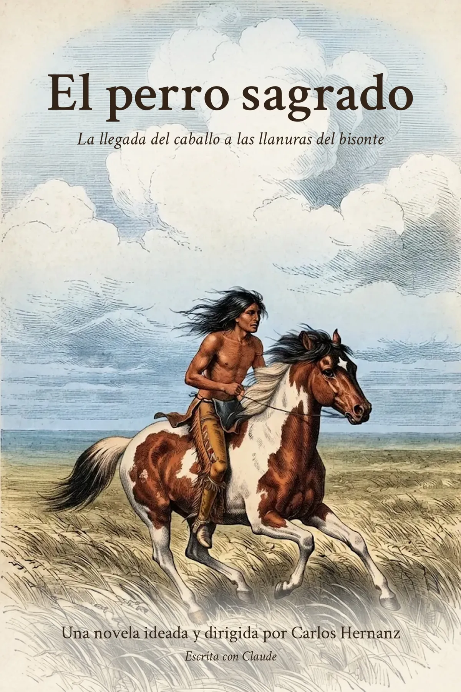
Prólogo
Cuando llegaron los españoles, en las llanuras del bisonte nadie había visto un caballo. Doscientos años después, nadie sabía vivir sin él.
Es el verano de 1706. Una columna de soldados españoles, acompañada de indios de los pueblos, sale de Santa Fe hacia las llanuras para rescatar a unos indios picurís. Diez años antes habían huido de los españoles y se habían refugiado entre los apaches de El Cuartelejo; ahora, maltratados por ellos, habían pedido al gobernador una escolta para volver. El capitán de la columna, Juan de Ulibarrí, escribió un diario de la expedición que todavía se conserva.
Sesenta y cuatro años después, en 1770, un niño de unos ocho años, Francisco Xavier Chaves, fue raptado por los comanches cuando cuidaba ovejas cerca de Albuquerque; creció entre ellos y entre los taovayas, escapó, y en 1785 ayudó a hacer la paz entre los comanches y los españoles de Texas.
Entre esas dos fechas, el caballo cambió para siempre la vida de los pueblos de las llanuras.
Los apaches, que se llaman a sí mismos Ndé, «la gente», descienden de uno de los últimos pueblos que llegaron a América. Los primeros pobladores pasaron desde Asia al final de la última glaciación, hace entre diez y veinte mil años, aprovechando que la bajada del nivel del mar había dejado al descubierto un puente de tierra en el estrecho de Bering. Mucho más tarde llegaron los pueblos de lengua na-dené, que se quedaron en Alaska y en el valle del río Mackenzie, en el oeste de Canadá; después de ellos solo llegaron los antepasados de los inuit y los aleutianos. Con el tiempo, una rama de esos pueblos, los atabascanos del sur, se separó y bajó por las llanuras al este de las Montañas Rocosas, siguiendo al bisonte. Viajaban con sus perros, que arrastraban sus pertenencias sobre dos palos. Cuándo llegaron al suroeste se discute todavía: algunos historiadores hablan de los siglos XII y XIII; la mayoría cree que poco antes de 1500. Cuando Coronado cruzó las llanuras en 1541, ya estaban allí, y los llamó querechos: cazadores de bisontes que vivían en tiendas y viajaban a pie.
Con los españoles, la relación fue desde el principio una mezcla de comercio y de guerra. Antes de que ellos llegaran, los apaches de las llanuras ya bajaban cada otoño a los pueblos del río, sobre todo a Pecos y a Taos, a cambiar carne y pieles de bisonte por maíz y mantas. Cuando los españoles se asentaron en Nuevo México, en 1598, siguieron viniendo a esas ferias, y empezaron a traer también cautivos de otras naciones para venderlos. Pero la tierra era pobre y los cautivos eran de lo poco que daba dinero: varios gobernadores organizaron entradas contra los propios apaches para capturar gente y venderla en las minas de plata del sur, en Parral. Los apaches respondieron asaltando pueblos y estancias. Así pasó el siglo XVII: un año feria, otro año guerra, y a veces las dos cosas a la vez.
En 1680 los indios de los pueblos se rebelaron, mataron a cientos de españoles y echaron a los demás hasta El Paso. Muchos caballos se quedaron atrás, y por el comercio y el robo fueron pasando a las naciones de las llanuras. En 1692 Diego de Vargas volvió a ocupar Nuevo México. En 1696 hubo otra rebelión, y algunos de los rebeldes, entre ellos los picurís, huyeron al este y se refugiaron entre los apaches de El Cuartelejo. Diez años después pidieron volver.
Cuando empieza esta historia, aquellos apaches sembraban maíz en El Cuartelejo y ya conocían el caballo. Ninguno sabía todavía lo que iba a traer.
He intentado mantener la historia real en todo lo posible: las fechas, los lugares, las personas con nombre y apellido, lo que comían, cómo vestían, cómo rezaban, cómo cazaban y cómo se vendían unos a otros. Pero para contarla ha hecho falta añadir personas y hechos que no están en los documentos. Tomás, Diego Ordóñez, Oso Pequeño y la yegua Paloma no existieron; podrían haber existido.
Al final del libro, unas notas explican, capítulo a capítulo, qué es historia y qué es invención.
El tipi solitario
Llano Estacado · una noche de otoño de 1787
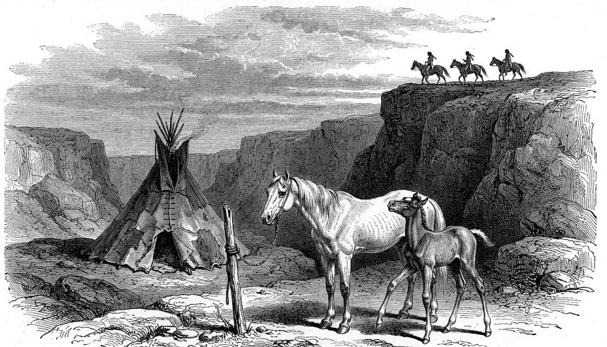
El viento le daba en la cara y olía a hierba seca.
Iba echado sobre el cuello del caballo, tan pegado a él que sentía su calor a través de la piel, y el mundo pasaba a su lado como un río. La hierba alta, dorada por el otoño, se abría delante y se cerraba detrás. Los cascos golpeaban la tierra dura con un ruido sordo que le subía por las piernas y le llegaba al pecho, como un segundo corazón.
No llevaba silla. Solo una manta doblada y un cordón de crin atado a la mandíbula del animal, que casi no necesitaba tocar. Le bastaba apretar una rodilla para que el caballo girase, o aflojar el cuerpo para que corriera más. Era pequeño, pinto, blanco con manchas castañas, de patas finas y orejas siempre atentas. Lo había robado él mismo dos veranos antes, una noche sin luna, en un rancho de los españoles al otro lado del río. Era lo que más quería en el mundo.
Se había soltado las trenzas para correr, como hacían los muchachos cuando los mayores no miraban. El pelo largo y negro se le agitaba detrás de la cabeza y le azotaba los hombros. Abrió la boca y dejó que el viento le entrara hasta el fondo. Gritó sin palabras, solo por gritar, y el grito se perdió en la llanura sin encontrar nada contra lo que chocar.
Porque no había nada. Delante, a los lados, detrás: solo hierba y cielo. Ni un árbol, ni una roca, ni una montaña. La tierra se extendía en todas direcciones, lisa como la palma de una mano, hasta un borde lejano donde se juntaba con el cielo. El viento peinaba la hierba en olas largas que corrían hacia el horizonte, y las sombras de las nubes resbalaban sobre ella sin prisa. Podía ir hacia donde quisiera. Nadie se lo iba a impedir. Esa era la sensación que más le gustaba de todas: no tener nada delante.
Tiró suavemente del cordón. El caballo bajó al trote, luego al paso, resoplando, con el cuello brillante de sudor. El jinete se volvió.
Muy atrás, como una mancha oscura sobre la hierba, venían los demás.
Eran cinco hombres y casi cincuenta caballos. Delante cabalgaba Lobo Que Camina, el mayor, muy derecho, con una manta roja sobre los hombros y un cuchillo largo de hierro español en la cintura, tan nuevo que brillaba al sol de la tarde. Detrás venían los caballos de carga, con fardos atados a los lomos, y después la manada de repuesto, suelta, que los más jóvenes guiaban con gritos y golpes de cuerda. Uno de ellos, flaco y de brazos largos, se separó del grupo y vino hacia él al galope.
—¡Oso Pequeño! —gritó Nube Corta al llegar, sin aliento—. ¡Eso no vale! ¡Has salido antes!
Oso Pequeño se rio. Tenía diecisiete inviernos y todavía creía que nadie en la llanura podía alcanzarlo.
Esperaron juntos a que llegara el grupo. Venían de Pecos, el viejo pueblo de casas de barro al pie de las montañas, donde desde la paz del año anterior los comanches podían comerciar con los españoles sin que nadie les disparase. Habían llevado pieles de bisonte, carne seca y caballos, y un muchacho apache que habían capturado en primavera y que no quiso mirarlos cuando lo entregaron. A cambio traían mantas de lana, cuchillos y puntas de hierro, maíz, tabaco y azúcar.
Lobo Que Camina había estado también en Pecos a finales del invierno anterior, cuando se hizo la paz. Lo había contado muchas veces junto al fuego: cómo el gobernador de los españoles, un hombre de pelo gris que no tenía miedo de nada, había abrazado a Ecueracapa delante de todos los jefes y le había colgado del cuello una medalla de plata con la cara de otro hombre, el rey de los españoles, que vivía al otro lado del agua grande.
Los españoles los llamaban comanches. Ellos no. Ellos se llamaban Nʉmʉnʉʉ: la gente, los seres humanos. Los demás pueblos de la tierra eran otra cosa. A Oso Pequeño aquello de la medalla le parecía una cosa sin sentido: un jefe que nunca había visto un bisonte, ni una pradera, ni un comanche, y que sin embargo mandaba en Santa Fe.
El sol ya tocaba el borde del mundo. La hierba se había vuelto del color del cobre.
Fue Nube Corta quien vio el humo.
Salía de una grieta en la llanura, uno de esos barrancos que el agua de muchas tormentas había ido abriendo en la tierra y que no se ven hasta que se está encima. Un hilo gris, fino, que subía recto en el aire quieto de la tarde.
Se acercaron despacio y se asomaron al borde. Abajo, en el fondo del barranco, junto a un charco de agua que apenas se movía, había un tipi. Era pequeño y muy viejo. Las pieles estaban ennegrecidas por el humo de muchos inviernos y remendadas por todas partes. No había perros. No había carne secándose en los palos, ni mujeres, ni niños. Solo, a unos pasos de la entrada, un caballo atado a una estaca, y otro pequeño, suelto, pegado a él.
Oso Pequeño se quedó mirándolo. Era un caballo tordo, tan viejo que el gris se le había vuelto casi blanco, con el lomo hundido y las costillas marcadas bajo la piel. Tenía la cabeza baja y no la levantó al oírlos. Solo movió una oreja.
A su lado, sin cuerda, había un potro de pocos meses, gris también, con las patas largas y finas y una estrella blanca en la frente. Nadie lo sujetaba, y no se apartaba del viejo ni un paso. Cuando los jinetes se asomaron al borde, el potro levantó la cabeza y se los quedó mirando. El viejo, no.
—Es un tipi de muerte —dijo Lobo Que Camina.
No hizo falta decir más. Todos lo sabían. Cuando un hombre era ya muy viejo y el cuerpo no le servía, cuando no podía montar ni seguir al campamento en sus viajes, a veces pedía que lo dejaran atrás. Se le levantaba un tipi en un sitio tranquilo, con agua cerca, se le dejaba comida y leña, y el campamento seguía su camino. Él se quedaba a esperar a la muerte como se espera a alguien que tiene que llegar.
—Vámonos —dijo Nube Corta en voz baja—. No es bueno molestar a quien se está yendo.
Lobo Que Camina asintió y tiró de las riendas.
Pero Oso Pequeño seguía mirando el caballo. Un comanche al que dejaban morir no se quedaba con su caballo. Su caballo se lo llevaba la familia, o se mataba sobre su tumba para que lo llevara al otro lado. Aquel viejo, quienquiera que fuese, había conseguido quedarse con el suyo hasta el final. Con dos. Y los caballos se habían quedado con él.
Bajó del pinto, le pasó el cordón por encima de la cabeza y empezó a bajar la ladera, llevándolo de la mano.
—¡Oso Pequeño! —lo llamó Lobo Que Camina.
No se volvió. No habría sabido explicar por qué lo hacía. Quizá era el caballo. Quizá era el humo, que subía tan derecho como si alguien abajo lo estuviera esperando. Quizá era solo que tenía diecisiete inviernos y había visto morir a hombres de flechas y de fiebres, pero nunca a uno de viejo.
Arriba, los otros se miraron. Luego, uno a uno, empezaron a bajar detrás de él.
Dentro olía a humo, a cuero viejo y a algo dulce y rancio que Oso Pequeño no supo reconocer.
El anciano estaba sentado junto al fuego, envuelto en una manta de bisonte tan gastada que se le veía la piel por los bordes. Era muy pequeño, o se había vuelto pequeño con los años, como se encogen las cosas que se secan al sol. La cara era un puñado de arrugas en el que los ojos casi desaparecían. El pelo, largo y blanco del todo, le caía sobre los hombros en dos trenzas finas como cuerdas.
Levantó la vista despacio. Los miró uno a uno. Habló.
Oso Pequeño no entendió nada. Eran palabras ásperas, cortadas, que sonaban como piedras rodando. Pero detrás de él oyó cómo Lobo Que Camina contenía la respiración, y cuando se volvió vio que tenía la mano en el mango del cuchillo nuevo.
—Apache —dijo Lobo Que Camina. Lo dijo como se escupe.
Los otros se quedaron quietos en la entrada. Hacía dos inviernos, los apaches habían matado a un hermano de Nube Corta junto al río Colorado. Hacía cuatro, Lobo Que Camina había traído tres cabelleras apaches de una incursión al sur. Los apaches eran el enemigo. Lo habían sido siempre, desde antes de que nadie recordara.
El anciano los miró sin moverse. Después habló otra vez, y esta vez lo hizo en comanche. Un comanche limpio, sin acento, el de alguien que lo había hablado toda la vida.
—Guarda el cuchillo, hijo. No me queda tanto como para que merezca la pena.
Lobo Que Camina no soltó el mango.
—Has hablado en apache.
—He hablado en la primera lengua que me ha venido a la boca. Cuando uno es muy viejo, las lenguas se le mezclan. —El anciano señaló el otro lado del fuego con la barbilla—. Sentaos. Ya que habéis bajado, cenaréis conmigo. Lo que tengo no es mucho, pero es vuestro.
Lo que tenía era un trozo de carne seca, duro como la corteza, y un puñado de raíces. Lo ofreció con las dos manos, como se ofrece algo valioso.
Nadie se movió. Luego Lobo Que Camina hizo un gesto con la cabeza, y Oso Pequeño y Nube Corta salieron a los caballos de carga.
A mediodía, cerca de un arroyo, habían matado una vaca joven de bisonte que se había quedado atrás de su manada. Lobo Que Camina la había alcanzado con la segunda flecha. Allí mismo, mientras la abrían, se habían comido el hígado crudo, todavía caliente, mojando cada trozo en el amargo de la hiel, como se hacía siempre después de una caza, y se habían pasado los riñones de mano en mano. El resto lo habían cortado deprisa y lo habían cargado envuelto en la propia piel: las costillas de la joroba, que era la mejor carne, la lengua entera, un trozo de tripa, los huesos largos de las patas.
Lo entraron todo en el tipi. Nube Corta traía además, muy orgulloso, una olla de hierro que había cambiado en Pecos por dos pieles. Era negra, pesada, con un asa de alambre, y la dejó junto al fuego como quien deja un trofeo.
El anciano la miró un rato largo.
—En mi primer invierno con los apaches —dijo—, mi madre cocía la carne en el estómago de un bisonte. Lo colgaba de cuatro palos, lo llenaba de agua y echaba dentro piedras sacadas del fuego, una detrás de otra, hasta que el agua hervía. Cuando el caldo estaba hecho, se comía la carne, se bebía el caldo, y al final se comía también la olla.
Nube Corta se rio, pensando que era una broma. Lobo Que Camina no se rio. Él también había visto hacerlo así, de niño, antes de que en el campamento hubiera ollas de los españoles.
Prepararon la cena entre todos, sin que nadie diera órdenes. Cada uno sabía lo que tenía que hacer. Oso Pequeño avivó el fuego con boñigas secas de bisonte que el viejo guardaba en un rincón, porque en aquel llano no había leña y las boñigas ardían sin prisa, con una llama baja y casi sin humo. Lobo Que Camina cortó las costillas en tiras y las clavó en palos verdes, inclinados sobre las brasas, para que la grasa goteara y chisporroteara en el fuego. Nube Corta llenó la olla de agua del charco y echó dentro la tripa y unos trozos de carne con las raíces del viejo. Los otros dos partieron los huesos de las patas con una piedra, a lo largo, para sacarles el tuétano.
El olor llenó el tipi. Era un olor a grasa quemada, a humo y a hierba, el olor de todas las noches buenas que Oso Pequeño recordaba desde que tenía memoria.
Cuando la carne estuvo hecha, Lobo Que Camina cortó la lengua del bisonte, que se había ido asando aparte, entera, entre las brasas. Era el bocado más tierno, el que se reservaba para los mayores o para los huéspedes. La partió en dos. Una mitad se la quedó él, porque era el jefe del grupo. La otra se la tendió al anciano, con las dos manos, igual que el viejo les había ofrecido su carne seca.
El anciano la tomó y la sostuvo un momento sin comerla. Oso Pequeño entendió que aquel gesto valía más que cualquier palabra. Un comanche no compartía la lengua del bisonte con un enemigo.
Comieron con las manos, sentados en círculo, cortando la carne con los cuchillos pegados a la boca. El viejo masticaba muy despacio, con las pocas muelas que le quedaban. Sobre todo comía el tuétano: lo sacaba de los huesos con un palito y lo chupaba con los ojos cerrados. Los jóvenes, en cambio, comían deprisa y mucho, como come la gente que no ha pasado hambre de verdad, o que la ha pasado hace poco y no quiere acordarse.
Fuera, un coyote empezó a aullar, muy cerca.
—Ese viene por los huesos —dijo Nube Corta—. Si sigue molestando, lo cazo y nos lo comemos mañana.
Los demás lo miraron. Hasta él mismo se dio cuenta de lo que había dicho y bajó la cabeza.
—Un comanche no se come al Coyote —dijo el viejo con suavidad—. Ni a sus primos, los perros. El Coyote es el que engaña a todos y el que a veces nos salva. Eso me lo enseñaron cuando llegué. —Hizo una pausa—. A mí también se me escapó una vez, el primer invierno. Me pegaron por ello.
Después de la carne, el anciano alargó la mano hacia una bolsa de cuero pintado que tenía detrás y sacó un puñado de algo oscuro y apretado. Era pasta de carne: carne seca machacada entre dos piedras, mezclada con grasa y con frutos secos, prensada en tortas que duraban inviernos enteros sin estropearse. La repartió en trozos pequeños, uno para cada uno.
—Es la última —dijo—. La hizo una mujer que ya no vive. Comedla, que yo no voy a necesitarla.
Comieron en silencio. Oso Pequeño notó en la boca el sabor dulce de las ciruelas silvestres y la grasa, y le pareció que era lo más rico que había comido nunca, aunque no supo si era por la pasta o por las palabras.
Al final, él mismo cogió la torta de azúcar de Pecos, partió un trozo y se lo dio al viejo. El anciano se lo llevó a la boca y cerró los ojos. Se quedó así un rato largo, quieto, con la cara vuelta hacia arriba, escuchando algo que los demás no oían.
—Hacía muchos inviernos —dijo por fin, sin abrir los ojos—. Los españoles echaban esto en el chocolate. Mi amo me daba a probar el fondo de su taza.
Después Lobo Que Camina sacó tabaco y llenó la pipa. Fumó y se la pasó al anciano, siguiendo el camino del sol alrededor del fuego. El viejo fumó también, despacio, y la devolvió. Algo en el tipi se aflojó.
—Venís de ver a los españoles —dijo el anciano. No era una pregunta.
—De Pecos —contestó Lobo Que Camina—. Desde la paz podemos comerciar allí. Llevamos pieles y nos dan hierro. Y ahora ellos nos ayudan contra los apaches.
Lo dijo mirándolo a los ojos. El viejo no bajó la mirada.
—¿Y qué más llevasteis?
—Caballos. Carne. Y un muchacho apache.
El anciano se quedó callado. El fuego crepitó.
—¿Cuántos años tenía?
Lobo Que Camina se encogió de hombros.
—Doce. Trece.
El viejo asintió sin prisa. No dijo nada más sobre eso. Pero Oso Pequeño, que estaba sentado a su lado, vio que le temblaba la mano con la que sujetaba la manta, y que tardó mucho en dejar de temblar.
—¿Cuántos caballos tienes, muchacho? —le preguntó de pronto, volviéndose hacia él.
Oso Pequeño se irguió un poco.
—Once. Y el pinto, que es el mejor de todos.
—Once —repitió el anciano. Y luego dijo la palabra en comanche, despacio, puuku, caballo, y sonrió como si la palabra le hiciera gracia por algo que solo sabía él—. Cuando yo tenía tu edad, el hombre que me crió tenía tres. Y lo llamaban rico. Y su abuelo, cuando era joven, no había tenido ninguno. Ni uno solo. Iba a pie detrás de los bisontes, con los perros cargando la tienda.
Nube Corta se rio.
—Eso no puede ser. Un hombre sin caballo no es un hombre.
—Eso decimos ahora —contestó el viejo—. Pero hubo un tiempo en que en toda esta llanura no había un solo caballo. Ni uno. Ni en los apaches, ni en los comanches, ni en nadie. Y no hace tanto. Lo bastante poco como para que yo conociera a hombres que lo recordaban.
Lo dijo sin levantar la voz, y nadie se rio esta vez.
Fuera, el caballo tordo resopló en la oscuridad.
—Ese caballo —dijo Oso Pequeño—. ¿Por qué no se lo llevaron?
El anciano tardó en contestar.
—Porque no son de ellos. Son míos. El viejo y su hijo. Son lo último que me queda de algo que vino de muy lejos. —Hizo un gesto vago con la mano—. Pero eso ya llegará. Todo a su tiempo.
Alargó el brazo hacia una bolsa de cuero que tenía a su lado y sacó algo pequeño, envuelto en un trozo de tela. Lo desenvolvió con unos dedos largos y torcidos que no tenían ninguna prisa. Era una cruz de metal, pequeña, oscura de tanto tiempo, colgada de un cordón deshilachado.
Los jóvenes la miraron sin entender. Habían visto cruces así en Pecos, en el pecho de los frailes, en lo alto de la iglesia de barro. Era la señal de los españoles.
—Antes de ser comanche, fui apache —dijo el anciano—. Y antes de ser apache, me llamaba Tomás.
El nombre sonó extraño en su boca, como una palabra de otro mundo. Lo era.
Lobo Que Camina se inclinó hacia delante.
—Entonces eres español.
—Era un niño —contestó el viejo—. Un niño de Nuevo México, hijo de nadie, que cuidaba los caballos de un soldado. Mi madre era india. A mi padre no lo conocí. Los españoles me llamaban mestizo, o coyote, o cosas peores. —Miró a Lobo Que Camina—. Apache, español, comanche. He sido todo lo que tú odias y todo lo que tú eres. Fui lo que me dejaron ser.
Envolvió otra vez la cruz, pero no la guardó. La dejó sobre las rodillas, debajo de la mano.
—Tenía ocho años cuando salí de Santa Fe con unos soldados que iban a las llanuras a rescatar a unos cautivos —dijo—. Volvieron todos. Todos menos yo.
Durante un rato nadie habló. Fuera, el coyote volvió a aullar, más lejos ahora, y otro le contestó desde el otro lado del llano.
—Ochenta inviernos —siguió el anciano—, más o menos. Ha pasado tanto tiempo que ya no sé qué recuerdo y qué he soñado. Pero hay cosas que no se olvidan. El ruido de los caballos en la plaza de Santa Fe la mañana que salimos. El olor del cuero y del sudor. El capitán, un hombre alto que no sonreía nunca. Y un soldado joven, mi amo, que fue bueno conmigo y al que no volví a ver.
Tosió largo rato, doblado sobre sí mismo. Oso Pequeño le acercó agua y el viejo bebió a sorbos pequeños.
—Ese soldado lo contaría mejor que yo —dijo cuando pudo—. Sabía escribir. Cada noche, junto al fuego, escribía en un cuadernito con una pluma de ganso y una tinta que hacía con hollín. Los ríos que cruzábamos, las veces que nos perdíamos, lo que decía el capitán. A veces me lo leía en voz alta. Yo no entendía la mitad, pero me gustaba oírlo. Se llamaba Diego. Diego Ordóñez. Tenía veinte años y miedo de casi todo, aunque lo disimulaba.
Entonces se volvió hacia Oso Pequeño y lo miró de una manera que el muchacho no olvidaría nunca. Como se mira a alguien a quien se conoce desde hace mucho. Como se mira a alguien de quien se va a necesitar algo.
—Tú has bajado el primero —dijo.
—Sí.
—Bien. —El viejo asintió, como si eso confirmara algo—. Luego te pediré una cosa. Pero eso al final. Primero tenéis que escuchar.
Cerró los ojos. El fuego le pintaba de rojo las arrugas.
—Cuando me acuerdo de aquel viaje, me acuerdo con sus palabras, no con las mías. Así que os lo contaré como lo habría contado él. Escuchad. Es el verano de 1706, según la cuenta de los españoles. Estamos en Santa Fe. Y un soldado joven acaba de abrir un cuaderno nuevo.
Santa Fe
Santa Fe, Picurís y Taos · del 12 al 19 de julio de 1706
Del cuaderno de Diego Ordóñez
Santa Fe, víspera de la salida, 12 de julio de 1706
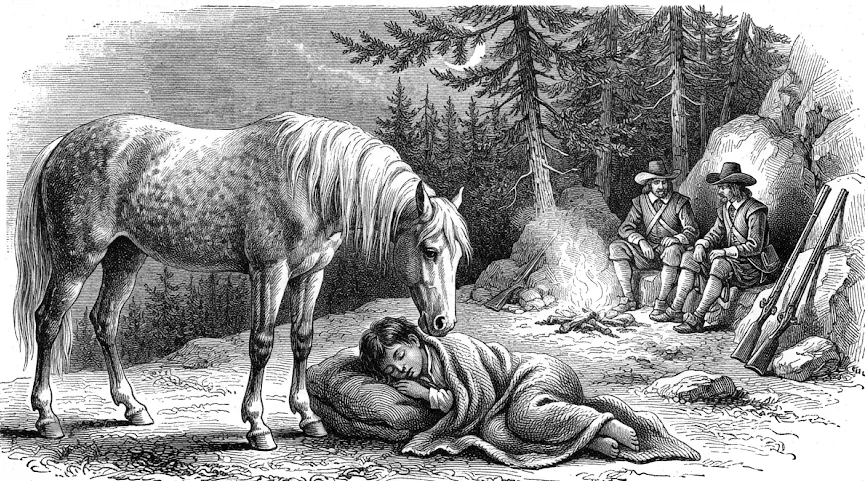
Empiezo este cuaderno porque mi madre me hizo prometer, cuando salí de la aldea, que escribiría todo lo que viera. Lo he cumplido mal. Cuatro años fuera de casa, tres en este reino, y no he puesto más que unas pocas cartas que no sé si llegan. Pero mañana salimos hacia las llanuras de los cíbolos, adonde muy pocos cristianos han ido, y si no vuelvo, que quede por lo menos esto.
El cuaderno me lo vendió un fraile por dos reales. Tiene las tapas de cuero y las hojas un poco amarillas, pero son muchas. La tinta la he hecho yo con hollín de la cocina y agua con un poco de goma, porque la buena se me acabó en el invierno. Escribe gris, pero escribe.
Es de noche. Estoy en el cuartel del presidio, junto a la casa del gobernador, sentado en el suelo con una vela de sebo que huele mal. Los demás duermen o fingen dormir. Nadie habla mucho la víspera de una salida. Se oye a los caballos en el corral, inquietos, como si supieran que mañana empieza algo.
Tomás duerme a mis pies, enroscado en una manta como un perro.
Santa Fe, 13 de julio
Hemos salido de la villa por la mañana, con el sol todavía bajo.
Quiero poner aquí cómo era la plaza esta mañana, para acordarme. Es grande y de tierra, sin un árbol, con las casas de adobe alrededor, todas del mismo color que el suelo, de modo que parece que la villa haya crecido de la tierra como crecen las hormigueras. A un lado, ocupando todo el frente, está la casa real, donde vive el gobernador, larga y baja, con su portal de vigas. Al otro, lo que queda de la iglesia vieja, que quemaron los indios en la rebelión, y la capilla que se usa mientras se hace otra. Detrás, las huertas, las acequias y, al otro lado del río, el barrio de Analco, donde viven los indios de servicio y los que llaman genízaros, que son indios cautivos comprados a los bárbaros y bautizados.
Había mucha gente mirando. Mujeres con mantones, niños descalzos, dos frailes, perros que ladraban a los caballos. Una vieja rezaba en voz alta el rosario. Los caballos estaban nerviosos y llenaban todo con el ruido de los cascos y el olor de su sudor.
Somos veintiocho soldados del presidio, doce vecinos de la milicia y como cien indios de los pueblos, que manda José Naranjo. Nos manda a todos el sargento mayor Juan de Ulibarrí, por orden del gobernador, don Francisco Cuervo y Valdés.
El gobernador salió al portal para vernos marchar. Es un hombre ya mayor, con peluca y bastón, caballero de Santiago. Dicen que es asturiano, de un lugar que se llama Grado, y que antes gobernó Coahuila y Nuevo León. Este mismo año ha fundado una villa nueva río abajo, junto a unos bosques de álamos, y le ha puesto el nombre del virrey, el duque de Alburquerque, para tenerlo contento. Los soldados se ríen de él a sus espaldas porque dicen que funda villas con treinta familias y las cuenta como si fueran ciudades. Pero a mí me parece que sabe lo que hace. Una villa empieza con treinta familias. La mía no tenía más.
El motivo de nuestra salida es este. Hace diez años, cuando la última rebelión, una parte de los indios de Picurís huyó a las llanuras con sus jefes, don Lorenzo y don Juan Tupatú. Se fueron a vivir con los apaches de un sitio que llaman El Cuartelejo, muy lejos al nordeste, a más de cien leguas. Ahora han mandado recado de que los apaches los tienen como esclavos, que pasan hambre y miseria, y que quieren volver. Piden, por amor de Dios, que vayamos a sacarlos.
Vamos a sacarlos. Eso dice el gobernador. Lo que no dice, y todos sabemos, es que también vamos a mirar si los franceses andan por las llanuras, como se dice, y a ganarnos a los apaches para que no se los gane otro.
El sargento mayor pasó revista montado en un caballo castaño, muy derecho, sin decir nada. Es alto y seco, de unos treinta y tantos años, con la cara curtida y unos ojos que no se detienen en nada mucho tiempo. Dicen que no sonríe nunca. Yo no lo he visto sonreír.
Del mismo día, por la noche
Quiero escribir de Tomás, porque si alguien lee esto alguna vez tiene que saber quién era.
Lo encontré en el invierno, en Analco, sentado a la puerta de una casa donde acababa de morir su madre de las viruelas. Era una india de San Juan, de las que bajan a servir a la villa. Tomás me ha dicho después que su madre nunca llamaba San Juan a su pueblo, sino con un nombre de su lengua, Ohkay Owingeh, que según él quiere decir el lugar de la gente fuerte. Me lo ha hecho repetir hasta que lo he dicho bien. Nadie sabía quién era el padre, o nadie lo quería decir. El niño no lloraba. Estaba sentado en el barro, con los pies descalzos morados de frío, mirando la calle como quien espera a alguien que no va a venir.
No sé por qué me paré. Quizá porque yo también estaba solo aquel invierno, lejos de los míos, sin nadie que me esperase. Le di un pedazo de pan. Se lo comió despacio, sin quitarme los ojos de encima. Al día siguiente volvió a estar allí, y al otro también. Al cuarto día me siguió hasta el cuartel y ya no se fue.
Ahora me cuida los caballos, me lustra las botas, me trae el agua, me remienda las cosas con más maña que yo. Tiene ocho años, o eso cree él. Es flaco, moreno, con unos ojos muy negros que lo miran todo. Habla castellano, pero entre dientes, y a veces se le escapan palabras de la lengua de su madre. No pide nunca nada. Eso es lo que más me duele de él: que no pida nunca nada.
Llevo dos caballos y una yegua. La yegua me la vendió hace un mes un vecino de la villa por menos de lo que vale, porque es pequeña, de mal genio y muerde a todo el que se le acerca. Es torda, de un gris como de ceniza, con las crines casi blancas. El vecino me dijo que descendía de los caballos que trajo Oñate, que fueron los primeros. No sé si es verdad. Aquí todo el mundo dice que sus caballos descienden de los de Oñate, igual que en España todo el mundo dice que desciende de godos.
Lo que sí es verdad es que la yegua muerde a todo el mundo menos al niño. Lo vi el primer día. Tomás se le acercó por delante, despacio, con la mano baja, y le dijo algo en su lengua. La yegua bajó la cabeza y le sopló en la cara. A mí, que la había pagado, me mordió en el hombro esa misma tarde.
Esta noche dormimos a pocas leguas de la villa, junto a un arroyo. Hemos cenado tortillas de maíz, un poco de carne seca de carnero y chile, que pica como el demonio y que ya me gusta más que el pan. Después he hecho chocolate en el cazo pequeño, porque llevo una tableta que compré en la villa a precio de oro. Es mi único lujo. Lo he bebido despacio y le he dejado a Tomás el fondo de la taza, con el azúcar que se queda pegado. Se lo ha comido con el dedo, rascando, con los ojos cerrados.
Antes de dormirse me ha preguntado si en las llanuras hay monstruos. Le he dicho que no. No sé si le he mentido.
Picurís, 14 de julio
Hemos subido por el camino de los pueblos, dejando a un lado la villa de Santa Cruz de la Cañada, entre lomas de color rojo y pinos bajos que huelen a resina cuando aprieta el sol. El polvo se mete en todas partes: en los ojos, en la boca, en la comida. Por la tarde ha caído una tormenta corta, con truenos que retumbaban en las sierras, y después todo olía a tierra mojada y a salvia.
En Picurís se nos han unido más hombres del pueblo. Quieren ir en persona a buscar a sus parientes. Uno de ellos, un viejo de pelo cano y cara muy arrugada, se ha acercado a hablar con Naranjo y ha llorado delante de todos, sin vergüenza. Tiene una hija en El Cuartelejo. No la ve desde hace diez años. No sabe si vive. Naranjo le ha puesto la mano en el hombro y le ha dicho algo en su lengua, y el viejo ha asentido muchas veces.
Me he quedado mirando el pueblo. Las casas son de barro, unas encima de otras, en terrazas, con escaleras de palo para subir a los tejados y unas puertas tan bajas que hay que agacharse para entrar. Las mujeres muelen maíz en piedras, de rodillas, todas juntas, y cantan mientras lo hacen. Los niños nos miraban desde los tejados.
Hace diez años esta misma gente se levantó contra nosotros y mató a frailes y a colonos. Ahora nos dan agua y maíz y nos piden que les traigamos a sus hijas. No sé qué pensar de eso. Creo que nadie lo sabe. Aquí todos han matado a alguien de los otros, y todos viven juntos, y todos rezan en la misma iglesia, y nadie habla de ello.
Tomás ha estado callado todo el día. Por la noche le he preguntado qué le pasaba. Me ha dicho que el pueblo se parece al de su madre, y que no sabía que se acordaba.
Taos, 16 de julio, día de Nuestra Señora del Carmen
Llegamos ayer a Taos. Es el último pueblo de cristianos antes de la sierra. Detrás de él ya no hay nada nuestro.
El pueblo es el más grande que he visto en este reino. Son dos montones de casas de barro, uno a cada lado de un arroyo de agua clarísima que baja de la sierra, y cada montón tiene cinco o seis pisos, uno encima de otro, como una colmena. Detrás se levanta una montaña enorme, verde, que a esta hora de la tarde se pone de color de sangre. Los de aquí la tienen por sagrada.
No seguimos adelante. Han llegado noticias de que los yutas y los comanches andan cerca, y se teme que ataquen el pueblo en cuanto nos vayamos. El sargento mayor ha decidido esperar unos días.
Es la primera vez que oigo esa palabra: comanches. Los de Taos dicen que vienen del norte, de detrás de las montañas, que son primos de los yutas y hablan una lengua parecida, y que desde hace pocos años bajan a robar caballos. Dicen que no tienen casas ni siembran, que se mueven siempre, que viven de los cíbolos y que no se sabe dónde están hasta que están encima. Un indio viejo me ha dicho, por señas y con alguna palabra en castellano, que antes eran pobres y andaban a pie con perros que les arrastraban la carga, y que ahora, desde que tienen caballos, ya no son pobres. Lo ha dicho sin miedo, como quien habla de una tormenta que viene.
He apuntado el nombre con cuidado, letra por letra, porque no lo había oído nunca: co-man-ches. Me ha parecido que debía guardarlo.
Hoy hemos oído misa en la iglesia del pueblo. El fraile ha pedido por nosotros y por los que vamos a buscar. Tomás no sabía santiguarse bien. Le he enseñado. Lo ha hecho muy serio, mirándome la mano para no equivocarse, y después lo ha repetido él solo tres veces, para no olvidarlo.
Después de la misa le he dado una cosa que tenía guardada: una cruz pequeña de latón, colgada de un cordón, que me dio mi madre al salir de casa. Le he dicho que es para que no se pierda. Se la ha colgado del cuello y se ha quedado mirándola mucho rato. No ha dicho gracias. Pero esta noche, cuando se ha dormido, la tenía apretada en la mano.
Taos, 17 de julio
Esta noche ha habido alarma.
Sería pasada la medianoche. Yo dormía junto a la pared del corral, envuelto en el capote, cuando Tomás me ha sacudido del hombro. No ha dicho nada. Solo me ha puesto la mano en la boca y ha señalado con la cabeza hacia los caballos.
Al principio no he oído nada. Sí. Los caballos estaban inquietos. No asustados todavía, pero inquietos: resoplaban, cambiaban el peso de una pata a otra, levantaban la cabeza todos hacia el mismo lado, hacia el norte, hacia el monte negro. La yegua torda tenía las orejas tiesas y los ollares abiertos, y temblaba.
—Huelen algo —me ha dicho Tomás al oído.
He despertado al cabo de guardia. El cabo ha despertado al sargento. En un momento estábamos todos en pie, a oscuras, sin encender fuego, con los arcabuces cargados y la mecha encendida tapada con la mano para que no se viera el ascua. Los indios de Naranjo se han repartido por los tejados del pueblo sin hacer ruido, como sombras. Los de Taos habían recogido las escaleras y cerrado las entradas. Nadie hablaba. Solo se oía el arroyo, y el corazón de cada uno.
Hemos estado así hasta que ha empezado a clarear. Es la espera más larga que recuerdo. En la oscuridad todo parece un hombre agachado: un matorral, una piedra, la sombra de un árbol. Dos veces he estado a punto de disparar. Dos veces no era nada.
No ha venido nadie. Con la primera luz, Naranjo ha salido con cuatro de los suyos a mirar el terreno. Ha vuelto al cabo de una hora. Había huellas de caballos sin herrar en la loma, a menos de un tiro de arcabuz del corral. Seis o siete. Habían estado allí parados mucho rato, mirándonos, y luego se habían ido al trote hacia el norte.
—Han contado los caballos —ha dicho Naranjo—. Y han contado los hombres. Y han visto que éramos muchos.
El sargento mayor no ha dicho nada. Ha mandado doblar la guardia de la caballada para las noches que quedan.
Se ha acercado a mí. Es la primera vez que me habla desde que salimos de la villa.
—¿Fue tu muchacho el que dio la voz?
Le he dicho que sí.
Ha mirado a Tomás un momento, desde arriba, con esos ojos que no se detienen en nada. Tomás le ha sostenido la mirada sin bajarla, y eso que tiene ocho años y el sargento mayor es el hombre más temido de este reino después del gobernador.
—Que duerma con la caballada —ha dicho. Y se ha ido.
No sé si ha sido un premio o un castigo. Tomás lo ha tomado por premio. Esta noche ha extendido su manta entre las patas de la yegua, y la yegua, que muerde a todo el mundo, ha bajado la cabeza y le ha olido el pelo antes de quedarse quieta, de pie, vigilando por los dos.
Taos, 18 de julio
Seguimos esperando. Los soldados juegan a los naipes, limpian los arcabuces, engrasan las cueras, discuten de mujeres y de dinero. Los caballos pastan en el valle. Hay mucha hierba y el agua del arroyo está tan fría que duelen los dientes al beberla.
He hablado esta tarde con el francés. Se llama Juan de Archebeque, aunque él dice su nombre de otra manera que no sé escribir. Es soldado como yo, pero francés de nacimiento, de una ciudad que se llama Bayona, al otro lado de los Pirineos. Va con nosotros porque el sargento mayor quiere a alguien que hable la lengua de los franceses, por si los encontramos. Se dice que los franceses andan ya por las llanuras del este, cambiando armas a los indios, y que eso no le gusta nada al virrey.
Del francés se cuentan cosas. Que de muchacho, con doce o trece años, vino en un barco con un señor francés que quería fundar una ciudad junto al mar, más allá de Texas. Que aquella gente se peleó y se mató entre sí, y que él tuvo parte en la muerte del señor: que fue él quien lo llevó hasta donde lo esperaban para matarlo. Que luego lo cogieron los nuestros, lo llevaron a España y lo tuvieron preso, y que al final lo perdonaron y lo mandaron aquí con el general Vargas.
No sé cuánto es verdad. A mí no me ha parecido mala persona. Tiene unos treinta y tantos años, habla bien el castellano, aunque con un acento que hace reír a los otros, y ha vivido entre indios. Le he preguntado si había visto las llanuras. Me ha dicho que sí, que eran como el mar, y que en el mar uno se pierde. Luego se ha quedado callado mirando el fuego, y yo he pensado que quizá todo lo que se cuenta de él es verdad, y que lleva dentro algo muy pesado que no deja nunca en el suelo.
Naranjo también ha estado aquí un rato. Es hombre de unos cuarenta y tantos años, oscuro de piel, de pocas palabras. Dicen que su abuelo era un esclavo negro y su abuela una india, y que su padre fue de los que ayudaron a la rebelión y él de los que ayudaron a la reconquista. Los indios de los pueblos lo respetan más que a cualquiera de nosotros. Conoce caminos que no salen en ningún mapa, porque no hay mapas. Habla varias lenguas de los pueblos y alguna de los apaches.
Ha mirado a Tomás, que estaba cepillando a la yegua, y le ha dicho algo en una lengua de indios. Tomás le ha contestado en la misma lengua, sin levantar la vista. Yo no sabía que el niño la hablaba tan bien.
Le he preguntado a Tomás qué le había dicho.
—Que cuide bien los caballos —me ha contestado—. Porque allí donde vamos, un caballo vale más que un hombre.
Taos, 19 de julio
Mañana salimos. No ha habido ataque. Los jinetes de la loma no han vuelto, o no los hemos visto, que no es lo mismo.
Esta noche no puedo dormir. He sacado el cuaderno y he releído lo que llevo escrito. Es poco, y está mal escrito, pero es mío.
Cuando salí de la aldea, hace cuatro años, tenía dieciséis y no había visto más que trigo y encinas. Me vine a las Indias porque en casa éramos siete hermanos y no había tierra para todos. Pensaba hacerme rico. No me he hecho rico. Gano el sueldo de soldado, que se va casi todo en el caballo, la pólvora y la ropa, y lo que sobra se lo debo al tendero de la villa. Pero he visto cosas que en la aldea nadie creería. He visto montañas que en septiembre ya tienen nieve, desiertos de piedra roja, pueblos de barro donde la gente baila con máscaras, un río tan ancho que se tardan días en seguirlo. Y ahora voy a ver las llanuras.
Tengo miedo. No se lo digo a nadie. Al niño tampoco.
He mirado a Tomás, que duerme junto a la entrada, con la cruz en la mano. Y he pensado una cosa que no me atrevo a decir en voz alta: que si me pasa algo en este viaje, nadie en el mundo se acordará de él. Que es tan de nadie como lo era antes de que yo me parara aquella tarde en Analco.
Así que lo pongo aquí, por si acaso. Se llama Tomás. No sé su apellido, porque no tiene. Es mío porque nadie más lo quiso. Si alguien encuentra este cuaderno y me he muerto, que cuide de él.
En el tipi, el anciano se calló.
Durante un rato solo se oyó el fuego. Oso Pequeño echó encima un puñado de boñigas secas, y la llama subió despacio e iluminó otra vez las caras.
—¿Así lo escribió? —preguntó el muchacho—. ¿Eso de que cuidaran de ti?
—Así o parecido —dijo el anciano—. Nunca supe leer lo que escribía. Me lo leía en voz alta, a veces, junto al fuego. Esa página no me la leyó nunca. La leí yo mucho después, con los ojos de otro, cuando ya no servía de nada. —Hizo un gesto vago—. Pero eso también llegará.
Abrió la mano. La cruz de latón brillaba un poco a la luz del fuego, gastada, casi sin forma de tanto apretarla.
—Ochenta inviernos —dijo—. Y todavía la tengo.
Nadie se atrevió a decir nada. Fuera, el caballo tordo resopló en la oscuridad, y el viento del norte empezó a soplar sobre el llano.
La sierra
De Taos a La Jicarilla, por la sierra · del 20 al 26 de julio de 1706
Del cuaderno de Diego Ordóñez
En la sierra, 20 de julio
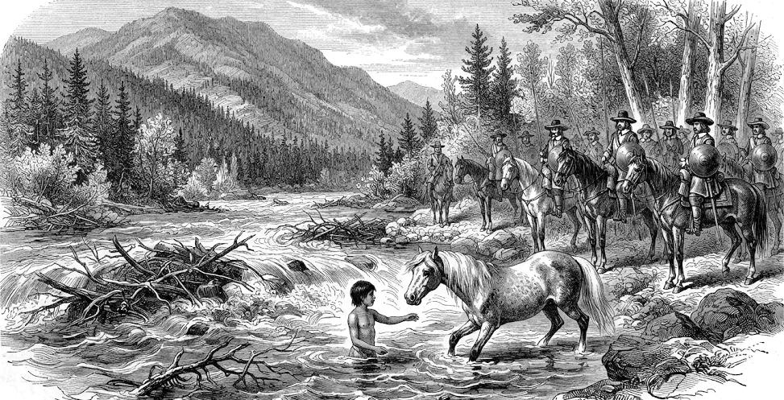
Salimos de Taos al amanecer, hacia donde sale el sol, derechos a la sierra.
Los de Taos nos vieron marchar desde los tejados, callados, con las mantas sobre los hombros. Nadie dijo adiós. Un perro nos siguió un trecho, ladrando, y se volvió. Al pasar el último campo de maíz, Tomás se giró en la silla para mirar atrás, y yo también me giré, y vi el pueblo pequeño ya, como dos montones de barro al pie de la montaña. Pensé que era la última casa de cristianos que veríamos en mucho tiempo, y no me gustó pensarlo.
El camino sube por un valle estrecho, entre pinos altos y álamos que tiemblan con el aire aunque no haga aire. Va un arroyo al lado, saltando entre piedras, tan claro que se ven las truchas paradas contra la corriente. Hace frío por la mañana, aunque estemos en julio: el aliento de los caballos sale en nubes. A mediodía calienta el sol, y por la tarde se nublan las cumbres y cae una tormenta corta, con granizo, que nos deja empapados y temblando hasta que vuelve a salir el sol.
Vamos en este orden. Delante, los indios de los pueblos, a pie la mayoría, con sus arcos, sus lanzas y algún arcabuz viejo. Suben las cuestas más deprisa que nuestros caballos y nunca parecen cansados. Detrás, el sargento mayor y los soldados, y luego las mulas de carga. Detrás de todos, la caballada, los caballos de repuesto, que guían los mozos. Tomás va allí, con Paloma de la rienda. Así llamo ahora a la yegua, por el color. Tomás dice que no es buen nombre, que las palomas son pájaros tontos. Pero lo dice sonriendo, que es la primera vez que lo veo sonreír desde que salimos de la villa.
Con nosotros viene ahora el padre fray Domingo de Aranz, de capellán. Es un fraile flaco, de barba rala, que monta una mula blanca con las piernas colgando y reza el breviario mientras va subiendo, sin mirar el camino. La mula lo mira por él.
Quiero poner aquí cómo vamos vestidos y armados, porque mi madre no se lo creería.
Encima de la camisa llevo la cuera, que es lo que nos da nombre: un sayo sin mangas que llega hasta las rodillas, hecho de seis o siete capas de piel de venado cosidas unas sobre otras. Pesa como un niño y huele a sebo y a sudor viejo, y con el sol de mediodía es un horno. Pero para una flecha a veinte pasos no hay nada mejor. Al brazo izquierdo, la adarga, un escudo de cuero de toro doblado, en forma de corazón, pintado con una cruz. Y luego todo lo demás: la lanza, que es el arma que más usamos porque la pólvora escasea y se moja; la escopeta, colgada del arzón; dos pistolas; la espada ancha, corta, que sirve tanto para un apache como para cortar ramas; y el puñal, que sirve para todo. Cada soldado debería llevar además cinco o seis caballos de remuda y una mula. Yo, que soy de los nuevos y de los pobres, tengo dos caballos y la yegua, y la mula me la ha fiado el tendero de la villa.
Todo eso, caballos incluidos, es nuestro. Lo pagamos de nuestro sueldo. Si se me muere un caballo en este viaje, lo debo. Si pierdo la escopeta en un río, la debo. Por eso los soldados viejos cuidan más el caballo que a su mujer, y lo dicen así, en voz alta, delante de la mujer. Uno de ellos, el cabo Montaño, me dijo el primer día en Santa Fe que un soldado de presidio tiene más obligaciones que ángeles caídos tiene el diablo: guardar la caballada, escoltar a los frailes, perseguir a los ladrones de ganado, llevar cartas, cortar leña, rezar, morirse. Y todo con el mismo sueldo.
De los veintiocho soldados que vamos, españoles de España solo somos tres. Los demás son de aquí, nacidos en este reino o en el de la Vizcaya, hijos y nietos de soldados, mestizos casi todos, morenos como los indios, y saben de caballos y de apaches más que cualquier capitán venido de Castilla.
Llevamos muchos regalos para los apaches: cuchillos, tabaco, bastones de mando para sus jefes, paño colorado, cuentas de vidrio, chocolate, bizcocho y harina. El sargento mayor dice que a los apaches no se les pide nada con las manos vacías, y que un cuchillo regalado a tiempo ahorra cien balas.
En la sierra, 21 de julio
Hoy ha sido un día malo.
A media mañana hemos entrado en un cañón lleno de árboles caídos, unos encima de otros, como si un gigante hubiera tirado un haz de leña. Pinos enteros, con las raíces al aire, blancos y secos como huesos. No había forma de pasar a caballo. Los indios han ido delante cortando ramas con las hachas, y nosotros detrás, llevando los caballos de la brida, saltando troncos, hundiéndonos en agujeros, rompiéndonos las calzas. Hemos tardado toda la mañana en salir. El sargento mayor lo ha llamado el cañón de La Palotada, por los palos. Nadie ha discutido el nombre.
Hemos llegado a un río que bajaba muy crecido por las tormentas de estos días. El agua iba de color marrón, rápida, arrastrando ramas y espuma. No se veía el fondo. El sargento mayor ha mandado buscar un paso, y el sargento Bartolomé Sánchez ha ido río arriba con dos hombres hasta encontrar un vado. Ha vuelto mojado hasta el pecho, chorreando, con el sombrero en la mano, pero lo ha encontrado.
Hemos pasado uno a uno. Las mulas no querían entrar. Una ha resbalado en las piedras, ha perdido la carga y casi se ahoga. Los indios la han sacado tirando de las cuerdas, metidos en el agua hasta la cintura, gritando. Un fardo de harina se lo ha llevado la corriente y lo hemos visto alejarse, dando vueltas, hasta que se ha hundido.
Cuando ha llegado el turno de la caballada, Paloma se ha plantado en la orilla. No había forma. Los mozos le pegaban con las riendas y ella reculaba, con los ojos en blanco. Uno de ellos ha cogido un palo para darle en las ancas.
Entonces Tomás se ha metido en medio. Le ha quitado el palo al mozo de un tirón, y lo ha tirado al río. Luego se ha quitado la camisa, se ha metido en el agua delante de la yegua y le ha hablado. No sé qué le ha dicho. Ha ido entrando sin prisa, de espaldas, mirándola a los ojos, con el agua por la cintura, después por el pecho, luego por los hombros. Y Paloma ha ido detrás de él, paso a paso, resoplando. Así han cruzado los dos.
Cuando ha salido estaba azul de frío y le castañeteaban los dientes. Le he echado mi capote por encima. No me ha dicho nada. Se ha quedado mirando a la yegua, que se sacudía el agua como un perro. No miraba otra cosa.
El francés, que lo había visto todo desde la otra orilla, se ha acercado y me ha dicho en voz baja:
—Ese niño entiende a los caballos. Entre los indios eso vale mucho. Cuídalo.
No sé por qué, esas palabras me han dejado intranquilo toda la tarde.
Después hemos tenido que cruzar todavía un arroyo de barrancas tan hondas y tan cerradas de maleza que hemos tenido que abrir el paso a machete, y hemos perdido otras dos horas. El sargento mayor lo ha llamado el Arroyo de las Ansias. Esta vez algunos se han reído.
En la sierra, 22 de julio
Seguimos subiendo. El aire es delgado aquí arriba, y los caballos se cansan pronto y se paran a resoplar con la cabeza baja. Yo también. Me duele el pecho al respirar, y por la tarde me duele la cabeza, apretada como con un cordel.
Pero es hermoso. No sé cómo escribirlo de otro modo. Hay prados verdes entre los pinos, llenos de flores amarillas, azules y moradas que no conozco, y arroyos que bajan cantando, y por encima de todo unas cumbres peladas, grises, con manchas de nieve todavía en las umbrías, en pleno julio. Al llegar a un collado desde donde se veía todo, el sargento mayor se ha parado y lo ha llamado el Puerto de la Florida, por las flores. Y a un poco más allá, desde donde se veían tres valles a la vez, Buena Vista. Es la primera vez que le oigo poner un nombre por algo que no sea un santo o una desgracia. Me ha parecido que, por dentro, aquel hombre seco también ve las cosas.
Hemos visto ciervos, muchos, que nos miraban sin miedo antes de saltar entre los árboles. Y un oso negro que comía bayas al borde de un prado y que ha huido al vernos, con un trotecillo torpe, como un hombre gordo que llega tarde a misa. Los indios dicen que más abajo hay alces, y que en las llanuras hay unos ciervos pequeños, de cuernos cortos, que corren más que el mejor caballo.
Por la noche hace un frío de invierno. Nos juntamos alrededor de los fuegos, envueltos en todo lo que tenemos. Los soldados cuentan historias de la guerra con los apaches y de la reconquista de la villa, cuando el general Vargas. Unos las vivieron. Otros las cuentan como si las hubieran vivido. Los más viejos ponen nombres a los sitios que vamos dejando atrás, y algunos son tan groseros que no los escribo. A dos lomas iguales, redondas, que se veían a lo lejos, uno las ha llamado las Tetas de Domínguez, por un soldado de ese nombre que tiene fama de lo que no voy a poner aquí, y el nombre ha corrido por todo el campamento y el propio sargento mayor lo ha repetido, muy serio, como si fuera un nombre de mapa. Así se bautiza este reino: la mitad con santos y la otra mitad con burlas.
La vida de cada día en el camino es siempre la misma, y la apunto una vez para no repetirla. Antes del alba, el cabo de guardia nos despierta a patadas suaves. Se recoge la caballada, que ha pasado la noche suelta y vigilada, se ensillan los caballos de ese día, se cargan las mulas, y eso solo lleva una hora larga, entre maldiciones. Se come de pie: un puñado de pinole, que es maíz tostado y molido con un poco de azúcar o de canela si hay, desleído en agua fría, y un trozo de carne seca. A mediodía, si hay agua, se para a abrevar y se comen tortillas frías. Por la noche, lo que haya, cocido en un caldero: carne, chile, frijoles. Nadie se lava más que la cara y las manos, y eso cuando hay arroyo. A los cuatro días todos olemos igual, a caballo, a humo y a cuero, y ya no lo notamos. Los piojos sí se notan. Los soldados viejos se los buscan unos a otros en las costuras de la camisa junto al fuego, como monos, sin vergüenza ninguna, y se cuentan chismes de la villa mientras tanto.
Tomás duerme cerca de los caballos, como le mandó el sargento mayor en Taos, aunque le he dicho que se acerque al fuego. Dice que si los caballos se asustan de noche él los oye antes que nadie. Le he llevado un cuenco de atole caliente y una manta más. Se ha tomado el atole a sorbos, sentado entre las patas de Paloma.
Le he preguntado qué le dice a la yegua cuando le habla. Ha tardado en contestar. Me ha dicho que le habla en la lengua de su madre, porque la yegua no entiende el castellano.
Me he reído. Él no se ha reído.
—Lo entiende —le he dicho—. La compré en la villa. Allí todos le hablaban en castellano.
—Por eso muerde —me ha contestado.
Lo alto de la sierra, 23 de julio
Esta mañana hemos llegado a lo alto del último puerto y hemos empezado a bajar por la otra vertiente. Al salir de los pinos, de pronto, se ha abierto todo delante de nosotros.
No sé cómo escribirlo.
Abajo, hacia el este, no había nada. Quiero decir que no había montes, ni árboles, ni pueblos, ni humo. Solo una tierra lisa, verde y parda, que se iba hasta el borde del mundo y allí se juntaba con el cielo, sin que se supiera dónde acababa una cosa y empezaba la otra. Las sombras de las nubes corrían por encima, muy despacio, como manchas de aceite sobre el agua. Y era tan grande que los ojos no sabían dónde pararse, y se cansaban, y volvían a buscar los pinos de detrás para tener algo a que agarrarse.
Los hombres se han quedado callados. Hasta los que habían estado antes. Hasta el sargento mayor, que ha parado el caballo y se ha quedado mirando un buen rato, con la mano en el ala del sombrero para que no le diera el sol. El fraile ha dejado de rezar.
El francés tenía razón. Es como el mar. Y en el mar uno se pierde.
Tomás estaba a mi lado, montado en Paloma, porque se lo he permitido para la bajada. Ha mirado la llanura mucho tiempo, sin decir nada, con la boca un poco abierta. Luego me ha preguntado:
—¿Y allí vive gente?
—Allí viven los apaches —le he dicho.
—¿Y cómo saben por dónde ir, si todo es igual?
No he sabido contestarle. Naranjo, que pasaba cerca, se ha vuelto y le ha dicho algo en la lengua de los indios. Tomás ha asentido, muy serio.
Más tarde, ya abajo, le he preguntado qué le había dicho Naranjo.
—Que la llanura no es igual —me ha contestado—. Que solo es igual para el que no sabe mirarla.
Del mismo día, por la noche
Al caer la tarde, ya en lo llano, hemos visto los primeros cíbolos.
Primero no sabíamos qué eran. Una mancha oscura, lejos, al pie de unas lomas, que parecía un bosque bajo o la sombra de una nube. Pero la mancha se movía. Despacio, como se mueve el agua de un charco cuando sopla el viento. Naranjo ha levantado la mano y ha dicho una sola palabra, y los indios de los pueblos se han puesto a gritar de alegría.
Eran cientos. Quizá miles. No sé contar tanto. Animales enormes, oscuros, con una giba en el lomo y la cabeza baja y peluda, como toros que alguien hubiera hecho con prisa y con demasiada lana. Pastaban sin mirarnos. El viento nos venía de cara y no nos olían.
Naranjo ha salido con seis de los suyos, a pie, agachados entre la hierba, dando un rodeo largo para no ponerse al viento. Ha tardado tanto que he creído que no volvería. Después, de pronto, la mancha entera se ha puesto a correr, y el suelo ha temblado bajo nuestros pies como cuando pasa un carro muy cargado, pero mil veces más. Y cuando ha pasado la polvareda, uno de los animales se había quedado tendido en la hierba, con tres flechas en el costado.
Lo hemos comido esta noche. Los indios lo han abierto en un momento, con una destreza que daba miedo, y se han comido allí mismo, crudo, el hígado, todavía caliente, pasándoselo de mano en mano. Naranjo me ha ofrecido un trozo. No he podido. Tomás sí. Lo ha cogido, lo ha mirado, me ha mirado a mí, y se lo ha comido. Los indios se han reído y le han dado palmadas en la espalda.
La carne asada es dulce y oscura, mejor que la de vaca. La grasa de la giba se deshace en la boca. Hemos comido hasta reventar, todos, soldados e indios, alrededor de los mismos fuegos, sin que nadie mandara nada. Es la primera noche del viaje en que he oído reír a todo el campamento a la vez.
Tomás se ha dormido con la cara manchada de grasa, entre las patas de Paloma. Antes de cerrar los ojos me ha dicho:
—Ahora ya sé por qué vive aquí la gente.
Al pie de la sierra, 24 de julio
Hoy hemos encontrado a los primeros apaches.
Ha sido a media mañana, junto a un río que baja de la sierra entre álamos. Primero hemos visto humo. Luego, de pronto, como si brotaran de la tierra, unos jinetes en lo alto de una loma: seis, ocho, diez, quietos, mirándonos. Se me ha secado la boca. He buscado a Tomás con los ojos y lo he visto detrás, con la caballada, muy derecho sobre Paloma.
El sargento mayor ha mandado parar y no ha dejado que nadie cargara el arcabuz. Ha mandado a Naranjo por delante, solo, con un paño blanco atado a la lanza. Lo hemos visto subir la loma al paso, hablar con los jinetes mucho rato, con las manos, y volver. Detrás de él venían los apaches.
Eran de la ranchería que llaman de La Jicarilla. No son como yo me los imaginaba. Los soldados viejos hablan de los apaches como de demonios, y estos eran hombres flacos y morenos, de pelo largo, con camisas y polainas de piel de ciervo, arcos a la espalda y caras graves. Algunos montaban caballos pequeños y flacos, sin silla. Otros venían a pie. Nos miraban a nosotros, y a nuestras armas, y sobre todo a nuestros caballos. Sobre todo a los caballos.
Los hemos seguido hasta su ranchería. Y aquí ha venido la segunda sorpresa. Tienen campos. En unas vegas junto al río, regadas con acequias que han abierto ellos, crecían maíz, frijol y calabaza, igual que en cualquier pueblo cristiano. Las casas eran de palos y barro, bajas, redondas algunas, y había mujeres trabajando en los campos con palos de cavar, y niños espantando a los pájaros. Uno de los soldados viejos, que lleva veinte años peleando contra apaches, se ha quedado mirando el maizal con la boca abierta y ha dicho: «Pues estos siembran». Como si hubiera visto a un perro rezar.
Me he quedado mirando a las mujeres, porque eran ellas las que hacían casi todo. Llevaban faldas de piel de ciervo hasta media pierna y una capa corta, también de piel, sobre los hombros, con flecos, y mocasines altos. Las jóvenes se recogían el pelo a los lados de la cabeza en dos moños grandes, atados con tiras de cuero; las viejas lo llevaban suelto o en trenzas. Unas molían maíz de rodillas sobre piedras, como las mujeres de Picurís. Otras cortaban calabazas en tiras largas y las colgaban de unos palos para que se secaran al sol, y desde lejos parecía que alguien hubiera tendido ropa amarilla. Otras volvían del río con agua en unas botellas hechas de cestería tan apretada que no se sale una gota, untadas por fuera con resina de pino, que las hace brillar como el cobre.
Tenían también ollas de barro, de un barro raro, lleno de pajitas brillantes, que al sol relumbraban como polvo de plata. Le he preguntado a Naranjo y me ha dicho que ese barro lo sacan de unas vetas cerca de Taos y de Picurís, y que los apaches aprendieron a hacer ollas de los indios de los pueblos, aunque las hacen a su manera, más finas, y que aguantan el fuego mejor que ninguna. Así que los mismos apaches que los soldados viejos tienen por demonios cocinan en ollas de barro de Picurís, y los de Picurís, en cambio, huyeron a vivir con ellos. Este reino es un nudo que no hay quien desate.
Una vieja se me ha acercado con una de esas ollas y me ha ofrecido algo de dentro: una especie de gachas de maíz con trozos de carne y unas cebollas silvestres, pequeñas, que le daban un gusto fuerte y dulce. He comido con los dedos, como ella me ha enseñado, y le he dado las gracias en castellano. Ella se ha reído y ha dicho algo a las otras, señalándome la barba, y se han reído todas. Naranjo, que estaba cerca, no ha querido traducirme lo que decían. Por la cara que ponía, debía de ser algo sobre lo que parecen los hombres con pelo en la cara. Me he pasado la mano por la barba sin querer, y se han reído más.
El sargento mayor ha dicho después, delante de todos, que es gente muy buena, que no roba a nadie y que se ocupa de sus milpas, y que así lo pondrá en su diario. Lo ha dicho como quien deja algo escrito para que lo lea el gobernador, y quizá el virrey.
Los jefes de esta gente nos han recibido sentados en el suelo, en círculo, a la sombra de unos álamos. Nos han dicho, por boca de Naranjo, que hay varias rancherías por estas tierras, cada una con su capitán: la de La Jicarilla, la de la Sierra Blanca, la de los Flechas de Palo y otras. Y que por encima de todos hay un jefe principal, un hombre cojo, al que llaman con un nombre largo que no he sabido escribir. El sargento mayor les ha dado tabaco, cuchillos, paño colorado y un bastón de mando para el capitán. Ellos nos han dado maíz tostado, carne seca de cíbolo y unas calabazas pequeñas, dulces, asadas en la ceniza.
Después nos han hecho una advertencia. Más allá, hacia el norte y el este, hay otras naciones, nos han dicho, malas, que vienen de lejos con muchos caballos y que les roban a ellos los caballos y las mujeres y los niños. Que tengamos cuidado. El sargento mayor les ha dado las gracias muy serio, y les ha dicho que vamos con Dios por delante. Ellos se han mirado entre sí. No sé qué han pensado. Yo he pensado en las huellas de la loma de Taos.
La Jicarilla, 25 de julio, día del apóstol Santiago
Nos hemos quedado aquí todo el día, para que descansen los caballos.
Fray Domingo ha dicho misa por el apóstol al aire libre, en un altar hecho con unas cajas y un paño, y los apaches han venido a mirar, de pie, en silencio, sin acercarse demasiado. Cuando el fraile ha levantado la hostia, uno de ellos se ha arrodillado imitando a los soldados, y luego otro, y varios. No sé si entienden lo que hacen. Pero se han arrodillado. El sargento mayor ha puesto al río, por el día, el nombre de Santiago.
Por la tarde ha pasado una cosa que quiero apuntar.
Tomás estaba en el prado con la caballada. Se han acercado unos niños apaches, cuatro o cinco, de su edad o un poco mayores, desnudos casi, con el pelo largo y los ojos muy vivos. Se han quedado a unos pasos, mirando a los caballos. Sobre todo a Paloma, que pastaba un poco apartada, con su color de ceniza brillando al sol.
Uno de ellos, el más alto, ha empezado a acercarse a la yegua. Despacio, con la mano tendida. Tomás le ha dicho algo, no sé en qué lengua, y el niño se ha parado. Se han quedado mirándose los dos. Después el niño apache ha dicho algo, y Tomás le ha contestado, y los otros se han reído.
No sé qué lenguas hablaban ni cómo se entendían. Pero al rato estaban todos sentados en la hierba, Tomás en medio, enseñándoles a trenzar una cuerda de crin de caballo, y los niños apaches enseñándole a él a tirar con un arco pequeño. El más alto no le quitaba los ojos de encima a Paloma. Antes de irse se ha acercado otra vez a ella, con la mano tendida, y esta vez Tomás no le ha dicho nada. La yegua ha echado las orejas atrás y el niño se ha apartado de un salto, riéndose. Ha vuelto a mirarla desde lejos, como se mira algo que se desea mucho.
Por la noche le he preguntado a Tomás de qué hablaban.
—De caballos —me ha dicho—. Él tiene uno. Su padre tiene tres. Dice que es mucho. Dice que su abuelo no tenía ninguno.
Luego se ha quedado callado, mirando el fuego.
—Me ha preguntado si Paloma era mía —ha dicho por fin—. Le he dicho que sí.
No le he corregido. Esta noche no.
La Jicarilla, 26 de julio
Mañana dejamos el camino del este y giramos hacia el norte, hacia donde nadie de nosotros ha estado. Los apaches dicen que de aquí a El Cuartelejo hay muchos días, y que hay tramos sin agua. Naranjo ha estado hablando con ellos hasta tarde, dibujando cosas en la tierra con un palo: ríos, lomas, aguajes. Después ha borrado los dibujos con el pie. No ha querido dejarlos ahí.
He comprado a un apache, por un cuchillo, un saco pequeño de maíz tostado. Me lo ha aconsejado el francés. Dice que en la llanura el maíz tostado salva más vidas que la pólvora.
Escribo junto al fuego, y oigo desde aquí, en la oscuridad, a Tomás hablando bajo con Paloma en la lengua de su madre. Y oigo también, más lejos, en la ranchería, a alguien que canta algo lento y triste, en una lengua que no es ninguna de las que conozco.
Que Dios nos guíe, porque nosotros no sabemos mirar esta tierra.
En el tipi, el anciano se calló. El fuego había bajado hasta quedarse en un montón de brasas rojas, y nadie se había movido para avivarlo.
—El niño alto —dijo Oso Pequeño—. El que quería tocar la yegua.
El anciano lo miró un momento, en silencio. Después asintió, muy despacio.
—Se llamaba Ciervo que Salta —dijo—. Tenía nueve inviernos. Fue el primer amigo que tuve en mi vida.
Cerró los ojos.
—Y no era de La Jicarilla. Su padre había bajado con unos pocos desde El Cuartelejo para cambiar pieles por maíz. Volvieron a su campamento antes que nosotros, por caminos que solo ellos conocían. —Hizo una pausa larga—. Cuando llegamos a El Cuartelejo, él ya estaba allí. Esperando a ver otra vez a la yegua torda.
Nadie dijo nada. Oso Pequeño notó que se le encogía algo en el pecho, sin saber todavía por qué.
La llanura sin agua
De La Jicarilla a El Cuartelejo, por la llanura · del 27 de julio al 3 de agosto de 1706
Del cuaderno de Diego Ordóñez
Hacia el norte, 27 de julio
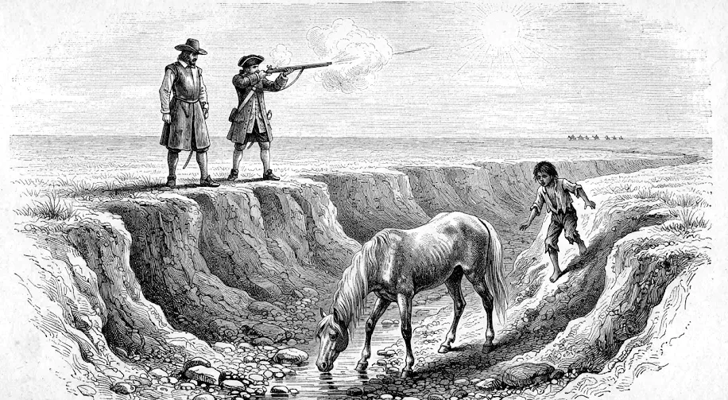
Hemos dejado La Jicarilla esta mañana, con el sol todavía detrás de las lomas.
Los apaches nos han acompañado un trecho, a caballo y a pie, hasta el último de sus campos. Allí se han parado. Su capitán ha hablado un rato largo con el sargento mayor, por boca de Naranjo, señalando al norte con la barbilla, como hacen ellos, que no señalan nunca con el dedo. Lo ha repetido otra vez: que más allá andan naciones malas, con muchos caballos, que no siembran ni tienen casa, que vienen de las montañas del norte y que se llevan lo que encuentran. Que tengamos cuidado de noche. Que no dejemos la caballada sola.
El sargento mayor le ha dado las gracias otra vez y le ha dicho otra vez que vamos con Dios. El capitán apache se ha quedado mirándolo un momento y ha dicho algo que Naranjo no ha traducido. Cuando le he preguntado después, Naranjo me ha dicho que el apache había dicho que Dios no tiene caballos.
Los niños de la ranchería han corrido detrás de la columna un buen rato, gritando, hasta que se han cansado. Tomás se ha vuelto muchas veces a mirarlos. El niño alto, el que quería tocar a Paloma, no estaba entre ellos. Tomás me ha dicho que su familia se fue anoche, antes que nosotros, por un camino suyo, de vuelta a El Cuartelejo, que es de donde son.
—Dice que nos espera allí —me ha dicho—. A Paloma y a mí.
Del mismo día, por la noche
Quiero apuntar cómo rezamos, porque en la aldea nadie se lo creería.
Al amanecer, antes de ensillar, uno de los soldados viejos canta el Alabado. Es un canto largo y lento, que aquí en el reino se canta en todas partes: en los ranchos, en los caminos, al empezar la siega. «Alabado y ensalzado sea el divino Sacramento…» Lo empieza uno solo, con voz ronca de dormir, y los demás van entrando poco a poco, cada uno a su tono, mientras recogen las mantas y buscan las botas en la oscuridad. No suena bonito. Suena a hombres. Pero cuando acaba, ya es de día, y se ha hecho el día rezando.
A mediodía, si vamos de marcha, nadie se para. Pero al toque de oración, por la tarde, el sargento mayor sí manda parar, y todos nos quitamos el sombrero, soldados e indios, y el fraile dice el Ángelus en voz alta, y nosotros contestamos. Los indios de los pueblos lo contestan en castellano, todo seguido, sin entender casi nada, y luego se santiguan dos veces, una a nuestra manera y otra a la suya, tocándose el pecho y soplando hacia el cielo. El fraile hace como que no lo ve.
Por la noche, el rosario. Cada fuego reza el suyo, a su paso, y como unos van más deprisa que otros, el campamento entero es un murmullo que no se acaba nunca, Avemarías que se cruzan en la oscuridad como grillos.
Tomás reza conmigo. Se sabe ya el Padrenuestro y la mitad del Avemaría, aunque se le enredan las palabras. Esta noche, al acabar, le he preguntado si su madre rezaba.
—Sí —me ha dicho—. A la Virgen, en la iglesia. Y en casa, a otros.
—¿A qué otros?
Se ha encogido de hombros.
—Al maíz. A la lluvia. A los que viven debajo del lago.
No le he dicho nada. Ha cogido la cruz de latón y la ha apretado, como hace siempre antes de dormirse. Creo que él reza a todos a la vez, por si acaso. No sé si eso es pecado. A esta altura del viaje, no sé si me importa.
Mesa de Maya, 28 de julio
Dos días subiendo y bajando lomas. Hoy hemos llegado al pie de una mesa enorme, de piedra negra, plana por arriba como una mesa de verdad, con las laderas cubiertas de sabinas bajas y retorcidas y de piedras sueltas que ruedan bajo los cascos. Naranjo dice que hay que cruzarla, que no tiene vuelta.
La subida ha sido mala. Los caballos resbalaban en las piedras y las mulas se paraban a cada paso. Una se ha caído y se ha roto una pata, y la han tenido que matar allí mismo. La carga la hemos repartido entre las demás. Era del cabo Montaño, y el cabo se ha quedado mirando el animal muerto mucho rato, haciendo cuentas por lo bajo de lo que le iba a costar.
Arriba, en la mesa, el viento no para nunca. Sopla de lado, caliente, seco, y te mete el polvo en los ojos y en la boca. Pero desde allí se ve todo: hacia atrás, las sierras azules por donde hemos venido; hacia delante, la llanura otra vez, sin fin, amarilla ahora, temblando con el calor como el agua.
Por la noche hemos acampado junto a un ojo de agua que olía a huevos podridos. Los caballos la han bebido igual, y nosotros también, tapándonos la nariz. El sargento mayor lo ha llamado el Ojo Hediondo. Ha dicho, sin cambiar la cara, que el nombre le venía bien, porque olía casi tan mal como nuestro conocimiento del camino. Es la segunda vez que le oigo una broma. Los soldados se han reído mucho, más por la sorpresa que por la gracia.
Al bajar de la mesa, 29 de julio
Hemos bajado por la otra parte de la mesa siguiendo un arroyo seco, de arena blanca, que poco a poco se ha ido haciendo arroyo de verdad, con un hilo de agua y unos álamos flacos.
Aquí abajo todo está lleno de vida, aunque al principio no se vea. Hay unos animalitos del tamaño de un conejo, pardos, que viven en agujeros, cientos de agujeros, un pueblo entero bajo tierra. Se ponen de pie en la boca de su madriguera, tiesos como centinelas, y cuando nos acercamos dan un silbido agudo y se meten dentro todos a la vez. Los soldados los llaman perritos, porque ladran. Tomás se ha pasado la tarde intentando coger uno y no lo ha conseguido. Al final se ha quedado tumbado en la hierba, muy quieto, mirando un agujero, y el perrito ha salido, lo ha mirado a él, le ha ladrado y se ha vuelto a meter. Tomás se ha reído tanto que se ha tenido que sentar.
Hemos visto también manadas de unos ciervos pequeños, de color canela, con el anca blanca y unos cuernos cortos y torcidos hacia dentro. Son los que decían los indios, los que corren más que el mejor caballo. Es verdad. Dos soldados han salido tras ellos y los ciervos se han ido alejando sin prisa, como si jugaran, y se han parado a mirarlos desde una loma, y luego han desaparecido. Los soldados han vuelto con los caballos reventados y sin nada.
Y hay serpientes. Esta tarde, al desmontar, he estado a punto de pisar una, gruesa como mi muñeca, enroscada a la sombra de una mata. Ha hecho un ruido seco con la cola, como unas semillas dentro de un calabacín. Me he quedado helado. Naranjo la ha matado de un golpe de lanza, le ha cortado la cabeza, la ha enterrado con cuidado y ha guardado la cola de cascabel en su bolsa. Dice que es buena para los dolores de muelas.
El río grande, 30 de julio
Hoy hemos llegado a un río muy ancho, más ancho que ninguno que haya visto en este reino. Baja de las montañas del poniente y se va hacia donde sale el sol, y nadie sabe adónde llega. El agua es parda, baja, llena de bancos de arena, y va repartida en muchos brazos que se juntan y se separan, de modo que no se sabe dónde está el río de verdad.
Lo hemos cruzado por la tarde. Naranjo ha buscado el paso, metiéndose en el agua con su caballo, probando el fondo con la lanza. La arena del fondo se mueve, y si un caballo se para, se hunde. Hay que pasar sin detenerse.
El fraile ha propuesto que, mientras pasaba la gente, todos los que esperábamos en la orilla rezáramos el Credo, despacio, para que Dios nos tuviera de su mano. Así lo hemos hecho. Y como no hay relojes en la llanura, el Credo nos ha servido de reloj: he contado treinta y tres Credos, rezados sin prisa, desde que entró en el agua el primer indio hasta que salió por la otra orilla la última mula. Treinta y tres veces he dicho «creo en Dios Padre todopoderoso», mirando a Tomás y a Paloma meterse en el agua marrón, y treinta y tres veces me he olvidado a mitad de lo que decía.
Han pasado bien. Todos hemos pasado bien.
El sargento mayor le ha puesto al río el nombre de Río Grande de San Francisco. Luego ha mandado acampar en la orilla y ha dejado que los hombres se bañaran. Ha sido una fiesta. Soldados e indios, todos desnudos en el agua parda, chapoteando como niños, frotándose el polvo de una semana con arena, lavando las camisas y tendiéndolas en los álamos. Hasta el fraile se ha metido hasta las rodillas, remangado el hábito. Tomás ha bañado a Paloma frotándola con un puñado de hierba, y la yegua se ha dejado como una reina.
Por la noche he contado los piojos que me he quitado de la camisa. Diecinueve. Al cabo Montaño le he ganado por cuatro.
Al norte del río, 31 de julio
Hoy ha empezado lo malo.
Naranjo ha hablado con el sargento mayor al amanecer, apartados de los demás, y después el sargento mayor nos ha reunido a todos. Desde aquí hasta El Cuartelejo, ha dicho, hay que cruzar una llanura sin agua. Sin ríos, sin arroyos, sin ojos. Dos días, quizá tres. Que cada uno llene todo lo que tenga.
Hemos llenado los botos de cuero, las calabazas, los guajes, hasta los cascos de las escopetas que no se usaban. Los indios han llenado unas tripas de cíbolo atadas por los dos extremos y se las han colgado del cuello como collares. Los caballos han bebido hasta que no podían más, con la barriga hinchada, y luego hemos salido.
La llanura de aquí no es como la de antes. No hay lomas. No hay árboles. No hay nada en ninguna dirección, ni una piedra, ni un arbusto alto. Solo hierba corta, rizada, de un verde gris, que cruje bajo los cascos, y el cielo enorme encima, blanco de calor. El sol cae a plomo, y la cuera es un horno, y el sudor se te seca en la cara antes de bajar al cuello y te deja una costra de sal.
Lo único que guía el camino son unos montones de hierba arrancada y apilada, del tamaño de un perro echado, que los apaches dejan de trecho en trecho para no perderse. Naranjo va de uno a otro como un perro de caza sigue un rastro. A veces tarda mucho en encontrar el siguiente. Entonces toda la columna se para, y espera, y nadie habla, y se oye solo el viento en la hierba y el resoplar de los caballos.
A mediodía hemos parado una hora, porque los caballos no podían más. No hay sombra en ninguna parte. Los soldados se han tumbado debajo de los caballos, a la sombra de la barriga, y los indios se han tapado la cabeza con las mantas y se han quedado inmóviles, como piedras. Nadie ha comido, porque comer da sed.
Tomás no se ha tumbado. Ha mojado un trapo en la poca agua de su guaje, la suya, la que le tocaba beber a él, y le ha frotado a Paloma los ollares y el interior de la boca, despacio, como hacía Naranjo con su caballo. Ha hecho lo mismo con mis dos caballos. Le he dicho que esa agua era para él. Me ha mirado como se mira a un tonto.
—Si se mueren los caballos —me ha dicho—, nos morimos nosotros.
El cabo Montaño, que lo había oído, se ha reído por lo bajo y ha dicho que ese mocoso sabía más de la llanura que el virrey. Luego, sin decir nada más, ha mojado él también un trapo y se lo ha pasado a su caballo por los ollares. Y después otro soldado. Y otro.
Por la noche nos han seguido los lobos. No se acercaban. Se les veía a lo lejos, a la luz de la luna, sentados en la hierba, grises, mirándonos, esperando a ver si caía algún caballo. Paloma no ha dormido. Ha estado toda la noche de pie, con las orejas hacia ellos, y Tomás a su lado, despierto también, con un palo en la mano.
Tomás me ha enseñado una cosa hoy. Me ha visto mirar al horizonte, buscando algo, una sombra, un árbol, cualquier cosa, y me ha dicho:
—No mires lejos. Cansa.
—¿Y adónde miro?
—Al suelo. A la hierba. A lo que tienes cerca.
Le he hecho caso, y es verdad. Cuando miras lejos, la llanura te traga. Cuando miras cerca, ves cosas: un escarabajo negro empujando una bola de estiércol, una flor amarilla del tamaño de una uña, el rastro de una serpiente en el polvo. Y el día pasa.
No sé dónde ha aprendido eso un niño de ocho años que no había salido nunca de Santa Fe. Quizá no lo ha aprendido. Quizá lo sabía.
Perdidos, 1 de agosto
No escribo mucho hoy. Tengo la boca tan seca que me cuesta hasta pensar.
Esta mañana Naranjo no ha encontrado el montón de hierba siguiente. Hemos dado vueltas toda la mañana. Al mediodía estábamos perdidos, todos lo sabíamos, aunque nadie lo decía. El agua se acabó a media tarde. Los botos están vacíos y pesan como si estuvieran llenos de vergüenza.
Los caballos sufren más que nosotros. Van con la cabeza baja, arrastrando los cascos, y algunos se paran y no hay forma de hacerlos andar. Los indios caminan con una piedrecita en la boca, que dicen que hace salir la saliva. Lo he probado. Es verdad, un poco. El fraile reza en voz baja todo el rato, ya no con el breviario, sino de memoria, moviendo los labios agrietados.
Por la tarde ha empezado a tronar a lo lejos, hacia el norte, y hemos visto una cortina gris colgando del cielo, lluvia. Nos hemos quedado mirándola como se mira un banquete a través de una ventana. Nunca ha llegado. Se ha deshecho en el aire antes de tocar el suelo.
Al anochecer el sargento mayor ha mandado a dos hombres, el alférez Fresqui y otro, a buscar agua a caballo, cada uno por un lado. Han salido con los mejores caballos que quedaban. Nos hemos quedado esperando, sin hacer fuego, porque no había con qué cocinar ni para qué. He rezado el rosario con los demás, en voz baja, de rodillas en la hierba. Nunca he rezado tan de verdad.
Pasada la medianoche ha vuelto uno de los dos. Había encontrado un charco en un hoyo, a dos leguas. Poca agua, verde, caliente, llena de bichos. Hemos ido todos a oscuras, siguiéndolo, y hemos bebido como animales, a gatas, con la cara metida en el barro. Nunca nada me ha sabido tan bien.
Perdidos otra vez, 2 de agosto
El charco no daba para los caballos. Al amanecer estaba seco, pisoteado, convertido en barro. Y Naranjo no encontraba el camino.
El sargento mayor ha hecho entonces una cosa que nunca le había visto hacer. Ha dividido a toda la columna en grupos pequeños, de cinco o seis, y los ha mandado en abanico, cada uno en una dirección, con orden de disparar un tiro al aire si encontraban agua. Es peligroso. Si hay enemigos, nos cogen separados. Pero no había otra.
A mí me ha tocado con el francés, con dos indios de Picurís y con Tomás, que no se ha querido separar de mí. Paloma iba con nosotros, de reata. Hemos andado hacia el noreste toda la mañana, con el sol en la cara. No había nada. A mediodía el francés ha dicho que deberíamos volver, y he estado a punto de decirle que sí.
Entonces Paloma ha levantado la cabeza.
Llevaba toda la mañana con ella colgando, como todos los caballos. Y de pronto la ha levantado, con las orejas tiesas y los ollares muy abiertos, y ha tirado de la reata hacia la izquierda, hacia un sitio donde no se veía nada más que hierba. Tomás ha dicho una sola palabra en la lengua de su madre y ha soltado la reata. La yegua se ha ido al trote, después al galope, cansada como estaba, y Tomás detrás de ella, corriendo, y nosotros detrás de los dos.
Era un arroyo. Un arroyo seco, hundido en la llanura, que no se veía hasta que estabas en el borde. Abajo, en el fondo, entre unas piedras, brotaba un hilo de agua clara. Paloma ya tenía el hocico metido en él.
El francés ha disparado su escopeta al aire. Ha sonado como un trueno en todo aquel silencio. Al rato hemos oído otro tiro, lejos, y otro, y poco a poco han ido llegando los grupos, uno detrás de otro, con los caballos medio muertos, hasta que estábamos todos alrededor de aquel hilo de agua, esperando turno, bebiendo con las manos, llenando los botos, abrazándonos.
Los soldados y los indios daban gracias a Dios y a la Virgen a gritos. El sargento mayor ha llegado de los últimos. Ha bebido, se ha secado la boca con la manga y ha dicho que había sido buena suerte. Así, buena suerte. Luego, cuando ha visto a todos los demás de rodillas, ha callado un momento, se ha quitado el sombrero y ha dicho que el ojo se llamaría de Nuestra Señora del Buen Suceso.
Nadie le ha dicho que lo había encontrado una yegua. Yo tampoco. Pero el francés me ha mirado, y ha mirado a Tomás, que estaba sentado en el borde del arroyo con la cara mojada, acariciando el cuello de Paloma, y me ha dicho en voz baja, igual que en el río de la sierra:
—Te lo dije. Cuídalo.
El Cuartelejo, 3 de agosto
Escribo de noche, a la luz de un fuego de verdad, con la barriga llena y la cabeza todavía dándome vueltas.
Esta mañana, siguiendo el arroyo del Buen Suceso, hemos encontrado otra vez los montones de hierba de los apaches. Naranjo ha soltado una carcajada al ver el primero, la única que le he oído en todo el viaje. A media mañana hemos visto humo. Muchos humos, delgados, subiendo de un valle largo y bajo, con árboles a lo largo de un río y campos verdes.
Y después, en lo alto de una loma, a la entrada del valle, hemos visto una cruz.
Era una cruz grande, de palos atados con correas, más alta que un hombre, clavada en la tierra en lo más alto de la loma. La habían puesto los apaches, nos han dicho luego, en cuanto supieron que veníamos, para que supiéramos que nos recibían en paz. Una cruz de cristianos, levantada por gentiles, en mitad de la tierra más lejana que ha pisado nunca un español de este reino.
Me he quitado el sombrero sin pensarlo. Todos se lo han quitado. El fraile se ha bajado de la mula y se ha puesto de rodillas en la hierba, y ha llorado.
Después han bajado los apaches a recibirnos, muchos, a caballo y a pie, hombres, mujeres, niños, perros, todo el campamento, gritando y riendo, y entre ellos, delante de todos, corriendo más que ninguno, venía un niño alto, de pelo largo, con los ojos muy vivos.
No me ha mirado a mí. No ha mirado a los soldados, ni las armas, ni al sargento mayor. Ha venido derecho a la caballada, derecho a Tomás. Se han quedado los dos frente a frente, sin saber qué decirse. Y luego el niño apache ha mirado a Paloma, y la ha mirado como se mira algo que uno lleva días soñando.
En el tipi, el anciano se calló.
Fuera, el viento del norte había arreciado y hacía crujir las pieles. Oso Pequeño se dio cuenta de que tenía la garganta seca, como si él también hubiera cruzado la llanura sin agua, y bebió un sorbo del cuenco.
—La yegua encontró el agua —dijo Nube Corta—. Y nadie lo dijo.
—Nadie lo dijo —asintió el anciano—. Los españoles dieron las gracias a su Dios y a su Virgen. Y tenían razón en dar las gracias, porque estábamos vivos. Pero el agua la encontró Paloma.
Se quedó mirando el fuego.
—Fue el primer regalo que nos hizo el caballo en aquel viaje —dijo—. El segundo fue el que lo cambió todo. Y ese no lo dio la yegua. Lo cobró.
El Cuartelejo
El Cuartelejo, en el corazón de la llanura · del 4 al 12 de agosto de 1706
Del cuaderno de Diego Ordóñez
El Cuartelejo, 4 de agosto
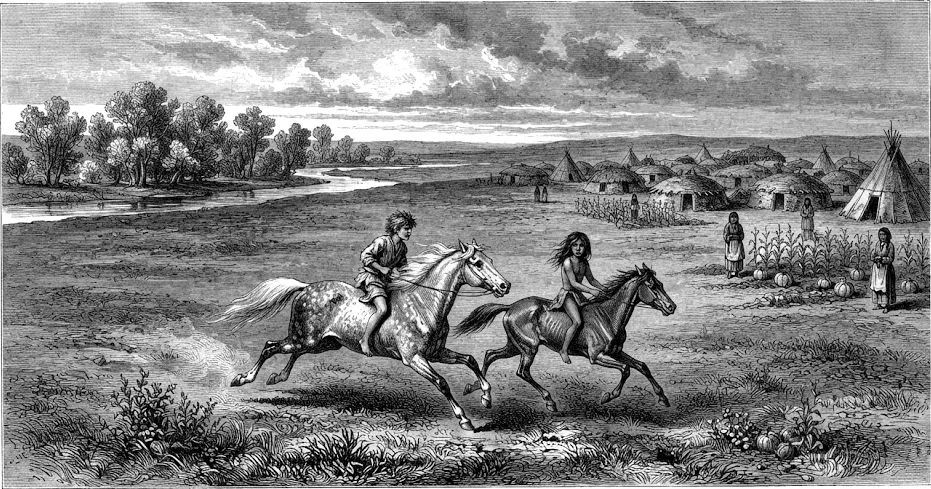
Hoy el sargento mayor ha tomado posesión de esta tierra en nombre del rey.
Ha sido por la mañana, en lo alto de la loma de la cruz. Nos ha mandado formar a todos, soldados, milicianos e indios, con las armas limpias y los caballos ensillados, como si estuviéramos en la plaza de Santa Fe. Los apaches miraban desde abajo, cientos, en silencio, sin entender qué hacíamos.
El alférez real, don Francisco de Valdés, llevaba el estandarte, que hemos traído enrollado en una funda de cuero todo el viaje y que hoy hemos visto por primera vez al viento: rojo y amarillo, con las armas del rey bordadas, un poco descolorido por el sol. El sargento mayor ha desenvainado la espada y ha dado con ella tres golpes al aire, a un lado y a otro. Ha arrancado un puñado de hierba y lo ha tirado a los cuatro vientos. Ha cogido piedras del suelo y las ha lanzado lejos. Y ha gritado, con una voz que no le conocía, que tomaba aquella tierra y todas las de alrededor, con sus ríos, montes, aguas, pastos y gentes, en nombre de nuestro rey y señor don Felipe Quinto, y que si había alguien que lo contradijera, que hablara.
Nadie ha hablado. Los apaches no entendían una palabra.
Nosotros hemos gritado tres veces «¡Viva el rey!», tirando los sombreros al aire, y hemos disparado una salva. Los caballos de los apaches se han espantado y han echado a correr por la llanura, y los apaches han tenido que salir detrás de ellos. Algunos soldados se han reído. A mí no me ha hecho gracia. Me ha parecido que tomábamos posesión de una casa mientras los dueños perseguían a sus caballos.
Después ha venido la parte del fraile. El capitán de los apaches, un hombre ya mayor, alto, con el pelo cano trenzado y la cara pintada de rojo, nos ha llevado él mismo al pie de la cruz que habían levantado. Allí fray Domingo ha bendecido la tierra con agua bendita, ha rezado unas oraciones largas en latín, y luego hemos cantado todos un himno a Nuestra Señora, tres veces seguidas, porque así lo ha querido el fraile. Los apaches se han ido acercando mientras cantábamos. Al final había mujeres y niños alrededor de la cruz, escuchando, muy serios. Alguna mujer movía los labios, intentando aprenderse la canción.
El sargento mayor ha dicho luego, en la tienda, que estos apaches están más inclinados a la fe que muchos indios bautizados que conoce, y que así lo pondrá en su diario. No sé. Creo que estos apaches están inclinados a tener amigos con caballos y con hierro, porque saben que hay naciones malas al norte y al este que también los tienen. Pero eso no se pone en los diarios que lee el virrey.
El Cuartelejo, 5 de agosto
Quiero escribir cómo es esto, porque nadie de mi aldea va a ver nunca nada parecido.
El Cuartelejo no es un pueblo. Es un valle largo y bajo, con un río tranquilo y árboles en las orillas, álamos y sauces, y a lo largo del río, desperdigadas, muchas rancherías, unas lejos de otras. Cada una tiene su capitán y su gente, y todas juntas son lo que los españoles llamamos El Cuartelejo, que quiere decir el rincón más lejano, y de verdad lo es.
Las casas de los apaches son de dos clases. En verano, cuando están junto a sus campos, viven en chozas de ramas y barro, bajas, redondas, que se hacen en un día. Cuando se van a cazar el cíbolo, en otoño y en invierno, viven en tiendas de piel, en forma de cono, que montan y desmontan las mujeres en lo que tarda uno en ensillar. Las tiendas las llevan a rastras los perros. Lo he visto hoy: perros grandes, lobunos, con dos palos atados a los lados del lomo, y entre los palos, por detrás, un entramado de correas donde cargan la tienda doblada, las ollas, los niños pequeños. Un perro arrastra un peso que yo no podría llevar a la espalda más de una legua.
Y los caballos ahora empiezan a hacer lo mismo, con palos más largos y cargas más grandes. Hoy he visto un caballo viejo arrastrando una tienda entera, y detrás, atado al mismo armazón, un perro que arrastraba otra cosa más pequeña, como si el perro le enseñara al caballo el oficio.
Lo más raro de todo está en una curva del río, al pie de un ribazo. Allí hay unas casas de piedra. Pocas, siete u ocho, de una sola planta, pegadas unas a otras como en los pueblos de Nuevo México, con una acequia que trae agua del río a unos campos de maíz. Las hicieron los de Picurís cuando huyeron aquí hace diez años, y algunos de Taos antes que ellos. Han hecho en mitad de la llanura un pueblo pequeñito, igual que el suyo, como quien se lleva al destierro un puñado de tierra de su casa.
Ahí viven ahora los picurís que hemos venido a buscar. Y viven mal.
El Cuartelejo, 6 de agosto
Hoy he visto a los picurís.
Son unos sesenta, entre hombres, mujeres y niños, repartidos entre varias rancherías. Los de las casas de piedra son los que están mejor. Los demás viven entre los apaches, en sus chozas, trabajando para ellos: cargan leña, acarrean agua, curten pieles, cuidan los campos. No están atados ni encerrados. Pero no pueden irse. Y les pertenecen. Ahí está la diferencia.
He visto a don Lorenzo, el que fue capitán de Picurís cuando la rebelión. Es un viejo de pelo blanco y cuerpo todavía fuerte, con una cicatriz en la frente. Cuando ha llegado el sargento mayor, se ha puesto de rodillas y le ha besado la mano, y le ha hablado mucho rato, llorando. Naranjo traducía en voz baja. Decía que llevaban diez años sufriendo, que los apaches los trataban como a esclavos, que habían muerto muchos de hambre y de frío los primeros inviernos, y que habían rezado cada día para que Dios les mandara a los españoles a sacarlos de allí.
Diez años antes, este mismo hombre levantó a su pueblo contra los españoles, y mataron a gente nuestra, y luego huyó aquí para no volver a ver a un español nunca más. Ahora besaba la mano al sargento mayor. El sargento mayor lo ha levantado del suelo con mucha cortesía y lo ha abrazado. No sé qué pensaban por dentro ninguno de los dos.
El viejo de Picurís que vino con nosotros, el que buscaba a su hija, la ha encontrado. Está viva. Tiene ahora unos veinticinco años y dos hijos, de un apache. Se han abrazado en la puerta de una choza, mucho rato, sin hablar. Ella ha dicho algo que el viejo no ha querido traducir a nadie. Y por la noche he visto al viejo sentado solo, junto al río, mirando el agua. Naranjo me ha dicho que la hija no quiere volver. Que sus hijos son apaches, que su hombre es bueno con ella, y que ya no sabe a qué tendría que volver.
El Cuartelejo, 7 de agosto
Aquí la cosecha se ha hecho ya, a finales de julio, antes de llegar nosotros. Las mujeres apaches tienen el maíz colgado en ristras de las ramas, secándose, de colores: amarillo, rojo, morado, casi negro. Tienen calabazas grandes, frijoles en montones sobre pieles extendidas al sol, y sandías. Sandías, en mitad de la llanura, a cien leguas de cualquier cristiano. Me han dado una esta tarde, fresca, sacada del río donde la tenían metida en el agua. Me la he comido sentado a la sombra de un álamo, con el jugo chorreándome por la barba, y he pensado que es lo más parecido al paraíso que he tenido en años.
Hoy ha empezado el trato por los cautivos.
Algunos de los picurís no son de los que vinieron libres huyendo, sino que los apaches los tienen como suyos, porque los compraron o los ganaron en algún trato o en alguna guerra. Esos no los sueltan por las buenas. Hay que pagarlos. El sargento mayor se ha sentado con los capitanes en un círculo, en el suelo, a la sombra, y han hablado toda la tarde, fumando y callando a ratos largos. Al final se ha cerrado el trato: por cinco picurís que eran de los apaches, una docena de caballos.
Doce caballos por cinco personas. Así se paga aquí. Ni plata ni paño ni cuchillos. Caballos.
Esta noche los soldados han estado discutiendo junto al fuego qué caballos se darán, porque los caballos son de cada uno y nadie quiere perder los suyos. El sargento mayor ha dicho que se darán de los de la remuda del presidio, los más viejos y los más flojos. Los apaches los han visto ya. Han ido a la caballada con el capitán, mirando los dientes, palpando las patas, abriendo los ollares, como gitanos en una feria de Castilla. Y los que han elegido no son los más flojos.
Y se han quedado mucho rato mirando a Paloma.
El Cuartelejo, 8 de agosto
El sargento mayor ha mandado hoy dos partidas de soldados a otras rancherías, más lejos, para recoger a los picurís que viven allí y quieren volver. Una de ellas está a cuarenta leguas. Tardarán días. Mientras tanto, nos quedamos aquí.
Los días son largos y tranquilos, y los aprovecho para mirar. Las mujeres apaches trabajan sin parar desde que sale el sol. Curten las pieles de cíbolo estiradas en el suelo con estacas, raspándolas con unas piedras afiladas, y luego las frotan con los sesos del mismo animal, que dicen que las ablandan. Huele que tira para atrás. Muelen maíz. Cosen con tendones y con unas leznas de hueso. Los hombres, cuando no cazan, hacen flechas, sentados en corro, enderezando las varas con los dientes y calentándolas al fuego, y hablan, y se ríen, y juegan a unos juegos de azar con huesos pintados, en los que apuestan las flechas que acaban de hacer.
Los niños corren por todas partes, desnudos hasta que hace frío. Los más pequeños van colgados a la espalda de sus madres, atados a una tabla, sin llorar nunca. Los mayores juegan a la guerra con arcos pequeños y flechas sin punta, a cazar perritos de la pradera, y, sobre todo, a los caballos. Juegan a robarse caballos unos a otros. Uno hace de caballo, a cuatro patas, y otro se lo lleva atado de una cuerda, y el dueño sale corriendo detrás gritando. Es su juego favorito. Así aprenden.
Tomás juega con ellos. Desde que llegamos, Tomás está con Ciervo que Salta día y noche. Así se llama el niño alto, el de La Jicarilla. Se llama así, me ha explicado Tomás, porque de pequeño saltaba por encima de las matas como los ciervos de la llanura. Su padre es uno de los hombres principales de su ranchería, un apache serio, de pocas palabras, con la mano izquierda llena de cicatrices de una quemadura antigua. Los suyos lo llaman Mano Quemada.
Mano Quemada tiene tres caballos. Es mucho, aquí. Ciervo que Salta monta uno de ellos, un caballito bayo y flaco que no corre nada, y se pasa el día enseñando a Tomás a montar a la manera apache: sin silla, con una cuerda atada a la mandíbula, guiando con las rodillas, colgándose del costado a galope. Tomás, a cambio, le enseña lo que sabe de caballos: cómo acercarse a uno que no te conoce, cómo hablarle, dónde tocarle para que se calme, cómo mirarle a los ojos sin desafiarlo.
A Paloma, Ciervo que Salta no se puede acercar. Lo intenta todos los días. Ella le enseña los dientes y le echa las orejas atrás. Tomás le ha dicho que no se le acerque nunca por detrás. Que nunca, por nada.
El Cuartelejo, 9 de agosto
Hoy nos han traído el fusil.
Ha sido por la tarde. Un apache de otra ranchería ha llegado a caballo con unos cuantos más y ha pedido ver al sargento mayor. Traía envuelto en una piel un arma de fuego. No es española. Es más larga y más fina que nuestras escopetas, con la culata de una madera clara y unos adornos de latón que no he visto nunca.
El apache ha contado, por boca de Naranjo, que hace poco fueron a guerrear contra los pananas, que es una nación que vive lejos, al este, junto a un río grande, y que allí mataron a un hombre blanco y a su mujer, también blanca, que vivían con los pananas. Que el hombre llevaba aquel arma. Que tenía el pelo del color del fuego. Que hablaba una lengua que no era la nuestra.
Han llamado al francés. Lo ha cogido, lo ha mirado por todos lados, ha leído unas letras grabadas en el cañón, y ha dicho, muy despacio, que era francés.
Nadie ha dicho nada durante un rato.
Después el sargento mayor ha hablado con los suyos, aparte. El arma no podía quedarse en manos de los apaches, porque está prohibido que los indios tengan armas de fuego, pero tampoco podía quitársela sin más, porque el apache la había traído como regalo y como prueba de amistad. Al final, de común acuerdo, han decidido darle a cambio una de nuestras escopetas. Una escopeta española, a un apache. Contra todas las órdenes del virrey. Lo pondrá en su diario, ha dicho el sargento mayor, para que se sepa que fue de común acuerdo.
Esta noche el francés no ha venido al fuego. Lo he visto solo, junto al río, sentado en una piedra, con el fusil francés entre las rodillas. No me he atrevido a acercarme. A veces pienso que, en el fondo de todo, ese hombre no sabe ya de qué lado está. Y que lo sabe.
El Cuartelejo, 10 de agosto, día de San Lorenzo
Hoy es el día del santo de Picurís, San Lorenzo, y el fraile ha dicho misa para ellos al pie de la cruz. Han venido todos los picurís, limpios, con lo mejor que tienen, los hombres con el pelo recogido y las mujeres con mantas nuevas. Han cantado en su lengua unas canciones que no conozco, mezcladas con las nuestras. Don Lorenzo, el viejo capitán, ha llorado todo el tiempo, sin taparse la cara. Es su santo también.
Por la tarde ha pasado una cosa que me ha dejado mal cuerpo.
Mano Quemada ha venido a mi fuego. Venía con Ciervo que Salta y con Naranjo para que le tradujera. Se ha sentado sin que nadie le invitara, como hacen ellos, ha fumado un rato en silencio y luego ha hablado. Quería a Paloma. La quería para su hijo. Me ofrecía por ella dos de sus tres caballos, y además pieles de cíbolo, cuantas quisiera, curtidas y pintadas.
Dos caballos por una. Es una oferta buena, mucho mejor de lo que vale la yegua. Cualquier soldado la habría cogido. Y yo, que debo la mula y debo la pólvora y debo hasta la camisa, debería haberla cogido.
Le he dicho que no.
No le he dicho por qué. No sé si lo sé. Le he dicho, por boca de Naranjo, que la yegua no es mía para venderla. Naranjo me ha mirado un momento antes de traducirlo. Mano Quemada ha mirado a Tomás, que estaba sentado detrás de mí, quieto como una piedra. Ha mirado a la yegua, y luego a mí, otra vez. No ha insistido. Se ha levantado y se ha ido, sin despedirse.
Ciervo que Salta se ha quedado un momento más. Ha mirado a Tomás. Tomás le ha mirado a él. Ninguno de los dos ha dicho nada. Luego Ciervo que Salta se ha ido detrás de su padre.
El Cuartelejo, 11 de agosto
Hoy he visto a los apaches cazar el cíbolo a caballo. No lo olvidaré mientras viva.
Los exploradores habían visto una manada a medio día de camino, en una vega al norte. Los hombres han salido antes del alba, unos treinta, cada uno en su mejor caballo, casi desnudos, con el arco y un carcaj de flechas a la espalda y nada más. Ni silla, ni manta, ni comida. El sargento mayor ha dejado que fuéramos unos cuantos a mirar, desde lejos y sin estorbar. Tomás ha venido conmigo, en Paloma, y Ciervo que Salta en su bayo. A los niños no los dejaban acercarse a la caza, pero sí mirar.
Hemos visto la manada desde una loma: cientos de animales pastando en una hondonada, tranquilos. Los cazadores se han acercado a pie, llevando los caballos de la cuerda, agachados, contra el viento, dando un rodeo enorme. Han tardado más de una hora. Después, a una señal que no he visto, han saltado todos a la vez sobre los caballos y se han lanzado hacia la manada gritando.
Los cíbolos han echado a correr, y la tierra ha temblado como el otro día, y una polvareda amarilla se ha levantado hasta el cielo. Y dentro de la polvareda iban los apaches, metidos entre los animales, a galope tendido, a un palmo de los cuernos. Cada uno elegía un animal, una vaca gorda casi siempre, se ponía a su lado, a la derecha, pegado, y le disparaba una flecha detrás de la última costilla, de arriba abajo, sin parar de correr. El caballo sabía lo que tenía que hacer: en cuanto sonaba la cuerda del arco, se apartaba de un salto para que el animal herido no lo cogiera con los cuernos. Algunos apaches clavaban la flecha tan honda que solo se veían las plumas. Uno ha matado tres cíbolos en lo que se tarda en rezar un Avemaría.
Ciervo que Salta gritaba los nombres de los cazadores según pasaban, y cuando ha pasado su padre, Mano Quemada, se ha puesto de pie sobre el lomo de su bayo, a pelo, en equilibrio, chillando. Tomás estaba a mi lado, sin moverse, sin hablar, con la boca abierta. Tenía las manos tan apretadas en las crines de Paloma que se le habían puesto blancas.
Naranjo, que había venido también, me ha dicho en voz baja que esto es nuevo. Que cuando su padre era joven los apaches cazaban el cíbolo a pie, con los perros, metiéndolo en barrancos o acercándose arrastrados por el suelo, tapados con pieles de lobo. Que se mataban pocos, y con mucho riesgo. Que ahora, con el caballo, un buen cazador mata en una mañana la carne de un mes.
—Por eso quieren tanto los caballos —me ha dicho—. No es para presumir. Es para comer.
Después han llegado las mujeres, con los perros y los caballos de carga, y se han puesto a despiezar los animales allí mismo, con una rapidez que daba miedo. A media tarde ya no quedaba de cada cíbolo más que los huesos limpios y una mancha oscura en la hierba. Todo lo demás se lo llevaban: la carne, la piel, la grasa, las tripas, los tendones para coser, los cuernos para hacer cucharas, la vejiga para guardar agua.
Por la noche ha habido fiesta en todas las rancherías. Fuegos hasta el amanecer, carne asada, tambores, cantos. Los hombres que habían cazado bailaban contando su caza, con gestos, imitando el galope y el arco, y las mujeres gritaban con la lengua, un grito agudo, largo, que me ha puesto la piel de gallina.
Tomás no ha querido dormir hasta muy tarde. Estaba sentado junto al fuego de Mano Quemada con Ciervo que Salta, comiendo costilla con las manos y mirando bailar a los hombres. Cuando por fin me lo he llevado a dormir, me ha dicho una cosa, ya medio dormido, con la cabeza apoyada en mi brazo:
—Cuando sea mayor, quiero cazar así.
No le he contestado. Me he quedado despierto mucho rato, oyendo los tambores.
El Cuartelejo, 12 de agosto
Ayer volvió la primera de las partidas, con más picurís. La otra, la de las cuarenta leguas, se espera dentro de unos días. Cuando vuelva, nos pondremos en camino.
Los dos niños han vuelto a jugar como antes. Los niños son así. Esta mañana los he visto salir juntos a galope tendido por la llanura, Ciervo que Salta en su caballito bayo y Tomás en Paloma, gritando, con el pelo al viento, hasta que se han hecho dos puntos pequeños en el horizonte. Han vuelto al mediodía, sudados, con los ojos brillantes, peleándose por quién había ganado.
Debería estar contento. No lo estoy.
Esta noche, mientras escribo, oigo a Tomás hablar con Paloma en la lengua de su madre, como cada noche. Y oigo, más lejos, en la ranchería de Mano Quemada, a alguien que toca una especie de flauta, una música de cuatro notas, lenta, que se repite y se repite y no acaba nunca.
Le he preguntado a Naranjo qué es. Me ha dicho que es un muchacho que llama a una muchacha. Que lo hará todas las noches hasta que ella salga.
Ojalá todo en esta tierra se arreglara con una flauta.
En el tipi, el anciano se había quedado callado tanto rato que Oso Pequeño pensó que se había dormido. Tenía los ojos cerrados y la cabeza un poco caída sobre el pecho.
Pero luego habló, sin abrirlos.
—Esa flauta la tocaba un primo de Ciervo que Salta —dijo—. La muchacha salió, al final. Se casaron aquel invierno. Ella fue después la que me cosió mis primeros mocasines de apache.
Abrió los ojos y miró a los jóvenes, uno a uno.
—Diego no quiso vender la yegua. Lo hizo por mí. Fue lo más bueno que nadie había hecho por mí en mi vida.
Se quedó un momento en silencio.
—Y fue lo que lo perdió todo.
El precio
El Cuartelejo, la llanura y Santa Fe · del 16 de agosto al 2 de septiembre de 1706
Del cuaderno de Diego Ordóñez
El Cuartelejo, 16 de agosto
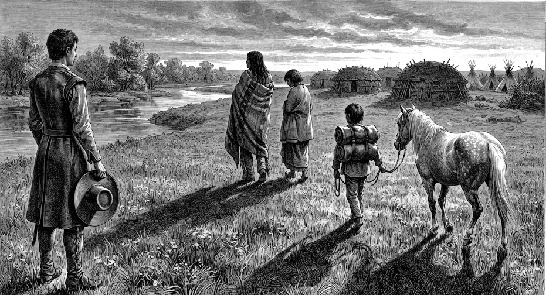
Ayer por la tarde volvió la segunda partida, la de las cuarenta leguas, con más picurís, flacos, quemados del sol, con los pies envueltos en trapos. Ya están todos. Unos sesenta. Mañana al amanecer salimos para Nuevo México.
Hoy ha sido día de preparativos. Las mujeres picurís han envuelto sus cosas en mantas: unas ollas, unas piedras de moler que no quieren dejar, semillas de maíz de sus campos de aquí, en bolsitas de piel, para sembrarlas allí. Los apaches les han dado carne seca para el camino. No sé si por bondad o para que se vayan antes. Ha habido despedidas largas en las puertas de las chozas. Algunas picurís se quedan: las que tienen hijos de apache, las que tienen marido apache. La hija del viejo se queda. El viejo se va. Ninguno de los dos lloraba ya.
Los doce caballos del rescate se entregaron ayer. El sargento mayor cumplió su palabra: no eran de los más flojos.
Tomás ha pasado el día con Ciervo que Salta, despidiéndose sin decir que se despedían, como hacen los niños. Han ido al río, han cazado perritos, han corrido con los caballos. Al anochecer Tomás ha vuelto y se ha sentado a mi lado junto al fuego, callado, con la cruz en la mano.
—Le he dicho que volveré —me ha dicho—. Cuando sea mayor. Con mi caballo.
—¿Y qué te ha dicho él?
—Que me esperará. Y que entonces le dejaré montar a Paloma.
Se ha reído un poco. Luego se ha quedado mirando el fuego.
—Mañana por la mañana, antes de salir, va a venir a verla. Una vez más. Le he dicho que sí.
El Cuartelejo, 17 de agosto
Dios mío.
No sé cómo escribir esto. Me tiembla la mano. Lo escribo porque si no lo escribo me voy a volver loco.
Esta mañana, antes del alba, estábamos todos levantando el campamento. Había mucho ruido, mucha prisa: los soldados ensillando, las mulas protestando, los picurís cargando sus fardos, los perros de los apaches ladrando a todo. Yo estaba atando la carga de la mula. Tomás había ido al río con los dos cubos de cuero, a por agua para el camino. Paloma estaba atada a una estaca, sola, al borde de la caballada, nerviosa por el alboroto, pateando el suelo.
Ciervo que Salta ha venido a despedirse de ella. Tomás no estaba. Y él ha ido a buscarla igual.
Nadie lo ha visto acercarse. Ha llegado por detrás, en la oscuridad todavía gris, entre los caballos, con la mano tendida y algo en la otra mano, un puñado de maíz, creo, para dárselo. Por detrás. Tomás se lo había dicho cien veces. Nunca por detrás.
He oído el golpe. Un golpe seco, sordo, como cuando se tira un saco de grano al suelo. Y luego nada. Ni un grito.
Cuando he llegado, estaba en el suelo, boca arriba, con los ojos abiertos. Tenía la sangre saliéndole del pelo, por encima de la oreja. Respiraba. Paloma tiraba de la cuerda, con los ojos en blanco, temblando entera.
Ha llegado Tomás corriendo desde el río, con los cubos todavía en las manos. Los ha soltado. No ha dicho nada. Se ha arrodillado junto a Ciervo que Salta y le ha cogido la mano. Y luego han empezado los gritos de las mujeres.
El Cuartelejo, 17 de agosto, por la noche
Ha muerto al ponerse el sol.
Ha estado todo el día en la choza de su padre, sin despertar. Han venido los hombres de medicina de los apaches, con sus sonajas y sus plumas y sus polvos de colores, y han cantado sobre él toda la tarde. El fraile ha pedido entrar para bautizarlo, por si acaso, y no lo han dejado. Hemos oído los cantos desde nuestro campamento. Nadie ha cargado nada. Nadie ha salido. El sargento mayor ha mandado deshacer los fardos y esperar.
Cuando ha muerto, los cantos se han parado de golpe. Y luego ha empezado un llanto que no he oído nunca en mi vida, un aullido de muchas mujeres a la vez, alto, que subía y bajaba y no acababa. La madre se ha cortado el pelo con un cuchillo, allí mismo, a la puerta de la choza, a puñados, y se ha hecho cortes en los brazos. Otras mujeres también.
Los apaches tienen mucho miedo a los muertos. Eso me lo ha explicado Naranjo, en voz baja, mientras mirábamos desde lejos. No los quieren cerca. Lo han enterrado esta misma noche, deprisa, en un sitio de las barrancas que solo saben ellos, con sus cosas: su arco pequeño, su ropa, su manta. Su caballito bayo lo han matado sobre la tumba, para que lo lleve. La choza donde ha muerto la van a quemar, con todo lo que hay dentro. Y desde hoy nadie va a decir su nombre. Nunca más. Si lo dicen, dice Naranjo, el muerto lo oye y vuelve.
Así que ya no lo escribiré más tampoco. El niño. El niño alto que saltaba como los ciervos.
Tomás no ha llorado. Está sentado junto a Paloma desde esta mañana, sin moverse, sin comer, sin hablar. No ha querido que nadie se acerque a la yegua. Cuando un soldado ha dicho en voz alta que a ese animal había que pegarle un tiro, Tomás se ha levantado y se ha puesto delante de ella, con los brazos abiertos. Tiene ocho años y pesa lo que una oveja. El soldado se ha callado.
El Cuartelejo, 18 de agosto
Hoy ha venido Mano Quemada.
Ha venido al campamento a media mañana, solo, a pie, sin armas, con el pelo cortado a cercén y la cara pintada de negro. Se ha sentado en el suelo, delante de la tienda del sargento mayor, y ha esperado. No ha dicho nada hasta que han llegado Naranjo y el sargento mayor y los oficiales. Yo me he quedado detrás, con los demás soldados. Tomás, junto a Paloma, a veinte pasos.
Mano Quemada ha hablado mucho rato, despacio, sin levantar la voz. Naranjo traducía.
Ha dicho que su hijo estaba muerto. Que lo había matado un caballo de los españoles. Que no culpaba al caballo, porque un caballo no sabe lo que hace. Que no culpaba a los españoles, porque los españoles habían venido como amigos y habían levantado la cruz junto a la suya. Pero que su tienda estaba vacía. Que entre su gente, cuando alguien quita una vida, aunque no quiera, tiene que llenar el hueco que deja. Que si no se llena, el hueco se queda abierto, y por el hueco entran la guerra y la venganza, y los hijos de los hijos se siguen matando por ello cuando ya nadie se acuerda del primero.
Que él no quería guerra con los españoles. Que quería que le llenaran el hueco.
Y luego ha dicho lo que quería. Quería la yegua. Y quería al niño que sabe hablar con ella.
Del mismo día, por la tarde
Ha habido junta en la tienda del sargento mayor. Estaban los oficiales, el fraile, Naranjo, el francés. A mí me han llamado porque la yegua es mía. No me han preguntado nada.
El sargento mayor lo ha dicho claro. Tenemos sesenta picurís que llevar a casa, con mujeres y niños, por una llanura sin agua de muchos días. Tenemos un rey que acaba de tomar posesión de esta tierra y que quiere a estos apaches de amigos, contra los franceses y contra las naciones del norte. Tenemos a un padre con un hijo muerto que pide una compensación según su costumbre, y que si no la tiene, nos tendrá por enemigos, a nosotros y a todos los españoles que vengan detrás. Y tenemos a un mozo de servicio de ocho años, mestizo, sin padre, sin madre, sin apellido, que no es de nadie.
—De nadie, no —he dicho yo—. Es mío.
Me han mirado todos. El sargento mayor me ha mirado más rato que nadie.
—¿Tuyo? —ha dicho—. ¿Tienes papel de ello? ¿Lo has prohijado ante el cura? ¿Le has dado tu apellido?
No he contestado. No tenía nada de eso.
He ofrecido mis dos caballos. He ofrecido mi sueldo de un año. He ofrecido quedarme yo, que me dejaran a mí entre los apaches en lugar del niño. El francés se ha reído, no con maldad, y ha dicho que los apaches no querían un soldado de veinte años que no sabe montar sin silla, sino un niño que sabe hablar con los caballos.
El fraile se ha opuesto. Ha dicho que el niño está bautizado, que es cristiano, y que entregar un alma cristiana a los gentiles es pecado mortal. Ha hablado con mucho fuego. El sargento mayor lo ha dejado terminar.
—Padre —le ha dicho luego, sin alzar la voz—. Aquí, hace diez años, los de Picurís vinieron huyendo de nosotros. Y nosotros hemos venido a rescatarlos de los apaches. Y para rescatarlos hemos pagado doce caballos por cinco almas cristianas. ¿Eso no era pecado? Aquí, padre, las almas se pagan en caballos. Lo sabe usted tan bien como yo.
El fraile no ha dicho nada más.
El sargento mayor se ha vuelto hacia Naranjo.
—Pregúntale al niño.
Del mismo día, por la noche
Se lo han preguntado. Yo no he estado delante. No he podido.
Naranjo me lo ha contado después. Ha ido junto a Paloma, se ha agachado delante de Tomás y le ha explicado todo, en la lengua de su madre. Que el padre del niño muerto quiere a la yegua. Que la yegua se va a quedar con los apaches, pase lo que pase, porque eso ya está decidido. Y que el padre la quiere también a él, para que la cuide y para que ocupe en su tienda el sitio de su hijo.
Tomás ha estado callado mucho rato. Luego ha preguntado:
—¿Paloma se queda?
—Se queda.
—Entonces yo también.
Eso es todo. No ha preguntado por mí. Naranjo dice que no ha llorado. Dice que ha mirado hacia donde estaba yo, de lejos, y ha vuelto a mirar a la yegua.
No sé qué escribir. No sé si me ha dolido más que lo digan ellos o que lo diga él. Sé que tiene razón. Sé que la yegua es lo único que ha sido suyo de verdad en su vida, más que yo, y que no la va a dejar sola entre extraños, después de lo que ha pasado. Sé también que aunque hubiera dicho que no, el sargento mayor lo habría dado igual, y que preguntarle ha sido una cortesía, o una manera de lavarse las manos.
Y sé que la yegua es mía. Que si no la hubiera comprado, si no se la hubiera negado a Mano Quemada hace ocho días, si se la hubiera vendido por dos caballos como haría cualquiera, el niño muerto estaría vivo, montándola, y el mío estaría durmiendo aquí a mi lado.
Esta noche Tomás duerme por última vez en nuestro campamento. Ha extendido su manta entre las patas de Paloma, como siempre. Le he llevado mi capote. Le he dicho que hace frío. No ha dicho nada. Me he quedado sentado a su lado hasta que se ha dormido, y luego un rato más.
El Cuartelejo, 19 de agosto
Hemos salido al amanecer.
Antes de salir, Mano Quemada ha venido a buscarlo. Ha venido con su mujer, la madre del niño muerto, con el pelo cortado y los brazos llenos de cortes secos. Ella no ha mirado a nadie. Solo a Tomás.
Tomás estaba preparado. Tenía su manta enrollada a la espalda, su cuchillo pequeño en la cintura, la cruz al cuello y la cuerda de Paloma en la mano. Nada más. No tenía nada más en el mundo.
Me he arrodillado delante de él para estar a su altura. Le he dado mi cuchillo grande, el bueno, el que me trajo de Toledo un tío mío. Le he dicho que se lo llevara. Le he dicho que lo trataran bien, que si no, que se escapara y buscara el camino de Taos, que se acordara de los montones de hierba. Le he dicho que volvería a buscarlo. No sé si es verdad. Se lo he dicho.
Él me ha mirado con esos ojos negros que lo miran todo. Me ha dado la mano, como un hombre. Y luego, de pronto, me ha abrazado por el cuello, muy fuerte, muy poco tiempo. Me ha dicho algo al oído en la lengua de su madre. No sé qué. No se lo he preguntado a Naranjo. No quiero saberlo, para que siga siendo mío.
Luego se ha soltado, ha cogido la cuerda de Paloma y se ha ido detrás de Mano Quemada y de su mujer, hacia la ranchería, sin volverse.
Hemos salido de El Cuartelejo con sesenta picurís, cinco rescatados, doce caballos menos, una yegua menos y un niño menos.
En la loma de la cruz me he vuelto a mirar. Había un niño pequeño de pie, al lado de una yegua gris, muy lejos, en la puerta de una choza. No sé si era él. Me he quitado el sombrero. No sé si me ha visto.
En la llanura, de vuelta, 21 de agosto
Esta noche Naranjo se ha sentado a mi fuego. No lo había hecho nunca.
Ha fumado un rato sin hablar, mirando a los picurís, que han hecho sus fuegos un poco apartados de los nuestros, como siempre. Las mujeres estaban moliendo un poco de maíz en las piedras que no han querido dejar, para hacer tortillas, y cantaban bajito. Los niños dormían amontonados entre las mantas, como cachorros. Un viejo contaba algo a los muchachos, y los muchachos se reían.
—Mi abuela —ha dicho Naranjo de pronto— era una india de los pueblos. A su madre la vendieron unos apaches en una feria, cuando era niña. La compró un español. Mi abuelo era un negro que había traído otro español desde México, cargado de cadenas. Se conocieron sirviendo en la misma casa.
Ha soltado el humo sin prisa.
—Así nací yo. De dos que eran de otros. Aquí casi todos nacemos así, si se mira bien hacia atrás. Unos más cerca y otros más lejos. Los de Santa Fe no lo quieren mirar.
No he sabido qué decirle. Él no esperaba que le dijera nada.
—El niño estará bien —ha dicho luego—. Los apaches tratan bien a los niños que toman para llenar un hueco. Los tratan como a sus hijos. Mejor que muchos españoles a sus criados. Peor será si algún día vienen otros más fuertes que los apaches, que vendrán. Entonces ya no será de los apaches. Será de quien gane.
Se ha levantado. Antes de irse me ha puesto la mano en el hombro, como hizo con el viejo de Picurís el primer día.
—Tú no lo vendiste, soldado. Que eso te sirva de algo.
No me sirve de nada. Pero se lo agradezco.
En la llanura, de vuelta, 24 de agosto
No he escrito estos días. No he tenido ganas.
La vuelta ha sido más fácil que la ida. Ahora conocemos los aguajes, y los picurís conocen el camino, y Naranjo va derecho de un montón de hierba a otro como si llevara un hilo. Los picurís caminan despacio, con los niños a cuestas, cantando a ratos. Están contentos. Van a casa.
Yo no estoy contento. Cada noche me tumbo junto al fuego y busco la manta enrollada a mi lado, y no está.
El francés me ha hecho compañía algunas noches. No habla mucho. Ayer me dijo una cosa que no se me va de la cabeza. Me dijo que él tenía la edad de Tomás, más o menos, cuando su padre lo puso en un barco con aquel señor francés para que hiciera fortuna en las Indias, y que no volvió a ver a su padre nunca. Que no le guardaba rencor. Que su padre hizo lo que creyó mejor. Que los niños sobreviven a casi todo, y que a veces lo que no les mata los hace más fuertes que a nadie. Y que no me hiciera ilusiones: que el niño ya no era mío, ni lo había sido nunca. Que era de la llanura.
Picurís, 31 de agosto
Ayer llegamos a Taos, y hoy a Picurís, con los picurís.
En Taos el fraile del pueblo, fray Francisco Jiménez, ha recibido a los que se quedan allí y ha firmado un papel diciendo que los había recibido. Aquí, en Picurís, el alcalde mayor ha firmado otro papel. Todo se firma. Todo queda escrito.
La gente del pueblo ha salido a recibirlos a los campos. No sé describirlo. Gritos, llantos, risas, mujeres que corrían, viejos que se arrodillaban en el polvo. Madres que no habían visto a sus hijos en diez años y no los reconocían, porque se habían ido niños y volvían hombres. Don Lorenzo ha besado la tierra a la entrada del pueblo. Ha entrado en la iglesia y no ha salido en toda la tarde.
El viejo que buscaba a su hija ha vuelto solo. Lo he visto sentado en su tejado esta tarde, mirando hacia el este.
Yo también.
Santa Fe, 2 de septiembre
Hemos llegado hoy a la villa, a media tarde. Ha habido campanas y gente en la plaza, y el gobernador ha salido al portal y ha abrazado al sargento mayor delante de todos. Se ha hecho una misa de acción de gracias. Se ha dicho que la expedición ha sido un éxito. Y lo ha sido: hemos traído a los picurís, hemos tomado posesión de una tierra nueva para el rey, nos hemos hecho amigos de los apaches de El Cuartelejo, y hemos sabido que los franceses andan por las llanuras. No ha muerto ni un solo soldado.
Esta noche he ido a ver al escribano del gobernador, que es amigo mío, y le he pedido que me dejara ver el diario del sargento mayor, que ha entregado esta tarde. Me lo ha dejado ver un momento, a escondidas, a la luz de una vela.
Están los ríos, los aguajes, los nombres de los sitios. Está la toma de posesión, la cruz, los picurís, los doce caballos, el fusil francés. Está todo.
No está el niño.
He buscado en las páginas del 17, del 18, del 19 de agosto. No hay nada. Ni la yegua, ni el niño apache, ni Mano Quemada, ni la junta. Nada. Como si no hubiera pasado. Como si Tomás no hubiera existido nunca.
Así que lo escribo yo. Aquí. Para que quede.
En el viaje a El Cuartelejo de 1706 se quedó entre los apaches un niño de ocho años llamado Tomás, mestizo, hijo de una india de San Juan muerta de viruelas y de padre desconocido, mozo de caballos del soldado Diego Ordóñez. Se quedó como compensación por la muerte de un niño apache, junto con una yegua torda llamada Paloma. Se quedó porque la yegua se quedaba. Llevaba al cuello una cruz de latón que había sido de mi madre.
Si alguien lee esto, que sepa que existió.
Esta noche he pasado por Analco, por la puerta de la casa donde lo encontré en el invierno. No había nadie sentado en el barro.
En el tipi nadie hablaba. Hasta el fuego parecía haberse quedado quieto.
—Volvieron todos —dijo el anciano por fin, muy bajo—. Todos menos yo.
Nube Corta tenía la cabeza agachada. Lobo Que Camina miraba al suelo, con las manos quietas sobre las rodillas. Fue Oso Pequeño el que se atrevió a preguntar.
—¿Te trataron bien? Los apaches.
El anciano tardó en contestar.
—La primera noche —dijo—, la madre del niño muerto no me dejó entrar en la tienda. Dormí fuera, con Paloma, como siempre. Hacía frío. Al amanecer salió, con los brazos todavía en carne viva, y me miró mucho rato desde la puerta. Luego volvió a entrar, y salió con una manta, y me la echó por encima sin decir nada.
Se pasó la mano por la cara.
—Era la manta de su hijo. Los apaches queman todo lo de los muertos. Aquella no la quemó.
Fuera, en la oscuridad, el caballo tordo resopló, y Oso Pequeño, sin saber por qué, se levantó y salió a mirarlo.
El hijo del muerto
El Cuartelejo y las llanuras del norte · de 1706 a 1710
Lo cuenta el anciano
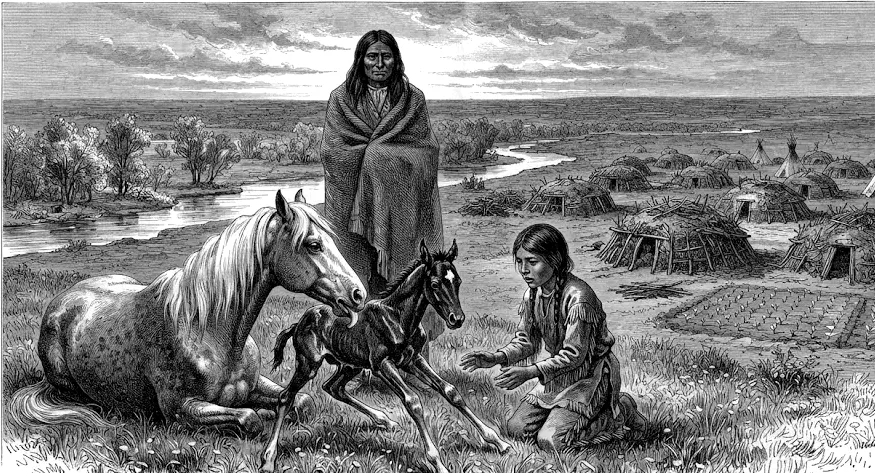
Cuando Oso Pequeño volvió a entrar en el tipi, con las manos frías de acariciar al caballo tordo, el anciano había cambiado de postura. Estaba recostado contra un respaldo de varas trenzadas, con la manta subida hasta el pecho, y miraba el agujero del humo, por donde se veían ahora muchas estrellas.
—Hasta aquí ha hablado Diego —dijo—. Desde aquí hablo yo. Lo que viene no lo escribió nadie. Lo tengo aquí —se tocó la frente con dos dedos— y se va a ir conmigo si no os lo doy. Así que escuchad bien, que no lo voy a contar dos veces.
Nube Corta echó boñigas al fuego. Lobo Que Camina, que hasta entonces había escuchado con los brazos cruzados, los descruzó.
Los primeros días no me hablaba nadie.
No porque no quisieran. Porque no podían. Yo no sabía una palabra de su lengua, y ellos no sabían una de la mía, ni de la de mi madre. Me hablaban sin prisa, alto, como se habla a los perros, y me señalaban las cosas. Agua. Leña. Come. Duerme. Así aprendí las primeras palabras: con las manos de los demás.
La primera de todas fue la que usaban para sí mismos. Ndé. La gente. Así se llamaban. Apache era una palabra de los españoles, que la habían tomado de los indios de Zuñi, en cuya lengua, según me dijeron muchos años después, quería decir navajos, o enemigos, según quién lo contara. Ellos no la usaban nunca. Ellos eran Ndé. Y yo, durante mucho tiempo, no fui Ndé. Fui el niño de la yegua.
La mujer de Mano Quemada no me miraba. Llevaba el pelo cortado a trasquilones, de cualquier manera, y los brazos con las costras de los cortes que se había hecho. Iba y venía por el campamento haciendo su trabajo sin hablar con nadie, ni con las otras mujeres. Por las noches la oía llorar dentro de la tienda, un llanto bajo, sin lágrimas casi, como el que hace un animal herido que no quiere que lo encuentren.
Yo dormía fuera, con Paloma. Ya os lo he dicho. La segunda noche ella me echó la manta del hijo muerto por encima. La tercera noche me trajo un cuenco de comida y lo dejó en el suelo, a mi lado, sin mirarme. La cuarta, cuando empezó a llover, salió a la puerta y se quedó allí, de pie, mirándome, hasta que me levanté y entré.
Dentro, a un lado, había una piel de cíbolo extendida en el suelo. Era el sitio del niño. Me señaló la piel. Me tumbé en ella. Olía a él.
Aquella noche no lloró.
Se llamaba Hierba Dulce. Tardé mucho en saberlo, porque entre los apaches no se dice el nombre de una persona delante de ella, y menos el de una mujer, y menos todavía a un niño extraño. Yo la llamaba como la llamaban los niños del campamento: madre. Al principio lo decía porque no sabía otra palabra. Luego lo dije porque lo era.
Mano Quemada era distinto. Él sí me hablaba, desde el primer día, aunque yo no le entendiera. Me hablaba mientras trabajaba, mientras comía, mientras arreglaba sus flechas, como si yo fuera un hombre y entendiera. Más tarde comprendí que no me hablaba a mí. Le hablaba a su hijo. Yo solo estaba sentado en el mismo sitio.
Una mañana, al cabo de unas semanas, me llevó al río. Hacía frío ya, era el final del verano, el agua bajaba helada de las tormentas del norte. Se quitó la manta, se metió en el agua hasta la cintura y me hizo señas para que entrara. Entré. Me sumergió la cabeza con la mano, una vez, dos, tres, cuatro, y me sacó. Yo boqueaba, temblando, con los dientes castañeteando. Él se reía.
Al día siguiente me volvió a llevar. Y al otro. Y así todos los días, cada amanecer, hiciera el tiempo que hiciera, hasta que se heló el río y entonces me hacía revolcarme en la nieve. Así se hacía con los niños apaches, para que se volvieran duros. Los demás niños del campamento también lo hacían, cada uno con su padre o con un tío. Yo era el más flaco y el que más temblaba. A mitad del invierno ya no temblaba.
Vinieron las carreras. Mano Quemada me hacía correr colina arriba con un trago de agua en la boca, sin tragarlo, hasta lo alto y vuelta abajo. Al llegar tenía que escupirlo delante de él, para que viera que no lo había tragado. La primera vez me lo tragué a mitad de la cuesta, de puro ahogo, y me hizo subir otra vez. Y otra. Hasta que lo escupí.
—Así aprende el cuerpo a respirar por la nariz —me dijo, cuando ya le entendía—. Así un hombre puede correr medio día sin parar, detrás de un caballo o delante de un enemigo.
—¿Y la yegua? —preguntó Nube Corta—. ¿Qué hicieron con la yegua?
El anciano sonrió un poco.
—Esa era la pregunta que yo me hacía todas las noches. Y todas las mañanas iba a verla, por si se la habían llevado o la habían matado. Pero no. Estaba allí. Mano Quemada no la montaba. Nadie la montaba. Estaba atada aparte, lejos de la tienda, comiendo hierba, y nadie se le acercaba.
Pasaron muchos días hasta que lo entendí. Paloma era la que había matado a su hijo. Mano Quemada la había pedido en pago, porque así era lo justo, pero no podía mirarla. Tampoco podía matarla, porque había sido el pago. Así que la dejaba allí, apartada, como se deja una cosa que no se sabe dónde poner.
Yo era el único que se le acercaba. La cepillaba con un puñado de hierba seca, le sacaba las espinas de las crines, le hablaba. Y Paloma, que antes mordía a todo el mundo menos a mí, ahora no mordía a nadie. Se había vuelto mansa, triste, con la cabeza siempre baja. Como si lo supiera.
Un día, al final de aquel primer otoño, Mano Quemada vino a verme mientras la cepillaba. Se quedó mirando un rato largo. Luego dijo algo que entonces no entendí entero, pero que se me quedó grabado, palabra por palabra, como se quedan las cosas que uno no entiende. Mucho después supe lo que había dicho.
Había dicho: «El caballo no tiene la culpa. Los caballos no saben lo que es la muerte. Por eso son sagrados».
Aquel otoño, cuando acabó la cosecha y el maíz estuvo seco y guardado en hoyos tapados con piedras y tierra, levantamos el campamento y nos fuimos a cazar el cíbolo al norte.
Era la primera vez que yo veía moverse a un pueblo entero. Las mujeres desmontaron las tiendas en lo que se tarda en hervir agua. Las pieles se doblaban, los palos se ataban de dos en dos, y se hacían con ellos los arrastres: dos palos largos cruzados sobre el lomo del caballo o del perro, con los extremos de atrás arrastrando por el suelo, y entre ellos un entramado de correas donde se cargaba todo. Encima de la carga iban los niños pequeños, atados, y los viejos que no podían andar, y los cachorros.
Los perros llevaban arrastres pequeños. Eran muchos, más perros que personas, perros grandes, lobunos, que se peleaban entre ellos y aullaban cuando les ponían los palos. Los caballos llevaban los arrastres grandes. Hierba Dulce cargó el suyo en uno de los dos caballos que le quedaban a Mano Quemada, porque el tercero, el bayo, había muerto sobre la tumba. Y entonces, delante de todos, se volvió hacia mí y me señaló a Paloma.
No entendí. Me lo tuvo que decir dos veces, con las manos. Quería que cargara el arrastre de la tienda en Paloma.
Lo hice. La yegua se dejó poner los palos sin protestar. Cuando nos pusimos en marcha, Hierba Dulce iba a su lado, a pie, con la mano apoyada en el palo, sin mirarla. Pero iba a su lado.
Fue la primera vez que alguien de aquella familia tocó a Paloma desde la muerte del niño.
El invierno es largo en las llanuras del norte. Ya lo sabéis vosotros. Pero vosotros sois comanches y habéis nacido en él. Yo había nacido en el valle del río Grande, donde la nieve se va en dos días. Aquel primer invierno creí que me moría.
Acampamos en un cañón protegido del viento, junto a un río con álamos, donde había leña y donde los cíbolos bajaban a guarecerse. Las tiendas se pusieron muy juntas, con la puerta hacia donde sale el sol, como se ponen siempre. Dentro de la tienda, el fuego en medio, las camas de pieles alrededor. El sitio de Mano Quemada al fondo, frente a la puerta. El de Hierba Dulce a la izquierda, junto a sus cosas de cocinar. El mío a la derecha, junto a la puerta, donde estaba el del hijo muerto.
Hacía tanto frío que el aliento se helaba en las pieles del techo y caía de noche en escarcha sobre las caras. Se dormía vestido, con los mocasines puestos, todos apretados. Se comía carne seca, grasa, pasta de carne, y el maíz y las calabazas secas que habíamos traído del Cuartelejo. Cuando nevaba mucho, no se salía en días. Se arreglaban las cosas, se cosía, se hacían flechas. Y se contaban historias.
Las historias del Coyote solo se cuentan en invierno. Eso me lo enseñaron entonces y lo he cumplido toda mi vida. Si se cuentan en verano, las serpientes lo oyen y vienen a morderte. En invierno las serpientes duermen debajo de la tierra y no oyen nada.
Mano Quemada las contaba de noche, tumbado, con los ojos cerrados, cambiando la voz para cada animal. Cómo el Coyote robó el fuego. Cómo el Coyote quiso volar con los gansos y se cayó. Cómo el Coyote engañó al Oso y después el Oso le engañó a él. Yo ya entendía casi todo. Me reía tanto que Hierba Dulce me tenía que dar con la mano en la boca para que no despertara a los de las otras tiendas. Y ella también se reía, bajito, tapándose la cara.
Fue la primera vez que la oí reír.
Había otras historias, que no eran de risa. La de la Mujer Concha Blanca, que es la madre de todos, y la de sus dos hijos, el Matador de Enemigos y el Hijo del Agua, que limpiaron el mundo de monstruos para que pudiera vivir la gente. Esas se contaban serias, en voz baja. Por eso, me explicó Mano Quemada, su gente se llamaba también Haisndayin, los que vinieron de abajo: porque sus primeros abuelos habían salido del mundo de debajo de la tierra, y ellos eran sus hijos. Y había cosas de las que no se hablaba nunca. De los muertos. De los búhos, que son los muertos que vuelven por la noche. Cuando se oía un búho cerca del campamento, Hierba Dulce se tapaba los oídos y me los tapaba a mí.
Yo rezaba también, todas las noches, a escondidas, con la cruz de Diego apretada en la mano debajo de la manta. El Padrenuestro y la mitad del Avemaría, que era lo que sabía. Cada vez me acordaba de menos palabras. Al llegar la primavera ya solo me acordaba del principio. Pero seguía apretando la cruz.
Aquella primavera, cuando volvimos al Cuartelejo a sembrar, Paloma parió.
Nadie sabía que estaba preñada. Ni yo. Se había cruzado en el invierno con uno de los caballos de la manada, un garañón negro, de los mejores, que era de un hermano de Mano Quemada. Una mañana fui a verla y estaba tumbada en la hierba, de lado, sudando, y a su lado, mojado, temblando, había un potro.
Era gris. Gris como ella, más oscuro, con una estrella blanca en la frente.
Me quedé mirándolo sin atreverme a tocarlo. Paloma levantó la cabeza, me miró, y luego empezó a lamerlo, despacio, por todas partes, mientras el potro intentaba ponerse de pie y se caía, y se volvía a levantar, y se volvía a caer.
No oí llegar a Mano Quemada. Cuando me di cuenta, estaba a mi lado, de pie, mirando al potro. Estuvo mucho tiempo callado. Se agachó, puso la mano en el lomo mojado del potro, y le dijo algo en voz baja, al oído, que no oí.
Después se levantó y me miró.
—Es tuyo —me dijo.
Era la primera vez que yo tenía algo que fuera mío del todo. Un caballo. Tenía nueve años.
Aquel verano aprendí también lo que era sembrar en la llanura.
En cuanto se fue la última helada, las mujeres salieron a los campos junto al río con sus palos de cavar, unos palos duros, de punta quemada para que no se rompieran. Hacían un agujero, echaban dentro cuatro granos de maíz, ni uno más ni uno menos, y lo tapaban con el pie. Entre las matas de maíz ponían frijoles, que trepan por las cañas, y alrededor calabazas, que tapan la tierra con sus hojas grandes y no dejan crecer la mala hierba. Las tres juntas, como hermanas, decía Hierba Dulce, que se ayudan unas a otras.
Los hombres abrían y limpiaban las acequias. Eso lo habían aprendido de los de Picurís y de Taos, que lo sabían hacer desde siempre, y ahora lo hacían todos. Yo cavaba con ellos, con un hueso de omóplato de cíbolo atado a un palo, hasta que me sangraban las manos.
Y luego, cuando el maíz empezó a crecer, los niños nos pasábamos el día en los campos espantando a los pájaros y a los perritos de la pradera, subidos en unas plataformas de palos, con hondas y gritos. Era el trabajo más aburrido del mundo y el que más me gustaba, porque desde allí arriba se veía toda la llanura, y a Paloma pastando con su potro, y a veces, a lo lejos, a los cíbolos.
Allí arriba conocí bien a la hija del viejo de Picurís. La que se quedó. Ya os he hablado de ella. Tenía un campo junto al nuestro y venía a trabajarlo con sus dos niños. El primer día que me oyó gritar a los pájaros en la lengua de mi madre, se quedó quieta, con el palo en la mano, y me miró. Los de Picurís hablan otra lengua, pero ella había servido de niña en San Juan, antes de la rebelión, y sabía la de mi madre.
Desde entonces me hablaba en esa lengua cuando estábamos solos. De Santa Fe, de las iglesias, de las fiestas de los santos con música y procesiones. De su padre, al que no había querido seguir. Me preguntaba por mi madre. Yo le contaba lo poco que sabía. Una vez le pregunté si estaba arrepentida de haberse quedado.
Se lo pensó mucho, mirando a sus hijos, que jugaban en la acequia.
—Cada día un poco —me dijo—. Y cada día un poco no.
Tardé muchos años en entender que era la respuesta más verdadera que nadie me ha dado nunca.
Al final del verano, cuando el maíz estuvo verde y tierno, se hizo la fiesta del maíz nuevo. Se asaban las mazorcas en las brasas, con la hoja, y se comían allí mismo, quemándose los dedos, con el jugo blanco chorreando. Era la primera comida dulce del año. Se bailaba toda la noche. Los viejos daban gracias al Sol y a la tierra, y echaban polen de maíz al aire, a los cuatro vientos.
Ese mismo verano vi también la fiesta de una muchacha. Era la que salió de la tienda al final, la de la flauta, ¿os acordáis? Antes de casarse con el primo de mi hermano muerto, tuvo que pasar su fiesta de mujer, porque le había llegado la primera sangre. Duró cuatro días y cuatro noches. Le hicieron un vestido nuevo de piel, amarillo, con flecos, pintado con el sol y la luna, y le pintaron la cara. Corría cada mañana hacia donde sale el sol, y volvía, y cada día corría un poco más lejos, para que su vida fuera larga. Las viejas la aconsejaban en voz baja, durante horas. Los hombres de medicina cantaban. Todos los del campamento comían a cuenta de su familia, que se arruinó para darles de comer, y estaba orgullosa de arruinarse.
La última mañana, la muchacha salió de la tienda y bendijo a los niños tocándolos con las manos, uno a uno, porque esos cuatro días tenía el poder de la Mujer Concha Blanca. Cuando me tocó a mí, se paró un momento, me miró, y me tocó la cabeza más rato que a los demás. Hierba Dulce, que estaba detrás de mí, me apretó el hombro.
Yo no sabía que aquello era la primera vez que el campamento entero me contaba como uno de sus niños.
Ese verano Mano Quemada empezó a enseñarme a montar de verdad.
Hasta entonces yo había montado como montan los españoles, que es como se sienta uno en una silla: derecho, rígido, con las piernas colgando y las manos en las riendas. Mano Quemada me quitó la silla, me quitó las riendas y me puso en el lomo pelado de uno de sus caballos, con una cuerda atada a la mandíbula del animal y nada más.
—Las manos no son para el caballo —me dijo—. Las manos son para el arco. El caballo se lleva con las piernas.
Me caí cien veces. Doscientas. Me rompí un dedo, me abrí la ceja, me quedé sin aire en el pecho tantas veces que perdí la cuenta. Hierba Dulce me curaba por la noche con grasa y con hierbas machacadas, sin decir nada, con la boca apretada. Una vez la oí discutir con Mano Quemada en voz baja, fuera de la tienda. Le decía que me iba a matar. Él le dijo que no. Que no iba a pasar lo mismo dos veces.
Al final del verano ya sabía. Sabía llevar el caballo con las rodillas, a galope, por terreno roto. Sabía echarme a un lado, colgado del cuello, con un pie enganchado en una lazada de crin, y desaparecer detrás del caballo para que un enemigo solo viera un caballo sin jinete. Sabía saltar al lomo sin tocar el suelo con las manos. Sabía recoger del suelo una piel tirada sin parar el galope.
Lo que mejor sabía, eso no me lo enseñó él. Eso lo traía yo. Sabía hablar con los caballos. Me acercaba a un potro salvaje que no había visto nunca a un hombre, y a los pocos días comía de mi mano. Los demás niños me miraban con envidia. Los hombres, con algo más.
Un día, a la vuelta de una cacería, oí que un amigo de Mano Quemada le decía, señalándome con la barbilla:
—Ese niño no es tu hijo. Tu hijo no sabía hacer eso.
Mano Quemada no se volvió. Siguió andando.
—No —le contestó—. Es otro hijo.
Aquel otoño cacé mi primer cíbolo. Era una cría de un año, que se había quedado atrás, y la maté con tres flechas, mal tiradas, después de perseguirla media mañana. Cuando cayó, salté del caballo y me quedé mirándola, sin saber qué hacer. Mano Quemada llegó al trote, desmontó, y me puso en la mano el cuchillo de Diego, el de Toledo, que yo llevaba siempre al cinto.
Lo abrí yo solo, como había visto hacer a las mujeres, torpe, manchándome hasta los codos. Saqué el hígado. Mano Quemada me miró. Corté un trozo, lo mojé en la hiel, y me lo comí, caliente, delante de él, como me había comido el primero en la llanura, el día que Diego no se atrevió.
Luego, sin pensarlo, hice una cosa que había visto hacer a Diego cada vez que comía: me santigüé.
Mano Quemada lo vio. No dijo nada. Pero aquella noche, junto al fuego, me pidió el cuchillo, lo estuvo mirando mucho rato a la luz de las llamas, la hoja fina, las letras grabadas que ninguno de los dos sabía leer, y me lo devolvió.
—Ese hombre te quería —me dijo.
Era la primera vez que alguien del campamento hablaba de Diego. Fue también la última, en muchos años.
El anciano se calló. Había hablado mucho rato, y la voz se le había vuelto un hilo. Bebió agua sin prisa, a sorbos, con la mano temblando.
—Al tercer invierno —dijo por fin— me dieron un nombre. Los apaches no se lo dan a los niños al nacer, sino cuando se lo ganan. El mío me lo dio Hierba Dulce, una noche, junto al fuego, sin que nadie se lo pidiera. Me llamó El que Habla con Caballos. Desde entonces ya no fui Tomás para nadie.
—Menos para ti —dijo Oso Pequeño.
El anciano lo miró.
—Menos para mí —asintió—. Cada noche, debajo de la manta, con la cruz en la mano. Tomás. Para no olvidarlo.
Fuera, en la oscuridad, el viento traía un olor a hierba seca y a nieve lejana. El caballo tordo había dejado de resoplar. Lobo Que Camina se levantó sin decir nada, salió del tipi, y al rato volvió con un brazado de boñigas secas y un puñado de hierba, que dejó junto a la puerta.
—Para el caballo —dijo, sin mirar a nadie.
El anciano no dijo nada. Pero Oso Pequeño vio que sonreía.
El perro sagrado
Campamento de invierno en las llanuras del norte · de 1710 a 1715
Lo cuenta el anciano
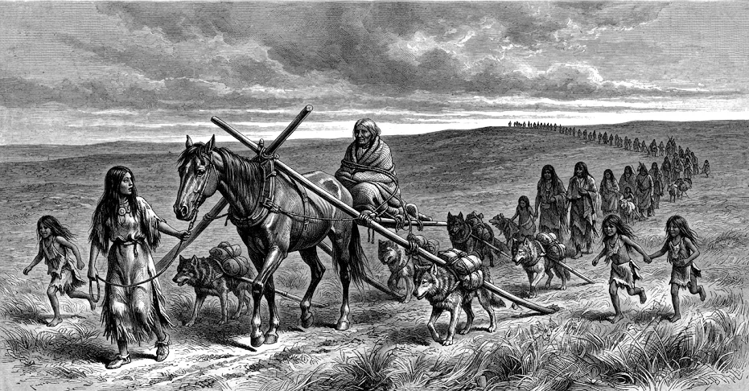
—Ahora os voy a contar lo que os prometí —dijo el anciano—. Cómo llegaron los caballos. No lo vi yo. Me lo contó a mí un viejo, igual que yo os lo cuento a vosotros. Así que esto lo vais a oír de tercera mano, como se oyen las cosas importantes.
Se acomodó la manta sobre los hombros.
—Era el cuarto invierno que yo pasaba con los apaches. Tendría doce años, o trece. Hacía tanto frío que los árboles estallaban de noche, como tiros de escopeta, por el hielo que se les metía dentro. Estábamos acampados en un cañón con álamos, al norte del Cuartelejo, y no salíamos de las tiendas más que para cuidar a los caballos.
En invierno, los caballos sufren más que la gente. La hierba se queda debajo de la nieve, seca, dura, y no alimenta. Así que los hombres y los muchachos salíamos cada día a los álamos del río a cortar ramas tiernas y a pelar la corteza de dentro, la que está pegada a la madera, que es dulce y blanda. Se la dábamos a los caballos a puñados. Les gustaba más que la hierba. Hay inviernos en que un campamento entero ha salvado a sus caballos pelando álamos.
Yo cuidaba de tres: de Paloma, ya vieja, con la cara blanca de canas; de su segunda cría, una potra baya que había nacido la primavera anterior; y del mío. El primero. El potro gris de la estrella en la frente.
Tenía ya cuatro años y era el caballo más bonito del campamento. No lo digo porque fuera mío. Lo decían todos. Gris oscuro, con las crines negras, las patas finas como las de un ciervo y la estrella blanca en la frente, que en invierno, cuando se le espesaba el pelo, parecía una luna pequeña. Yo lo había domado solo, sin pegarle nunca, hablándole. Lo montaba sin cuerda ni nada, con las rodillas.
Los apaches lo llamaban por un nombre suyo. Yo, a escondidas, cuando estábamos solos, le llamaba de otra manera. Lucero. Como la estrella que sale antes del alba. Era la única palabra en castellano que decía en voz alta en todo el año.
Os voy a contar cómo lo domé, porque así lo hago todavía, y así lo hacían muy pocos.
Mano Quemada domaba como domaban todos los apaches. Se cogía al potro con una cuerda al cuello, se le tumbaba en el suelo entre cuatro hombres, se le ataba la boca, y uno se le subía encima y aguantaba hasta que el caballo se cansaba de saltar. O se le metía en el río hasta el pecho, donde no puede encabritarse, y allí se le montaba hasta que se rendía. Funcionaba. Salían buenos caballos. Pero salían caballos que obedecían por miedo, y que el día que el miedo se les iba, te tiraban.
Yo no quise hacerlo así con Lucero. Mano Quemada me dejó, porque era mío.
Empecé cuando tenía un año, todavía al lado de su madre. Cada mañana iba a donde estaban y me sentaba en la hierba, cerca, sin mirarlo. Solo estaba. Al principio Lucero se escondía detrás de Paloma. Empezó a asomar la cabeza. Luego a acercarse, a olerme el pelo, a mordisquearme la camisa por detrás y salir corriendo. Yo no me movía. Le dejaba que viniera él.
Al segundo año ya me seguía por el campamento como un perro. Le tocaba las patas, una por una, se las levantaba, le golpeaba los cascos con una piedra, despacio, para que se acostumbrara a que le tocaran donde más miedo tienen. Le pasaba una piel por el lomo, por la barriga, por la cara. Le soplaba en los ollares, que es como se saludan los caballos. Él me soplaba a mí.
Al tercer año le puse la cuerda en la boca. No le gustó. Se la quité. Al día siguiente se la volví a poner, un rato más. Y al otro. Hasta que la llevaba como cosa suya.
Y un día de otoño, sin decírselo a nadie, en un sitio del río donde no había nadie mirando, me eché sobre su lomo de lado, con la tripa, como un saco. Él se quedó quieto, con las orejas hacia atrás, escuchándome. Le hablé. Me bajé. Al día siguiente lo mismo, un poco más de rato. Al tercer día pasé la pierna por encima y me senté.
No saltó. Volvió la cabeza, me miró la rodilla, me olió el pie, y echó a andar. Despacio. Hacia la hierba. Como si llevarme encima fuera lo más normal del mundo.
Cuando volví al campamento montado en él, sin silla ni nada, al paso, los hombres se quedaron mirando. Mano Quemada no dijo nada. Pero aquella noche, junto al fuego, le dijo a Hierba Dulce, creyendo que yo dormía:
—El caballo le quiere. Nunca había visto que un caballo quisiera a alguien.
Yo no dormía. Me lo guardé dentro, como se guarda una brasa en un cuerno para llevar el fuego de un campamento a otro.
En la tienda de al lado vivía un viejo al que todos llamaban Abuelo, aunque no era abuelo de nadie. Había tenido hijos, y nietos, y los había perdido a todos, unos en guerras y otros en inviernos. Ya no veía casi nada. Pasaba los días sentado junto al fuego, envuelto en pieles, con las manos abiertas hacia las brasas, y los niños le llevaban comida y leña a cambio de historias.
Yo iba mucho. Me gustaba cómo contaba. No hacía voces, como Mano Quemada con las historias del Coyote. Hablaba siempre igual, con los ojos blancos mirando a ninguna parte, y lo que contaba no eran cuentos. Eran cosas que había visto.
Una noche le pregunté por qué decíamos la misma palabra para el perro y para el caballo. Solo cambiaba un poco al final. Perro. Perro grande. Perro sagrado, decían algunos.
El viejo se rio. Era una risa sin dientes, que le movía todo el cuerpo.
—Porque cuando yo era como tú —me dijo—, no había otra palabra. No había caballos. Había perros.
Y entonces me lo contó.
«Cuando yo era niño, éramos pobres y no lo sabíamos.
Vivíamos como ahora: en verano, junto a los ríos, sembrando; en otoño y en invierno, detrás del cíbolo. Pero nos movíamos poco. Un campamento andaba en un día lo que ahora andamos en una mañana. Porque todo lo llevábamos los perros y las mujeres.
Un perro bueno, un perro grande, arrastraba con sus palos lo que pesa un niño de cinco años. No más. Y andaba despacio, y se cansaba, y se peleaba con los otros perros, y cuando veía un conejo se iba detrás con toda la carga. Las mujeres llevaban el resto a la espalda. Las tiendas eran pequeñas, porque los palos tenían que ser cortos para que los pudiera arrastrar un perro. Dormíamos apretados como ratones en un agujero.
Cazar el cíbolo era cosa de muchos días y de mucho peligro. Lo cazábamos a pie. Unas veces nos tapábamos con pieles de lobo y nos acercábamos a gatas, contra el viento, hasta estar a tiro de flecha de la manada; el cíbolo no tiene miedo del lobo que va solo. Otras veces juntábamos a toda la gente, hombres, mujeres y niños, y rodeábamos una manada poco a poco, durante un día entero, y luego la asustábamos todos a la vez y la empujábamos hacia un barranco, para que cayeran y se rompieran las patas. Otras veces prendíamos fuego a la hierba para empujarlos. Se mataban muchos o ninguno. Morían hombres. Si fallaba, se pasaba hambre.
Mi abuela me contaba lo que a ella le había contado la suya: que, cuando era niña, unos hombres de hierro con perros enormes llegaron a la llanura desde el sur, buscando unas ciudades de oro que no existían. Que los perros enormes eran tan altos como un alce, que los hombres iban sentados encima, y que perros y hombres eran una sola bestia de seis patas y dos cabezas. Que se fueron y no volvieron. Nadie la creía. Decían que era un sueño de vieja.»
—Nosotros decimos puuku —dijo Nube Corta de pronto—. Al caballo.
—Y vuestros abuelos, cuando vivían en las montañas del norte, decían puuku al perro —contestó el anciano—. O a cualquier animal de casa. Pregúntale a un viejo y verás. La palabra se la quedó el caballo, igual que se quedó con todo lo demás.
—Eso de los hombres de hierro fue de verdad —dijo Lobo Que Camina, desde el otro lado del fuego.
Todos lo miraron. El anciano asintió.
—Fue de verdad. Mucho después supe que eran españoles, los primeros que vinieron, mucho antes de que hubiera españoles en Santa Fe. Pero entonces, para aquella gente, fueron solo un sueño. Pasaron como pasan las tormentas. Y se llevaron sus perros enormes.
Hizo una pausa.
—Los caballos de verdad llegaron después. No de golpe. Poco a poco, como entra el agua por una grieta. Escuchad.
«Luego vinieron los españoles a quedarse. Mi padre era joven entonces. Se establecieron en el río grande, donde los pueblos de barro, y trajeron muchos de esos perros enormes, y vacas, y ovejas. Y desde lejos los mirábamos.
Los españoles no dejaban que los indios montaran a caballo. Eso era cosa suya. Un indio de los pueblos podía cuidar los caballos de su amo, darles de comer, limpiarlos, sacarlos a pastar. Pero si lo veían montado, lo azotaban. Ellos sabían lo que valía un caballo. Lo sabían mejor que nadie, porque con caballos nos habían ganado a todos.
Pero los que cuidan los caballos aprenden a montar, aunque se lo prohíban. Y algunos de esos criados se escapaban. Y cuando se escapaban, se escapaban montados. Y venían a nosotros, o a otros, y traían el caballo, y sabían cómo se le daba de comer, y cómo se le ponía la cuerda en la boca, y cómo se subía uno encima sin caerse.
El primer caballo que vi en mi vida lo trajo uno de esos. Un muchacho de los pueblos, de Pecos, que había huido de un rancho después de que lo azotaran. Llegó a nuestro campamento medio muerto de hambre, montado en una yegua flaca, parda, con las costillas fuera. Yo tendría seis años. Me escondí detrás de mi madre. Todos nos escondimos. Los perros le ladraban a la yegua y la yegua les daba coces.
Los hombres no sabían qué hacer con ella. Algunos querían matarla y comérsela, porque era invierno y había hambre. Y se la comieron, al final, a la primavera, cuando se le rompió una pata en un hoyo. Era la primera carne de caballo que probé. No me gustó.
Pero el muchacho de Pecos se quedó. Y le enseñó a mi padre y a otros cómo se cuida un caballo. Y aquel verano, cuando fueron a cambiar pieles al pueblo de Pecos, mi padre volvió con otro. Lo había cambiado por diez pieles de cíbolo curtidas, que era lo que hacían las mujeres de nuestra familia en todo un invierno.
Aquel caballo lo cambió todo en nuestra tienda.
Arrastraba con sus palos lo que arrastraban cuatro perros. No se iba detrás de los conejos. No se peleaba. Podía llevar a mi abuela, que ya no podía andar, y que antes había que dejar atrás en los viajes largos. Mi madre lloró cuando lo vio cargado con toda la tienda. No por pena. Porque por primera vez en su vida no tuvo que llevar nada a la espalda.
Por eso lo llamamos perro sagrado. Porque hacía el trabajo de un perro, pero era más que un perro. Era un regalo.»
El viejo se quedó callado un rato. Yo pensé que se había dormido. Fuera, un álamo estalló en la noche por el hielo.
Siguió.
«Después, cuando yo era ya hombre y tenía mujer, los de los pueblos se levantaron contra los españoles. Todos a la vez, en todos los pueblos, el mismo día. Los mataron, los echaron, los persiguieron hasta el sur. Quemaron las iglesias. Los españoles se fueron corriendo con lo que pudieron llevar.
Y dejaron atrás los caballos.
Cientos. Miles. En los ranchos, en los corrales, sueltos por los campos. Los de los pueblos se quedaron con ellos, pero eran tantos que no sabían qué hacer. Ellos siembran. No los necesitaban tantos. Así que empezaron a cambiarlos. Por carne, por pieles, por sal, por cautivos. Nosotros llevábamos cíbolos secos a sus pueblos y volvíamos con caballos.
En pocos inviernos cada familia tenía uno, dos, tres. Los hombres aprendieron a cazar el cíbolo como lo has visto tú, metidos en la manada, a galope. Se acabaron los barrancos y los incendios y los disfraces de lobo. Un hombre con un buen caballo mataba en una mañana lo que antes mataba todo el campamento en una semana. Había carne. Había pieles. Había tiendas grandes, con palos largos, donde cabía toda la familia sin apretarse. Las mujeres ya no se doblaban bajo las cargas.
Fuimos ricos. Fuimos fuertes. Fuimos los dueños de toda esta tierra, desde las montañas hasta los ríos grandes del este.
Aquellos fueron los mejores años. Tú has llegado al final de ellos.»
Le pregunté por qué decía al final.
El viejo volvió los ojos blancos hacia mí, como si me pudiera ver.
—Porque el perro sagrado no es como el perro —me dijo—. El perro come lo que le das y duerme a tus pies. El caballo da mucho, pero pide mucho. Pide hierba, y hay que moverse para buscársela. Pide agua. Pide que lo defiendas, porque todos lo quieren. Y pide más caballos. El que tiene uno quiere dos. El que tiene dos quiere diez. Y los que no tienen, los roban.
Se quedó callado.
—Antes, un hombre era rico si tenía muchos hijos y era buen cazador. Ahora un hombre es rico si tiene muchos caballos. Antes, para casarse con una muchacha, se le llevaba carne a su familia. Ahora se le llevan caballos. Y el que no tiene caballos no se casa. Antes, las guerras eran por venganza, por un muerto, por una ofensa. Ahora las guerras son por caballos. Vamos a los pueblos y a los españoles a robárselos, y los yutas vienen a robárnoslos a nosotros, y nosotros a ellos, y así siempre.
Movió la mano hacia el norte, hacia la oscuridad, hacia donde silbaba el viento.
—Y allí arriba, en las montañas, hay unos que antes eran más pobres que nosotros. Andaban a pie, comían raíces, se morían de hambre cada invierno. Primos de los yutas. Ahora tienen caballos. Muchos. Más que nosotros. Y no siembran. No tienen campos que defender ni casas que guardar. Van y vienen como el viento, y cuando llegan, ya es tarde.
—Los comanches —dije yo. Me acordé de la palabra que Diego había escrito en su cuaderno, letra por letra, en Taos.
El viejo escupió en el fuego.
—Así los llaman los yutas. Nosotros tenemos otro nombre para ellos. Ya lo aprenderás.
Luego volvió a poner las manos hacia las brasas.
—El caballo nos hizo señores —dijo—. El caballo nos va a quitar el señorío. Porque nosotros tenemos campos, y ellos no. Y un hombre con campos no puede irse cuando llega el enemigo. Recuérdalo, muchacho que habla con los caballos. El perro sagrado es de quien mejor lo sabe usar. No de quien lo tuvo primero.
El anciano se calló. En el tipi, nadie se movía. Lobo Que Camina tenía la vista clavada en el fuego, y Oso Pequeño vio que apretaba la mandíbula.
—Tenía razón —dijo Nube Corta, muy bajo. No era una pregunta.
—Tenía razón —dijo el anciano—. Pero eso todavía no lo sabía yo. Al año siguiente, el viejo murió. Lo enterramos en las rocas, y quemamos su tienda, y nadie volvió a decir su nombre. Y yo me olvidé de lo que me había dicho, porque tenía catorce años y un caballo gris con una estrella en la frente, y la llanura entera era mía.
Se rio, bajito, y la risa se le volvió tos.
—Aquella primavera fue la de mi primera caza de verdad. La primera vez que me metí en la manada a galope, como los hombres. Con Lucero.
Fue en el valle del río ancho del norte, el que el sargento mayor había llamado de San Francisco, cuando las manadas subían hacia el norte con la hierba nueva.
Éramos veinte hombres y tres muchachos. Mano Quemada me había hecho un arco nuevo de madera de fresno, del tamaño justo para mí, y veinte flechas con punta de piedra negra. Yo llevaba también el cuchillo de Diego al cinto. Llevaba la cruz al cuello, debajo de la camisa de piel. Y no llevaba nada más. Ni silla, ni manta, ni comida. Como los hombres.
Nos acercamos a pie, llevando los caballos de la cuerda, contra el viento, como siempre. Yo tenía tanto miedo que me temblaban las rodillas. No de los cíbolos. De hacerlo mal delante de Mano Quemada.
Después, a la señal, saltamos todos a la vez.
No sé contaros lo que fue. Os lo sabéis vosotros mejor que yo, que lo habéis hecho cien veces. El ruido. El polvo. El suelo que se mueve debajo como el agua de un río. Los lomos enormes de los cíbolos a los lados, tan cerca que podía tocarlos, el olor fuerte de su lana, sus ojos de lado, los cuernos. Y Lucero, entre ellos, sin miedo, leyendo mis rodillas antes de que yo supiera lo que quería, metiéndome al lado de una vaca gorda, pegado a ella, a la derecha, como había visto hacer a Mano Quemada aquel día, cuando Diego y yo mirábamos desde la loma.
Tiré. La flecha entró hasta las plumas detrás de la última costilla. Lucero dio un salto a la izquierda, solo, sin que yo se lo pidiera, y la vaca pasó de largo, tropezó, y cayó.
Grité. No sé qué grité. Mano Quemada, que venía detrás, gritó también. Fue la única vez que le oí gritar de alegría.
Aquella noche, en la fiesta, Hierba Dulce me dio la lengua de mi vaca, asada entera, y la partió en dos, como se hace. Una mitad para Mano Quemada. La otra para mí.
Ya era un hombre. Tenía catorce años, un caballo, un arco, un cuchillo de Toledo y una cruz de latón. Y era apache.
Aquel verano aprendí también a hacer las cosas del caballo, que entonces no se compraban: se hacían.
La cuerda de la boca se trenzaba con pelo de cíbolo, el largo y áspero de la giba, o con crin de los mismos caballos, retorcida entre las palmas de las manos durante noches enteras junto al fuego, hasta que quedaba más fuerte que una correa. Para montar en las cacerías no se usaba nada. Para los viajes largos, una almohadilla de piel de ciervo rellena de pelo de cíbolo, atada con una cincha de cuero crudo. Los estribos, cuando los había, eran de madera doblada al fuego, forrada de cuero. Las mujeres hacían sillas altas para ellas, de madera y cuero, con un pomo delante y otro detrás, para poder llevar a los niños pequeños sujetos. Eran mejores que las de los españoles. Hierba Dulce hizo una para la potra baya de Paloma, y la pintó con rayas rojas y amarillas.
El cuero crudo era lo más útil del mundo. Se ponía mojado, se ataba donde fuera, y al secarse se encogía y apretaba más que un clavo. Con cuero crudo se arreglaba todo: una pata de arrastre rota, un arco rajado, un casco agrietado de caballo, una herida de flecha en el muslo de un hombre, una vez. Hierba Dulce decía que con cuero crudo y tendón de cíbolo se podía coser el mundo si se descosía.
Ese verano también vi lo otro que había dicho el viejo. Lo de que los que no tienen, roban.
Fue una noche de luna nueva, a final del verano, cuando estábamos en el Cuartelejo con la cosecha casi hecha. Yo dormía fuera, junto a los caballos, como siempre había dormido desde los ocho años, aunque ya tenía mi sitio en la tienda. Lucero me despertó. No hizo ruido. Me empujó con el hocico en la cara, dos veces, y se quedó tieso, con las orejas hacia el río.
No oí nada. No vi nada. Pero Lucero no se equivocaba nunca.
Fui a la tienda y desperté a Mano Quemada. Él no me preguntó nada. Cogió el arco y salió. A los pocos momentos se oyó un grito, y luego muchos, y después el ruido de cascos que se alejaban hacia el norte al galope. Los perros ladraban en todo el campamento. Las mujeres gritaban.
Eran yutas. Una partida pequeña, ocho o diez. Habían entrado arrastrándose por la hierba, como nosotros entrábamos en las manadas de cíbolos, habían cortado las cuerdas de los caballos que estaban más lejos del campamento y se los habían llevado. Más de veinte. Si Lucero no me hubiera despertado, se habrían llevado todos.
Los hombres salieron detrás de ellos al amanecer. Volvieron a los cuatro días, con nueve de los caballos y dos cabelleras yutas colgadas de las lanzas. Uno de los nuestros no volvió. Su mujer se cortó el pelo y se hizo cortes en los brazos, como Hierba Dulce cuando murió su hijo, y quemaron su tienda.
Por veinte caballos. Pensé en lo que había dicho el viejo, y por primera vez me dio miedo la llanura.
Aquella noche, Mano Quemada vino a donde yo estaba, con los caballos. Se sentó a mi lado en la hierba. Luego le puso la mano a Lucero en el cuello.
—Este caballo te ha salvado hoy a ti, y a todos —me dijo—. Igual que su madre os salvó a ti y a los españoles con el agua en la llanura.
Yo nunca le había contado lo del agua. Nunca. Me quedé mirándolo.
—Lo contaba él —me dijo Mano Quemada, y no dijo el nombre, porque no se decía—. Mi hijo. Se lo contaron los de Picurís que venían con vosotros, el día que llegasteis, y él me lo contó a mí. Que la yegua gris había encontrado el agua cuando los españoles se morían de sed. Por eso la quería tanto.
Se levantó y se fue a la tienda.
Yo me quedé allí toda la noche, sin dormir, con la cara contra el cuello de Lucero.
En el tipi, el anciano cerró los ojos.
—Ese caballo, Lucero —dijo Oso Pequeño—. El gris de la estrella.
—Ese mismo.
—¿Y el que está fuera?
El anciano no abrió los ojos.
—El que está fuera es nieto de su nieto —dijo—. Más o menos. He perdido la cuenta. Pero tiene la estrella.
Oso Pequeño se levantó sin hacer ruido y salió otra vez. Cuando volvió, tenía los ojos muy abiertos.
—Tiene la estrella —dijo.
Nadie se rio de él.
Señores por poco tiempo
El Cuartelejo y las llanuras · de 1715 a 1730
Lo cuenta el anciano
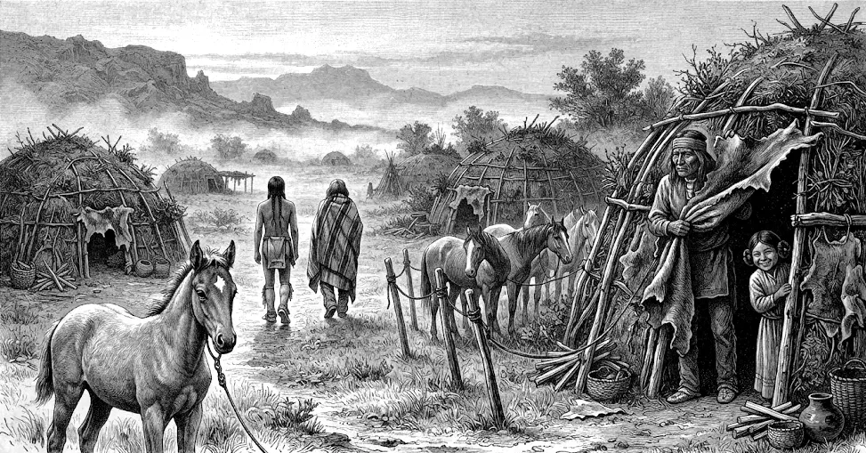
—El viejo tenía razón —dijo el anciano—. Ya os lo he dicho. Pero entonces yo era joven, y los jóvenes no creen a los viejos hasta que se hacen viejos. Escuchad cómo fue.
Cuando cumplí veinte inviernos, me casé.
Se llamaba Flor de Yuca. Era hija de un hermano de Hierba Dulce, de otra ranchería del río, y la conocía desde niña, de los campos. Tenía los ojos rasgados y una risa que se oía de una tienda a otra, y no le daba miedo nada, ni siquiera los caballos sin domar, cosa rara en una muchacha. Fue ella la que me buscó a mí. Una tarde, en el río, me echó agua a la cara con la mano y salió corriendo. Así se hacía.
Para casarme tuve que pagar. Ya os lo dijo el viejo: antes se llevaba carne a la familia de la muchacha; ahora se llevaban caballos. Mano Quemada me ayudó. Llevamos cinco caballos a la tienda de su padre, una mañana, en silencio, y los atamos delante de la puerta. Si el padre los soltaba, quería decir que no. Si los llevaba con los suyos, quería decir que sí.
Uno de los cinco era una potra gris, hija de Lucero. La mejor que tenía. Me dolió darla. Pero un hombre que da lo peor no merece lo mejor, decía Mano Quemada.
El padre de Flor de Yuca los tuvo atados todo el día, mirándolos desde dentro, para que yo sufriera. Al ponerse el sol salió, los desató uno a uno, y se los llevó con los suyos.
Hicimos nuestra tienda al lado de la de Hierba Dulce, como se hace, porque entre los apaches el hombre se va a vivir con la familia de la mujer. Pero Flor de Yuca quería tanto a Hierba Dulce que acabamos viviendo los cuatro casi juntos, como una sola familia. Hierba Dulce le enseñó a hacer las ollas de barro brillante, y Flor de Yuca le enseñó a ella canciones de su ranchería que Hierba Dulce no sabía. Y Mano Quemada y yo cazábamos juntos, y domábamos caballos juntos, y por las noches él me contaba historias del Coyote y yo hacía como que no las había oído nunca.
Aquellos fueron los mejores años de mi vida. Creo que de la de todos.
Os cuento cómo era un día, para que lo veáis. Uno cualquiera, de verano, en el Cuartelejo.
Me despertaba Flor de Yuca antes del alba, con la mano en el hombro, sin hablar. Yo bajaba al río con los demás hombres a bañarme, aunque ya no hiciera falta, porque Mano Quemada lo seguía haciendo y no iba a dejarlo solo. Iba a la manada. Cada mañana contaba mis caballos, los miraba uno por uno, les tocaba las patas, les miraba los ojos. Tenía ya once. Los de la estrella los conocía por la manera de levantar la cabeza.
Flor de Yuca, mientras tanto, encendía el fuego, molía el maíz, ponía la olla. Comíamos a media mañana, una sola comida fuerte al día, como se hacía: gachas de maíz con carne, o carne asada, o calabaza con grasa. Luego ella se iba a los campos con Hierba Dulce y las otras mujeres, y yo me iba a cazar, o a domar potros, o a hacer flechas a la sombra con los hombres, hablando de caballos, de mujeres, de los comanches que se veían cada vez más cerca.
La tienda era de ella. Entre los apaches, la tienda es de la mujer: la hace ella, la monta ella, la desmonta ella, y si echa al marido, el marido se va con su caballo y su arco y nada más. Flor de Yuca la había hecho con doce pieles de cíbolo que había curtido ella sola, y la había pintado por fuera con un sol amarillo y con caballos, muchos caballos, de todos los colores. Uno de ellos era gris, con una estrella blanca. Decía que era Lucero. Yo decía que no se parecía nada. Ella se reía.
Por las tardes, cuando bajaba el calor, a veces montábamos los dos y salíamos a la llanura, lejos, sin nada que hacer, solo por correr. Ella montaba mejor que muchos hombres. Me ganaba a veces. Cuando me ganaba, se reía tan fuerte que la oían en el campamento.
Al tercer año tuvimos una hija. Nació en invierno, en la tienda, con Hierba Dulce y dos viejas ayudando, mientras yo esperaba fuera, en la nieve, como esperan los hombres. Era pequeña y morena y gritaba como su madre. Hierba Dulce la tuvo en brazos antes que nadie, y lloró, y fue la primera vez que la vi llorar de alegría.
La niña vivió dos inviernos. Murió de una fiebre que vino con la primavera, la misma que se llevó a otros cuatro niños del campamento. No os digo su nombre. No se dice. Flor de Yuca se cortó el pelo y se hizo cortes en los brazos, y yo me corté el pelo también, como se hace. Quemamos sus cosas. Quemamos la cuna de tablas que yo le había hecho, pintada con caballitos.
No volvimos a tener hijos. Lo intentamos. No vinieron. Flor de Yuca decía que la niña se los había llevado a todos con ella, para no estar sola.
Al año siguiente de casarme volví a ver españoles.
Fue en otoño. Llegó la noticia de que el gobernador de Santa Fe venía hacia el norte con un ejército, a pelear contra los comanches y los yutas, que nos atacaban cada vez más. Eran muchos. Cien soldados, decían, y cinco veces más indios de los pueblos. Iban por las faldas de las montañas, hacia el río de San Francisco, y los apaches de todas las rancherías salían a recibirlos y a quejarse.
Yo fui con Mano Quemada y otros hombres del Cuartelejo. Los encontramos acampados junto al río de San Francisco. No sé explicaros lo que sentí al ver aquellas tiendas blancas, de lona, en fila, y las cueras, y las lanzas, y oír a los soldados gritarse en la lengua que yo hablaba de niño. La entendía. No toda. Se me había ido más de la mitad. Pero la entendía, y cada palabra era como una piedra que me tiraban al pecho.
No dije que la hablaba. No sé por qué. Me quedé detrás de Mano Quemada, callado, con mi trenza y mi camisa de piel y la cara pintada, y nadie me miró dos veces. Era un apache más.
Los nuestros le contaron al gobernador que los comanches los perseguían y los mataban. Que venían de las montañas del norte con muchos caballos, y que no se paraban ante nada. Uno de nuestros capitanes le enseñó una herida que tenía en el costado, ya cerrada, redonda, una herida de bala. Se la habían hecho los pananas, del este, en una pelea, y los pananas tenían armas de fuego que les daban los franceses. Le dijeron que los franceses tenían ya cinco pueblos entre los pananas. El gobernador escuchaba muy serio, mandaba escribirlo todo, y prometía que echaría a los franceses y castigaría a los comanches.
Lo que más me acuerdo, aunque os parezca una tontería, es la comida. El gobernador invitó a comer a nuestros capitanes. Les dieron carne de oveja cocida y unas aves que los españoles llaman gallinas. Nuestros capitanes se comieron la oveja, pero las gallinas no las tocaron. Los apaches no comemos aves. Los españoles se reían, sin entender. Yo también me acordaba de que las gallinas se comían, de niño, en Santa Fe. Pero no las toqué.
La última noche me acerqué a un soldado viejo que cuidaba la caballada. Le hablé en castellano, buscando las palabras. Le pregunté si conocía a un soldado llamado Diego Ordóñez.
Me miró como si le hubiera hablado un caballo.
Dijo que sí. Que era cabo del presidio. Que estaba en Santa Fe. Que no había venido en esta campaña porque tenía mujer parida.
Le di las gracias y me fui antes de que pudiera preguntarme nada.
Aquella noche no dormí. Diego estaba vivo. Tenía mujer. Tenía un hijo, o una hija. Era cabo. Pensé en volver con los españoles. Lo pensé toda la noche, con los ojos abiertos, mirando las estrellas. Por la mañana, Flor de Yuca me trajo carne caliente y se sentó a mi lado, y no me preguntó nada, aunque se había dado cuenta de todo.
No volví. Ya no era aquel niño. Y no se puede volver a un sitio que ya no existe.
Al verano siguiente vinieron otra vez los españoles. Y esta vez vino él.
Yo no estaba. Ese es el dolor de toda mi vida, muchachos. Yo no estaba.
Había salido con otros siete hombres a cazar al sur, lejos, porque aquel año los cíbolos no habían subido como siempre. Estuvimos fuera muchos días. Cuando volvimos al Cuartelejo, con los caballos cargados de carne seca, el campamento estaba revuelto. Habían pasado los españoles. Una columna pequeña, unos cuarenta soldados, sesenta indios de los pueblos, un fraile, y con ellos Naranjo, viejo ya, y el francés, también viejo. Iban hacia el norte y el este, hacia el río de los pananas, a buscar a los franceses. Se habían quedado dos noches. Y unos cincuenta de los nuestros se habían ido con ellos, para guiarlos y para pelear contra los pananas, que eran enemigos de todos.
Mano Quemada me estaba esperando a la puerta de la tienda. Tenía una cosa en las manos, envuelta en una piel. No me la dio enseguida. Me hizo sentar.
Me contó que entre los soldados había venido uno que preguntaba por mí. Que había ido de ranchería en ranchería preguntando por el muchacho de la yegua gris. Un hombre de unos treinta y tantos años, con la barba ya con alguna cana, que cojeaba un poco de una pierna. Que cuando llegó a nuestra tienda y vio a Paloma, vieja ya, con la cara blanca, atada delante de la puerta, se había quedado quieto, con el sombrero en la mano, mucho rato, sin decir nada. Que había preguntado por mí, por señas y con alguna palabra que sabía. Que Mano Quemada le había dicho que estaba de caza, al sur, lejos, que tardaría días. Que el soldado había querido esperar, pero que la columna salía al amanecer y su capitán no le dejaba.
Que aquella noche el soldado no había dormido. Que se había sentado junto a nuestro fuego, con Paloma al lado, y había estado escribiendo hasta muy tarde, en un cuadernito, a la luz de las llamas. Que de vez en cuando paraba y miraba a la yegua. Y que antes del alba, cuando sonó la trompeta, había ido a la tienda y le había dado a Mano Quemada aquello. Para el muchacho de la yegua gris.
Mano Quemada me dio la piel. La abrí.
Era el cuaderno. El mismo. Las tapas de cuero más gastadas, las hojas más amarillas, pero el mismo. Lo reconocí por el olor, antes que por los ojos. Olía a hollín, a sebo, a Diego.
Lo abrí. Estaba lleno de letras. Al final había muchas páginas nuevas, con una letra un poco distinta, más apretada, más firme, de hombre. Y yo no sabía leer ni una.
Me quedé sentado a la puerta de la tienda con el cuaderno abierto en las rodillas, mirando aquellas rayas negras que no me decían nada, hasta que se hizo de noche. Flor de Yuca vino a buscarme y no quise entrar. Hierba Dulce me trajo una manta y se calló. Mano Quemada se sentó a mi lado y fumó, en silencio, toda la noche.
—¿Qué decía? —preguntó Oso Pequeño—. Lo que escribió aquella noche.
El anciano tardó en contestar.
—Entonces no lo supe. Lo supe muchos años después, cuando ya no servía de nada, de una manera que ya os contaré. Pero os lo voy a decir ahora, porque si no os lo digo ahora no me va a dar tiempo. Lo sé de memoria. Lo he oído leer tantas veces que me lo sé mejor que el Padrenuestro.
Cerró los ojos. Cuando volvió a hablar, la voz le salió distinta. Más firme. Más joven.
El Cuartelejo, a 3 de julio de 1720
Tomás:
No sé si sabrás leer esto. Seguro que no. Pero alguien te lo leerá algún día, o no, y no me importa: lo escribo para mí tanto como para ti.
He venido a buscarte. No me han dejado venir solo, así que he venido con una guerra. El gobernador manda a su teniente Villasur a buscar a los franceses al río de los pananas, y yo me he apuntado en cuanto supe que la columna pasaba por El Cuartelejo. Me ha costado que me admitieran, porque tengo una pierna mala de una coz y porque tengo mujer y una hija de un año, que se llama Ana. Mi mujer no quería que viniera. Le he dicho que tenía una deuda.
Llevo catorce años preguntándome qué fue de ti. Cada vez que llegaban apaches a la feria de Taos, preguntaba por el niño de la yegua gris. Nadie sabía nada, o no me entendían. Llegué a pensar que habías muerto el primer invierno.
Hoy he visto a Paloma. Vieja, canosa, pero viva. La he reconocido antes de verle la cara, por la forma de levantar la cabeza. Ella también me ha reconocido. Me ha enseñado los dientes, como siempre. Me he reído tanto que me han caído lágrimas.
El hombre de la tienda dice que estás de caza. Que eres un hombre, que tienes mujer, que tienes caballos, que eres el mejor jinete de la ranchería. Que te llaman El que Habla con Caballos. No me ha extrañado. Ya lo eras a los ocho años.
No te puedo esperar. Mañana salimos. Te dejo el cuaderno. Es lo único mío que tengo para darte. En él está todo lo que pasó en aquel viaje, día por día, como lo vi yo. Y está también lo que no te dije nunca.
Lo que no te dije nunca es esto: que no fue culpa tuya. Que la yegua era mía, y que yo me negué a venderla, y que por eso murió aquel niño. Que yo debí impedir que te entregaran, y no supe. Que me pasé la vuelta entera a Santa Fe buscando a mi lado la manta enrollada, y no estaba. Que cuando nació mi hija, lo primero que pensé fue en ti.
No sé si eres feliz. El hombre de la tienda es serio, pero tiene los ojos buenos. La yegua está gorda. Las mujeres me han mirado con desconfianza y luego me han dado de comer. Creo que eres feliz. Si lo eres, me alegro, y me voy tranquilo.
Si algún día quieres volver, en Santa Fe hay una casa donde te esperan. Pregunta por el cabo Ordóñez, en el barrio de San Miguel, detrás de la capilla. Mi mujer sabe quién eres. Mi hija lo sabrá.
Y si no quieres volver, que Dios te guarde entre los apaches, que también son hijos suyos, aunque no lo sepan.
Tu amo, que no lo fue nunca,
Diego Ordóñez
El anciano abrió los ojos. Tenía la cara mojada, y no hacía nada por secársela.
Nadie dijo nada. Lobo Que Camina miraba el fuego con la mandíbula apretada. Nube Corta se había tapado la cara con la manta.
—A las pocas semanas —siguió el anciano— volvieron los nuestros. Los que se habían ido con los españoles. No volvieron todos.
Contaron que habían llegado al río de los pananas, muy al norte y al este, y que allí habían encontrado a los pananas y a otros, muchos, que no querían hablar. Que los apaches olieron la emboscada y se lo dijeron a los españoles, y que los españoles no les hicieron caso. Que los nuestros se apartaron. Y que al amanecer los pananas cayeron sobre el campamento español, entre la hierba alta, con arcos y con armas de fuego francesas, y que en lo que se tarda en ensillar un caballo los mataron a casi todos. Al capitán. Al fraile. A Naranjo, el viejo, que murió peleando. Al francés.
Pregunté por el soldado de la pierna mala. Uno de los nuestros lo había visto. Había visto a un soldado que cojeaba correr hacia los caballos al empezar el ataque, cuando todos dormían, y había visto cómo lo alcanzaban antes de llegar.
Me levanté y me fui al río. Solo. Me senté en una piedra y dije su nombre en voz alta. Diego. Diego Ordóñez. Muchas veces. Los apaches no dicen el nombre de los muertos, porque el muerto lo oye y vuelve. Yo quería que lo oyera. Quería que volviera.
No volvió.
Desde entonces todo fue a peor. Como había dicho el viejo.
Los comanches bajaban cada año un poco más. Primero fueron robos de caballos, de noche, como los yutas. Luego fueron ataques. Venían en verano, cuando estábamos en los campos, sembrando o cosechando, porque sabían que en verano estábamos quietos. Un campo de maíz no se puede llevar a rastras como una tienda. Una acequia no se puede esconder. Y nosotros no queríamos dejar los campos, porque eran nuestro maíz del invierno, nuestras calabazas, nuestras sandías. Así que nos quedábamos. Y ellos venían.
Llegaban de golpe, al alba, por donde no se los esperaba. Más caballos que nosotros, mejores caballos, más armas, cada año más. No se paraban a pelear. Mataban, quemaban, cogían caballos y niños y mujeres, y se iban antes de que pudiéramos juntarnos. Y al día siguiente estaban a diez leguas, y al otro a veinte. No había forma de alcanzarlos. Ni de encontrarlos. Ni de vengarse. Eran como el viento, como decía el viejo.
El primer ataque que vi fue a la ranchería de abajo, la de la flauta, a media mañana de un día de cosecha. Llegamos tarde. Cuando llegamos, los comanches ya se habían ido. Las chozas ardían. El maíz estaba pisoteado, las calabazas reventadas. Había muertos entre las matas: los hombres que habían salido a defenderse, dos viejas que no habían podido correr. Faltaban once mujeres y niños. Faltaban todos los caballos.
La muchacha de la flauta, la que me había tocado la cabeza el día de su fiesta, estaba sentada en el suelo junto a su choza quemada. Tenía a su marido en las rodillas, muerto. No lloraba. Miraba al norte.
Aquel otoño, la ranchería de abajo ya no volvió a sembrar. Se fueron al sur. Al año siguiente se fue otra. Y otra.
Los apaches del sur, los que nunca habían sembrado, se reían de nosotros. Nos llamaban Kinya-Inde, la gente que vive en casas fijas. Lo decían como un insulto, como se dice de un perro que no se separa de su hueso. Y tenían razón, aunque no supieran cuánta: era por las casas fijas por lo que nos encontraban siempre.
Las rancherías del Cuartelejo se fueron vaciando. Unos se fueron al sur, hacia los ríos de Texas. Otros se fueron al oeste, a la sierra, cerca de Taos, a pedir a los españoles que los protegieran. Algunos se bautizaron por eso. Otros se quedaron, cada vez menos, cada vez más pobres.
Paloma murió el tercer invierno después de la muerte de Diego. De vieja, de pie, junto a la tienda, una mañana de nieve. Tenía más de veinte años, que para un caballo es como para un hombre ochenta. Cayó de rodillas y de lado, despacio, como si se tumbara a dormir. Yo estaba con ella. Le hablé en la lengua de mi madre hasta el final.
No la matamos sobre ninguna tumba. No era el caballo de ningún muerto. Era ella la muerta. La dejamos en la llanura, lejos del campamento, para los lobos y para los cuervos, como se hace. Pero aquella noche Mano Quemada y yo nos sentamos junto al fuego y él me contó cómo era su hijo. El que no se nombra. Cómo se reía. Cómo saltaba las matas como los ciervos. Cómo quería a aquella yegua gris.
Fue la segunda y la última vez que me habló de él.
Los comanches vinieron a por nosotros en el verano del vigésimo cuarto año desde que llegué al Cuartelejo. Yo tenía treinta y dos.
Llegaron al alba, como siempre. Estábamos en los campos, con el maíz ya alto. Los perros empezaron a ladrar y Lucero, que ya tenía veintitrés años y estaba viejo, levantó la cabeza como cuando me despertó la noche de los yutas. Esta vez no dio tiempo.
No os voy a contar todo. No hace falta. Vosotros sabéis cómo es, porque lo habéis hecho.
Mano Quemada murió delante de su tienda, con el arco en la mano, viejo ya, de pie. Hierba Dulce murió a su lado. No quiso correr. Flor de Yuca corrió hacia mí, hacia los caballos, y no llegó.
Yo monté en Lucero, a pelo, sin nada, y salí a galope. Llevaba el arco y el cuchillo de Diego. No sé cuántos eran. Muchos. Lucero corrió como no había corrido nunca, viejo como estaba, con el corazón reventándole. Dos comanches me cerraron el paso en el río. Lucero se plantó, se levantó de manos, y uno de los comanches le clavó la lanza en el pecho.
Caímos los dos al agua. Yo me di con la cabeza en una piedra. Cuando abrí los ojos, tenía las manos atadas a la espalda con cuero crudo, mojado, que al secarse se encogía y me cortaba la carne, y un comanche joven, de mi edad, me miraba desde su caballo, sonriendo.
Lucero estaba en la orilla, tendido, con los ojos abiertos. Muerto.
Me pusieron de pie a golpes. Me ataron a la cola de un caballo. Y empezamos a andar hacia el norte, detrás de la manada, de nuestra manada, que los comanches se llevaban entera, cientos de caballos, los de todo el campamento, en una nube de polvo.
Al principio no veía nada. Tenía sangre en los ojos. Luego, al cabo de mucho rato, cuando me la limpié con el hombro, vi delante de mí, entre los caballos robados, trotando detrás de su madre, un potro de un año. Gris. Con una estrella blanca en la frente.
Era nieto de Lucero. Lo había ayudado a nacer yo, la primavera anterior.
Fue lo único que me quedó. Y no era mío.
En el tipi, el anciano se calló.
Nadie hablaba. Lobo Que Camina se había puesto de pie sin darse cuenta y estaba junto a la puerta, de espaldas a todos, mirando la oscuridad.
—Comanches —dijo, sin volverse—. Fueron comanches.
—Fueron comanches —dijo el anciano—. Fuisteis vosotros. Vuestros abuelos.
Lobo Que Camina no contestó. Se quedó un rato más en la puerta, quieto. Salió. Oso Pequeño lo oyó caminar en la oscuridad hasta el caballo tordo, y quedarse allí.
—No es culpa suya —dijo el anciano, muy bajo, mirando el fuego—. No es culpa de nadie. Es el caballo. El perro sagrado es de quien mejor lo sabe usar. Eso me lo dijo un viejo. Yo lo aprendí tarde.
El cautivo
Campamentos comanches al norte del río de San Francisco · de 1730 a 1740
Lo cuenta el anciano
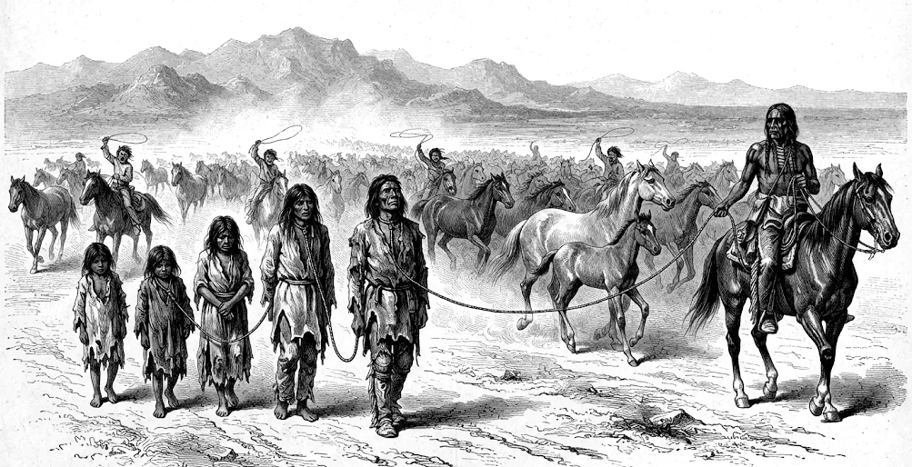
Cuando Lobo Que Camina volvió a entrar en el tipi, nadie le miró. Se sentó en su sitio, frente al anciano, con las piernas cruzadas y las manos sobre las rodillas. Tenía el pelo húmedo de la helada.
—Sigue —dijo—. Quiero saberlo todo.
El anciano asintió sin prisa.
—Todo no —dijo—. Hay cosas que no se cuentan ni a los que van a vivir después de uno. Pero lo que importa, sí.
Anduvimos once días hacia el norte.
Yo iba atado a la cola de un caballo, con las manos a la espalda, descalzo, porque al caer en el río había perdido los mocasines. Al tercer día ya no tenía planta en los pies. Al quinto ya no sentía nada. Cuando me caía, el caballo me arrastraba hasta que el comanche que lo montaba se daba cuenta y paraba, y me levantaba a golpes con el mango de la lanza. No me daban agua más que por la noche. No me daban comida más que lo que tiraban al suelo y los perros no cogían antes.
No era el único. Íbamos atados así otros seis: dos mujeres jóvenes de una ranchería vecina, tres niños, y un muchacho de unos quince años. El muchacho se escapó la sexta noche, cortando la cuerda con una piedra. Lo cogieron al amanecer. No lo volvimos a ver.
Delante de nosotros iba la manada. Nuestra manada. Más de trescientos caballos, los de todo el Cuartelejo, empujados por los muchachos comanches a gritos y latigazos. Entre ellos, cada día, buscaba con los ojos al potro gris de la estrella, trotando al lado de su madre. Era lo único que me hacía levantar la cabeza.
El campamento comanche estaba en un valle grande, junto a un río con álamos, mucho más al norte de lo que yo había estado nunca. Lo vimos desde lejos, por el humo. Luego vimos las tiendas, y no lo podía creer.
Eran muchas más que las nuestras. Más grandes, más altas, más blancas, de pieles nuevas. Y alrededor, por todas partes, hasta donde llegaba la vista, caballos. No cientos. Miles. Manadas enteras pastando en las lomas, vigiladas por muchachos a caballo. Nunca en mi vida había visto tantos caballos juntos, ni los vería nunca después en ningún sitio que no fuera comanche.
Entonces entendí lo que me había dicho el viejo. El perro sagrado es de quien mejor lo sabe usar.
Salieron a recibirnos todos. Los hombres, a caballo, dando gritos y disparando flechas al aire. Las mujeres y los niños, a pie, con palos, con piedras, con correas. Nos esperaban. Sabían lo que traíamos.
No os voy a contar cómo fue la entrada. La sabéis. Vosotros la habéis hecho a otros. Os diré solo que las mujeres comanches pegan más fuerte que los hombres, y que los niños son peores que las mujeres, porque no saben cuándo parar. Os diré que me rompieron dos costillas y un dedo, y que una niña de seis o siete años me escupió en la cara y me tiró a los ojos un puñado de ceniza caliente. Os diré que cuando llegué al centro del campamento ya no veía.
Aquella noche hubo baile de victoria. Lo oí desde el poste donde me habían atado. Tambores, gritos, cantos. Las mujeres bailaban con las cabelleras en lo alto de unos palos, sacudiéndolas. Una de ellas era gris, larga, con una cinta de cuero rojo trenzada. Yo conocía aquella cinta. Se la había hecho Hierba Dulce a su marido el último invierno.
Al día siguiente decidieron qué hacer conmigo.
A los niños se los quedan. Los niños aprenden. Se olvidan de quiénes eran y se vuelven comanches, y algunos llegan a ser grandes guerreros, mejores que los nacidos comanches, porque tienen que demostrar más. A las mujeres jóvenes las cogen por esposas, o por criadas, o las venden. A los hombres hechos, a los que ya han matado, no los quieren. Un hombre hecho no se olvida de quién es. Un hombre hecho, si puede, se escapa, o te mata dormido. Así que a los hombres hechos, casi siempre, se les mata.
Yo tenía treinta y dos años. Era un hombre hecho.
El que me había cogido era aquel comanche joven que me sonreía desde su caballo en el río. Se llamaba Cuerno Partido. Era hijo de un hombre importante del campamento, un viejo flaco, de pocas palabras, que llamaban Viento Largo. Cuerno Partido quería matarme él, delante de todos, para ganar honor. Había perdido a un primo en el ataque, y alguien tenía que pagarlo. Viento Largo no decía nada.
Me ataron a un poste en medio del campamento y pusieron alrededor de mis pies hierba seca y ramas. Los niños bailaban alrededor, gritando, tirándome piedras pequeñas. Cuerno Partido se acercó con un tizón encendido en la mano y me lo pasó por delante de la cara, despacio, para que viera el fuego. Para ver si lloraba. Para ver si suplicaba.
No lloré. No supliqué. No por valiente. Porque ya no me quedaba nada que perder, y a un hombre que no tiene nada que perder no se le puede asustar. Lo miré a los ojos. Pensé en Mano Quemada, de pie delante de su tienda, con el arco. Pensé que, si me iba a morir, me moriría como él.
Entonces se oyó un alboroto en la manada.
Era el garañón negro, el padre de los potros de aquel año, un caballo nuestro, del Cuartelejo, el mejor que teníamos. No se había dejado tocar por nadie desde que nos lo quitaron. Aquella mañana dos muchachos comanches habían intentado echarle una cuerda al cuello, y el caballo se había vuelto loco. Había roto la cuerda, había tirado a uno de los muchachos y lo había pisoteado, y ahora corría por entre las tiendas, encabritado, relinchando, con los ojos en blanco, derribando los palos de secar carne, espantando a los demás caballos, y nadie podía acercarse.
Lo vi venir hacia el poste. Hacia mí. Me olió.
Y se paró.
Se paró a dos pasos de mí, temblando, sudando, con la espuma colgándole de la boca. Y yo le hablé. En la lengua de mi madre, como le había hablado a Paloma toda la vida. Le dije cosas que no recuerdo. Le dije su nombre, el que le habíamos puesto en el Cuartelejo. Y el caballo bajó la cabeza, y me sopló en la cara, y se quedó quieto a mi lado, con el hocico pegado a mi pecho.
En todo el campamento no se oía nada. Ni los niños.
Viento Largo se acercó despacio. Miró al caballo. Me miró a mí. Luego le quitó el tizón de la mano a su hijo y lo tiró al suelo, y lo pisó.
—Este vale más vivo —dijo.
Fue la primera frase en comanche que entendí entera. La aprendí aquel día, para siempre.
—¿Así te salvaste? —preguntó Nube Corta—. ¿Por un caballo?
—Por un caballo —dijo el anciano—. Toda mi vida me ha salvado un caballo o me la ha quitado un caballo. Ya os lo dije al principio.
No me mataron. Pero tampoco me soltaron.
Me dieron a la manada. Esa fue mi vida los años siguientes. Cuidar los caballos de Viento Largo y de su familia, que eran más de cuatrocientos, junto con dos muchachos cautivos más jóvenes, uno yuta y otro pawnee, que hablaban cada uno su lengua y ninguna de las mías. De día, llevarlos a pastar a las lomas, vigilarlos, buscar los que se escapaban, curar los que se herían. De noche, traerlos cerca del campamento y dormir con ellos, en el suelo, al raso, con la nieve encima en invierno. Si faltaba un caballo, me pegaban. Si un lobo mataba un potro, me pegaban. Si llovía y los caballos se espantaban, me pegaban. Si no pasaba nada, a veces también.
Comía lo que me daban: lo que sobraba de la tienda de Viento Largo, cuando sobraba. Huesos, tripas, grasa. A veces los perros comían mejor que yo. No tenía tienda. No tenía manta más que una piel vieja que me tiraron el primer invierno. No tenía nombre. Me llamaban «el apache», o «el perro», o simplemente «eh».
Y hacía trabajo de mujer, que era lo que más dolía. Traer agua. Traer leña, o boñigas. Raspar pieles. Un hombre apache que había matado cíbolos y enemigos, raspando pieles con las mujeres. Las mujeres se reían de mí. Me daban los trabajos más sucios. Una vieja, la madre de Cuerno Partido, me pegaba con un palo por cualquier cosa, por mirarla, por no mirarla, por ser apache. Los apaches le habían matado a un hermano, hacía muchos años. Yo era todos los apaches.
Aprendí su lengua a palos. El comanche no se parece al apache en nada. Ni a la lengua de mi madre. Ni al castellano. Es una lengua que suena a otra cosa, más dura, más rápida, y que se habla poco, porque los comanches no hablan si no hay que hablar. Al cabo de un año la entendía. Al cabo de dos la hablaba. Pero no hablaba con nadie más que con los caballos.
El muchacho yuta se llamaba, entre nosotros, Liebre. No sé cómo se llamaba de verdad. Tenía once o doce años cuando llegué, y llevaba tres de cautivo. Lo habían cogido en una incursión contra su gente, en las montañas, después de matar a su padre delante de él.
Al principio no me hablaba. Me miraba de lejos, como miran los perros apaleados. Después, una noche de mucho frío, se vino a dormir pegado a mi espalda, debajo de mi piel, sin pedir permiso. Yo no le dije nada. Desde aquella noche dormimos así todos los inviernos.
Nos entendíamos con señas y con las pocas palabras de comanche que teníamos. Luego, poco a poco, con una lengua que nos fuimos inventando, mitad de cada cosa. Me contaba de su madre, que hacía cestas, y de las montañas, de los lagos, de los peces que sus hermanos cogían con las manos. Yo le contaba del Cuartelejo, de los campos de maíz, de las sandías. No le conté nunca de Santa Fe. No sabía cómo.
Un día le pregunté cómo llamaba su gente a nuestros amos. Se rio. Dijo una palabra en su lengua, kɨmantsi, que quería decir enemigo, o el que siempre quiere pelear contigo. Así los llamaban los yutas. Los españoles la habían oído a los yutas, la habían torcido a su manera, y de ahí salía comanche. Los comanches no la usaban. Ellos se llamaban Nʉmʉnʉʉ, la gente, igual que los apaches se llamaban Ndé, la gente, y que los de Diego, supongo, se llamaban cristianos. Todos los pueblos que he conocido se llaman a sí mismos la gente, y a los demás, el enemigo.
Un día me preguntó por qué yo no me escapaba. Era un hombre. Sabía montar mejor que nadie. Podía coger un caballo de la manada cualquier noche e irme.
Le dije la verdad. Que no tenía adónde ir. Los apaches del Cuartelejo estaban muertos o dispersos. Los españoles me habían dejado entre los apaches, y no iba a volver ahora, con el pelo largo y la cara pintada, a llamar a una puerta del barrio de San Miguel. Y además estaba el potro. El de la estrella. Si me iba, no me lo podía llevar, porque era de Viento Largo, y si me lo llevaba, me perseguirían hasta matarme.
Liebre se quedó pensando.
—Entonces eres esclavo del caballo —me dijo—. No de ellos.
Tenía razón. Me reí. Fue la segunda vez en aquellos años.
Liebre se hizo comanche, al final. Se olvidó de su lengua, se casó con una comanche, tuvo hijos, fue a la guerra contra los yutas, contra su propia gente, y volvió con cabelleras. Lo vi bailar con ellas. Ya no me miraba como antes. Cuando murió, de viejo, ya no se acordaba de cómo se decía «madre» en yuta. Me lo preguntó a mí una vez, muy al final, y yo tampoco me acordaba.
Eso sí. Con los caballos aprendí. Aprendí más en aquellos años que en toda mi vida anterior.
Los comanches no son como los apaches con los caballos. Los apaches los querían, los usaban, los cuidaban. Los comanches viven en ellos. Un niño comanche monta antes de andar. Un hombre comanche baja del caballo solo para dormir y para comer, y a veces ni para eso. Saben de caballos cosas que los apaches no sabían ni los españoles saben.
Saben elegir. Miran a un potro de un año y saben qué caballo va a ser. Saben criar: juntan las mejores yeguas con los mejores garañones, a propósito, y a los machos que no valen los capan, para que no cubran a las yeguas y para que sean mansos y fuertes para la carga. Eso no lo hacían los apaches. Me enseñó a hacerlo un viejo comanche, con un cuchillo de piedra y un emplasto de grasa y hierbas, y aprendí a hacerlo tan bien que al tercer año venían de otras tiendas a pedirme que les capara los potros.
Saben pintar a los caballos para la guerra, con manos rojas en el anca si el jinete ha matado a un enemigo cuerpo a cuerpo, con rayas en las patas por las veces que ha ido a la guerra. Saben enseñarles a no relinchar cuando se acercan a un campamento enemigo, tapándoles el hocico con la mano, hasta que aprenden. Saben enseñarles a correr hacia un herido para que el jinete lo recoja del suelo a galope. Saben marcarlos con un corte en la oreja para saber de quién son.
Y saben robarlos. Eso es lo que mejor saben. Robar caballos es para un comanche lo que para un español es ir a misa: lo que hace que sea quien es. Un muchacho que vuelve de su primera incursión con un caballo robado es un hombre. Un hombre que vuelve con cincuenta es un jefe.
El segundo invierno pasó una cosa con el cuaderno.
Yo lo tenía todavía. Me lo habían quitado con todo lo demás el día que me cogieron: el arco, el cuchillo de Diego, la camisa, todo. Pero el cuaderno no le interesó a nadie. Lo vieron, lo abrieron, vieron las rayas negras, y lo tiraron. Yo lo cogí del suelo cuando nadie miraba y lo escondí debajo de la piel vieja con la que dormía. La cruz de latón la llevaba escondida en el pelo, en un nudo de la trenza, desde el primer día. Eso fue lo único que salvé.
Aquel invierno enfermaron muchos niños en el campamento. Tos, fiebre, manchas. Murieron siete. Y el hombre de medicina dijo que era porque había en el campamento una cosa mala de los españoles. Algo que traía la enfermedad. Lo buscaron, tienda por tienda. Y uno de los niños que me pegaban dijo que el apache tenía un fardo de hojas con rayas negras, de los españoles, escondido debajo de su piel.
Vinieron a por él. El hombre de medicina lo cogió con dos palos, sin tocarlo con las manos, para tirarlo al fuego.
No sé por qué hice lo que hice. Era un esclavo. Si levantaba la voz, me podían matar. Pero me puse de rodillas delante del hombre de medicina y le pedí que no lo quemara. Le dije que no era medicina española. Que era la voz de un muerto. De mi padre, le dije, porque no sabía cómo explicar lo que era Diego. Que si lo quemaba, el muerto no tendría dónde vivir.
Eso los comanches lo entienden. Ellos también tienen miedo de los muertos, aunque no tanto como los apaches.
El hombre de medicina se quedó mirándome. Viento Largo, que estaba detrás, dijo algo en voz baja. Y entonces el hombre de medicina me puso una condición. Había en la manada un caballo que nadie había podido montar nunca, un potro bayo de cuatro años, salvaje, cogido en las manadas libres del sur, que ya había matado a un hombre. Si yo lo montaba, el fardo era mío. Si no lo montaba, el fardo al fuego. Y yo con él, si quería.
Tardé cuatro días. No lo monté a la fuerza. No me subí encima hasta el cuarto día. Los tres primeros solo estuve con él. Sentado en la nieve, al lado del corral de ramas donde lo tenían, hablándole, mirándolo sin mirarlo, dejando que me oliera. El segundo día comió de mi mano. El tercer día me dejó tocarle el cuello. El cuarto día me subí encima, delante de todo el campamento, y di una vuelta al trote por la nieve, y me bajé.
El hombre de medicina me tiró el cuaderno a los pies sin decir nada. Desde aquel día no volvió a mirarme nunca a la cara.
Y desde aquel día, en el campamento, dejaron de llamarme «el apache».
Me llamaron Pájaro Gris.
Por dos cosas, me dijo años después Viento Largo. Porque a los treinta y cinco años ya tenía el pelo lleno de canas, de lo que había pasado. Y porque, cuando hablaba con los caballos, hacía un ruido con la garganta, bajo, suave, como el que hacen las palomas grises en las ramas de los álamos al atardecer. Los niños me lo habían oído, y me imitaban, y de ahí salió el nombre.
Paloma, pensé cuando me lo dijeron. Diego le había puesto a la yegua el nombre de un pájaro gris. Y ahora me lo ponían a mí. Me reí, y Viento Largo no entendió de qué. No se lo expliqué.
El séptimo invierno hubo una ventisca como no se recordaba otra.
Empezó de noche, de golpe, con un viento del norte que tumbaba las tiendas. Yo estaba con la manada, en las lomas, con los dos muchachos cautivos. En la oscuridad, con la nieve que no dejaba ver la mano delante de la cara, los caballos se espantaron y echaron a correr con el viento, hacia el sur, como hacen siempre. Si corren con el viento en una ventisca, corren hasta caer, y se mueren de frío en la llanura, o se despeñan en un barranco. Una manada entera puede desaparecer en una noche.
No sé cómo lo hice. Monté en el garañón negro, el del poste, que era mío sin ser mío, y me metí delante de la manada, en la oscuridad, gritando, cantando, haciendo aquel ruido de paloma con la garganta, y los caballos me siguieron. No hacia el sur. Hacia el este, de lado al viento, hacia un cañón que yo conocía, con paredes altas y álamos, donde la nieve no entraba. Tardamos toda la noche. Los dos muchachos venían detrás, empujando a los rezagados. Uno de ellos, el yuta, se congeló las manos y perdió tres dedos.
Al amanecer, cuando paró el viento, Viento Largo y Cuerno Partido salieron a buscar la manada, seguros de que la habían perdido. Nos encontraron en el cañón. Todos los caballos. Cuatrocientos doce. No faltaba ni uno.
Viento Largo bajó del caballo y se quedó mirándome mucho rato. Yo estaba sentado en la nieve, con la espalda contra un álamo, sin poder moverme del frío.
Fue a la manada y volvió con un caballo de la cuerda. Un caballo joven, de siete años, gris, con una estrella blanca en la frente.
El potro del Cuartelejo. El nieto de Lucero. El que yo había ayudado a nacer y que había visto trotar delante de mí, atado a la cola de un caballo, siete años antes.
Me dio la cuerda.
—Tuyo —dijo.
No dije nada. No podía. Cogí la cuerda con las manos heladas, sin dedos casi, y apoyé la frente en el cuello del caballo, y me quedé así mucho rato, hasta que Viento Largo se fue.
Era lo primero que volvía a ser mío desde el día del río. Lo primero en siete años. Un caballo de la estrella. Un caballo de Paloma.
En el tipi, el anciano se quedó callado. Lobo Que Camina tenía la cabeza agachada.
—Desde aquel día ya no fui esclavo —dijo el anciano al cabo de un rato—. Ni del todo comanche tampoco. Fui un hombre de Viento Largo. Me dieron una tienda pequeña, al lado de la suya. Me devolvieron un arco. Me dejaron ir a cazar con los hombres. Me dejaron, más adelante, ir a la guerra.
Miró a Lobo Que Camina. Después bajó los ojos al fuego y estuvo así mucho rato. Cuando volvió a hablar, lo hizo sin mirar a nadie.
La primera vez que fui a la guerra con los comanches fue contra una ranchería apache. Al sur. Junto a un río con campos de maíz.
No me obligaron. Esto quiero que lo sepáis. Viento Largo me preguntó si quería ir, y le dije que sí. No sé por qué. Quizá porque quería que dejaran de mirarme como al apache. Quizá porque ya no sabía qué era. Quizá porque, después de nueve años, la rabia que tenía dentro tenía que salir por algún sitio, y salió por ahí.
Fui con los caballos. Era mi trabajo: llevar la manada de refresco, cuidarla mientras los demás atacaban, tenerla lista para la huida. Pero cuando empezó el ataque, al alba, como siempre, con los gritos y los perros y el humo, monté en el caballo de la estrella y entré con ellos.
No os voy a contar lo que hice. No hace falta. Lo que hacen todos.
Os voy a contar solo una cosa. Al final, cuando ya se acababa, cuando las chozas ardían y los comanches recogían los caballos, oí un ruido entre el maíz. Bajé del caballo y aparté las cañas. Había un niño. Ocho años. Escondido, hecho un ovillo, con las manos en la cabeza. Me miró. Tenía los ojos negros, muy abiertos, y no lloraba.
Me vi a mí mismo. En la puerta de una choza de Analco, en el barro, mirando la calle. En la loma de El Cuartelejo, mirando irse a los españoles.
Y lo cogí.
Lo cogí del brazo, lo subí al caballo delante de mí, y me lo llevé. Como me habían cogido a mí. No pensé. Era lo que se hacía. Un niño vale caballos. Un niño se vende en Taos, o se cría, y es tuyo.
Lo crié un año. Luego lo vendí en la feria de Taos, a un español, por dos caballos y un cuchillo.
Pero eso os lo contaré luego.
En el tipi nadie se movía. Lobo Que Camina tenía la cara entre las manos.
El anciano habló otra vez, muy bajo.
—Ahí empecé a ser lo que me habían hecho. Y tardé treinta años en saberlo. Me lo enseñó otro niño de ocho años, al que también cogí, esta vez cuidando ovejas. Pero ese ya es otro fuego.
Fuera, el viento movió las pieles del tipi. Ninguno de los jóvenes dijo nada. Oso Pequeño miró la cara del anciano a la luz del fuego, y por primera vez en toda la noche le dio miedo.
Pájaro Gris
La feria de Taos, Abiquiú y la Comanchería · de 1741 a 1769
Lo cuenta el anciano
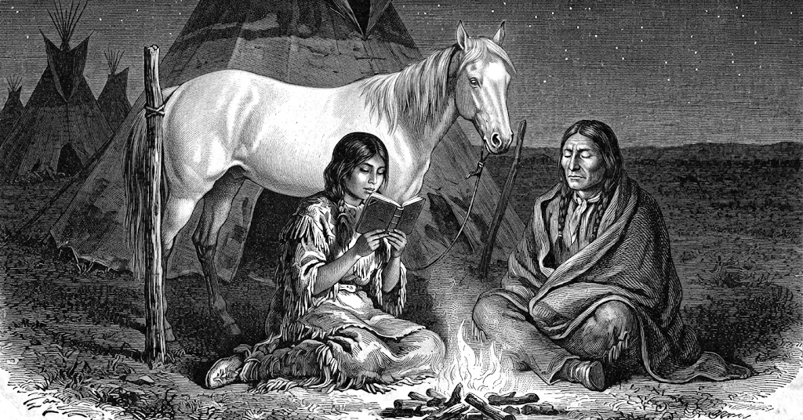
—Os dije que vendí al niño apache en Taos —dijo el anciano—. Os lo voy a contar, aunque no quiero. Porque si no os lo cuento, lo que viene después no se entiende.
Pidió agua. Oso Pequeño se la dio. Bebió despacio, mucho rato, para retrasar el momento.
Volví a Taos a los cuarenta y tres años. Treinta y cinco inviernos después de haber salido de allí, un amanecer de julio, detrás de Diego, a pie, con Paloma de la rienda.
Fuimos en otoño, después de la caza grande, con las pieles curtidas y la carne seca cargada en los caballos. Éramos muchos: varias rancherías juntas, más de cien tiendas. Acampamos en el valle, a media legua del pueblo, junto al río, porque así lo mandaban los españoles: los comanches no podían entrar en el pueblo con las armas. El alcalde mayor salió a recibirnos con sus soldados, nos contó, nos miró las caras, fumó con los jefes y dijo que al día siguiente se abría la feria.
Yo me quedé mirando el pueblo desde el campamento. Los dos montones de casas de barro, uno a cada lado del arroyo, con sus cinco o seis pisos. La montaña detrás, roja al ponerse el sol. La iglesia. Todo igual. Era como volver a un sueño que uno ha tenido de niño y descubrir que la casa del sueño existe.
Esa noche no dormí. El niño apache dormía a mi lado, atado del tobillo a una estaca, como se ataba a los cautivos en las ferias para que no se escaparan. Tenía nueve años. Llevaba un año conmigo. Le había enseñado a cuidar caballos, igual que me habían enseñado a mí. Hablaba ya comanche. Me llamaba como los niños comanches llaman al hombre de la tienda donde comen. No padre. Otra cosa.
La feria era como no os la podéis imaginar si no la habéis visto. Vosotros habéis ido a la de Pecos, que es pequeña. La de Taos, entonces, era la más grande de este mundo.
Había comanches, yutas, apaches de los que se habían hecho amigos de los españoles, indios de todos los pueblos del río, españoles de todo el reino. Venían desde Santa Fe, desde Alburquerque, desde más abajo, con carretas de bueyes cargadas, con recuas de mulas. Se ponían en filas, en un llano junto al pueblo, cada uno con sus cosas extendidas en mantas en el suelo, y se pasaban el día entero regateando a gritos y por señas, en diez lenguas a la vez.
Nosotros llevábamos pieles de cíbolo, curtidas por las mujeres, blancas y suaves, pintadas algunas. Pieles de ciervo. Carne seca. Grasa. Caballos y mulas, muchos de ellos robados a los mismos españoles en el sur, con las marcas de hierro de sus dueños todavía en el anca, y nadie preguntaba. Y cautivos.
Los españoles traían cuchillos, muchos, que eran lo que más queríamos. Puntas de hierro para las lanzas y las flechas. Hachas. Leznas para coser. Mantas de lana de los telares de los pueblos. Maíz, harina, pan. Cuentas de vidrio de colores. Paño rojo, que las mujeres comanches se peleaban por tener. Bridas y estribos de hierro. Tabaco. Y alguna escopeta, a escondidas, aunque estaba prohibido.
Yo había llevado once caballos para cambiar. Ninguno de la estrella. Esos no los cambiaba. Pero había llevado montado el mejor de ellos, el hijo del que me dio Viento Largo después de la ventisca, un caballo de seis años, gris oscuro, alto para lo que son nuestros caballos, con la estrella blanca y las cuatro patas negras. Y en cuanto entré en la feria, los españoles empezaron a mirarlo.
Uno se me acercó, un hombre de Santa Fe, con espuelas de plata, un capitán o algo así. Lo miró por todos lados. Le levantó una pata. Le abrió la boca. Le pasó la mano por el lomo. Me preguntó por señas cuánto quería por él.
Le dije que no estaba para cambiar.
Me ofreció diez cuchillos. Veinte. Luego una escopeta, en voz baja, mirando que no le viera el alcalde. Después la escopeta y una mula. Nunca había visto a un español ofrecer tanto por un caballo de indio. Los otros comanches se juntaron alrededor a mirar, y se reían, y me animaban a aceptar.
No acepté. El español se fue enfadado, diciendo algo de los indios ladrones que no saben lo que tienen. Yo lo entendí. Él no supo que lo había entendido.
Lo que no sabía aquel hombre es que ese caballo tenía más sangre de los caballos de Santa Fe que el suyo. Que su tatarabuela era una yegua torda comprada en la villa por un soldado pobre, por menos de lo que valía, porque mordía a todo el mundo. Que había vuelto a casa, después de treinta y cinco años, por el camino más largo que puede hacer un caballo.
Los cautivos se vendían aparte. En un sitio un poco apartado, al pie de una loma, donde el alcalde mayor y un fraile vigilaban. Allí se ponía cada comanche con sus cautivos, y los españoles iban pasando, mirándolos, como se mira un caballo en una feria de Castilla, decía Diego en su cuaderno. Les miraban los dientes. Los hacían andar. Les preguntaban la edad. Las niñas valían más que los niños. Las niñas de diez o doce años eran lo que más se pagaba. Los niños pequeños, menos. Los hombres hechos, nada: no los quería nadie.
Se pagaban en caballos. Dos caballos buenos por una niña, decía la gente. A veces más. A veces un caballo, un cuchillo, una manta y una brida.
El fraile no lo llamaba comprar. Lo llamaba rescatar. Decía que los españoles rescataban a aquellas criaturas de manos de los bárbaros para darles el bautismo y la fe. Y que, una vez cristianos, servirían en la casa de quien los había rescatado hasta pagar con su trabajo lo que se había dado por ellos, y que luego serían libres.
Lo decía en voz alta, para que lo oyera todo el mundo. Yo lo entendía. Ninguno de los comanches lo entendía. Ninguno de los cautivos tampoco.
Me compró al niño un español de Santa Fe. Un hombre gordo, de mi edad más o menos, con bigote, con un sombrero de ala ancha y un chaleco bordado. Me dio por él dos caballos y un cuchillo largo de hoja ancha. Era un buen precio. Los otros comanches me felicitaron.
El fraile bautizó al niño allí mismo, con un cuenco de agua del arroyo. Le puso de nombre José. Le pusieron al cuello una crucecita de madera. El niño no lloró. Me miró a mí todo el rato, mientras le echaban el agua en la cabeza. No dijo nada.
Cuando el español se lo llevaba de la mano, hacia las carretas, el niño se volvió una vez.
Yo había visto esa mirada. La había puesto yo, en la loma de El Cuartelejo, con ocho años, viendo irse a Diego.
Me fui al campamento sin terminar mis tratos. Me senté junto a los caballos y estuve allí hasta la noche.
—¿Y no hiciste nada? —preguntó Oso Pequeño, muy bajo.
—Hice algo —dijo el anciano—. Una cosa. Al día siguiente fui al pueblo. Solo, sin armas, como mandaban. Busqué al español gordo entre las carretas. No lo encontré. Pero encontré a otro, un viejo que vendía mantas, y le pregunté en castellano, buscando las palabras, que ya se me olvidaban, si conocía a una familia Ordóñez, en Santa Fe, en el barrio de San Miguel.
El anciano se quedó un momento callado.
—Me dijo que sí. Que la viuda de un cabo Ordóñez, el que murió con Villasur, vivía todavía allí, muy vieja. Que tenía una hija casada con un herrero. Que la hija se llamaba Ana.
—¿Fuiste? —preguntó Nube Corta.
—No. ¿Qué iba a decirle? ¿Que era el niño de la yegua? ¿Un comanche viejo, con el pelo gris y la cara pintada, que acababa de vender a un niño en la feria? No fui. Volví al campamento. Pero desde aquel día supe que en Santa Fe había una mujer que se llamaba Ana y que sabía mi nombre. Y eso, no sé por qué, me sirvió durante muchos años.
Seis años después, mi gente fue con los yutas contra Abiquiú.
Abiquiú era un sitio pequeño, unas veinte familias de españoles junto al río Chama, al oeste de Santa Cruz, en la frontera, donde acababa el reino. Tenía campos, ovejas, caballos, una capilla. Los yutas y nosotros entonces todavía éramos amigos, a ratos. Fuimos juntos, en verano.
No os cuento el ataque. Fue como todos. Al alba, con gritos. Los hombres que salieron a defenderse murieron. Los que no salieron, también. Se quemaron las casas. Nos llevamos los caballos, las ovejas, y las mujeres y los niños que pudimos coger.
Yo cogí a una muchacha. No la cogí en la pelea. Ya no peleaba casi; tenía cuarenta y nueve años y me tocaban los caballos. La vi después, cuando los comanches jóvenes se repartían a los cautivos. Era una muchacha de quince o dieciséis años, flaca, con el pelo castaño, no negro, y los ojos claros, y tenía la cara arañada y la falda rota. La tenía cogida del pelo un muchacho comanche, Cuervo que Ríe, hijo de un sobrino de Viento Largo, que se reía como dice su nombre. Ella no gritaba. Rezaba.
Rezaba en castellano. El Avemaría. Entero. Hasta el final. Hasta «ahora y en la hora de nuestra muerte».
Yo me sabía solo la mitad. Nunca había oído el final.
Le di a Cuervo que Ríe tres caballos por ella. Tres caballos buenos, de los míos, uno de ellos de la estrella. Se rio de mí. Dijo que era mucho por una cautiva flaca, que el viejo Pájaro Gris se había vuelto loco. Pero los cogió.
Se llamaba Juana. Juana Martín. Era hija de un vecino de Abiquiú que tenía unas ovejas y un poco de tierra, y que había muerto aquella mañana, en la puerta de su casa. Su madre también. Tenía un hermano pequeño que se llevaron los yutas. No supo nunca más de él.
Durante muchas semanas no me habló. Hacía lo que le mandaba, porque no tenía otro remedio. Raspaba las pieles, traía el agua, molía el maíz cuando lo había, montaba y desmontaba la tienda. Las mujeres comanches de las otras tiendas le pegaban, como me habían pegado a mí, porque era cautiva y española. Yo no se lo impedía, porque no se podía. Pero por las noches, cuando volvía a la tienda, le curaba los golpes con grasa y hierbas, como me había curado Hierba Dulce.
No la toqué. Esto quiero que lo sepáis. Durante un año, no la toqué. No por bondad. No sé por qué. Quizá porque me recordaba al niño que vendí. Quizá porque rezaba el Avemaría entero.
Una noche de invierno, al cabo de mucho tiempo, saqué el cuaderno de Diego de mi bolsa de cuero y se lo puse en las manos.
Le pregunté, en castellano, si sabía leer.
Se quedó mirándome como si le hubiera hablado una piedra. Nunca me había oído hablar en su lengua. Yo nunca había querido. Luego miró el cuaderno. Lo abrió. Pasó las hojas sin prisa, con cuidado, como si quemaran.
Me dijo que sí. Que un poco. Que su tío era sacristán de la iglesia de Santa Cruz y le había enseñado las letras con el catecismo, de pequeña.
Le pedí que me lo leyera.
Tardó toda aquella noche y muchas más.
Leía despacio, deletreando a veces, equivocándose y volviendo atrás, a la luz del fuego, con el cuaderno muy cerca de la cara. La letra de Diego era difícil. La tinta de hollín se había vuelto parda y en algunos sitios casi no se veía. Había páginas mojadas, manchadas, con las letras corridas, que no pudo leer nunca.
Pero leyó casi todo.
Oí otra vez la salida de Santa Fe, con las mujeres en la plaza y la vieja que rezaba el rosario. Oí Picurís, y el viejo que buscaba a su hija. Oí la alarma de Taos, cuando yo desperté a Diego con la mano en la boca. Oí el río de la sierra, y a Paloma metiéndose en el agua detrás de mí. Oí la llanura sin agua, y el ojo del Buen Suceso, y a Diego escribiendo que nadie había dicho que lo había encontrado una yegua. Oí a Ciervo que Salta, el que no se nombra, queriendo tocar a Paloma. Lo oí todo con su voz de muchacha de Abiquiú, que no se parecía nada a la de Diego, y era como si Diego hablara por su boca.
Y luego llegó a la noche de Taos, la del 19 de julio. La que Diego no me leyó nunca.
Se llama Tomás. No sé su apellido, porque no tiene. Es mío porque nadie más lo quiso. Si alguien encuentra este cuaderno y me he muerto, que cuide de él.
Juana se paró. Levantó la vista del cuaderno y me miró. Entonces entendió quién era yo. Lo entendió todo de golpe. Lo vi en su cara.
No dijo nada. Pero aquella noche, por primera vez, cuando nos tumbamos a dormir, no se apartó al otro lado de la tienda. Se quedó a mi lado. Y me cogió la mano, la que tenía la cruz.
Juana fue mi mujer durante veinte años.
No os voy a decir que fue feliz. No lo sé. Nunca se lo pregunté y nunca me lo dijo. Dos veces tuvo ocasión de volver con los suyos. La primera, en una feria de Taos, cuando un fraile se ofreció a rescatarla por dos caballos; la segunda, años después, en un cambio de cautivos que hizo el gobernador con nuestra gente. Las dos veces dijo que no.
La primera vez, porque estaba embarazada. La segunda, porque teníamos una hija de diez años que era comanche, que no hablaba castellano y que no la habría seguido.
Le pregunté una vez, ya de viejos, si estaba arrepentida de haberse quedado. Me contestó lo mismo que me había contestado la hija del viejo de Picurís, cuarenta años antes, en los campos del Cuartelejo, palabra por palabra, sin haberla conocido nunca.
—Cada día un poco. Y cada día un poco no.
Así son las cautivas. Así somos todos los que nos hemos quedado.
Rezaba a escondidas. Tenía un rosario que se había hecho ella misma con nudos en una tira de cuero, diez nudos y un nudo grande, y lo pasaba de noche, debajo de la manta. Me enseñó el final del Avemaría. Me enseñó el Credo entero, que Diego me había enseñado a medias. Los domingos, que ella contaba con una raya en un palo, no trabajaba si podía, y se lavaba la cara y se peinaba. En Navidad cantaba bajito unas canciones de su tierra. Las mujeres comanches la miraban como a una loca. Nuestra hija se reía.
Me enseñó también algo que nunca había sabido: las letras. Mi nombre. T, o, m, a, s. Lo escribíamos con un palo en la tierra, delante de la tienda, y después lo borrábamos con el pie, para que nadie lo viera. Llegué a escribirlo solo. Nunca aprendí más. Pero mi nombre sí.
Juana no sabía montar cuando la cogí. Las españolas de los ranchos no montan, o montan de lado, en mula, con un hombre llevando la rienda. Las comanches montan como los hombres, desde que andan.
Le enseñé yo. Empezó con miedo y acabó montando mejor que muchas comanches nacidas comanches, que se burlaban de ella. Le di una yegua de la estrella, joven, gris clara, muy mansa, nieta del caballo de la ventisca. Fue la primera cosa que tuvo suya desde Abiquiú.
Una mañana me preguntó cómo se llamaba la yegua. Le dije que los comanches no ponen nombres a los caballos como los españoles: los llaman por el color, o por lo que han hecho, o por quien los ha robado.
Ella se quedó mirando la yegua un rato. Luego dijo que entonces le pondría nombre ella. Y le puso Paloma.
No le había hablado nunca de la Paloma de Diego más que lo que había en el cuaderno. Lo había leído ella misma, a la luz del fuego. Lo sabía.
—Para que vuelva —me dijo.
Aquella Paloma vivió veintidós años. Tuvo siete potros, cinco con la estrella. El caballo que está ahí fuera es nieto suyo.
Cuando nuestra hija tuvo tres años, la subí por primera vez a un caballo. A Paloma, la de Juana. La senté delante de mí y dimos una vuelta al paso por el campamento, y ella se agarraba a las crines con los dos puños y gritaba de alegría. A los cinco ya montaba sola, atada al lomo con una correa para que no se cayera dormida en los viajes largos, como se hace con los niños comanches. A los ocho cuidaba ya los potros de la estrella conmigo. A los doce me ganaba a correr.
Juana la miraba desde la puerta de la tienda con una cara que yo no sabía leer. Orgullo y pena a la vez. Su hija galopaba por la llanura con el pelo suelto, chillando, libre como no había sido libre ninguna mujer de Abiquiú. Y su hija no sabía rezar el Avemaría, ni lo sabría nunca.
—Es comanche —me dijo Juana una vez, mirándola—. Es más comanche que tú.
Tenía razón. Fue la única de los tres que nació donde vivía.
Aquellos años los comanches éramos los dueños de todo. Ya no había apaches en las llanuras del norte: se habían ido al sur, a Texas, a las sierras, o estaban muertos, o eran cautivos nuestros. Teníamos más caballos que nadie en el mundo. Íbamos y veníamos desde las montañas hasta los ríos de Texas, y nadie nos paraba. Los españoles unas veces nos compraban en Taos y otras veces nos mataban en Taos. Hacían paces y las rompían. Nosotros también.
En el verano del año en que mi hija cumplió doce inviernos, fue una gran partida contra los ranchos de Taos. Yo ya no iba a esas cosas. Tenía sesenta y dos años. Me quedé en el campamento con los viejos y las mujeres. Pero los vi volver.
Volvieron con muchos caballos y con muchas cautivas. Sesenta, decían. Mujeres y niños de los ranchos españoles del valle, de una casa grande con muralla donde se habían defendido todos juntos y donde habían muerto todos los hombres. Entre ellas venía una muchacha joven, de unos veinte años, muy bonita, que no paraba de preguntar por su hijo, un niño de dos años al que le habían arrancado de los brazos en el ataque y que se había llevado otro guerrero, de otra ranchería.
Juana se pasó la noche con ella, en la tienda de su amo, hablándole en castellano, abrazándola, rezando con ella el rosario de nudos.
A aquella muchacha la vendieron al año siguiente a los pananas, al este, por caballos. No la volvimos a ver. Mucho después, en la paz, supe que se llamaba María Rosa, que había vivido con los pananas, que se había casado allí con un comerciante francés y que vivía en un pueblo de los franceses junto al río grande del este. No supe nunca si volvió a ver a su hijo. Nunca supe qué fue del niño.
Juana murió el invierno del año sesenta y ocho, según la cuenta de los españoles. De unas fiebres que vinieron aquel invierno y se llevaron a muchos en todos los campamentos. Murió en la tienda, con el rosario de nudos en la mano, y yo le recé el Avemaría entero, hasta el final, en castellano. Nuestra hija le cortó el pelo y se hizo cortes en los brazos, como hacen las comanches. Yo enterré el rosario con ella, en las rocas, a escondidas, porque los comanches queman las cosas de los muertos y yo no quería que lo quemaran.
Mi hija se casó al año siguiente con un muchacho de otra ranchería, más al sur, y se fue con él. La he visto pocas veces desde entonces. Tiene hijos. Comanches. No saben que su abuela se llamaba Juana Martín y que sabía leer.
Me quedé solo, con mis caballos y con el cuaderno. Tenía setenta y un años.
Y al año siguiente, en otoño, fui con los jóvenes al sur, al valle del río grande, donde los españoles tienen sus ovejas.
En el tipi, el anciano dejó de hablar. Le temblaban las manos. Oso Pequeño le echó la manta por encima de los hombros.
—¿Por qué fuiste? —preguntó Lobo Que Camina—. Si ya no ibas a esas cosas.
El anciano tardó mucho en contestar.
—Porque estaba solo —dijo—. Y un hombre solo hace cosas que no haría si tuviera a alguien esperándole en la tienda. Eso también es verdad, y también lo tenéis que saber.
Fuera, el caballo tordo relinchó, bajito, una sola vez, como llaman los caballos a otro caballo en la oscuridad.
El niño de las ovejas
El valle de Atrisco y la Comanchería · de 1770 a 1774
Lo cuenta el anciano
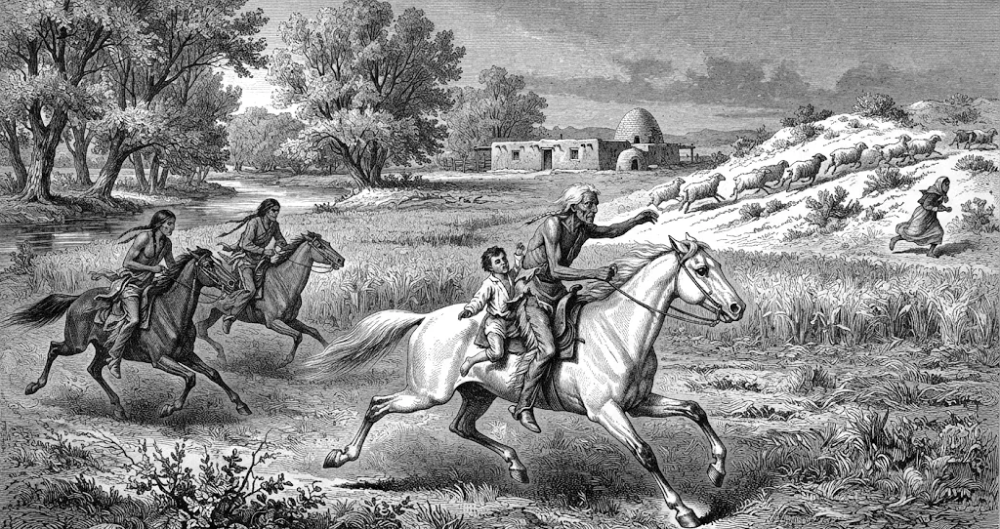
El fuego estaba muy bajo. Nadie se había movido para echarle más. Fuera, la noche estaba en su punto más hondo, ese en que hasta los coyotes callan, y el frío entraba por debajo de las pieles del tipi.
—Esta es la parte que más me cuesta —dijo el anciano—. Y es la que más importa. Porque es la del niño al que tenéis que llevarle esto.
Abrió la mano. La cruz de latón, gastada, casi sin forma.
Fuimos cuarenta. Jóvenes casi todos. Cuervo que Ríe, que ya no era joven, iba de jefe. Yo iba de viejo, de los que van para cuidar los caballos de refresco y dar consejo, y para que los jóvenes vean que los viejos todavía montan. Tenía setenta y dos años. Montaba un caballo de la estrella, hijo de la Paloma de Juana.
Aquellos años los comanches entrábamos en el valle del río Grande cuando queríamos. Los españoles habían roto otra vez la paz, o la habíamos roto nosotros, ya no me acuerdo. Cada verano y cada otoño bajaban partidas desde las llanuras, cruzaban las sierras por los pasos que solo nosotros conocíamos, caían sobre los ranchos y los pueblos, y se volvían con caballos, mulas, ovejas y cautivos antes de que los soldados de Santa Fe pudieran ensillar. Los españoles abandonaban los ranchos más lejanos. Los campos se quedaban sin sembrar. En el valle se pasaba hambre por nuestra culpa.
Cruzamos las sierras del este en cinco días y bajamos al río por el sur de la villa de Alburquerque. Nos escondimos un día entero en un cañón seco, sin hacer fuego, mirando el valle desde las rocas.
Era otoño. Los álamos del río estaban amarillos, como si ardieran. Abajo se veían los campos ya segados, las acequias, las casas de adobe desperdigadas, cada una con su corral, su horno de barro con forma de colmena, su ristra de chiles rojos colgada de la viga de la puerta. Humo de leña de piñón, que se olía desde arriba. Perros. Una campana, a lo lejos, que tocaba a misa. Y por las lomas de la otra orilla, las del poniente, que llaman de Atrisco, rebaños de ovejas, muchos, blancos y pardos, como manchas de nieve sucia.
Cuervo que Ríe dijo que las ovejas no valían la pena: corren poco y nos retrasarían. Pero que donde hay ovejas hay pastores, y los pastores son niños, y los niños valen caballos.
Bajamos al amanecer.
No os cuento todo. Ya lo sabéis. Os cuento solo lo que vi yo.
Vi un rebaño de ovejas en una loma, entre matas de chamiza, y a un niño con ellas. Un niño de ocho años, más o menos. Moreno, con el pelo cortado a tazón, con una camisa de manta blanca, unos calzones cortos, descalzo. Llevaba un palo más largo que él y una honda colgada al cuello. Tenía un perro, uno de esos perros flacos de los pastores, que nos vio antes que él y empezó a ladrar.
El niño se volvió. Nos vio bajar por la loma a galope, gritando, con las caras pintadas. Se quedó quieto. No corrió. Los niños de los pastores aprenden a no correr delante de los lobos, porque si corres el lobo te persigue. Pero nosotros no éramos lobos.
Uno de los jóvenes mató al perro con una flecha, sin parar el caballo.
Yo llegué antes que nadie al niño. No sé por qué. Mi caballo era el más rápido, o yo lo dirigí allí sin querer, o quería llegar antes que los otros. Me incliné de lado, colgado del cuello del caballo, como me enseñó Mano Quemada hacía sesenta años, lo cogí por la cintura con un brazo y lo subí delante de mí.
Pesaba lo que una oveja. Lo que pesaba yo a su edad.
Ni siquiera paré el caballo.
Al pasar por delante de una casa, al pie de la loma, vi salir a una mujer corriendo. Una mujer joven, con el pelo recogido y un delantal, con las manos blancas de harina. Corría hacia nosotros, hacia el rebaño, gritando un nombre. Uno solo. Lo gritaba una y otra vez, con una voz que no se me ha ido nunca de los oídos.
Uno de los jóvenes se volvió con el arco tenso, y Cuervo que Ríe le gritó que no, que no perdiera flechas, que ya teníamos lo que habíamos venido a buscar.
La mujer se quedó en la loma, entre las ovejas que corrían en todas direcciones, con las manos levantadas, gritando. La vi hacerse pequeña detrás de nosotros. Después la loma la tapó.
El niño iba delante de mí, en el caballo. No se volvió a mirarla. Creo que no podía.
Volvimos por donde habíamos venido, al galope, con más de cien caballos y mulas, nueve cautivos y ningún muerto. Una partida buena. Los jóvenes cantaban.
El niño iba delante de mí, en el caballo, atado con una correa a mi cintura para que no se tirara. Durante el primer día no hizo nada. No lloró. Miraba hacia atrás, hacia el valle, hasta que el valle desapareció detrás de las sierras.
La primera noche, en lo alto de las montañas, cuando lo bajé del caballo para que hiciera aguas, se echó a correr. Monte abajo, en la oscuridad, descalzo, entre las piedras. Lo cogí a los veinte pasos. No le pegué. Lo cogí en brazos y lo traje, pataleando, mordiéndome, y lo senté junto al fuego, y entonces sí lloró.
Lloró como lloran los niños cuando ya no pueden más. Con todo el cuerpo. Llamando a su madre, en castellano. Mamá. Mamá. Mamá.
Los jóvenes se reían.
Yo me senté a su lado. Le puse la mano en la espalda. Y entonces, sin pensarlo, sin quererlo, le hablé en castellano. Bajito, para que no me oyeran los otros.
—No llores, hijo. No te van a matar.
El niño dejó de llorar de golpe. Se volvió y me miró. Un comanche viejo, con la cara pintada y el pelo gris en trenzas, hablándole en la lengua de su madre.
—¿Usted es cristiano? —me preguntó.
No supe qué contestarle.
—Lo fui —le dije.
Y entonces me vi. Me vi con su edad, en la loma de El Cuartelejo, con la cruz de latón al cuello, viendo irse a Diego. Me vi en la puerta de la choza de Analco, en el barro. Me vi atado a la cola del caballo de Cuerno Partido, con la sangre en los ojos. Me vi en la feria de Taos, vendiendo al niño apache por dos caballos y un cuchillo.
Y vi que había cerrado el círculo. Que me había convertido, entero, en lo que me habían hecho.
Aquella noche no dormí. Él tampoco. Lo tuve toda la noche apoyado contra mí, envuelto en mi manta, temblando. Antes del alba le pregunté cómo se llamaba.
—Francisco —me dijo—. Francisco Xavier. Chaves.
—Francisco Xavier Chaves —repitió Oso Pequeño, despacio, para aprendérselo.
—Ese es el nombre —dijo el anciano—. No lo olvides.
En el campamento hice algo que nunca había hecho. Lo regalé.
Un niño cautivo es tuyo. Lo puedes criar, lo puedes vender, lo puedes regalar. Yo no lo quería para mí. Tenía setenta y dos años, estaba solo, no tenía mujer en la tienda que lo cuidara, y no quería ser yo quien lo criara. No me atrevía.
En el campamento había una mujer, Cinco Pájaros, que había perdido a su hijo aquel verano, de una caída de caballo. Un niño de ocho años. Desde entonces andaba por el campamento como andaba Hierba Dulce por el Cuartelejo cuando yo llegué: con el pelo cortado a trasquilones, los brazos llenos de cortes, sin hablar con nadie, llorando de noche.
Le llevé a Francisco a la puerta de su tienda. Le dije que era para ella. Que llenara el hueco.
Se lo dije en comanche. Ella me miró a mí. Luego miró al niño. No dijo nada. Pero aquella noche, cuando pasé por delante de su tienda, el niño dormía dentro, en una piel de cíbolo, a la derecha de la puerta. En el sitio de su hijo.
Y ella no lloraba.
Desde aquel día cuidé de él como pude. De lejos. Como un viejo que no es de la familia. Como el viejo del Cuartelejo que me contaba las historias.
Cinco Pájaros lo quiso enseguida. Más deprisa que Hierba Dulce me quiso a mí. Lo bañaba, lo vestía, le hizo mocasines nuevos, una camisa de piel de ciervo, le pintó la cara. Le enseñó el comanche a fuerza de hablarle todo el día. A los pocos meses el niño la llamaba madre, en comanche, como yo había llamado madre a Hierba Dulce. Su marido, en cambio, no lo quería. Era un hombre duro, de mal carácter, Toro Flaco, que pegaba a sus caballos y a sus perros, y que veía en el niño una boca más y un estorbo. Le pegaba cuando ella no miraba.
Yo hablaba con Francisco cuando nadie nos veía. En castellano. Cada vez menos, porque él cada vez lo hablaba peor y entendía mejor el comanche, como me había pasado a mí. Pero cada noche que podía, junto a los caballos, le hacía repetir una cosa. Solo una. Que no la olvidara nunca.
—¿Cómo se llama tu padre?
—Ignacio Chaves.
—¿Y tu madre?
—Gregoria Maese.
—¿Y dónde vives?
—En Atrisco. Al otro lado del río de Alburquerque.
—Otra vez.
Y lo repetía. Cada noche. Durante cuatro años. Hasta que dejé de verlo.
Yo no lo había hecho conmigo. Nadie lo había hecho conmigo. Cuando quise acordarme del nombre de mi madre, ya no me acordaba. Solo de su lengua.
Y le enseñé los caballos.
Toro Flaco tenía pocos, y malos, y los trataba peor. El niño se pasaba el día solo, con las ovejas que no había, con nada que hacer, mirando de lejos a los otros niños comanches, que ya montaban como el viento. Así que un día lo llamé, delante de todos, y le dije a Toro Flaco que me hacía falta un muchacho para la manada, que yo ya era viejo y no podía solo. Le di un caballo por el trabajo del niño. Toro Flaco lo aceptó encantado.
Desde entonces Francisco pasaba los días conmigo, con los caballos de la estrella.
Le enseñé lo que me enseñó Mano Quemada, y lo que me enseñaron los comanches, y lo que no me enseñó nadie. Cómo acercarse a un potro sin asustarlo. Cómo levantarle las patas. Cómo soplarle en los ollares. Cómo montar sin silla, guiando con las rodillas, colgándose del costado. Cómo saber qué caballo va a ser bueno mirándole a los ojos de potro. Cómo hablarles.
Le enseñé a hablarles en castellano. Le dije que a estos caballos se les hablaba en castellano, porque venían de Santa Fe. Que descendían de una yegua de un soldado español. Se rio. No me creyó. Pero lo hacía. Le oí muchas veces, desde lejos, hablar con los potros en castellano, bajito, cuando ya no hablaba castellano con nadie. Así no se le olvidó del todo. Lo hablaba con los caballos.
Había entonces en la manada un potro gris de dos años, con la estrella, hijo de un hijo de la Paloma de Juana, que no se dejaba tocar por nadie más que por mí. Al tercer día se dejó tocar por Francisco. Al mes lo seguía como un perro.
Lo vi una tarde, desde la loma, con el niño de pie a su lado en la hierba alta, los dos quietos, mirando la llanura, el niño con la mano en el cuello del potro. Y me pareció que estaba viendo, setenta años antes, a un niño de Analco con una yegua torda en la orilla de un río crecido.
Francisco aprendió a ser comanche deprisa, como aprenden los niños. A los pocos meses ya corría con los demás niños por el campamento, con el pelo dejándolo crecer para las trenzas, con un taparrabos y unos mocasines, con la cara pintada de rojo los días de fiesta. Jugaba a lo que juegan los niños comanches: a la guerra con arcos de juguete, a cazar pájaros con flechas romas, a robarse caballos unos a otros, a pelear a caballo derribándose a empujones. Le pegaban, como se pegan los niños, y él pegaba también. Al año ya no era el cautivo. Era el hijo de Cinco Pájaros que hablaba raro.
Los niños comanches aprenden a montar antes que a andar, ya os lo he dicho. Francisco aprendió a los ocho años, tarde, y tuvo que aprender el doble de deprisa para que no se rieran de él. Yo le enseñé. Al segundo verano ganó su primera carrera contra los niños de su edad, montando el potro gris de la estrella, sin silla, con la cuerda en la boca, gritando en castellano. Cinco Pájaros estaba mirando y gritó tanto que se quedó sin voz. Aquella noche le hizo unos mocasines nuevos, bordados con púas de puerco espín teñidas de rojo y amarillo, y se los puso ella misma.
Comía lo que comían todos: carne. Carne asada, carne cocida, carne seca, tuétano, hígado crudo con hiel, pasta de carne con ciruelas y nueces. El maíz, poco, cuando lo traíamos de los taovayas o de los españoles. Le costó acostumbrarse. Echaba de menos el pan, me dijo una vez. El pan de su madre, hecho en el horno de barro con forma de colmena que había delante de la casa, y las tortillas, y el chile, y el queso de cabra. Me dio hambre a mí también, oyéndole. Hacía sesenta años que no comía pan.
Una noche de invierno, el segundo o el tercero, me preguntó por qué hablaba castellano.
Estábamos con los caballos, en un abrigo de rocas, con un fuego pequeño de boñigas. Nevaba. Los caballos de la estrella estaban de pie alrededor, muy juntos, dándose calor, con la nieve en los lomos.
Le conté. No todo. Le conté de Santa Fe, de Diego, de la llanura sin agua, de Paloma encontrando el agua y de cómo nadie lo dijo. Le conté de El Cuartelejo. Le conté que me habían dejado allí, a su edad, a cambio de la vida de otro niño, y que los apaches me habían criado. No le conté lo de la coz. No le conté lo del niño apache del maíz, ni lo de la feria de Taos. No le conté que había sido yo quien lo cogió a él en la loma de Atrisco, aunque él lo sabía, porque lo había visto.
Me escuchó sin decir nada, con los ojos muy abiertos, a la luz del fuego.
—¿Y usted no volvió nunca? —me preguntó al final.
—No.
—¿Por qué?
Tardé en contestar. Era la pregunta que me había hecho yo durante sesenta años.
—Porque cuando pude volver, ya no sabía adónde —le dije—. Tú sí lo sabrás. Por eso te hago repetir los nombres.
Se quedó pensando. Me preguntó si estos caballos eran de verdad nietos de aquella yegua. De Paloma.
—Nietos de nietos de nietos —le dije—. Más o menos. Mira la estrella.
Se levantó, fue hasta el potro gris, le apartó el flequillo cubierto de nieve y le miró la estrella blanca a la luz del fuego. Le habló en castellano, bajito. Le dijo algo que no oí.
Luego volvió y se sentó a mi lado, más cerca que antes.
—Entonces es como si fueran de los dos —me dijo—. Suyos y míos. Porque son de Santa Fe.
Nunca nadie me había dicho algo así. Nunca nadie, en toda mi vida, había dicho que algo era de los dos.
Cinco Pájaros murió el cuarto invierno. De parto. El niño que esperaba murió con ella.
Francisco tenía doce años. Lloró como yo no le había visto llorar desde la primera noche en las montañas. Le cortó el pelo, como se hace, y se cortó él también. Quemaron la tienda de ella con todas sus cosas. Mataron su caballo sobre la tumba. Francisco se escapó aquella noche para ver cómo lo mataban, y yo lo encontré en las rocas, mirando, y me lo llevé.
Toro Flaco esperó a que pasara el duelo. Después, en primavera, cuando vinieron al campamento unos comerciantes taovayas, del este, de los pueblos de casas de hierba junto al río Rojo, vendió al niño.
Los taovayas siembran, como los apaches del Cuartelejo. Tienen pueblos grandes, con casas redondas de hierba, y campos de maíz y de tabaco, y comercian con los franceses, que les dan armas, pólvora, cuchillos, paño. Nosotros les llevábamos caballos y cautivos, y ellos nos daban maíz y cosas de los franceses. Así era el trato. Los cautivos que les vendíamos se quedaban en sus pueblos a trabajar los campos.
Toro Flaco cambió a Francisco por una escopeta francesa y pólvora.
Yo intenté comprarlo antes. Le ofrecí a Toro Flaco cinco caballos. Luego diez. Le ofrecí todos los caballos de la estrella que tenía, que eran catorce. Toro Flaco se rio en mi cara. Dijo que los caballos los tenía de sobra y que lo que quería era una escopeta, que con una escopeta se roban más caballos que con catorce. Dijo también que el viejo Pájaro Gris se había encariñado con el cautivo como una mujer, y que eso no estaba bien en un hombre. Los demás se rieron.
No pude hacer nada. Un niño cautivo es de su dueño.
El día que se lo llevaron, fui a despedirme. Francisco estaba ya atado, sentado en el suelo junto a los caballos de los taovayas, con las manos a la espalda, como me había visto yo tantas veces. No lloraba. Me miró llegar.
Me arrodillé delante de él. Era la segunda vez en mi vida que me arrodillaba delante de un niño para despedirme. La primera la había hecho otro, conmigo.
Saqué de mi bolsa una trenza pequeña de crin gris, larga como un dedo, que había cortado aquella mañana de la cola del potro de la estrella. Se la até al pelo, en un mechón, por detrás, donde los taovayas no la vieran.
—Para que no te olvides de los caballos —le dije, en castellano.
Él me miró con aquellos ojos negros.
—¿Cómo se llama tu padre? —le dije.
—Ignacio Chaves.
—¿Y tu madre?
—Gregoria Maese.
—¿Y dónde vives?
—En Atrisco —me dijo—. Al otro lado del río.
—No lo olvides nunca. Algún día vas a volver.
—¿Y usted?
No le contesté. Le puse la mano en la cabeza, como me la había puesto la muchacha de la flauta el día de su fiesta, en el Cuartelejo. Y me fui antes de que lo subieran al caballo.
En el tipi, el anciano se quedó callado mucho tiempo. Tenía la mano cerrada sobre la cruz, apretada, como si la cruz pudiera escaparse.
—No volví a verlo —dijo por fin—. Pasaron diez años. Doce. Me hice muy viejo. Dejé de ir a ninguna parte.
Levantó la vista hacia los jóvenes.
—Y el año pasado, en la paz, en Pecos, oí a unos comanches del este, de los de Texas, hablar de un intérprete. Un español, decían, que había sido cautivo de los nuestros de niño, y luego de los taovayas, que se había escapado, y que ahora hablaba por los españoles de San Antonio. Que había venido con un francés hasta los campamentos del río Rojo para hacer la paz con los comanches del este. Que tenía los ojos pintados, como los taovayas. Que hablaba comanche como un comanche y castellano como un español. Y que a los caballos les hablaba en castellano.
El anciano sonrió. Era una sonrisa rota, de muy viejo, y tenía la cara mojada.
—A los caballos les hablaba en castellano —repitió—. Por eso supe que era él.
Fuera, el viento había cambiado. Ya no venía del norte. Oso Pequeño se dio cuenta de que por el agujero del humo el cielo había empezado a ponerse gris por un lado, muy poco, casi nada.
Quedaba poco para el alba.
El encargo
Llano Estacado · el amanecer de un día de otoño de 1787
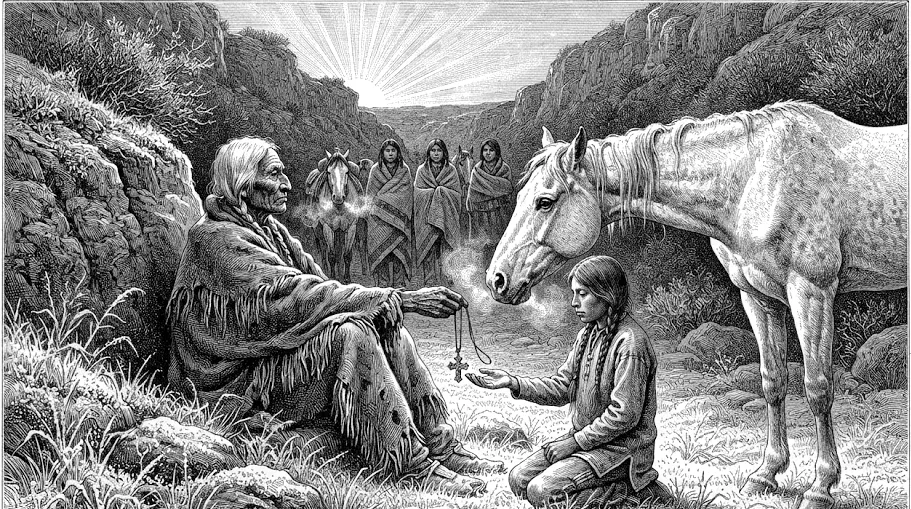
Durante la última parte de la noche nadie durmió.
El anciano ya no contaba. Estaba recostado contra el respaldo de varas, con los ojos cerrados, respirando con aquel ruido de hojas secas en el pecho. A veces parecía dormido. Luego abría los ojos y miraba a uno de los jóvenes, como si lo viera por primera vez, y le preguntaba algo.
A Nube Corta le preguntó por su hermano. El que habían matado los apaches junto al río Colorado.
Nube Corta tardó en contestar. Después lo contó todo, deprisa, como se cuentan las cosas que se llevan mucho tiempo dentro. Que su hermano tenía diecinueve años. Que había ido a robar caballos a una ranchería lipán, al sur, con otros tres. Que los lipanes los habían esperado en un vado. Que solo había vuelto uno. Que su madre se había cortado un dedo de la mano por el duelo. Que él había jurado matar a diez apaches por su hermano, y que todavía no había matado a ninguno, y que eso lo avergonzaba.
El anciano lo escuchó sin interrumpirlo.
—Los lipanes que mataron a tu hermano —le dijo luego— tendrán también hermanos. Y madres sin un dedo. Y alguno de ellos habrá jurado matar a diez comanches. Y así siempre. Desde que hay caballos.
Nube Corta bajó la cabeza.
—No te digo que no lo vengues —siguió el anciano—. No soy quién. Yo he hecho cosas peores. Te digo que, cuando lo hagas, sepas que al otro lado hay alguien como tú.
A Lobo Que Camina no le preguntó nada. Fue Lobo Que Camina el que habló, al cabo de un rato, mirando el fuego.
—Mi abuelo —dijo— estuvo en la guerra contra los apaches del norte. Cuando yo era niño contaba que habían arrasado un campamento grande, junto a unos campos, junto a un río con álamos, y que se habían traído cientos de caballos. Que fue la mayor victoria de su vida. Lo contaba riéndose.
El anciano abrió los ojos.
—Puede ser —dijo—. Hubo muchos campamentos así.
—Puede ser —repitió Lobo Que Camina.
No dijeron nada más. No hacía falta. Pero Oso Pequeño vio que el jefe tenía la mandíbula tan apretada que le temblaba.
A Oso Pequeño el anciano no le preguntó nada en toda la noche. Le había preguntado ya lo único que importaba, la tarde anterior: cuántos caballos tenía. Ahora solo lo miraba, de vez en cuando, como se mira algo que uno ha decidido dejar en buenas manos.
Poco antes del alba, el anciano llamó a Oso Pequeño con la mano y le hizo sentarse muy cerca, tanto que el muchacho le olía el aliento, que olía a humo y a tabaco y a algo más, algo dulce y viejo, como las hojas cuando se pudren en otoño.
—Escucha —le dijo—. Cuando lo busques, no preguntes por un español. Los comanches del este no te dirán nada de un español. Pregunta por el que habla con los caballos en una lengua que no es la nuestra. Pregunta por el de los ojos pintados como los taovayas, que no es taovaya. Pregunta en las ferias, en los campamentos grandes del invierno, a los viejos, a las mujeres. Las mujeres lo saben todo y nadie les pregunta nunca.
Oso Pequeño asintió.
—Tendrá ahora veinticinco inviernos, o así. No será alto. Tendrá la cara ancha y los ojos muy negros, muy abiertos, que lo miran todo, como los míos de niño. Y si es él, tendrá una manera de acercarse a un caballo que no tiene nadie más que él y yo. Por delante, despacio, con la mano baja. Y le soplará en los ollares antes de tocarlo.
Se quedó callado, respirando.
—Para ir a Texas tienes que bajar por los ríos que van hacia donde sale el sol. El Colorado, el Brazos, el Rojo. Los comanches del este acampan en sus orillas en invierno. Llévate caballos para cambiar, y tabaco, y cuchillos. No vayas solo si puedes. Y no te fíes de los tonkawas.
Se rio un poco, sin fuerza.
—Eso no sé por qué te lo digo. Nunca he conocido a un tonkawa. Pero eso decía Viento Largo.
Oso Pequeño se rio también. Fue la única vez que se rieron los dos juntos.
Luego el anciano le cogió la cara con las dos manos, frías como piedras de río, y lo miró muy de cerca.
—Tú bajaste el primero —le dijo—. Los demás querían irse. Tú bajaste. ¿Sabes por qué?
—No.
—Yo tampoco sabía por qué me paré a mirar a un niño en el barro de Analco —dijo el anciano. Y se corrigió enseguida, despacio—: No. No fui yo. Fue Diego, el que se paró. Yo era el niño del barro. Ahora lo entiendo. Hay gente que se para y gente que pasa. Tú te paras. No dejes de pararte nunca, aunque te cueste.
Le soltó la cara. Se recostó otra vez, con los ojos cerrados.
El anciano pidió salir.
Lo dijo de pronto, cuando por el agujero del humo el cielo ya no era negro sino de un azul muy oscuro, casi gris, y las estrellas del este se habían apagado. Quería ver salir el sol. Quería ver a su caballo.
Lobo Que Camina y Oso Pequeño lo cogieron por debajo de los brazos. No pesaba nada. Era como levantar un manojo de ramas secas envuelto en una manta. Nube Corta apartó la piel de la puerta y salieron los tres, agachándose, y los demás detrás.
Fuera hacía un frío que cortaba. La hierba del fondo del barranco estaba blanca de escarcha y crujía bajo los mocasines. El charco se había helado por los bordes. Arriba, en el borde del barranco, los caballos de los jinetes estaban quietos, muy juntos, con las cabezas bajas y el aliento saliéndoles en nubes. Y a un lado, atado a su estaca, el caballo tordo.
Al ver al anciano, el caballo levantó la cabeza y relinchó bajito, una sola vez.
Lo sentaron en una piel de cíbolo que sacó Nube Corta, con la espalda contra una piedra, mirando al este. Oso Pequeño desató al caballo y se lo acercó. El tordo bajó la cabeza y le sopló al viejo en la cara, despacio, muchas veces. El anciano le puso la mano en la frente, sobre la estrella blanca, que a esa luz parecía de hielo, y le habló en una lengua que ninguno de los jóvenes entendió. No era comanche. Tampoco apache. Era más suave.
—Es la lengua de mi madre —dijo después, sin volverse—. Los de los pueblos del río. Me quedan muy pocas palabras. Pero a los caballos les sirven.
Esperaron todos en silencio. Nadie sabía bien qué esperaban.
El cielo se fue aclarando por el este, primero gris, después de un amarillo muy pálido, luego de color de cobre, como la tarde anterior, pero al revés. La llanura empezó a aparecer por arriba del barranco: una línea recta, interminable, sin nada encima. Un halcón pasó muy alto, sin mover las alas.
—Oso Pequeño —dijo el anciano.
El muchacho se arrodilló a su lado.
—Te dije que te pediría una cosa. Ahora te la pido. Son tres. Escúchalas bien, porque no te las voy a poder repetir.
Le cogió la mano con su mano de ramas secas y le puso en ella la cruz de latón, con el cordón deshilachado. Le cerró los dedos encima, apretando, con más fuerza de la que parecía posible.
—La primera. Esto es para Francisco Xavier Chaves. El niño de las ovejas. El de los ojos pintados, el que habla por los españoles en Texas. Búscalo. Dáselo. Dile que se lo manda Tomás. No Pájaro Gris. Tomás. Dile que el viejo que lo cogió en la loma de Atrisco le pide perdón. Y que no se olvidó nunca de los nombres de sus padres.
—Ignacio Chaves —dijo Oso Pequeño, sin pensar—. Gregoria Maese. Atrisco.
El anciano lo miró. Por primera vez en toda la noche se rio de verdad, sin que la risa se le volviera tos.
—Ya los sabes tú también. Bien.
Señaló con la barbilla la bolsa de cuero que Nube Corta había sacado del tipi y que estaba en el suelo, a su lado.
—La segunda. El cuaderno. Llévaselo también. Él no sabe leer, seguro. Pero en Santa Fe, en el barrio de San Miguel, detrás de la capilla, vive o vivía una mujer que se llama Ana. Hija de Diego Ordóñez. Ya será muy vieja. Si está viva, el cuaderno es suyo. Es de su padre. Que Francisco se lo lleve. Dile que se lo devuelva yo, que me lo prestó su padre hace muchos años y que no tuve tiempo de dárselo.
Oso Pequeño asintió. No podía hablar.
—La tercera. —El anciano volvió la cara hacia los caballos—. Cuando me muera, no los matéis.
Lobo Que Camina, que estaba de pie detrás, se movió. El anciano no se volvió.
—Ya sé lo que se hace. Ya sé que un hombre necesita su caballo para el camino. Pero yo ya he andado bastante. Ellos no. El viejo es el último de una yegua que vino de Santa Fe en el verano del año seis, según la cuenta de los españoles, detrás de un niño. Y el pequeño es su último hijo. Nació esta primavera. Su madre se murió a principios del verano, cuando él ya comía hierba, y desde entonces no se separa de su padre. Yo pensaba soltarlo en la pradera cuando me fuera, para que acompañara al viejo hasta el final y luego fuera libre, sin ser de nadie. No me da tiempo. Llévatelos. Que el viejo cubra a tus yeguas mientras pueda, que no se acabe conmigo. Y al pequeño críalo para el niño de las ovejas. Que lo monte él. Él lo reconocerá. Mírale la estrella y verás por qué. —Tomó aire—. Y cuando ya no le haga falta, que lo suelte.
Se calló, agotado. Respiraba muy deprisa, con un ruido de hojas secas en el pecho.
Oso Pequeño miró a Lobo Que Camina. Lobo Que Camina miró al caballo tordo, que seguía con el hocico pegado a la cara del viejo. Tardó mucho en decir nada.
—No los mataremos —dijo por fin.
El sol salió.
Salió de golpe, como sale siempre en el llano, un borde rojo encima de la línea del mundo, y después la mitad, y luego entero, y la escarcha de la hierba se puso a brillar como si toda la llanura estuviera cubierta de cuentas de vidrio. La luz entró en el barranco y le dio al anciano en la cara.
Cerró los ojos. Sonreía.
Empezó a hablar bajito. Al principio Oso Pequeño pensó que hablaba con ellos, pero no. Hablaba solo. Y hablaba en todas sus lenguas, una detrás de otra, como si las fuera dejando en el suelo.
Habló en comanche: dijo los nombres de Viento Largo, de Liebre, de su hija.
Habló en apache, y nadie entendió, aunque Lobo Que Camina reconoció la palabra Ndé, la gente, y algún nombre que no se debe decir.
Habló en la lengua suave de los pueblos del río, una sola frase, muy despacio, como se le habla a una madre.
Y luego habló en castellano. Oso Pequeño no lo entendía, pero reconoció el ritmo, porque lo había oído en Pecos, en la iglesia de barro, saliendo por la puerta cuando rezaban los españoles.
—Dios te salve, María, llena eres de gracia, el Señor es contigo…
Lo rezó entero. Despacio. Sin equivocarse. Hasta el final, que había tardado cuarenta años en aprender.
—…Santa María, Madre de Dios, ruega por nosotros, pecadores, ahora y en la hora de nuestra muerte. Amén.
Dijo una palabra más. Una sola. Oso Pequeño no la entendió entonces. La entendió cinco años después, cuando se la oyó decir a otro hombre.
—Diego.
Y se quedó quieto.
El caballo tordo levantó la cabeza, la sacudió, y se quedó mirando al anciano, con las orejas hacia delante. Luego relinchó, alto, largo, un relincho que rebotó en las paredes del barranco y se fue por la llanura. Arriba, en el borde, los otros caballos le contestaron todos a la vez.
Nadie se movió durante mucho rato.
Fue Lobo Que Camina el que se arrodilló primero. Le cerró los ojos al viejo con dos dedos. Se sacó el cuchillo nuevo de Pecos, se cortó la trenza derecha a la altura del hombro, y la dejó en el regazo del muerto. Los demás hicieron lo mismo, uno detrás de otro. Oso Pequeño el último. Le temblaban tanto las manos que tuvo que cortarse el pelo en tres veces.
Lo enterraron como se entierra a un comanche, porque eso era, aunque hubiera sido tantas otras cosas.
Lo lavaron con agua del charco, rompiendo el hielo. Le pintaron la cara de rojo, y los párpados también, como se hace. Le peinaron las dos trenzas blancas y se las ataron con tiras de piel. Lo vistieron con lo mejor que encontraron en el tipi, que era poco: una camisa de piel de ciervo, vieja pero limpia, con flecos; unos mocasines bordados con púas de puerco espín, tan gastados que el dibujo casi no se veía, pero que alguien, muchos años atrás, había hecho con cuidado. Le doblaron las rodillas contra el pecho y la cabeza sobre las rodillas, como duerme un niño, y lo envolvieron en su manta de cíbolo, y la ataron con cuerdas.
Luego lo subieron entre todos a lo alto del barranco, por la ladera del este, buscando un sitio entre las rocas. Encontraron una grieta grande, al pie de un peñasco, mirando hacia donde sale el sol. Lo metieron dentro, sentado, mirando al este, y taparon la grieta con piedras, una a una, hasta que no se veía nada. Nube Corta puso encima de todo una piedra blanca que había encontrado en el arroyo.
Cuando volvieron abajo, Lobo Que Camina prendió fuego al tipi.
Ardió deprisa. Las pieles viejas estaban secas como la yesca. El humo subió negro, recto en el aire quieto de la mañana, igual que el hilo gris que habían visto subir la tarde anterior. Ardieron dentro los cuencos, la pipa de piedra roja, el respaldo de varas, las pieles de dormir, todo lo que el viejo había tenido. Así se hace. Las cosas de los muertos no se quedan entre los vivos, para que el muerto no vuelva a buscarlas.
Solo se salvaron tres cosas. La cruz, que Oso Pequeño llevaba ya colgada del cuello, por dentro de la camisa, donde nadie la viera. El cuaderno, envuelto en su piel, en la bolsa de Oso Pequeño. Y el caballo.
Nube Corta, sin que nadie se lo pidiera, le cortó al tordo las crines y la cola a ras, con el cuchillo, como se hace con el caballo de un muerto al que no se mata. Para que se supiera que estaba de luto.
Montaron cuando el sol estaba ya un palmo por encima de la llanura.
Oso Pequeño llevaba al tordo de la cuerda, junto a su pinto. Detrás, suelto, iba el potro, que no se separaba de su padre. El caballo viejo no quería irse. Se volvía hacia el barranco cada pocos pasos, con la cola rapada y las crines cortadas, y relinchaba. Oso Pequeño le habló. No sabía qué decirle. Al final, sin pensarlo, le dijo en voz baja la única palabra en la lengua de los españoles que había aprendido aquella noche, la que el anciano había dicho al hablar del primer caballo de su vida, la que según él había sido un nombre.
—Lucero.
El caballo se quedó quieto. Levantó las orejas. Y luego echó a andar detrás del pinto, sin volverse más.
Cabalgaron hacia el norte toda la mañana, sin hablar. Hacia sus tiendas, hacia sus familias, hacia la vida de siempre. La llanura era la misma de la tarde anterior: la hierba dorada, el viento, el cielo enorme, ninguna cosa delante. Pero Oso Pequeño ya no la veía igual. Por primera vez en su vida se daba cuenta de que aquella tierra no había sido siempre así. Que antes de los caballos había sido otra. Que antes de los comanches había sido de los apaches, y antes de los apaches de otros, y que los que la habían tenido se habían ido o estaban debajo de ella, en grietas de las rocas, mirando al este.
Al mediodía, Lobo Que Camina detuvo su caballo y esperó a que Oso Pequeño llegara a su altura.
—¿Vas a buscarlo? —le preguntó—. Al niño de las ovejas.
—Sí.
—Texas está lejos. Los comanches del este no son como nosotros. Y los españoles de San Antonio no son los de Pecos.
—Ya lo sé.
Lobo Que Camina se quedó mirándolo mucho rato. Miró al caballo tordo, que trotaba detrás, con la cola rapada.
—Te llevará años —dijo.
—Entonces me llevará años.
Lobo Que Camina asintió despacio. No dijo nada más. Pero aquella noche, en el campamento, delante de todos, le regaló a Oso Pequeño su cuchillo nuevo de hierro español, el de Pecos, el que brillaba al sol, para el camino. Oso Pequeño no lo usó nunca. Lo llevó cinco años en la cintura, sin sacarlo de la funda, junto a la cruz y al cuaderno de un soldado al que nunca conoció.
Su abuela le esperaba a la puerta de la tienda.
Era muy vieja, casi tanto como el anciano del barranco, menuda, con la cara llena de arrugas y las manos deformes de raspar pieles toda la vida. Había nacido lejos, al sur, entre los apaches lipanes, y la habían cogido los comanches de niña, hacía más de sesenta años. Se había casado con un comanche, había tenido hijos comanches, nietos comanches, y ya nadie se acordaba de que no lo era. Ella sí.
Miró a su nieto bajar del pinto, con el pelo cortado a cercén por un lado. Miró al caballo tordo con las crines rapadas. Miró la bolsa de cuero.
—¿Quién ha muerto? —preguntó.
Oso Pequeño se lo contó todo aquella noche, junto al fuego, a ella sola. Tardó tanto como había tardado el viejo. Su abuela no dijo nada en todo el tiempo. Solo, cuando Oso Pequeño le contó lo de la palabra Ndé, la gente, la vio mover los labios y repetirla, sin voz. Y cuando le contó lo de la loma del Cuartelejo, y lo de la feria de Taos, y lo de la loma de Atrisco, la vio cerrar los ojos.
Al final le pidió que le enseñara la cruz. Oso Pequeño se la sacó de debajo de la camisa. La vieja la tuvo un rato en la palma de la mano, a la luz del fuego.
—Ve —le dijo, y se la devolvió—. Búscalo. Aunque tardes.
—¿Por qué?
La vieja se quedó mirando el fuego.
—Porque a mí nadie vino a buscarme nunca —dijo—. Y estuve esperando muchos años.
Aquella noche Oso Pequeño sacó el cuaderno de su piel y lo abrió por primera vez, a la luz de las brasas. Pasó las hojas sin prisa. Rayas negras, rayas pardas, manchas de agua, alguna gota de grasa, una página con una esquina quemada. No entendía nada. Pero en la última página, la de la carta, al pie, había unas letras más grandes, torcidas, que alguien había escrito con mano temblorosa, mucho después que las demás, en una tinta distinta, roja, como de tierra mojada:
TOMAS
No sabía leerlas. Pero supo lo que decían.
Guardó el cuaderno, y se tumbó junto al fuego, y no durmió.
Cinco inviernos buscando
La Comanchería, de los ríos de Texas al Pecos · de 1787 a 1792
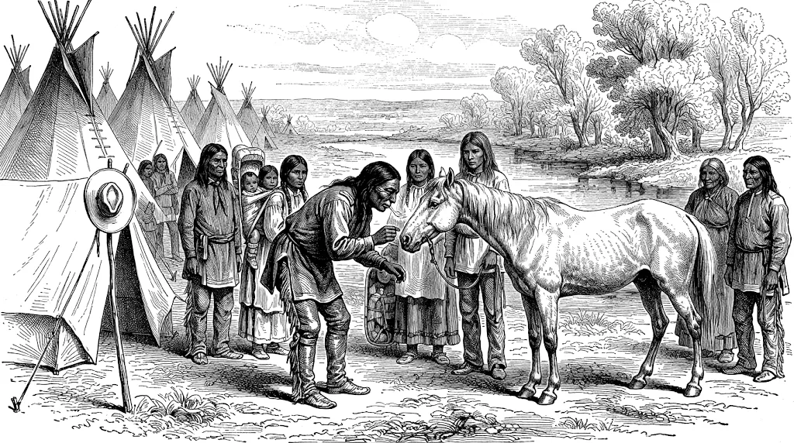
El primer invierno no fue a ninguna parte.
No pudo. Las nieves llegaron pronto aquel año, antes de que acabara la caza grande, y el campamento se quedó encerrado en su cañón del río Rojo de arriba, como todos los inviernos, con las tiendas muy juntas y los caballos pelando álamos. No se podía cruzar la llanura con aquella nieve. Nadie lo hacía. Así que Oso Pequeño esperó, y mientras esperaba, cuidó del caballo tordo.
El caballo viejo no comía. Los primeros días después del barranco se quedaba quieto en la manada, apartado de los demás, con la cabeza baja y la cola rapada, mirando hacia el sur. Oso Pequeño le llevaba corteza de álamo pelada con su cuchillo, la más tierna, la de las ramas altas, y se la daba a puñados. Le hablaba. No sabía qué decirle, y le decía cualquier cosa. Le decía Lucero. Al cabo de un mes, el tordo empezó a comer. Al cabo de dos, se metió en la manada con las yeguas.
En primavera, tres yeguas de Oso Pequeño estaban preñadas. Cuando parieron, dos de los potros tenían la estrella.
Pero el que Oso Pequeño criaba aparte era otro. El del barranco. El potro gris que había seguido a su padre por la llanura hasta el campamento, y que ya no era un potro de pocos meses sino un añojo de patas largas, con la estrella blanca en la frente y una manera de levantar la cabeza al oír un ruido que su abuela, la vieja lipana, dijo que no había visto nunca en un caballo comanche.
Oso Pequeño no lo vendió, no lo cambió y no lo montó nunca. Era para otro.
El segundo verano bajó al sur, a Texas.
Fue con una partida de su gente que iba a cambiar caballos con los comanches del este, los de los ríos de abajo, los que los españoles llaman orientales. Era un viaje largo, de muchos días, siguiendo hacia el sureste los ríos que van hacia donde sale el sol, como le había dicho el viejo. El Rojo. El Brazos. Tierra que Oso Pequeño no había visto nunca: más verde, más baja, con más árboles, con ríos de agua roja que bajaban entre barrancas de tierra roja, con bosques de mezquites y de robles bajos, con un calor húmedo que pegaba la camisa a la espalda.
Los comanches del este eran los mismos y no eran los mismos. Hablaban la misma lengua, pero con otras palabras para algunas cosas, y se reían del acento de los del norte. Tenían más trato con los españoles de San Antonio y con los taovayas del río Rojo. Tenían más cosas de hierro, más paño, más cuentas de vidrio, alguna escopeta francesa. Y estaban en paz con los españoles de Texas desde hacía tres años, por un tratado que había hecho un francés con un intérprete.
Oso Pequeño preguntó como le había dicho el viejo. No por un español. Por el que habla con los caballos en una lengua que no es la nuestra. Por el de los ojos pintados como los taovayas, que no es taovaya.
Al principio nadie sabía nada. Luego, en el tercer campamento, una mujer vieja que raspaba pieles a la puerta de su tienda levantó la cabeza.
—El Chaves —dijo.
Lo dijo así, con la palabra española, mal pronunciada. Era la primera vez que Oso Pequeño oía el nombre en boca de otro.
La mujer le contó que lo había visto dos veces. La primera, hacía tres veranos, cuando vino con el francés al campamento grande del río Little Wichita, a hablar de la paz con los jefes. Que hablaba comanche como un comanche, que se sentaba en el suelo como un comanche, que fumaba como un comanche, pero que llevaba sombrero de español. Que los jefes le habían escuchado. Que había llorado un poco cuando un viejo le preguntó de qué campamento era de niño, y había dicho un nombre que ya nadie recordaba. La segunda, el invierno siguiente, cuando acompañó a unos jefes a San Antonio a ver al gobernador.
—¿Dónde está ahora?
La mujer se encogió de hombros.
—En San Antonio. Con los españoles. Dicen que se ha hecho soldado.
Antes de volver al norte, la partida pasó por un pueblo de los taovayas, en el río Rojo, a cambiar caballos por maíz y por cosas de los franceses. Oso Pequeño no había visto nunca un pueblo así.
Eran casas redondas, grandes, más altas que un tipi, hechas de palos curvados y atados por arriba y cubiertas enteras de hierba seca, en capas, como el pelo de un animal. Parecían montones de heno con una puerta. Había muchas, cientos, a lo largo del río, y alrededor, hasta donde llegaba la vista, campos: maíz, calabazas, frijoles, melones, tabaco. Había hombres y mujeres trabajando en los campos con azadas de hierro francesas. Había plataformas de palos para secar el maíz, y encima, sentados, niños espantando pájaros, como los del Cuartelejo que le había descrito el viejo.
Y había cautivos. Muchos. Se les conocía porque no tenían los tatuajes, o los tenían a medias, o porque trabajaban más que nadie y nadie les hablaba. Apaches, sobre todo. Algún español. Uno de ellos, un muchacho de unos doce años, trabajaba solo en un campo de tabaco, con una azada más grande que él, y cuando Oso Pequeño pasó a su lado a caballo levantó la vista y lo miró. No dijo nada. Volvió a cavar.
Los taovayas tenían la cara llena de dibujos. Los hombres, líneas alrededor de los ojos, en los párpados y en las sienes, que los hacían parecer mapaches. Las mujeres, más: rayas en la barbilla, en el pecho, en los brazos, círculos alrededor de los pechos. Se los hacían de niños, con agujas y con hollín, y les dolía, y los llevaban toda la vida.
Oso Pequeño pensó en el niño de las ovejas. En un niño de doce años, comanche ya, al que le habrían pintado los ojos para siempre con agujas en aquel pueblo de hierba, para que se supiera de quién era. Pensó que en aquel pueblo había vivido diez años, cavando con una azada más grande que él. Y se dio la vuelta para no ver más al muchacho del tabaco.
San Antonio estaba lejos, al sur, a muchos días más. Y un comanche del norte, solo, sin jefe, sin regalos, sin nadie que hablara por él, no podía presentarse en San Antonio a pedir que le dejaran ver a un soldado español. Oso Pequeño lo sabía. Los comanches del este se lo dijeron también, riéndose. Que los españoles de San Antonio eran amigos de los comanches cuando los comanches venían a por regalos, en grupo, con sus jefes, avisando antes. Que un muchacho solo, del norte, con la cara pintada y el pelo cortado de luto, era un ladrón de caballos para cualquier centinela del presidio.
Volvió al norte con la partida. Con el potro gris trotando detrás, que ya había cumplido un año.
Su abuela le esperaba a la puerta de la tienda, como siempre. No le preguntó si lo había encontrado. Le vio la cara.
—Sabes cómo se llama —le dijo—. Sabes dónde está. Es más de lo que sabías.
El tercer invierno lo pasó con una muchacha.
Se llamaba Hierba Alta. Era de una tienda cercana, nieta de un amigo de Lobo Que Camina, y llevaba dos veranos mirándolo cuando pasaba a caballo. Oso Pequeño tardó en darse cuenta. Fue su abuela la que se lo dijo.
Para pedirla, Oso Pequeño hizo lo que se hace. Una mañana, antes del alba, ató cinco caballos delante de la tienda del padre de Hierba Alta y se fue. Cinco caballos buenos. Ninguno de la estrella.
El padre los tuvo atados todo el día, para que Oso Pequeño sufriera. Al ponerse el sol, los desató uno a uno y se los llevó con los suyos.
Hierba Alta montó su tienda junto a la de la abuela. La pintó por fuera, con un sol y con caballos. Uno era gris, con una estrella. Oso Pequeño no le había dicho nada de la estrella. Se lo había dicho la abuela.
Aquel invierno vinieron al campamento mensajeros de los comanches del este. Los españoles de Texas iban a salir en primavera contra los lipanes y los mescaleros, que les robaban los caballos y les mataban la gente en los ranchos y en las misiones. Un gran capitán español venía desde el sur, de Coahuila, con muchos soldados. Pedían a los comanches que fueran con ellos, como aliados, como decía el tratado. Habría regalos. Habría caballos apaches para repartir. Habría venganza.
Fueron muchos. Doscientos guerreros, decían, de todas las rancherías, con ocho jefes. Lobo Que Camina fue. Nube Corta fue, el primero, con la cara pintada de negro, a cumplir su juramento.
Oso Pequeño fue también. No por los apaches. Porque los comanches del este decían que con el capitán español iría gente de San Antonio. Soldados. Quizá algún intérprete.
No lo encontró.
Encontró al capitán español, un hombre alto y gritón, con una casaca azul y botas altas, que no se bajaba del caballo ni para comer. Encontró soldados de cuera de San Antonio, de la Bahía, de Coahuila, que miraban a los comanches con más miedo que a los apaches. Encontró intérpretes, dos, españoles los dos, que hablaban un comanche torpe, de feria. Ninguno tenía los ojos pintados.
Preguntó a uno de ellos, por señas y con las pocas palabras españolas que sabía, por el Chaves.
El intérprete lo miró con desconfianza. Dijo que el Chaves estaba en San Antonio, en el presidio. Que ya no hacía de intérprete. Que se había alistado en la compañía.
Y luego vino la batalla.
Fue en enero, en un arroyo del sur que los españoles llamaban de la Soledad, entre lomas cubiertas de mezquites y de nopales, donde los lipanes y los mescaleros tenían su campamento de invierno, grande, con muchas tiendas. Los españoles y los comanches los sorprendieron al amanecer. Los apaches pelearon horas, con una rabia que Oso Pequeño no había visto nunca. Al final, rodeados, se lanzaron todos juntos contra la línea de los aliados indios, contra los comanches, y la rompieron, y se escaparon muchos.
Oso Pequeño estaba en esa línea.
Vio venir hacia él a un apache joven, de su edad, a caballo, con la cara pintada de blanco y una lanza. Lo vio de frente, a veinte pasos, a diez. Tenía el arco tenso. Tenía la flecha apuntada al pecho del apache. Y en el último momento, no supo nunca por qué, levantó el arco y soltó la flecha por encima de su cabeza.
El apache pasó a su lado, tan cerca que Oso Pequeño le vio los ojos, y se perdió entre los mezquites.
Nube Corta lo vio. No dijo nada en todo el camino de vuelta. Pero aquella noche, junto al fuego, cuando todos dormían, se acercó a Oso Pequeño y se sentó a su lado.
—Al otro lado hay alguien como tú —le dijo—. Eso dijo el viejo.
—Eso dijo.
Nube Corta se quedó callado un rato.
—Yo maté a dos —dijo luego—. Ya llevo dos de los diez.
No dijo nada más. Pero no volvió a hablar nunca de los diez.
El cuarto invierno nació su hijo.
Lo tuvo Hierba Alta en la tienda, con la abuela y otras dos viejas, mientras Oso Pequeño esperaba fuera, en la nieve, como esperan los hombres. Cuando la abuela salió con el niño envuelto en una piel de conejo, se lo puso en los brazos sin decir nada. Era pequeño y moreno y lloraba con mucha fuerza.
Oso Pequeño lo tuvo mucho rato en brazos, en la nieve, mirándolo. Luego se lo devolvió a la abuela y se fue a la manada, a ver al potro gris de la estrella, que ya tenía tres años y estaba casi hecho. Le puso la mano en el cuello. Y se dio cuenta de que tenía prisa.
No por él. Por el viejo. Por Francisco. Por la cruz que llevaba colgada al cuello desde hacía más de tres años, por dentro de la camisa, y que ya había hecho una marca en la piel del pecho, una cruz pálida, como si se la hubieran pintado.
Si tenía un hijo, ya no era un muchacho. Y lo que no hiciera ahora, ya no lo haría.
Aquella primavera, la quinta, llegó la noticia.
La trajo un comanche del este que vino al campamento a cambiar pieles por caballos, un hombre que había estado en San Antonio en invierno a por los regalos del gobernador. Contó muchas cosas, como cuentan los que han viajado. Y entre ellas contó que el Chaves, el soldado de los ojos pintados, había pedido permiso al gobernador para ir a Nuevo México a ver a sus padres, a los que no veía desde niño, desde que se lo llevaron los comanches. Que se lo habían dado. Que iba a hacer el viaje con unas familias comanches del este, amigas suyas, que querían ir a Pecos a comerciar. Que saldrían cuando creciera la hierba.
Oso Pequeño se levantó tan deprisa que tiró el cuenco de caldo.
—¿Por dónde van a ir?
El comanche del este se encogió de hombros.
—Por donde se va. Por los ríos de arriba, hacia el poniente, hasta el Pecos. Por la llanura alta.
Por la llanura alta. Por el Llano Estacado. Por la tierra donde había un barranco con una grieta tapada con piedras, mirando al este.
Salió dos días después. No fue solo. Fue con Hierba Alta y con su hijo, que ya había cumplido un año y viajaba atado a una tabla a la espalda de su madre. Fue con su abuela, que no quiso quedarse aunque todos le dijeron que era muy vieja para un viaje así. Fue con su manada, con el caballo tordo, con el potro gris de la estrella, y con su tienda cargada en los arrastres.
—Si vas a encontrarte con ese hombre —le dijo la abuela—, no vas a ir como un muchacho solo que viene a pedir algo. Vas a ir como una familia. Como van ellos.
Tenía razón. En un campamento comanche no se fía nadie de un hombre solo. De una familia sí.
Lobo Que Camina los acompañó dos días, hasta el borde de la llanura alta. Allí se paró, en lo alto de una loma, y estuvo mucho rato mirando hacia el sur, hacia donde estaba el barranco.
—Saluda al viejo de mi parte cuando pases —le dijo a Oso Pequeño—. Y al niño de las ovejas, cuando lo veas, dile que Lobo Que Camina, nieto de los que arrasaron el Cuartelejo, le manda un caballo.
Y le dio la cuerda de una yegua joven, castaña, la mejor de su manada.
Al tercer día de llanura, Oso Pequeño se apartó del camino.
No le dijo a nadie adónde iba. Solo a la abuela, con los ojos. Cogió el caballo tordo de la cuerda y cabalgó medio día hacia el sur, buscando una grieta en la tierra que no se ve hasta que se está encima. Tardó en encontrarla. Al final fue el caballo el que la encontró. Se paró en seco, levantó la cabeza y relinchó.
El barranco estaba igual. El charco, el hilo de agua, la hierba. Donde había estado el tipi, un círculo negro de tierra quemada, ya casi tapado por la hierba nueva. Arriba, en la ladera del este, al pie del peñasco, las piedras amontonadas, con la piedra blanca de Nube Corta encima. Nadie las había tocado. Ni los lobos.
Oso Pequeño subió a pie, con el tordo detrás. El caballo se quedó quieto junto a las piedras, con las orejas hacia delante, muy quieto, mucho rato. Bajó la cabeza y olió la tierra.
Oso Pequeño dejó encima de las piedras un puñado de tabaco y un trozo de carne seca, como se hace. Luego se quedó allí sentado, sin saber qué decir. Al final dijo lo único que se le ocurrió.
—Lo he encontrado, abuelo. Casi. Voy ahora.
Y luego, sin saber por qué, en la lengua del viejo, la de los españoles, la única palabra que sabía:
—Lucero.
El tordo levantó la cabeza.
Volvieron al campamento al anochecer. La abuela no le preguntó nada.
Lo encontraron once días después, en un arroyo con álamos del borde oriental del Llano Estacado.
Vieron el humo primero. Después las tiendas: siete, junto al agua, con una manada pequeña pastando en la ribera. Siete familias comanches, del este, por el corte de las tiendas y los dibujos. Y entre ellas, una tienda que no era comanche. Era una tienda de lona, de las de los soldados españoles, blanca, pequeña, con un sombrero de ala ancha colgado de un palo a la puerta.
Oso Pequeño bajó del caballo antes de llegar, como se hace. Dejó el arco y las flechas atados a la silla, como se hace. Se acercó a pie, despacio, llevando de la cuerda al caballo tordo y al potro gris de la estrella, con Hierba Alta y el niño y la abuela detrás.
Los comanches del este salieron a mirarlos, con las manos cerca de las armas. Los hombres. Las mujeres. Los niños. Y entre todos ellos, de la tienda de lona, salió un hombre.
No era alto. Tenía la cara ancha, morena, y unos ojos muy negros, muy abiertos, que lo miraban todo. Llevaba camisa de soldado, polainas de piel y mocasines comanches. Llevaba el pelo largo, recogido atrás. Y alrededor de los ojos, en los párpados y en las sienes, tenía unas líneas finas, azules, tatuadas, como las que llevan los taovayas.
No miró a Oso Pequeño. Miró al caballo tordo.
Se quedó quieto. Mucho rato. Luego echó a andar hacia él, por delante, con la mano baja. Se paró a un paso. Se agachó un poco. Y le sopló en los ollares, antes de tocarlo.
El tordo le sopló a él.
El hombre le apartó el flequillo de la frente con dos dedos. Le miró la estrella. Y le dijo algo en voz muy baja, en una lengua que no era comanche ni taovaya. Oso Pequeño la conocía. La había oído una noche entera, cinco años antes, en un tipi del barranco.
Después el hombre se volvió hacia Oso Pequeño. Tenía la cara mojada.
—¿De dónde has sacado este caballo? —le preguntó. En comanche.
Oso Pequeño se llevó la mano al pecho, por dentro de la camisa, y sacó la cruz de latón. Se la quitó del cuello. Se la tendió en la palma de la mano.
—Me lo dio Tomás —dijo—. Y esto. Para ti.
Lo que yo recuerdo de él
Un campamento en el borde del Llano Estacado · primavera de 1792
Lo cuenta Francisco Xavier Chaves
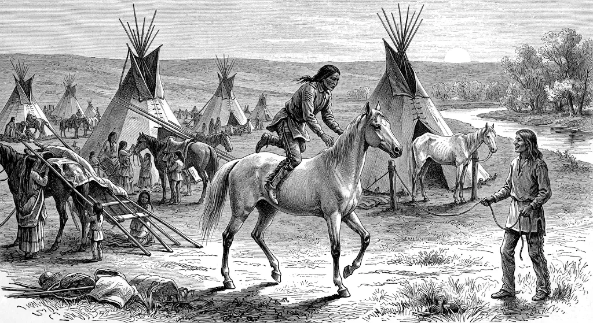
Aquella noche no hubo fiestas en el campamento. Las siete familias del este y la familia de Oso Pequeño encendieron sus fuegos como siempre, cocieron su carne, acostaron a sus niños. Pero Francisco no comió. Se sentó junto al fuego de Oso Pequeño, con la cruz de latón en una mano y el cuaderno de Diego, sin abrir, encima de las rodillas, y estuvo mucho rato callado, mirando las llamas.
Oso Pequeño le había contado todo. Lo había contado mal, a trozos, saltándose cosas y volviendo atrás, porque él no sabía contar como el viejo. Le había contado la tarde del barranco, el caballo tordo atado a la estaca, el anciano junto al fuego, la cruz. Le había contado lo de Diego y la yegua, lo de El Cuartelejo, lo de los comanches y el poste y la ventisca, lo de Juana. Le había contado lo de la loma de Atrisco. Le había contado los tres encargos y el Avemaría al salir el sol. Y la última palabra.
Francisco lo había escuchado sin interrumpirle ni una vez. Al final, cuando Oso Pequeño le dijo que el viejo había muerto diciendo «Diego», cerró los ojos.
Luego, mucho después, cuando ya todos dormían menos ellos dos y la abuela, empezó a hablar.
Habló en comanche. Despacio, con algunas palabras de otras lenguas metidas por medio, que se le escapaban sin querer. Oso Pequeño no lo olvidó nunca. Lo contó muchas veces, de viejo, a sus nietos, junto al fuego, con las mismas palabras.
Esto es lo que dijo.
Yo no sé leer. Lo que sé, lo sé porque lo he visto o porque me lo han contado. Así que no esperes de mí un cuaderno. Te voy a contar lo que me acuerdo. Me acuerdo de mucho.
Me acuerdo del perro. Se llamaba Canelo. Era amarillo, flaco, con una oreja rota de una pelea con un coyote, y me seguía a todas partes desde que yo tenía cuatro años. Dormía conmigo en el corral, con las ovejas, las noches que me tocaba. Aquella mañana fue el primero que los oyó. Se puso a ladrar mirando a la loma, con el pelo del lomo de punta. Yo me volví a mirar qué era.
Fue lo último que hizo. Una flecha. No sé de quién. Se quedó tumbado en la chamiza, con las patas moviéndose todavía, y yo me quedé mirándolo, y no me di cuenta de que los caballos estaban encima.
Me acuerdo del brazo. Un brazo flaco, todo hueso y nervios, que me cogió por la cintura como se coge un saco, sin esfuerzo, y me levantó del suelo. Me acuerdo de que olía a humo y a caballo. Me acuerdo de que el caballo era gris. Me acuerdo de que no paró.
Me acuerdo de mi madre.
Oí su voz. Gritaba mi nombre. Desde la casa, desde la loma, no sé. Francisco. Francisco. Muchas veces. Yo iba delante del viejo, atado a su cintura, y no me volví a mirarla. No pude. Si me volvía, pensé, me caería del caballo, o me moriría, o algo peor. Así que no me volví.
Me he arrepentido de eso veintidós años. De no haberme vuelto a mirarla una vez más.
Al viejo lo odié. Tienes que saberlo. Los primeros días lo odié más que a nadie en el mundo. Más que a los que mataron a Canelo. Porque había sido él. Porque me había cogido él. Porque me llevaba él.
La primera noche, en la sierra, me escapé. Corrí monte abajo en la oscuridad, sin saber adónde, por entre las piedras, descalzo, y me caí, y me levanté, y volví a correr, y él me cogió enseguida. No me pegó. Eso me extrañó. Los otros comanches me habían pegado ya, por el camino, por nada, por reírse. Él no. Me cogió en brazos y me llevó al fuego, pataleando, y me sentó, y yo me puse a llorar. Llamaba a mi madre.
Y entonces me habló en cristiano.
No te lo puedo explicar. Imagínatelo. Un comanche viejo, viejísimo, con el pelo blanco en dos trenzas y la cara pintada de rojo y negro, que te ha robado de tu casa y ha dejado que maten a tu perro, y de pronto se agacha a tu lado en la oscuridad y te dice al oído, en la lengua de tu madre: no llores, hijo, no te van a matar.
Le pregunté si era cristiano. Me dijo que lo había sido.
Aquella noche no lo entendí. Lo he ido entendiendo después, poco a poco. Esta noche, contigo, lo he acabado de entender.
Me dio a una mujer. Eso ya lo sabes. Se llamaba Cinco Pájaros. Ella sí me quiso desde el primer día, aunque yo tardé en quererla. Me bañaba en el río, me peinaba, me hizo mocasines, me cantaba de noche. Tenía una voz ronca, de hombre casi, y cantaba fatal, y a mí me hacía reír, y ella se reía de que me riera. Su marido, Toro Flaco, no me quería. Me pegaba cuando ella no miraba. Me llamaba el perro de la mujer.
Y el viejo me sacó de allí cada mañana. Le dio un caballo a Toro Flaco por mí, para que le ayudara con la manada. Así fue como empecé con los caballos.
Tú no sabes lo que era la manada de Pájaro Gris. Tú has visto caballos toda tu vida y te parecen todos iguales. Aquellos no eran iguales. Eran una familia. Tenían todos algo: la manera de mover la cabeza, la manera de oler el viento, la estrella. No todos la tenían. Pero los que la tenían eran distintos. Más listos. Más tranquilos. Más suyos.
El viejo los conocía por su nombre a todos, aunque los comanches no ponen nombres a los caballos. Sabía de quién era hijo cada uno, y nieto, y bisnieto, hasta muy atrás. Me lo enseñó como se enseñan los nombres de los antepasados. Este es hijo de esta yegua, que era hija de aquel caballo, que era nieto de aquel otro que me dio Viento Largo después de la ventisca, que era nieto de Lucero, que era hijo de Paloma.
Paloma. Siempre acababa en Paloma. Yo no sabía quién era Paloma. Creí que era una yegua comanche. Hasta que un día, ya en invierno, me dijo que había sido una yegua española, de un soldado de Santa Fe, y que por eso a estos caballos había que hablarles en castellano.
Me reí. No me lo creí. Pero les hablaba. Para darle gusto.
Y luego, sin darme cuenta, les hablaba porque era lo único en castellano que me quedaba. Porque a los dos años ya soñaba en comanche. Porque cuando quería acordarme de una oración, ya no me salía. Porque el castellano se me iba como se va el agua entre los dedos, y lo único que lo sujetaba eran los caballos de la estrella. Por las tardes, en la loma, solo, les decía a los potros todas las palabras que me acordaba. Pan. Agua. Madre. Iglesia. Oveja. Canelo. Las decía en voz alta, para que no se me olvidaran. Los potros me miraban con las orejas tiesas, como si me entendieran.
Creo que me entendían.
Tú has nacido en eso y no lo ves. Yo vine de fuera y lo vi todo de golpe. Déjame que te lo cuente como lo vi yo, con ocho años, recién llegado de un rancho de ovejas.
En mi casa, en Atrisco, teníamos dos caballos y una mula. Mi padre los cuidaba como a hijos. Los herraba él mismo, los cepillaba los domingos, no los montaba en cuesta para no cansarlos. Dos caballos eran una riqueza. El vecino de al lado tenía uno, y lo envidiábamos.
En el campamento comanche había más caballos que hierba. No es una forma de hablar. Había lomas enteras cubiertas de caballos, y cuando se movían, la tierra temblaba como cuando pasan los cíbolos. El viejo tenía cuarenta. Toro Flaco, que era pobre, tenía quince. Había hombres con doscientos, trescientos. Un jefe del campamento, un hombre gordo que ya no salía a la guerra, tenía más de mil, y no los conocía, y mandaba a cinco cautivos a cuidárselos.
Los caballos lo eran todo. Eran el dinero, como para nosotros los reales. Con caballos se compraba una mujer, un arco bueno, una escopeta, un cautivo, una tienda nueva, el perdón de un muerto. Con caballos se pagaba a un hombre de medicina para que curara a un niño. Con caballos se apostaba en las carreras, y había hombres que lo perdían todo en una tarde y se quedaban mirando cómo otro se llevaba su manada, porque así era. Un hombre sin caballos no era un hombre. Era un cautivo, o un viejo, o un loco.
Los niños comanches montaban antes de andar. Lo vi con mis ojos. A los niños de pecho los ataban a la silla de su madre, en una tabla, y viajaban así, días y días, dormidos, mamando, a caballo. A los tres años los subían solos a un caballo viejo y manso, atados con una correa para que no se cayeran, y los dejaban ir detrás de la manada. A los cinco ya iban solos. A los ocho, como yo entonces, corrían colgados del costado del caballo, a galope, con un pie enganchado en la crin y la cabeza casi tocando la hierba, y recogían del suelo una piel, un palo, un niño más pequeño. Era su juego. Yo los miraba y me parecía brujería.
Los muchachos de doce o trece salían ya con los hombres a robar caballos. A los españoles de Nuevo México, a los de Texas, a los apaches, a los yutas, a quien fuera. Volvían con caballos ajenos, con las marcas de hierro de mis vecinos en el anca, y los repartían, y se los pintaban, y hacían fiesta. Y el que volvía con más era el que más contaba.
Así se hacía uno hombre entre los comanches. Robando caballos. Como entre los españoles yendo a misa y teniendo tierras. Me costó entenderlo. Después lo entendí tan bien que, cuando tenía diez años, soñaba con ir a robar caballos a Atrisco. A mi propia casa. Y me despertaba llorando, y no sabía por qué.
Cinco Pájaros trabajaba más que nadie que yo haya conocido. Más que mi madre, que ya trabajaba mucho. Se levantaba antes que el sol, iba al río a por agua con dos vejigas de cíbolo, encendía el fuego, ponía la carne. Luego raspaba pieles. Todo el día. Pieles de cíbolo estiradas en el suelo con estacas, raspándolas con un hueso afilado para quitarles la carne y la grasa, después con una piedra para adelgazarlas, luego untándolas con sesos y hígado machacados, después frotándolas con las manos horas y horas hasta que quedaban blandas como un paño. Una piel buena le llevaba diez días. Con sus pieles se compraban los cuchillos y las mantas en las ferias. Con sus pieles se hacía la tienda, la ropa, las mantas, las bolsas, las cuerdas.
Y cuando había que moverse, ella desmontaba la tienda sola, cargaba los arrastres sola, ataba las cosas sola, mientras Toro Flaco fumaba y miraba. Y al llegar al sitio nuevo la montaba sola otra vez, antes de que se pusiera el sol, y encendía el fuego, y ponía la carne.
Yo la ayudaba. Al principio porque me lo mandaba. Luego porque quería. Los niños comanches se reían de mí, porque aquello era trabajo de mujeres. Me daba igual. Ella me cantaba mientras trabajábamos, con aquella voz ronca, canciones que no entendía, y yo le contaba en comanche malo cosas de Atrisco, del horno de pan, de las ovejas, de Canelo. Ella se reía de las ovejas. No había visto nunca una. Le parecían cíbolos pequeños y tontos.
Comíamos carne. Siempre carne. Asada en palos, cocida en la olla de hierro que había cambiado en Taos, seca en tiras, machacada con grasa y ciruelas en la pasta que guardaban para el invierno. Tuétano. Hígado crudo con hiel, después de las cacerías, que me daba asco y me comía igual, porque si no me comía lo que me daban no comía nada. Pan no había nunca. Ni tortillas. Ni chile. El maíz, cuando lo traían de los taovayas, se lo comían los hombres.
Echaba tanto de menos el pan que lo soñaba. El pan de mi madre, redondo, con la corteza dura, recién sacado del horno de barro que había delante de la casa. Me despertaba con el olor en la nariz.
Entre los caballos de la estrella había uno. Un potro gris de dos años, con la estrella, que no se dejaba tocar por nadie más que por el viejo. Al tercer día se dejó tocar por mí. Fue lo primero en aquel mundo que me eligió a mí, sin que nadie me obligara. Lo primero.
Le puse nombre. A escondidas, como hacía el viejo. Le puse Canelo, como a mi perro, aunque era gris. El viejo se rio cuando lo supo. Se rio como no le había visto reír nunca, hasta que le dio la tos.
Aprendí a montar en él. El viejo me enseñó. Primero me echaba sobre el lomo como un saco, como él hacía con los potros. Me sentaba. Luego me hacía soltar la cuerda y guiarlo con las rodillas, al paso, al trote, al galope, por la loma, por el río, por la llanura, hasta que me caía. Me caí cien veces. Me rompí una muñeca. Cinco Pájaros me la entablilló con dos palos y cuero crudo mojado y me gritó durante una tarde entera, y me trajo carne asada a escondidas de Toro Flaco.
Al segundo verano gané mi primera carrera. Contra los niños comanches de mi edad, que se reían de mí porque montaba tarde, como los españoles. Gané montando a Canelo, sin silla, gritando en castellano. No sé lo que gritaba. Cosas que me gritaba mi padre cuando llevábamos las ovejas al río. ¡Arre! ¡Vamos! ¡Hala! Los niños comanches no lo entendían. Creían que eran palabras de guerra.
Cinco Pájaros gritó tanto que se quedó sin voz. Aquella noche me hizo unos mocasines nuevos, bordados con púas de puerco espín, rojas y amarillas. Todavía los tengo. No me caben, pero los tengo.
Me acuerdo de los nombres.
Cada noche que podía, el viejo me llevaba aparte, junto a los caballos, y me hacía repetir. Cómo se llama tu padre. Ignacio Chaves. Cómo se llama tu madre. Gregoria Maese. Dónde vives. En Atrisco, al otro lado del río de Alburquerque. Otra vez. Otra vez. Otra vez.
Al principio lo odiaba. Me parecía un juego tonto de viejo. Luego me di cuenta de que era lo único que me quedaba de mi casa. Los nombres. Ya no me acordaba bien de la cara de mi madre. Ya no me acordaba del olor de su pan, ni de la canción que me cantaba, ni de cómo era la iglesia por dentro. Pero los nombres sí. Los nombres no se me fueron nunca. Porque él no me dejó.
Con los taovayas, después, me los repetía yo solo. Cada noche. En la casa de hierba, tumbado en el suelo, con los ojos cerrados. Ignacio Chaves. Gregoria Maese. Atrisco. Diez años. Cada noche. A veces, cuando me pegaban, o cuando tenía tanta hambre que no podía dormir, los decía en voz alta, y los taovayas creían que estaba rezando a algún dios mío.
Lo estaba.
Y cuando me escapé, cuando bajé a la puerta del presidio de San Antonio sin hablar casi castellano, con los ojos pintados y el pelo largo, y un cabo me preguntó quién era, fue lo único que supe decirle. Me llamo Francisco Xavier Chaves. Mi padre se llama Ignacio Chaves. Mi madre, Gregoria Maese. Soy de Atrisco, al otro lado del río de Alburquerque.
Me creyeron por eso. Porque un cautivo que se ha olvidado de todo no se acuerda de los nombres. Y yo me acordaba.
Fue él. Todo lo que soy, lo soy porque él me hizo repetir los nombres.
Me acuerdo de la última vez.
Estaba atado, en el suelo, junto a los caballos de los taovayas. Toro Flaco ya había cogido su escopeta. Cinco Pájaros llevaba dos lunas muerta. Yo no lloraba, porque había llorado ya todo lo que tenía. Y el viejo vino, despacio, apoyándose en un palo, y se arrodilló delante de mí.
Me ató una cosa en el pelo, por detrás. No vi lo que era. Me dijo: para que no te olvides de los caballos.
Me hizo repetir los nombres una vez más.
Le pregunté si él también iba a volver algún día. No me contestó. Me puso la mano en la cabeza. Y se fue.
Francisco se calló.
Se llevó la mano a la nuca, por detrás, debajo del pelo largo y recogido. Buscó algo con los dedos. Tiró, con cuidado, y sacó un mechón trenzado de su propio pelo, en el que había atada, entretejida, gastada, casi deshecha, una trenza pequeña de crin gris, larga como un dedo.
Se la enseñó a Oso Pequeño a la luz del fuego.
—Me la ató aquel día —dijo—. Es de la cola de Canelo. Los taovayas no la vieron nunca. Me la escondía en el pelo, me la cambiaba de mechón cuando me lo cortaban, me la volvía a trenzar. En San Antonio el capitán me mandó cortarme el pelo, y no quise. Me castigaron una semana a pan y agua. No me lo corté.
Se la volvió a esconder en el pelo, despacio.
—Diez años con los taovayas —dijo—. Ocho con los españoles. Y todavía la llevo.
Luego cogió la cruz de latón, que había tenido todo el rato apretada en la otra mano, y se la colgó del cuello. Por dentro de la camisa. Donde no se viera.
—Ahora llevo las dos cosas —dijo—. Lo suyo y lo mío.
Al amanecer, Oso Pequeño fue a la manada y volvió con un caballo de la cuerda. El potro gris que había criado para él. El de las patas finas y la estrella blanca en la frente. Tenía ya cinco años. Nadie lo había montado nunca.
Se lo dio sin decir nada.
Francisco se quedó mirando al potro mucho rato. Se acercó por delante, despacio, con la mano baja. Le sopló en los ollares. El potro le sopló a él. Le apartó el flequillo con dos dedos y le miró la estrella.
Le dijo algo en castellano, muy bajo. Oso Pequeño no lo entendió. Años después, cuando aprendió algunas palabras de la lengua de los españoles, supo que le había dicho: «Hola, Canelo. Ya estoy en casa».
Luego se subió encima, sin silla, de un salto, sin tocar el suelo con las manos, como montan los comanches. El potro no saltó. Volvió la cabeza, le olió el pie, y echó a andar.
Las siete familias del este levantaron el campamento aquella mañana y se pusieron en marcha hacia el poniente, hacia el río Pecos, hacia Nuevo México. Oso Pequeño y los suyos iban con ellas. Francisco iba delante, en el potro gris, con el caballo tordo viejo de la cuerda a su lado.
No se volvió a mirar el campamento al irse. Esta vez no hacía falta.
Los ojos pintados
Los pueblos taovayas del río Rojo · de 1774 a 1784
Lo cuenta Francisco Xavier Chaves
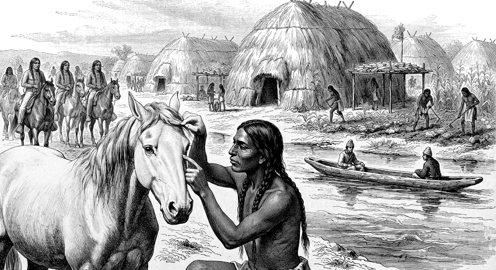
Las siete familias y la de Oso Pequeño cruzaron el Llano Estacado en nueve días, hacia el poniente, sin prisa, al paso de los arrastres y de los niños. Era primavera. La hierba estaba nueva, verde, corta, y en los charcos que dejaban las tormentas de la tarde crecían flores amarillas y moradas que se abrían por la mañana y se cerraban al mediodía. Había cíbolos por todas partes. Cada pocas horas, en el horizonte, una mancha oscura que se movía. Los hombres cazaban cuando hacía falta carne, nada más.
Francisco iba siempre delante, en Canelo, con el caballo tordo viejo de la cuerda. Hablaba poco durante el día. Por las noches, cuando las familias se juntaban alrededor de los fuegos, se sentaba con Oso Pequeño y seguía contando. Los demás se acercaban a escuchar. Al tercer día, también los niños. Al quinto, todo el campamento.
Contaba en comanche, mirando el fuego.
Los taovayas me compraron por una escopeta. Ya lo sabes.
Me llevaron al este, a sus pueblos del río Rojo, en un viaje de muchos días, atado los primeros y suelto después, cuando vieron que no me iba a escapar. ¿Adónde iba a escapar un niño de doce años en mitad de la llanura? Ya no sabía hacia dónde estaba Atrisco. Ya no sabía hacia dónde estaba el campamento de Cinco Pájaros, ni Cinco Pájaros estaba ya en ninguna parte.
Los pueblos de los taovayas son otro mundo. Os los ha contado Oso Pequeño, que los vio. Casas redondas de hierba, grandes, más altas que un tipi, en las que viven tres o cuatro familias juntas. Campos de maíz que no se acaban. Calabazas, frijoles, melones, sandías, tabaco. Plataformas de palos para secar el maíz, con niños encima espantando pájaros. Hornos en la tierra para asar las calabazas. Hoyos tapados para guardar el grano.
Y en medio del pueblo más grande, junto al río, un fuerte. Un fuerte de verdad, con una empalizada de troncos clavados en la tierra, con un foso alrededor, con tierra amontonada detrás de los palos y agujeros para disparar. Lo habían hecho los taovayas, con ayuda de los franceses, y encima, en un palo, ondeaba una bandera francesa, blanca. Me contaron que, poco antes de que yo naciera, había venido hasta allí un ejército de españoles de San Antonio, con soldados de cuera y cañones, a castigarlos por haber ayudado a los comanches a quemar una misión. Y que los taovayas y los comanches los habían esperado detrás de aquella empalizada y los habían echado, y les habían quitado dos cañones, que todavía estaban allí, tirados en la hierba, comidos por el óxido. Los niños jugábamos encima.
Pensé que era una mentira de taovayas. Muchos años después, en San Antonio, un soldado viejo me contó que era verdad. Que él había estado allí, de muchacho. Que había sido la mayor vergüenza de su vida.
A mí no me adoptó nadie. Eso es lo primero que tenéis que saber. Con los comanches yo había sido el hijo de Cinco Pájaros. Con los taovayas fui un cautivo. Uno de muchos. Trabajaba.
Me pusieron en los campos. Con una azada de hierro francesa, más grande que yo, que me llenó las manos de ampollas el primer día y de callos el primer mes. Cavaba, sembraba, quitaba hierbas, acarreaba agua para los melones, espantaba pájaros, cosechaba, desgranaba. De sol a sol, como las mujeres taovayas, que eran las dueñas de los campos y las que mandaban en ellos. Los hombres cazaban, comerciaban, iban a la guerra. Los campos eran de las mujeres. Y de los cautivos.
Había muchos cautivos. Apaches, sobre todo, de los lipanes del sur, cogidos en guerras o comprados a los comanches. Algunos de otras naciones que yo no conocía. Dos españoles más: un muchacho de Texas, mayor que yo, que se escapó el primer verano y no volvió a saberse de él, y una mujer de Coahuila, ya vieja, que no hablaba con nadie y que se murió el segundo invierno. Los cautivos dormíamos en una casa aparte, la peor del pueblo, la más vieja, con la hierba podrida del techo llena de bichos que caían por la noche. Comíamos lo que sobraba, después de todos.
A mí me pegaban menos que a otros, porque trabajaba mucho y porque no me quejaba. Lo había aprendido del viejo. No quejarse. No llorar delante de ellos. No darles nada.
Pero algunas noches, en la casa de los cautivos, tumbado en el suelo, con los bichos cayéndome en la cara, me repetía los nombres en voz alta. Ignacio Chaves. Gregoria Maese. Atrisco. Y los apaches de al lado se reían de mí y me decían que me callara, que si estaba rezando a un dios de los españoles, que no servía de nada, que mirara dónde estábamos.
Los taovayas viven de otra manera que los comanches. Os lo cuento porque nadie de vosotros lo ha visto por dentro.
No se mueven. Viven todo el año en el mismo sitio, junto al río, en las mismas casas. Solo en invierno salen unos meses a cazar cíbolos a la llanura, con tiendas como las vuestras, y vuelven. Las casas de hierba se hacen entre todos, en un día, con mucha ceremonia. Se clavan en círculo unos palos largos de cedro, se doblan hacia dentro, se atan arriba, se les ponen varas atravesadas, y luego se cubre todo con haces de hierba atados en capas, de abajo arriba, como las plumas de un pájaro. Dentro caben cuatro familias. Hay camas de palos alrededor, altas, como estantes, con pieles. Y en medio, el fuego. El humo sale por arriba, por la hierba. En invierno se está caliente. En verano, fresco. Se pudren a los pocos años y se hacen otras.
Comen maíz de todas las maneras. Gachas de maíz, tortas de maíz asadas en la ceniza, maíz tostado, maíz verde cocido en la mazorca. Calabazas asadas en hoyos con piedras calientes. Y hacen una cosa que no he visto en ningún otro sitio: cortan las calabazas en tiras largas, las secan al sol y después las trenzan como si fueran esteras, unas encima de otras, y así las guardan para el invierno, colgadas del techo. Cuando hace falta, se corta un trozo de estera y se cuece.
Rezan a las estrellas. Eso me costó entenderlo. Para ellos, las estrellas son gente, antepasados, que miran desde arriba. La más importante es la que sale antes del alba. El lucero.
Cuando me lo dijeron, me acordé del viejo, que le había puesto ese nombre en castellano a su primer caballo. Y pensé que era raro que todos acabemos rezando a lo mismo.
Dos veces al año llegaban los franceses. Por el río, en canoas largas, de troncos vaciados, cargadas hasta el borde. Desde Natchitoches, decían, y desde más abajo, del río grande del este. Traían escopetas, pólvora, balas, cuchillos, hachas, ollas de hierro, paño azul y rojo, cuentas de vidrio, espejos, aguardiente. Se llevaban pieles de cíbolo, de ciervo, de castor. Se llevaban caballos. Y se llevaban cautivos.
Había una muchacha lipana entre los cautivos. Se llamaba, o la llamábamos, Pequeña Nube. Tenía mi edad. La habían cogido los comanches en el sur, en una guerra, y la habían vendido a los taovayas como a mí. Dormía en la casa de los cautivos, al otro lado del fuego. Al principio no me hablaba, porque yo había sido comanche y los comanches le habían matado a toda su familia. Luego sí. Trabajábamos juntos en los campos. Nos contábamos cosas en comanche, que era la única lengua que teníamos los dos.
Ella me contó de los lipanes, de las sierras del sur, de los ríos con nogales, de su abuela que sabía curar con hierbas. Yo le conté de Atrisco, de las ovejas, de Canelo, de Cinco Pájaros, del viejo de los caballos. Ella me enseñó a hacer las esteras de calabaza. Yo le enseñé a hablar con los caballos. No aprendió. Le daban miedo.
El quinto verano, cuando teníamos diecisiete años, vinieron los franceses en sus canoas y la compraron. Por una escopeta, dos libras de pólvora y una olla. Para llevársela río abajo, a sus pueblos del este, decían. Para servir en una casa de franceses. Los franceses también compraban cautivos. Lo hacían menos a la vista que los españoles, sin frailes ni bautizos en la feria, sin hablar de rescates. Se los llevaban y ya está.
Pequeña Nube no lloró cuando la subieron a la canoa. Se volvió y me buscó con los ojos entre la gente de la orilla. Me encontró. Levanté la mano. Ella no la levantó. Tenía las manos atadas.
La canoa se fue río abajo. La miré hasta que se perdió en la curva.
Nunca supe qué fue de ella. Es la tercera persona que he visto irse así, en mi vida, atada, por un río o por una llanura, sin poder hacer nada. La primera fui yo. La segunda, Cinco Pájaros, que se fue muerta. La tercera, ella.
Aquella noche, en la casa de los cautivos, el lado del fuego donde dormía estaba vacío, y no pude dormir. Y me di cuenta de una cosa que no había pensado nunca: de que yo también podía ser el siguiente. De que cualquier verano podían venir las canoas de los franceses y yo podía estar atado en la orilla, y nadie levantaría la mano.
Desde aquella noche empecé a pensar en irme.
Al tercer año me pintaron los ojos.
No me lo preguntaron. Una mañana me llevaron a una casa donde estaba una vieja que hacía los dibujos. Me tumbaron en una piel. Dos hombres me sujetaron los brazos y la cabeza. Y la vieja, con una aguja de hueso muy fina y un cuenco de carbón molido mezclado con algo, me fue pinchando la piel alrededor de los ojos. En los párpados. En las sienes. Despacio, punto a punto, metiendo el carbón en cada agujero con el dedo.
Duró todo el día. No grité. Lloraba sin querer, porque los ojos lloran solos cuando te pinchan los párpados, pero no grité. Cuando acabó, tenía la cara hinchada como un melón y no veía. Estuve tres días sin ver. Al cuarto, cuando se me bajó la hinchazón y me miré en el agua del río, vi a otro.
Vi a un taovaya. Con las líneas alrededor de los ojos, como los hombres taovayas, como un mapache. Para siempre.
No era un honor. No era que me hubieran adoptado. Era para que se supiera, si me escapaba, de quién era. Para que cualquiera, comanche, apache o español, que me viera en cualquier parte del mundo, supiera que yo había sido de los taovayas.
Lo supieron. Todavía lo saben. Mirad.
Se inclinó hacia el fuego para que le vieran la cara. Los niños comanches que estaban más cerca se echaron un poco hacia atrás.
Se volvió a sentar.
Lo que me salvó fueron los caballos. Siempre los caballos. Igual que al viejo.
Los taovayas no son jinetes como los comanches. Montan, tienen caballos, muchos, pero no viven en ellos. Los compran a los comanches con maíz y con tabaco y con cosas de los franceses, y luego los venden a los franceses por armas, y los franceses se los llevan al este, río abajo, a sus pueblos, y no se sabe adónde más. Por los pueblos de los taovayas pasaban todos los años cientos de caballos. Venían del oeste, de la llanura, comanches. Se iban al este, franceses. Los taovayas se quedaban en medio, con las escopetas y la pólvora y los cuchillos.
Y no sabían cuidarlos. Los tenían mal, en corrales pequeños, con poca hierba. Se les morían, se les escapaban, se les ponían cojos. Al cuarto verano, una mañana, un potro comanche recién comprado se volvió loco en el corral, rompió la cerca y empezó a correr por el pueblo, entre las casas de hierba, tirando las plataformas del maíz y pisoteando los melones, y nadie se atrevía a ponerse delante.
Me puse yo. Por delante, despacio, con la mano baja. Le hablé en castellano. Le soplé en los ollares. Se paró.
Desde aquel día no volví a los campos. Me pusieron a cuidar los caballos del pueblo. Seis años. Los caballos que pasaban del oeste al este, de los comanches a los franceses. Los curaba, los domaba, los cuidaba hasta que se los llevaban. Les hablaba en castellano, a escondidas. Fue lo único que me quedó del castellano en todo aquel tiempo, como con el viejo. Las palabras que les decía a los caballos.
Una vez, entre los caballos que trajeron los comanches para vender, vi uno gris. Con una estrella blanca en la frente.
Me acerqué. Le aparté el flequillo. Le hablé. Me miró como me miraban los de la manada del viejo. No sé si era de ellos. Puede que no. Hay muchos caballos grises con estrella en el mundo.
Pero le pregunté al comanche que lo vendía de dónde lo había sacado, y me dijo que se lo había cambiado a un viejo de los del norte, uno al que llamaban Pájaro Gris, que tenía muchos así.
Aquella noche no dormí. El viejo vivía. Tenía caballos. Seguía en el norte.
Dos días después se llevaron el caballo gris al este, con los franceses. Yo lo vi irse por el río abajo, en una recua de cincuenta, atado a la cola de otro. Me quedé en la orilla hasta que no se veía.
En el pueblo había un francés.
Vivía con los taovayas desde hacía muchos años. Un hombre de unos treinta y tantos, con barba, que hablaba la lengua taovaya como un taovaya y la comanche bastante bien, y un castellano raro, aprendido no sé dónde. Arreglaba las escopetas. Tenía una fragua pequeña, de piedra, junto al río, con un fuelle de piel, y todo el día se oía el martillo. Los taovayas lo respetaban mucho, porque sin él las escopetas francesas, cuando se rompían, no servían para nada.
Se llamaba Pedro. Pierre, decía él. Pedro Vial.
Le llevaba los caballos para que les arreglara las herraduras, cuando las tenían, que era pocas veces. Se quedaba mirándome cuando les hablaba en castellano. Un día me preguntó, en castellano, de dónde era.
Le dije los nombres. Ignacio Chaves. Gregoria Maese. Atrisco.
Se quedó mirándome mucho rato, con el martillo en la mano.
—Atrisco —repitió—. Junto a Alburquerque. En Nuevo México.
—Sí.
—Estás muy lejos de casa, muchacho.
No me dijo nada más aquel día. Pero desde entonces, cuando le llevaba los caballos, me daba a escondidas un trozo de pan. Pan de verdad, de harina de trigo, que se hacía él mismo en un horno de piedra junto a la fragua, como los que hay en Francia, decía. Era el primer pan que comía en nueve años.
Me lo comía allí mismo, junto a la fragua, con los ojos cerrados, sin hablar. Y él se quedaba mirándome sin decir nada, dándole al martillo.
Una vez, mucho después, en San Antonio, cuando ya éramos compañeros, le pregunté por qué me daba aquel pan. Me dijo que porque se acordaba de su madre, en un pueblo de Francia que se llama Lyon, haciendo pan. Que él también se había ido de casa siendo un muchacho. Que no había vuelto nunca.
Todos los que conozco se fueron de casa siendo muchachos. Ninguno ha vuelto.
Yo voy a volver.
Francisco se calló.
Las familias comanches del este se miraban. Una mujer vieja, la mayor de las siete familias, que había estado escuchando con los ojos cerrados, los abrió.
—Te acuerdas de mucho para haber sido un cautivo —le dijo.
—Me acuerdo de todo —contestó Francisco—. Un cautivo no tiene otra cosa que hacer que acordarse. Es lo único que nadie le puede quitar.
La vieja asintió despacio.
—Yo también fui cautiva —dijo—. De los yutas. Hace sesenta inviernos. Ya no me acuerdo de nada. Ni del nombre de mi madre.
Nadie dijo nada. El fuego crepitó.
Oso Pequeño miró a su abuela, la lipana, que estaba sentada a su lado. Tenía los ojos cerrados, pero no dormía. Movía los labios sin voz. Estaba diciendo un nombre. Oso Pequeño no supo nunca cuál.
Al día siguiente, a media mañana, vieron por primera vez las montañas.
Primero fue una línea azul, muy fina, en el horizonte del poniente, que parecía una nube baja. Después, a medida que avanzaban, la línea se fue haciendo más alta, más oscura, con picos, con nieve en lo más alto todavía, en primavera. Las montañas de Nuevo México. Las que el viejo había cruzado de niño, detrás de Diego, por un río crecido.
Francisco detuvo a Canelo en lo alto de una loma y se quedó mirándolas mucho rato. Después se volvió hacia Oso Pequeño.
—Detrás de esas montañas —dijo— está el río. Y al otro lado del río, Atrisco.
Lo dijo en castellano. Oso Pequeño lo entendió igual.
La huida
Del río Rojo a San Antonio de Béxar · de 1784 a 1785
Lo cuenta Francisco Xavier Chaves
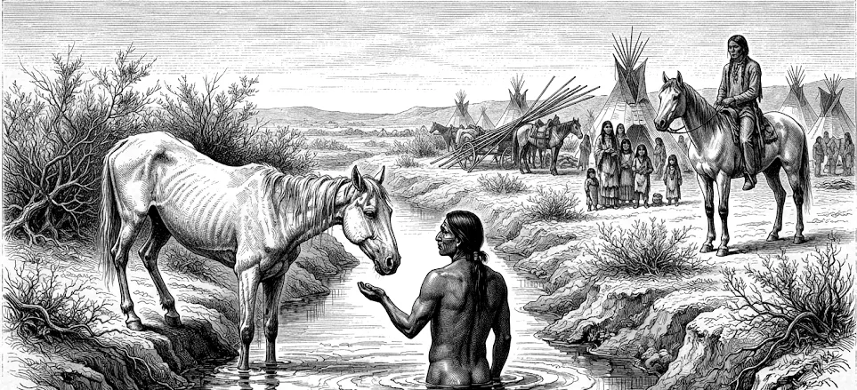
Llegaron al río Pecos al undécimo día. Era un río extraño, que Oso Pequeño no había visto nunca: estrecho, hondo, de agua salobre y rojiza, encajado entre barrancas de tierra blanda, con matas de tamariz y sauces en las orillas y un fondo de arena que se tragaba las patas de los caballos. Los comanches del este lo conocían. Buscaron el vado por donde lo cruzaban siempre, un sitio donde el río se abría y se hacía ancho y poco hondo, y pasaron a media tarde, las familias primero, los caballos después.
El caballo tordo viejo no quería entrar. Se plantó en la orilla, temblando, igual que una yegua torda en la orilla de un río crecido de la sierra, ochenta y seis años antes.
Fue Francisco el que lo pasó. Se bajó de Canelo, se quitó la camisa, se metió en el agua delante del tordo, de espaldas, mirándolo a los ojos, y le habló en castellano. El caballo viejo entró detrás de él, paso a paso, resoplando. Así cruzaron los dos.
En la otra orilla, chorreando, Francisco se quedó un momento quieto, con la mano en el cuello del tordo. Oso Pequeño, que había visto aquello contado por la voz de un muerto en un tipi, no dijo nada. Pero esa noche, junto al fuego, le contó a Francisco lo del río de la sierra, lo de Paloma, lo del niño que se quitó la camisa. Él lo escuchó con los ojos muy abiertos. Se quedó callado mucho tiempo.
—No lo sabía —dijo—. Lo he hecho siempre así. Me lo enseñó él. Nunca me dijo de dónde venía.
Y luego, como para pagar con algo, siguió contando.
Me escapé en verano. El décimo verano con los taovayas. Tenía veintidós años.
No fue de golpe. Lo estuve pensando cinco años, desde que se llevaron a Pequeña Nube en la canoa. Pero no me atrevía. ¿Adónde iba a ir? Al norte estaban los comanches, y yo ya no era de los comanches. Al este, los franceses, que compraban cautivos. Al oeste, la llanura, que no conocía. Al sur, decían, estaban los españoles. San Antonio. Pero San Antonio estaba lejos, a muchos días, y entre los taovayas y San Antonio había apaches, tonkawas, bidais, naciones de las que no sabía nada, y cualquiera de ellas podía cogerme y venderme otra vez.
Y además estaba la cara. Con aquella cara pintada, ningún español me iba a creer español. Me iban a matar en la primera loma, por indio, antes de que pudiera abrir la boca.
Lo que me decidió fue una conversación. Una noche, en la casa de hierba, oí a mi amo hablar con su hermano. Decían que los franceses vendrían aquel otoño con muchas cosas, y que pagaban bien por los cautivos jóvenes y fuertes que sabían de caballos, porque los llevaban a sus ranchos del este, donde había muchas vacas y pocos hombres. Que yo ya era un hombre. Que ya no me necesitaban tanto, porque había otro muchacho apache que aprendía a cuidar los caballos. Que quizá era el momento de venderme.
Aquella noche no dormí. Me repetí los nombres. Ignacio Chaves. Gregoria Maese. Atrisco.
Y supe que, si me subían a una canoa, ya no volvería a decirlos nunca a nadie que los entendiera.
Esperé al verano. Todos los años, cuando el maíz estaba ya alto y no necesitaba cuidados, los hombres jóvenes salían al sur a buscar caballos. Caballos de los españoles. Bajaban hasta los ranchos de San Antonio, se llevaban lo que podían y volvían cantando. Se llevaban también a algún cautivo que supiera de caballos, para cuidar la manada robada a la vuelta. Aquel año me llevaron a mí.
Éramos unos cincuenta, taovayas y wichitas. Yo iba en el caballo castaño de mi amo, el mejor de la manada, un comanche de cinco años que yo había domado hablándole en castellano y que valía más que yo. Mi amo no vino. Me lo dejó para que se lo devolviera con otros diez detrás.
Bajamos muchos días hacia el sur. Hacía un calor que derretía las piedras. Los ríos llevaban poca agua, roja, caliente, y los mosquitos se te comían vivo en las orillas. A mediodía dormíamos a la sombra de los nogales y caminábamos de noche. Cruzamos el Brazos. Después vinieron otros ríos más pequeños, con cipreses, y unas lomas de encinas, y una tierra que olía distinto. Olía a ganado.
Una madrugada de julio llegamos a lo alto de una loma y la vimos.
San Antonio. Abajo, junto a un río verde de árboles, las casas blancas, la torre de una iglesia, el humo de los fogones. Los campos de maíz regados por acequias. Los corrales. Y, sonando hasta la loma, una campana.
Hacía catorce años que no oía una campana.
Los hombres se tumbaron en la hierba a mirar. Discutieron en voz baja. Había soldados en la villa, más de los que esperaban; se veían los caballos del presidio, muchos, ensillados, y gente armada en la plaza. Alguien dijo que los habían visto venir. Alguien dijo que no era buen día. Los más viejos dijeron que se volvían. Que había otros ranchos, más lejos, con menos soldados.
Se fueron montando y bajando la loma por el otro lado, de dos en dos, de tres en tres, sin prisa. Yo me bajé del castaño y me puse a arreglarle la cincha.
Se fueron todos menos dos. Dos jóvenes, de los que me vigilaban siempre. Uno me dijo que me diera prisa. Le dije que la cincha estaba rota, que se le había corrido la manta y que el caballo tenía una rozadura. Me puse a desatar y a atar otra vez, despacito, con los dedos torpes, como si no supiera. El sol subía. El de los ojos más pequeños escupió, dijo una palabra fea y se fue detrás de los otros.
Quedó uno. Se llamaba Lechuza que Corre. Teníamos casi la misma edad. Habíamos cazado juntos y alguna noche, de niños, nos habíamos reído juntos en la casa de hierba. Estaba montado, con el arco en la mano, mirándome.
Me subí al castaño. No lo puse hacia el norte. Lo puse mirando a la villa.
Lechuza que Corre lo entendió antes de que yo dijera nada. Se le puso la cara gris debajo de la pintura.
—No —me dijo.
—Me voy —le dije en su lengua—. Me voy con los míos. Si intentas pararme, te mato.
No sé si lo habría hecho. Él tenía el arco y yo no tenía nada más que un cuchillo. Pero yo era más grande, y él era más joven, y los dos sabíamos que si me llevaba a rastras hasta el río Rojo tendría que contar por qué había vuelto con un muerto o con un huido. Nos quedamos mirándonos mucho rato, con los caballos resoplando.
—Vete tú por ahí —le dije, y le señalé el norte—. Y yo me voy por aquí. Di que me mataron los españoles. Di que me escapé de noche. Di lo que quieras.
Bajó el arco. Me miró una vez más, como se mira a uno que se ha muerto, y dio la vuelta al caballo. No volvió la cabeza.
Yo bajé la loma hacia las casas.
Bajé al paso, con las manos abiertas, para que se viera que no llevaba armas. Crucé un campo de maíz, una acequia, un camino de carros. Unos perros me salieron a ladrar. Una mujer que lavaba en la acequia me vio, gritó, dejó la ropa y echó a correr.
Cuando llegué a la puerta del presidio había ya diez soldados esperándome, con las escopetas. Y yo me di cuenta de lo que veían. Un indio. Medio desnudo, con el pelo largo hasta la cintura, los párpados rajados y pintados como un taovaya, montado en pelo en un caballo comanche. Un ladrón de caballos, que venía solo, por la mañana, a la puerta del presidio. Un loco o un espía.
Quise hablarles. Quise decirles quién era. Y no me salía. Hacía catorce años que no hablaba castellano con nadie más que con los caballos y con Vial, y en aquel momento, con diez escopetas apuntándome a la cara, se me olvidaron todas las palabras. Abría la boca y me salía comanche. Me salía taovaya.
Un cabo gritó algo. Oí cómo amartillaban las armas.
Entonces me salieron.
—¡Ignacio Chaves! —grité—. ¡Gregoria Maese! ¡Atrisco!
No sé si lo grité bien. Lo grité. Como lo había dicho cada noche durante catorce años, en la oscuridad, como un rezo.
Nadie disparó. El cabo se me quedó mirando, con la escopeta todavía levantada.
—¿Qué dices, indio?
—Soy cristiano —le dije. Me salió muy lento, como a un niño que aprende a hablar—. Soy cristiano. Me llamo Francisco Xavier Chaves. Me cogieron los comanches. De niño. En Atrisco. Nuevo México.
Los soldados se miraron.
Uno de ellos, el más viejo, bajó la escopeta, se acercó, me miró la cara muy de cerca, los ojos pintados, el pelo, las manos llenas de callos. Y se santiguó.
—Virgen santa —dijo—. Bájate, muchacho. Bájate, que ya estás en casa.
No estaba en casa. Estaba en San Antonio. Pero aquella noche, en el cuarto de aquel soldado viejo, junto al fogón, su mujer me dio pan.
Pan de maíz, en tortillas, calientes, con chile y con carne de vaca. Me las ponía delante una detrás de otra, sin preguntarme nada, y yo me las comía con las manos, llorando, sin poder parar. Los niños me miraban desde la puerta, escondidos, como se mira a un oso. La mujer los mandó a dormir. Después se sentó a mi lado y me puso la mano en la cabeza, igual que me la ponía Cinco Pájaros.
Me preguntó si sabía rezar.
Le dije que no me acordaba. Que me acordaba solo del principio del Padrenuestro.
Ella lo rezó sin prisa, para que yo lo fuera repitiendo. Padre nuestro, que estás en los cielos. Lo repetí. Santificado sea tu nombre. Lo repetí. Así hasta el final. Luego el Avemaría. Me acordé de más palabras de las que creía. Me salían solas, de muy dentro, como si hubieran estado esperando.
Esa noche me dieron un jergón bajo techo. No pude dormir. Me levanté a medianoche y me fui al corral, con el caballo castaño. La mujer me vio salir. No dijo nada. Por la mañana me había tapado con otra manta.
San Antonio era más grande que nada que yo hubiera visto, menos los pueblos taovayas. Una villa de casas de piedra y de adobe, encaladas, con una plaza grande, con una iglesia de piedra con torre y campanas, con un presidio, con calles, con huertas regadas por acequias, con molinos. Y alrededor, río abajo, cinco misiones, cada una con su iglesia de piedra y su pueblo de indios, y sus campos y sus rebaños. Allí vivían españoles de muchas clases: soldados, rancheros, comerciantes, los isleños, que eran unas familias que habían venido de unas islas de España hacía muchos años y que se tenían por los más importantes. Y vivían indios de las misiones, y mestizos, y negros, y genízaros.
Aquella misma mañana, nada más entrar, me habían llevado ante el gobernador. Don Domingo Cabello. Un hombre mayor, serio, de peluca, que me miró mucho rato desde detrás de una mesa de madera llena de papeles, con un escribano a su lado que lo apuntaba todo. Me preguntó quién era. Le dije los nombres. Me preguntó cómo me habían cogido. Se lo conté. Me preguntó por los taovayas, por los comanches, por sus jefes, por sus caballos, por sus armas, por los franceses. Le contesté a todo. Tardó toda la mañana.
Al final dejó de escribir el escribano. El gobernador se quedó mirándome con las manos juntas.
—Hablas comanche —me dijo.
—Sí, señor.
—Y la lengua de los taovayas.
—Sí, señor.
—Y castellano.
—Poco, señor. Me estoy acordando.
El gobernador se quedó pensando. Le dijo algo al escribano en voz baja. Y luego me dijo que me quedaba en San Antonio. Que el rey necesitaba gente como yo. Que no había en toda la provincia un solo hombre que hablara comanche como un comanche y que fuera cristiano. Que me darían de comer, ropa, un sitio donde dormir, y un sueldo, si servía.
No me preguntó si quería volver a Atrisco. Yo no se lo dije. Atrisco estaba al otro lado de la llanura, de los comanches, de los apaches, a cientos de leguas. Y yo no tenía nada. Ni dinero, ni caballo, porque el castaño me lo había quitado el capitán del presidio para la caballada del rey, ni a nadie.
Me quedé.
Lo primero que me hicieron fue cortarme el pelo.
Me lo mandó el capitán del presidio. Que un cristiano no podía ir por la villa con el pelo de un indio. Me llevaron al barbero de la plaza, un viejo isleño que olía a ajo, y me sentaron en una silla. Y cuando el barbero cogió las tijeras y me agarró la melena por detrás, se le enredaron los dedos en la trenza pequeña de crin gris.
Me levanté de la silla de un salto.
No dejé que me la cortaran. Ni el pelo. Me pusieron a pan y agua una semana, encerrado en el cuerpo de guardia. No me importó. Había pasado más hambre. Al final vino el fraile de la misión de Valero, un franciscano viejo, gordo, de buen carácter, y habló con el capitán, y me dejaron llevar el pelo recogido atrás, en una coleta, como los soldados viejos de antes. Con la trenza de crin dentro.
El fraile me volvió a enseñar la doctrina. Venía a verme dos veces por semana, me sentaba en un banco a la sombra de la iglesia y me hacía repetir, como el viejo con los nombres. Credo. Salve. Mandamientos. Sacramentos. Se ponía muy contento cuando me acordaba de algo. Me preguntó si estaba bautizado. Le dije que sí, que de niño, en la iglesia de Alburquerque, aunque no me acordaba. Me dijo que eso bastaba, que el bautismo no se borra, aunque te pinten la cara.
Le pregunté si los indios que se compraban a los comanches también estaban bautizados.
El fraile se quedó callado un momento.
—Se les bautiza cuando llegan —me dijo—. Es una obra de caridad rescatarlos. Si no, se condenarían.
No le dije nada. Pero aquella tarde, en la plaza, vi a una niña apache, de siete u ocho años, con una crucecita de madera al cuello, que llevaba un cántaro de agua más grande que ella detrás de una señora con mantilla. Iba descalza. La señora le dio un pescozón porque se le derramó un poco de agua.
La niña no lloró. Me miró. Tenía los ojos negros, muy abiertos, que lo miraban todo.
Yo había visto esos ojos en el agua del río, cuando me miraba a mí mismo. Y en el viejo, cuando me hablaba de Analco. Y en Pequeña Nube, en la canoa.
Esa noche, en el cuerpo de guardia, donde dormía, pensé en una cosa que todavía no he sabido contestarme. Pensé que, si a aquella niña la hubieran cogido los comanches en vez de los españoles, estaría en una tienda, con una madre comanche que quizá la quisiera, como Cinco Pájaros a mí, o con un amo que le pegara, como Toro Flaco. Y que aquí estaba en una casa, con una señora que le daba pescozones y le había puesto una cruz. Y que no sabía qué era mejor. Que no hay mejor. Que en todas partes hay quien te quiere y quien te pega, y que la cruz al cuello no cambia lo que se siente al llevar un cántaro más grande que tú.
Los españoles tienen leyes contra la esclavitud de los indios, me explicó el fraile. Los comanches no tienen leyes. Pero la niña del cántaro no sabía leer las leyes.
Yo tampoco.
Lo que más me costó de San Antonio no fue la doctrina. Fueron las cosas pequeñas.
Dormir bajo techo. Las primeras semanas me despertaba a medianoche ahogándome, con el techo de vigas encima, y salía al patio del cuerpo de guardia a dormir en el suelo, al raso, envuelto en la manta, y los soldados se reían de mí. Comer sentado, a una hora, todos a la vez, con una cuchara. Comer pan. Comer frijoles, que me hinchaban la tripa. Beber chocolate, que me daban los domingos después de misa, espeso, con canela, y que me gustó tanto que me lo bebía quemándome. Ponerme zapatos, que me hacían llagas, y que me quitaba en cuanto nadie me veía.
Y el tiempo. Entre los comanches el día empezaba cuando salía el sol y acababa cuando se ponía, y en medio se hacía lo que había que hacer. En San Antonio el día lo partía la campana. La campana del alba, para levantarse. La de misa. La del Ángelus, a mediodía, cuando todo el mundo se paraba donde estuviera, en la plaza, en el campo, a caballo, y se quitaba el sombrero y rezaba. La de la tarde. La de ánimas, de noche, para que se recogiera la gente. Yo no sabía nunca qué campana era cuál. Me paraba cuando se paraban los demás.
Los caballos de San Antonio me daban pena. Estaban siempre atados. En los corrales, a las puertas, a los postes de la plaza. Los herraban, los ensillaban con sillas enormes de cuero que pesaban como un niño, les metían en la boca frenos de hierro con una pala que les hacía sangrar si el jinete tiraba fuerte. Los vaqueros los montaban bien, eso sí. Mejor que nadie que yo hubiera visto, menos los comanches. Con las piernas largas, con la espuela, con el lazo. Pero los montaban como se monta una cosa. No como se monta a un hermano.
Una tarde, en el corral del presidio, un soldado le daba golpes con una vara a un potro que no quería entrar en la cuadra. Me acerqué sin pensar, le quité la vara de la mano, la tiré, y le soplé al potro en los ollares. El potro entró detrás de mí.
El soldado me dio un puñetazo. Pero al día siguiente me mandaron llamar del corral para que les ayudara con otro.
En invierno, en febrero, llegaron a San Antonio unos taovayas.
Venían a hacer la paz con los españoles. Cuatro jefes, con sus hombres, con regalos, con una bandera blanca. Y con ellos, de guía y de intérprete, venía un francés.
Lo reconocí desde lejos, por la barba y por la manera de montar, un poco torcido, como montan los que no se criaron a caballo. Pedro Vial. El de la fragua. El del pan.
Él también me reconoció. Se bajó del caballo en la plaza, delante de todos, delante del gobernador, y vino derecho hacia mí, y me miró la cara pintada, y la ropa de español, y el pelo recogido. Y se echó a reír, con aquella risa grande que tenía, y me abrazó, y me dijo al oído, en castellano:
—Te dije que estabas muy lejos de casa, muchacho. Ya estás un poco más cerca.
Aquel día hice mi primer trabajo para el rey. Me senté entre el gobernador y los jefes taovayas, en la sala grande de la casa de gobierno, y les traduje lo que se decían. Los taovayas no se lo creían. Uno de ellos, viejo, me había visto en el pueblo de hierba, cavando con la azada de los cautivos. Se me quedó mirando todo el rato.
Al final de la reunión, cuando ya se iban, se acercó a mí.
—Tú eras de Ojo de Mapache —me dijo en taovaya. Así se llamaba mi amo.
—Era —le dije—. Ya no.
El viejo asintió despacio. Me miró los ojos pintados. Luego me tocó el hombro, como se toca a un hombre, no a un cautivo.
—Bien —dijo. Y se fue.
En el campamento junto al Pecos, Francisco se calló.
Hacía rato que los niños se habían dormido. Las mujeres también. Quedaban despiertos solo los hombres, y la abuela, que no dormía nunca.
—Aquel francés —dijo Oso Pequeño—. Vial. ¿Sigue en San Antonio?
Francisco sonrió.
—Vial no sigue en ningún sitio. Va y viene. Lleva años abriendo caminos por la llanura para el rey. De San Antonio a Santa Fe. De Santa Fe a los pueblos de los franceses. Está siempre en la llanura. —Se rio un poco—. Quién sabe. A lo mejor nos lo encontramos.
No lo sabía. Pero iban a encontrárselo.
La paz
De San Antonio a los campamentos del río Little Wichita y vuelta · de junio a octubre de 1785
Lo cuenta Francisco Xavier Chaves
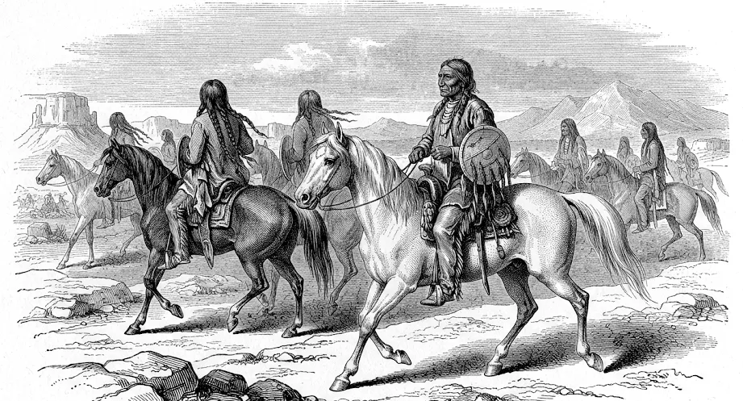
Al otro lado del Pecos la tierra cambiaba. La llanura seguía, pero ya no era lisa: se levantaba en lomas largas, cubiertas de sabinas y de piñones, y de vez en cuando, en el horizonte, una mesa de piedra roja con las paredes cortadas a pico, como una fortaleza. Las montañas estaban cada día más cerca. Por las mañanas se veía la nieve de las cumbres, rosa con el primer sol.
Las siete familias del este iban sin prisa, porque llevaban mucho que cambiar en Pecos: pieles, carne seca, caballos. Por las tardes acampaban pronto, junto a un ojo de agua o un arroyo, y las mujeres montaban las tiendas mientras los hombres soltaban la manada y los niños corrían a buscar leña de sabina, que arde despacio y huele a resina.
Francisco se pasaba las tardes con los caballos. Con Canelo, que ya lo seguía como un perro, y con el tordo viejo, que se cansaba mucho y al que había que dejar descansar cada pocas horas. Oso Pequeño iba con él. No hablaban mucho. Miraban los caballos. A veces Francisco le enseñaba algo: cómo mirarle los dientes a un potro para saber su edad, cómo saber por el casco si un caballo se ha criado en tierra blanda o en piedra, cómo hacerle una cura a una herida de silla con grasa y ceniza. Cosas que le había enseñado el viejo.
Por las noches, seguía contando.
Lo de la paz empezó por un caballo. Como todo.
Después de que vinieran los taovayas con Vial a San Antonio, en febrero, el gobernador Cabello se puso a pensar. No pensaba en los taovayas. Pensaba en los comanches. Los comanches del este llevaban años robando caballos en Texas. Bajaban a los ranchos de San Antonio y de la Bahía, se llevaban las manadas enteras, mataban a los vaqueros que se ponían delante, y desaparecían en la llanura. Los soldados del presidio salían detrás y no los alcanzaban nunca. Los caballos españoles no podían con los caballos comanches. Y desde México le escribía el virrey, una carta tras otra, diciéndole que tenía que hacer la paz con los comanches como fuera.
Pero nadie sabía cómo hablar con los comanches. Nadie había ido nunca a sus campamentos a pedir la paz y había vuelto vivo.
Entonces Vial le dijo que él iba. Que conocía a los taovayas, que eran amigos de los comanches, y que ellos lo llevarían. Pero que necesitaba a alguien que hablara comanche de verdad. No de feria. Como un comanche.
Me llamaron. Me lo preguntó el gobernador en persona, delante de Vial, en la sala grande de la casa de gobierno. Si quería ir.
Tardé en contestar. Ir a los comanches era volver a los comanches. A los que me habían cogido. A los que me habían vendido. A los que me habían querido también, alguno. Era volver a la llanura, de la que me había escapado un año antes en lo alto de una loma, con un cuchillo y un caballo que no era mío.
Pensé en el viejo. En lo que me decía cuando íbamos con los caballos: que el que habla dos lenguas tiene que servir de puente, o lo pisan desde los dos lados.
Le dije que sí.
Salimos el diecisiete de junio. Éramos cuatro: Vial, yo, y dos criados del presidio para ayudar con las mulas. Llevábamos regalos para los comanches por valor de cuatrocientos treinta pesos, que era más dinero del que yo había visto junto en mi vida: cuchillos, muchos, cientos; puntas de flecha de hierro; tabaco en rollos; paño rojo y azul; bermellón para pintarse la cara, en saquitos de piel; espejos pequeños; cuentas de vidrio de todos los colores; listones de seda; tijeras, leznas, agujas; y algunos bastones de mando con puño de plata para los jefes. Todo cargado en mulas, envuelto en mantas, atado con cuerdas.
Y caballos. Un caballo para cada uno, y dos de remuda. Buenos caballos españoles, grandes, de silla. El mío era un bayo de seis años, alto, fuerte, que no sabía nada de la llanura. Le tuve que enseñar a beber en los charcos sin meter las patas, a no espantarse con los cíbolos, a seguir a los otros en la oscuridad. Le hablé en castellano todo el camino. Al final del viaje, me seguía.
No fuimos derechos al norte. Fuimos al este primero, a Nacogdoches, una villa pequeña de españoles metida en unos bosques de pinos tan altos y tan espesos que a mediodía parecía de noche. Allí vivían los tejas, unos indios que siembran y viven en casas de hierba como los taovayas, y que eran amigos de los españoles y de los taovayas. Estuvimos unos días esperando a que llegaran unos jefes taovayas que nos iban a llevar. Me comieron los mosquitos. Vial se reía de mí.
El veintitrés de julio salimos de Nacogdoches con ellos, hacia el norte y el poniente. Hacia los pueblos de los taovayas.
Volví al pueblo de hierba un año después de haberme escapado.
No sé cómo explicaros lo que sentí. Llegué montado en un caballo español, con sombrero, con camisa de lienzo, con un bastón de mando del rey para el jefe en la alforja, al lado de Vial, como enviado del gobernador de Texas. Al mismo pueblo donde había cavado diez años con la azada de los cautivos. Donde me habían pintado la cara sujetándome entre dos.
Me reconocieron todos. Los niños corrían detrás de mi caballo gritando. Las mujeres salían de los campos, con las azadas en la mano, a mirarme. Algunos hombres me miraban con rabia: me había escapado, había robado el mejor caballo, y ahora volvía montado en otro, como un señor.
Y entre la gente, a la puerta de su casa de hierba, vi a Ojo de Mapache. Mi amo. El que me había querido vender a los franceses.
No dijo nada. Me miró pasar. Yo no lo miré.
Aquella noche, en la casa grande del jefe, mientras Vial hablaba con los taovayas de la paz y yo traducía, entró Ojo de Mapache y se sentó en un rincón. Estuvo toda la noche callado, escuchando. Al final, cuando ya nos íbamos a dormir, se levantó, vino hasta mí y me puso en las manos la cuerda de un caballo.
Era el castaño. El que me había llevado al escaparme. El que me había quitado el capitán del presidio en San Antonio y que, por caminos que no sé, había vuelto a sus manos en alguna feria.
—Es tuyo —me dijo en taovaya—. Te lo ganaste.
Se fue sin decir nada más.
Los taovayas no son malos. No son buenos. Son como todos.
Los comanches del este estaban acampados en el río que los españoles llaman Little Wichita, al norte del río Rojo, en una vega grande con álamos y nogales. Tardamos días en llegar, guiados por los taovayas. Cuando llegamos a la vista del campamento, los taovayas se pararon y nos dijeron que siguiéramos solos. Que ellos no entraban. Que era cosa nuestra.
Vial me miró.
—Tú primero —me dijo—. Tú eres el que habla.
Bajé del caballo antes de llegar, como se hace. Dejé las armas atadas a la silla, como se hace. Y me acerqué a pie, llevando el caballo de la cuerda, con Vial detrás, hacia aquellas tiendas. Cientos. Con los caballos por todas las lomas, miles, como en el campamento de Cinco Pájaros. Con el humo de los fuegos subiendo derecho en la tarde. Con los perros que salían ladrando y los niños detrás de los perros y los hombres detrás de los niños, con las armas en la mano.
Me paré delante de ellos y hablé en comanche.
No me acuerdo de lo que dije. Algo como: vengo de paz, soy de los vuestros, os traigo palabras de un jefe de los españoles. Me acuerdo de que me temblaba la voz y de que hablaba demasiado deprisa. Y de que, cuando terminé, nadie dijo nada durante mucho rato.
Después un hombre viejo, con el pelo cortado muy corto, casi rapado, que estaba delante de todos, se adelantó y me miró la cara muy de cerca. Los ojos pintados. El pelo con la coleta de español. La camisa de lienzo.
—Hablas como los del norte —me dijo—. ¿De qué campamento eres?
Le dije el nombre del campamento de Cinco Pájaros. El de Toro Flaco. El de Pájaro Gris.
El viejo se quedó callado. Luego dijo un nombre, despacio.
—Pájaro Gris. El de los caballos de la estrella.
—Ese.
El viejo se volvió hacia los suyos y les dijo algo que no oí. Y luego me cogió del brazo y me llevó a su tienda.
Se llamaba Cabeza Rapada. Era, con Camisa de Hierro, el jefe principal de los comanches del este. A los dos los había elegido toda la nación por lo que habían hecho en la guerra, y lo que ellos decían en el consejo no lo discutía nadie. Había cambiado caballos con Pájaro Gris en su juventud. Me dijo que el viejo le había vendido una vez un potro gris con una estrella que fue el mejor caballo que había tenido en su vida.
Estuvimos en los campamentos de los comanches del este casi dos meses.
Fueron días de hablar. De sentarse en círculo en la tienda grande del consejo, con todos los jefes, y fumar, y callar, y hablar, y callar otra vez. Los comanches no tienen prisa para nada que importe. Cada jefe tenía que hablar, y cada uno hablaba mucho, de sus muertos. De las viruelas de cuatro años antes, que se habían llevado a la tercera parte de su gente y habían dejado tiendas enteras vacías, con los caballos esperando delante a dueños que no salían. De sus otros muertos, de sus agravios, de los caballos que les habían robado los españoles, de los comanches que habían matado los soldados de San Antonio, de los lipanes, que eran amigos de los españoles y enemigos de los comanches, y de por qué iban a fiarse ahora de un francés y de un cautivo. Yo traducía todo. Todo. Lo que decían ellos a Vial y lo que decía Vial a ellos. Y a veces, cuando Vial decía algo que yo sabía que los comanches iban a entender mal, lo decía de otra manera, a la manera comanche. Y cuando los comanches decían algo que Vial no iba a entender, se lo explicaba después, a solas.
Así se hace la paz. No con lo que se dice. Con lo que se entiende.
Vial repartió los regalos poco a poco, día a día, jefe a jefe, como se hace. Los cuchillos, el tabaco, el paño, el bermellón, los espejos. Los bastones de mando para los jefes que se comprometieran. Los comanches los cogían sin dar las gracias, porque así es: entre los comanches, el que da es el que queda bien, no el que recibe.
Y luego empezaron a dar ellos. Caballos.
Un comanche no hace la paz sin dar caballos. Es la manera de decir que va en serio. Cabeza Rapada nos dio seis. Otros jefes, tres, cuatro. Al final del consejo teníamos más de veinte caballos más de los que habíamos traído. Vial no sabía qué hacer con ellos. Yo sí: los cuidé, los junté, los llevé. Les hablé en castellano.
En el campamento de Cabeza Rapada había cautivos. Como en todos.
Los vi el primer día. Un muchacho lipán de diez o doce años que cuidaba los caballos de un guerrero, con las piernas llenas de cicatrices de látigo. Dos mujeres tonkawas que raspaban pieles desde el alba hasta la noche, sin levantar la cabeza. Un niño pequeño, rubio, que no sé de dónde había salido, que andaba desnudo con los otros niños y que ya no sabía hablar más que comanche. Y una mujer española.
Se llamaba María. No me dijo el apellido. Era de un rancho del río de San Antonio, de abajo, de cerca de la Bahía. Los comanches la habían cogido doce años antes, con diecisiete, en una incursión en la que mataron a su padre y a sus dos hermanos delante de la casa. Ahora tenía veintinueve. Era mujer de un guerrero, la segunda mujer, y tenía tres hijos con él. Llevaba el pelo cortado, la cara pintada en las mejillas, un vestido de piel de ciervo con flecos, los pies en mocasines. Si no me hubiera hablado, no la habría distinguido de las otras.
Me habló una tarde, junto al río, adonde yo había bajado a dar de beber al bayo. Se acercó con un cuero de agua en la mano, como si fuera a llenarlo, y me habló en castellano, bajito, sin mirarme.
—¿Es verdad que vienes a hacer la paz?
—Es verdad.
—¿Y que en la paz van a devolver a los cautivos?
—Eso dice el gobernador. Que se los devuelvan.
Se quedó callada, llenando el cuero, sin prisa. Me miró. Tenía los ojos muy claros, verdes, en aquella cara morena de sol.
—Yo no quiero volver.
No supe qué decirle.
—Mis hijos son comanches —me dijo—. Si vuelvo, no me dejarán llevármelos. Y si me los llevo, en San Antonio serán los hijos de la cautiva. Los hijos de los indios. Nadie querrá casarse con ellos. A mí tampoco. Mi madre está muerta. Mis hermanos están muertos. ¿Adónde voy a volver?
Me lo dijo sin llorar. Como quien cuenta cuántas pieles le quedan por curtir.
—Pero no se lo digas a nadie —siguió—. Si mi marido se entera de que he hablado contigo, me pega. Y si los españoles se enteran de que no quiero volver, dirán que me he vuelto india. Que he perdido el alma.
Cogió el cuero lleno y se fue hacia las tiendas, sin volverse.
No se lo dije a nadie. Ni a Vial. Cuando Vial pidió a los jefes que devolvieran a los cautivos españoles, Cabeza Rapada le dijo que en su campamento no había ninguno. Yo traduje lo que dijo. Exactamente lo que dijo. Ni una palabra más.
Pensé mucho en aquella mujer, aquellas semanas. Pensé que yo había vuelto, y ella no quería. Que a los dos nos habían cogido igual, a punta de lanza, delante de nuestra casa. Que ella había tenido peor suerte que yo, porque a mí me había tocado el viejo, y a ella un hombre que la pegaba. Y que, aun así, ella se quedaba, y yo me había escapado.
Pensé que ser cautivo no es una cosa. Son muchas. Depende de quién te coge, de qué edad tienes, de si eres hombre o mujer, de si tienes hijos. Depende de si te pegan o no. Depende de si, al cabo de los años, te queda alguien al otro lado.
A mí me quedaban dos nombres. Ignacio Chaves. Gregoria Maese. A ella no le quedaba ninguno.
Al final, tres jefes dijeron que vendrían con nosotros a San Antonio. A ver al gobernador. A hacer la paz con él cara a cara. Cabeza Rapada y otros dos. Con sus mujeres.
Llegamos a San Antonio el veintinueve de septiembre, día de San Miguel. Vial, yo, los dos criados, los tres jefes comanches con sus mujeres, y una manada de caballos que levantaba polvo en el camino desde dos leguas.
Salió toda la villa a vernos. Los soldados con las armas en la mano, por si acaso. Los vecinos en las azoteas. Los frailes de las misiones. Los isleños, con sus mejores ropas. Las mujeres asomadas a las ventanas con las mantillas puestas. Los niños subidos a las tapias. Nunca habían visto a un comanche entrar en San Antonio sin robar nada.
El gobernador Cabello nos recibió en la plaza, de uniforme, con la casaca azul, el sombrero de tres picos y la espada. Abrazó a los jefes comanches uno por uno. Los jefes se dejaron abrazar, muy tiesos, sin saber qué hacer con los brazos. Luego le dieron al gobernador sus pipas para que fumara, y fumó. Tosió. Los comanches se rieron. Él también.
Los jefes se quedaron casi tres semanas en San Antonio. Tres semanas de fiestas. De comidas en la casa de gobierno, con vino y con dulces, que a los comanches no les gustaban. De bailes en la plaza, de los españoles y de los comanches, unos detrás de otros, mirándose. De misas, a las que los jefes asistían de pie, al fondo de la iglesia, con los brazos cruzados, por cortesía. De regalos y más regalos. Las mujeres de los jefes recorrían las tiendas de la villa tocándolo todo, y los tenderos les regalaban cosas por miedo.
Yo estaba en todo. Traduciendo. Comiendo poco. Durmiendo poco.
Y en octubre se firmó la paz.
Los comanches se comprometían a no atacar más los ranchos ni las misiones de Texas. A avisar al gobernador cuando fueran al sur a pelear contra los lipanes y los mescaleros, que eran enemigos de los dos. A devolver a los cautivos españoles que tuvieran. Y los españoles se comprometían a no ayudar a los lipanes, a dejar que los comanches comerciaran, y a darles regalos todos los años. Lo que les quitaran a los lipanes en la guerra sería suyo, menos los caballos que llevaran el hierro de un español: esos se devolvían. Y el gobernador mandaría tratantes que les dieran, a cambio de pieles, todo lo que necesitaran.
No se firmó con papel. Los comanches no saben escribir. Se firmó con palabras, fumando, con las manos juntas, y después el escribano lo escribió todo en un libro, y el gobernador lo firmó. Yo puse una cruz al pie, porque tampoco sabía escribir.
Mi cruz está en ese libro. En San Antonio. Si alguno de vosotros va alguna vez y sabe leer, la verá.
La paz casi se rompe antes de empezar.
Los lipanes se enteraron. Los lipanes vivían cerca de San Antonio, en los ríos del sur, y eran amigos de los españoles y enemigos a muerte de los comanches. Cuando supieron que los españoles habían hecho la paz con sus enemigos, se volvieron locos de rabia. Se juntaron fuera de la villa, en el monte, ciento cincuenta y ocho guerreros, a esperar a que los jefes comanches salieran de San Antonio para matarlos en el camino.
El gobernador lo supo. Mandó soldados a escoltar a los jefes hasta muy lejos, hasta la llanura. Yo fui con ellos. Los lipanes nos siguieron dos días, desde las lomas, sin atreverse a atacar. Los veíamos en lo alto, a caballo, quietos, mirándonos. Cabeza Rapada los miraba también. No decía nada.
La segunda noche, junto al fuego, me dijo una cosa.
—Los españoles han hecho la paz con nosotros —me dijo— y han hecho enemigos a los lipanes. Han hecho la paz con los lipanes y han hecho enemigos a nosotros. Siempre es así. Una paz aquí es una guerra allí.
—Sí —le dije—. Pero es mejor que nada.
Cabeza Rapada se quedó pensando.
—Tu viejo, Pájaro Gris, ¿qué diría?
Me acordé del viejo. De las noches con los caballos, en la nieve.
—Diría que al otro lado hay alguien como tú —le dije.
Cabeza Rapada se rio. Era una risa de viejo, ronca.
—Eso lo dicen los viejos cuando ya no pueden ir a la guerra.
Pero aquella noche, cuando lo dejamos en el borde de la llanura con sus mujeres y sus regalos, al despedirse, me dio un caballo. Un caballo pinto, blanco y castaño, de los suyos. Y me dijo que, si alguna vez volvía a pasar por su campamento, tendría tienda y comida.
En el campamento al otro lado del Pecos, Francisco se calló.
Hacía rato que se había hecho de noche del todo. Las estrellas eran tantas que parecían polvo. El lucero de la tarde se había puesto ya detrás de las montañas.
—¿Y duró? —preguntó Oso Pequeño—. La paz.
Francisco se encogió de hombros.
—Duró a ratos. Unas veces sí, otras no. Los comanches del este siguen robando caballos en Texas de vez en cuando, y los soldados siguen saliendo detrás de vez en cuando. No es como la vuestra, la de Nuevo México, la de Ecueracapa y el gobernador Anza. Esa dicen que es más fuerte.
Se quedó mirando el fuego.
—Pero hay ranchos en San Antonio que llevan temporadas enteras sin perder un caballo. Y hay niños en San Antonio que no saben lo que es que se lleven a su hermano. Eso hice yo. Con Vial. Hablando.
Tocó la cruz de latón, por fuera de la camisa.
—Se lo debo a él. A Tomás. Si no me hubiera hecho repetir los nombres, me habría olvidado de que era español. Y si no me hubiera enseñado los caballos, me habría olvidado de que era comanche. Y entonces no habría podido hablar con los dos.
Oso Pequeño no dijo nada. Pensó en el anciano del tipi, que había hablado cuatro lenguas al morir. Y pensó que aquel hombre de los ojos pintados era lo que el viejo había dejado en el mundo. Más que los caballos. Más que el cuaderno.
Lo que el viejo había dejado era un puente.
La última loma
Al oeste del río Pecos, camino de Nuevo México · finales de mayo de 1792
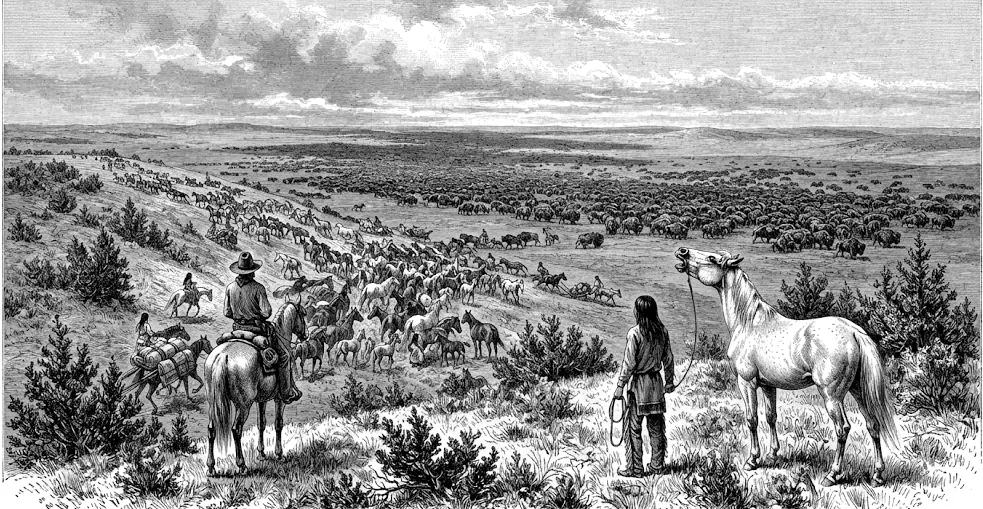
Se lo encontraron una mañana, a tres días del pueblo de Pecos, en un llano de hierba alta salpicado de sabinas.
Primero vieron el polvo. Una nube pequeña, baja, que venía hacia ellos desde el poniente, desde las montañas. Los hombres de las siete familias se pusieron alerta, con las manos en las armas, porque en la llanura una nube de polvo puede ser cualquier cosa: cíbolos, yutas, apaches, soldados. Luego, cuando se acercó, vieron que eran pocos. Tres hombres a caballo, con dos mulas de carga. Y que el de delante llevaba sombrero.
Francisco se adelantó en Canelo, se puso la mano sobre los ojos para que no le diera el sol, y miró mucho rato.
Se echó a reír.
Era Vial. Pedro Vial. Más viejo, más gordo, con la barba gris ya del todo, montado un poco torcido en un caballo castaño, como siempre, como montan los que no se criaron a caballo. Con él venían dos muchachos de Santa Fe, dos mozos jóvenes, flacos, asustados de ver tanto comanche junto. Había salido de Santa Fe una semana antes, el veintiuno de mayo, por orden del gobernador de Nuevo México, don Fernando de la Concha. Iba a abrir un camino nuevo. De Santa Fe a San Luis de los Ilinueses, el pueblo de los españoles y los franceses junto al río grande del este, al otro lado de toda la llanura. Nadie lo había hecho nunca.
—Y tú —le dijo a Francisco, sin bajarse del caballo, mirándolo de arriba abajo—, ¿qué haces aquí, con tantos comanches, tan lejos de San Antonio?
—Voy a casa —dijo Francisco.
Vial se quedó callado un momento. Luego se bajó del caballo, despacio, con un gruñido, porque ya le dolían las rodillas, y lo abrazó. Allí mismo, en medio de la hierba, delante de las siete familias, de Oso Pequeño y de los dos mozos de Santa Fe, que no entendían nada.
—Ya era hora, muchacho —le dijo al oído—. Ya era hora.
Acamparon juntos aquella noche, en un ojo de agua con unos álamos. Vial no tenía prisa. Dijo que San Luis no se iba a mover de su sitio. Los comanches del este lo conocían de la paz, y lo recibieron con respeto, y le dieron carne, y fumaron con él. Los dos mozos de Santa Fe no se separaron de Vial en toda la noche.
Vial y Francisco hablaron hasta tarde, junto al fuego, en castellano. Oso Pequeño estaba sentado al lado y no entendía casi nada, pero miraba. Vio que Vial sacaba un cuaderno de su alforja, uno de tapas de cuero, nuevo, y escribía algo con una pluma, mojándola en un tintero pequeño de cuerno. Vio que Francisco le contaba algo largo, señalando al caballo tordo, que dormía de pie junto al fuego, y a él, a Oso Pequeño. Vio que Vial le miraba, y miraba al caballo, y luego escribía más.
Al final Francisco sacó de su bolsa el cuaderno de Diego, envuelto en su piel, y se lo enseñó a Vial.
Vial lo cogió con mucho cuidado, como se coge una cosa que se puede romper. Lo abrió. Pasó las hojas sin prisa, a la luz del fuego. Leyó un poco aquí, un poco allá, moviendo los labios. Leyó la última página. La de la carta. Y luego miró las cinco letras rojas y torcidas del final.
Estuvo mucho rato callado.
—Ordóñez —dijo luego—. En Santa Fe.
—¿Lo conoce?
Vial negó con la cabeza.
—A él no. Murió antes de que yo naciera. Con Villasur, ahí lo pone. Pero en Santa Fe, en el barrio de San Miguel, al otro lado del río, hay una fragua. La de un herrero viejo, Baca, que se murió hace unos años. Le compraba yo el hierro cuando llegué. Su viuda vive todavía, en la casa de detrás de la fragua. Una vieja muy vieja, muy derecha, que va a misa todos los días a la capilla de San Miguel. —Vial se quedó mirando el fuego—. Se llama Ana. Y su padre era soldado. Me lo dijo una vez. Que su padre había muerto con Villasur.
Francisco se calló. Oso Pequeño no entendió nada. Pero vio que él le cogía la mano a Vial y se la apretaba, fuerte, mucho rato, y que Vial lo dejaba.
A la mañana siguiente, antes de separarse, Vial se acercó al caballo tordo. Lo miró por todos lados. Le levantó una pata. Le abrió la boca. Le pasó la mano por el lomo, como un tratante en una feria.
—Es muy viejo —dijo—. No llegará a muchos más inviernos.
—Ya lo sé —dijo Francisco.
—Pero tiene una cosa —siguió Vial—. Se le ve en la cabeza. En cómo la levanta. Tiene sangre de los caballos de los primeros españoles, de los de Oñate, de los que trajeron de Andalucía. Me lo enseñó a ver un viejo tratante de Natchitoches, cuando yo era joven. Ya no quedan así. En Santa Fe los han cruzado con todo. Este no.
Se volvió hacia Oso Pequeño y le dijo algo. Francisco lo tradujo.
—Dice que lo cuides. Que no lo cambies por nada. Que lo que tienes ahí es más viejo que todos nosotros.
Oso Pequeño asintió.
Luego Vial montó, torcido, con un gruñido, y se fue hacia el este, hacia el Pecos, hacia el río grande del este y los pueblos de los franceses, con sus dos mozos asustados y sus mulas. Francisco lo miró irse hasta que la nube de polvo se perdió entre las sabinas.
No lo volvió a ver en muchos años.
Dos días después llegaron al borde de la llanura.
No se veía hasta que se estaba encima. La tierra iba subiendo poco a poco, durante toda la mañana, tan despacio que no se notaba, en lomas largas cubiertas de hierba y de sabinas. Y de pronto, al llegar a lo alto de la última, se acababa. Delante, hacia el poniente, la tierra bajaba en cañones y en mesas de piedra roja, y empezaban los montes de pinos, y luego las montañas, altas, azules, con nieve en las cumbres. Nuevo México. El valle del río. Atrisco.
Detrás, hacia el oriente, estaba la llanura.
Las siete familias siguieron adelante, bajando ya hacia los cañones, hacia Pecos. Pero Francisco detuvo a Canelo en lo alto de la loma, y se volvió en la silla, y se quedó mirando hacia atrás.
Oso Pequeño se paró a su lado, con el caballo tordo de la cuerda.
Lo que vieron fue esto.
La llanura entera, hasta el borde del mundo, verde de primavera, con las sombras de las nubes corriendo encima, despacio, como manchas de aceite sobre el agua. Sin un árbol. Sin un pueblo. Sin un humo. Lisa como la palma de una mano, hasta un borde lejano donde se juntaba con el cielo.
Pero no estaba vacía.
Abajo, en la ladera larga por la que acababan de subir, la manada de las siete familias venía sin prisa, pastando por el camino la hierba nueva. Trescientos caballos, quizá más. Grises, bayos, castaños, negros, pintos, alazanes. Con los potros del año corriendo entre las patas de sus madres, saltando, mordiéndose, levantando las colas. Con los muchachos comanches a caballo alrededor, cuidándolos, gritándose de un lado a otro, colgados del costado de sus caballos por juego, como les había enseñado alguien que se lo enseñó a otro que se lo enseñó a otro. Entre ellos, hijos y nietos del caballo tordo. Media docena, con la estrella.
Y más allá, mucho más allá, cubriendo la llanura como cubre la sombra de una nube, despacio, oscura, moviéndose, una manada de cíbolos. Miles. Tantos que no se veía dónde empezaba ni dónde acababa. Tantos que la llanura, allí, no era verde, sino parda, y se movía como se mueve el agua de un lago cuando sopla el viento. Se oía desde la loma. Un ruido sordo, bajo, continuo, que no se sabía si era el viento o la tierra.
Francisco estuvo mirando mucho rato.
—Así la vio Diego —dijo por fin, en castellano. Oso Pequeño lo entendió, porque había empezado a entender alguna cosa—. Desde las montañas. El primer día. Vacía. Como el mar. Lo pone en el cuaderno.
Se quedó callado.
—Y ahora mírala.
Oso Pequeño la miró. Los caballos. Los cíbolos. Los muchachos que galopaban. Las mujeres de las siete familias, abajo, bajando por la ladera con los arrastres cargados, con los niños dormidos encima de la carga, atados para que no se cayeran. Su abuela, la lipana, a caballo, muy derecha, delante de todas. Hierba Alta con su hijo a la espalda.
Pensó en el anciano del tipi, que había dicho que hubo un tiempo en que en toda esta llanura no había un solo caballo. Pensó que no se lo había creído. Pensó que ahora sí.
Pensó también, sin saber por qué, en otra cosa. En que una llanura que había estado vacía y ahora estaba llena podía volver a vaciarse. En que nada de lo que tenía delante había estado siempre ahí. En que el anciano había dicho que el perro sagrado es de quien mejor lo sabe usar, y no de quien lo tuvo primero. Y en que quizá algún día vendría alguien que lo supiera usar mejor que los comanches.
No se lo dijo a nadie. Se lo guardó.
El caballo tordo levantó la cabeza.
Llevaba toda la mañana con ella baja, cansado, arrastrando los cascos. Pero ahora la levantó, con las orejas tiesas hacia el oriente, hacia la llanura, y se quedó mirando. Muy quieto. Las aletas de la nariz abiertas, oliendo el viento que subía de abajo, que olía a hierba nueva y a polvo y a cíbolo y a caballo.
Relinchó. Alto, largo, como había relinchado en el barranco la mañana que murió el viejo. Un relincho que bajó por la loma y se fue por la llanura.
Abajo, en la manada, cientos de caballos levantaron la cabeza a la vez. Y le contestaron.
Francisco se bajó de Canelo. Se acercó al tordo por delante, despacio, con la mano baja. Le sopló en los ollares. Le apartó el flequillo de la frente, ya blanco del todo, y le tocó la estrella con el dedo.
—Ya está, abuelo —le dijo en castellano—. Ya está. La has traído hasta aquí.
Oso Pequeño no supo si se lo decía al caballo o a otro.
Bajaron a Pecos aquella tarde.
Pecos era un pueblo grande de barro, viejísimo, en una loma junto a un río, con una iglesia enorme de adobe, más grande que ninguna que Oso Pequeño hubiera visto, con las paredes altas como barrancos. Pero estaba medio vacío. Muchas casas tenían los techos hundidos, las escaleras rotas, las puertas tapadas con piedras. Los de Pecos se habían muerto de las viruelas, de las guerras con los comanches, de hambre, de irse a otros sitios. Quedaban pocos. Los que quedaban salieron a ver llegar a las siete familias, sin miedo ya, porque desde la paz los comanches venían a Pecos a comerciar y no a matar.
Las siete familias se quedaron en Pecos, acampadas en el llano junto al pueblo, para la feria. Lo habían venido a hacer.
Al día siguiente empezó la feria.
Oso Pequeño no había visto nunca una cosa así. Los de Pecos bajaron al llano con lo que tenían: maíz en sacos de piel, harina de trigo, panes redondos y duros cocidos en hornos de barro, calabazas secas cortadas en tiras, chile colgado en ristras, cuchillos viejos, cazos de cobre, mantas de lana de colores tejidas por los pueblos del río. Y detrás de los de Pecos vinieron otros, en carros de bueyes que chirriaban como animales heridos, con ruedas de madera maciza, sin rayos: vecinos españoles de los ranchos de alrededor, con sombreros de ala ancha, con mantas al hombro, con mulas cargadas, con hijos pequeños que se escondían detrás de las piernas de sus padres para mirar a los comanches.
Los comanches pusieron en el suelo lo suyo: pieles de cíbolo curtidas, blancas y suaves, con dibujos por dentro; carne seca en fardos; sebo en vejigas; pieles de ciervo; y caballos. Sobre todo caballos. Los muchachos los traían de la manada de diez en diez, y los españoles se acercaban, los miraban, les abrían la boca, les palpaban las patas, discutían.
Se cambiaba todo por todo. Una piel de cíbolo por un saco de maíz. Un caballo bueno por un cuchillo, una manta y dos sacos de harina. Un caballo muy bueno por una brida de hierro con la cadenilla. Nadie usaba dinero. Hierba Alta cambió dos pieles pintadas por una olla de barro negro de las que hacen las mujeres de los pueblos, y por un puñado de cuentas de vidrio azul, y volvió a la tienda con la olla en la cabeza, muy contenta. La abuela lipana cambió un cuero de ciervo por una bolsa de azúcar oscuro, en terrones, que los españoles llamaban piloncillo, y se pasó la tarde chupando un terrón y mirando a los españoles sin decir nada.
Oso Pequeño no cambió nada. Fue con Francisco al pueblo, por la cuesta, entre las casas medio hundidas, hasta la iglesia grande. Por dentro estaba fresca y oscura y olía a cera y a humedad. Las paredes eran tan gruesas como un hombre tumbado. Al fondo, en lo alto, había un altar de madera pintada, con santos de caras tristes y una mujer vestida de azul con las manos juntas. Una vieja de Pecos, envuelta en un manto negro, rezaba de rodillas en el suelo de tierra, moviendo los labios.
Francisco se quitó el sombrero. Se arrodilló junto a la vieja. Se santiguó, como quien se acuerda de algo con las manos antes que con la cabeza.
Oso Pequeño se quedó de pie, en la puerta.
Al salir, Francisco no dijo nada durante mucho rato. Luego, cuando ya bajaban la cuesta hacia el campamento, se paró y escuchó. En la torre de la iglesia, alguien tocaba la campana. Una campana pequeña, cascada, que sonaba como un cazo golpeado.
—Hacía veintidós años —dijo— que no oía una campana en Nuevo México.
Francisco no se quedó.
—Mañana me voy a Santa Fe —le dijo a Oso Pequeño aquella noche—. Y luego a Atrisco. Ya no está lejos. Tres días.
Se quedó callado un momento.
—¿Vienes?
Oso Pequeño miró a su abuela. La vieja lipana estaba sentada junto al fuego, con la cara arrugada vuelta hacia las montañas del poniente, que ya no se veían en la oscuridad.
—Ve —le dijo ella, sin volverse—. Termina lo que te mandaron.
Oso Pequeño asintió.
—Voy —le dijo a Francisco—. Y llevo al tordo.
El cuaderno vuelve a casa
De Pecos a Santa Fe y a Atrisco · junio de 1792
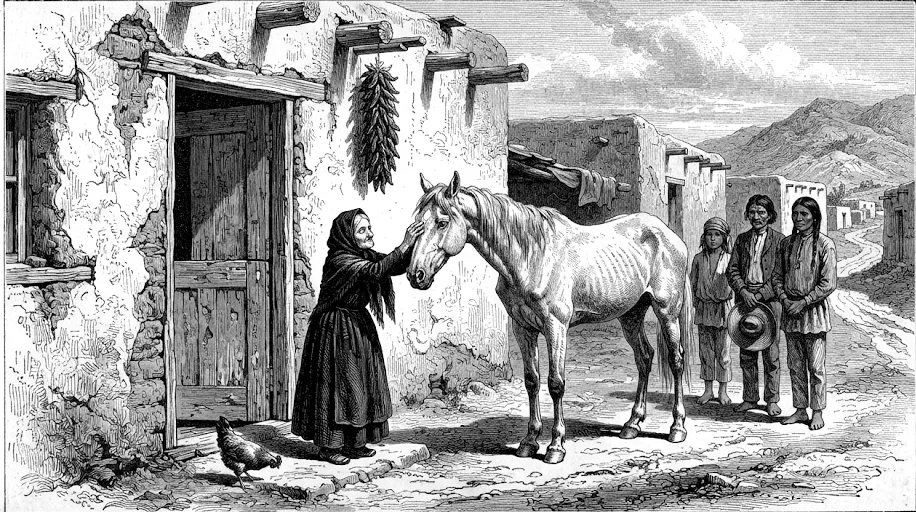
Salieron de Pecos con la primera luz, los dos solos, con cuatro caballos: Canelo, el bayo de Francisco, el tordo viejo, que iba suelto detrás, sin cuerda, porque ya no hacía falta y seguía a Oso Pequeño a todas partes, y una potra gris de dos años, hija del tordo, con la estrella blanca en la frente. La potra la había sacado Oso Pequeño de la manada de las siete familias la noche antes, sin decir para qué. Francisco no preguntó. Un comanche no llega a casa de nadie con las manos vacías.
El camino subía por un cañón estrecho entre montes de pinos. Hacía frío a la sombra. El arroyo corría al lado, con el agua clara, entre piedras redondas, y en las orillas había fresas silvestres, pequeñas, que Oso Pequeño no había visto nunca y que Francisco cogía a puñados sin bajarse del caballo, inclinándose de lado en la silla como un comanche. Olía a pino y a tierra mojada. Pasaron junto a ranchos pequeños de españoles, metidos en los claros del bosque: una casa de troncos o de adobe, un corral, un campo de trigo verde, un perro que salía ladrando, una mujer que se asomaba a la puerta, veía a un comanche y a un hombre con los ojos pintados, y se metía dentro deprisa y cerraba.
—Antes —dijo Francisco— no habría cerrado. Habría gritado.
A mediodía pararon en un paso, en lo alto, donde el camino dejaba de subir. Oso Pequeño se volvió en la silla para mirar atrás. Ya no se veía la llanura. Solo montes, pinos, y el cielo.
Se dio cuenta de que era la primera vez en su vida que no la veía.
Santa Fe estaba en un llano al pie de las montañas, junto a un río pequeño que bajaba de la sierra entre álamos. Desde lejos parecía un montón de tierra. Después, más cerca, se veía que eran casas. Casas de barro, bajas, del color del suelo, con los techos planos y las vigas asomando por las paredes como huesos, desperdigadas a lo largo del río sin orden ninguno, cada una con su huerta, su corral, su horno de barro con forma de colmena. Humo de leña de piñón saliendo de todas. Campos de maíz y de trigo alrededor, regados con acequias. Y en medio, una plaza grande, de tierra, con una casa muy larga en un lado, con soportales, y una iglesia en el otro, con dos torres.
—La casa de los gobernadores —dijo Francisco, señalando la casa larga—. Ahí estuvo Diego, el día que salieron hacia la llanura. Lo pone en el cuaderno. Las mujeres estaban en la plaza.
Entraron por la calle del río, despacio. La gente se paraba a mirarlos. Ya no tenían miedo de los comanches: desde la paz venían a menudo, a ver al gobernador, a cambiar cosas. Pero miraban a Francisco. Un hombre vestido de español, con sombrero, montado como un comanche, con los ojos pintados. Un niño le señaló con el dedo y su madre le bajó el brazo de un manotazo.
Cruzaron el río por un vado y entraron en el barrio de San Miguel, al otro lado. Era un barrio pobre, de casas más pequeñas, más juntas, con las paredes desconchadas. Los indios de los pueblos que servían en la villa vivían allí, y los mestizos, y los genízaros, que eran los indios de otras tierras rescatados de los comanches y los apaches, criados por los españoles, sin pueblo propio. Gente como Tomás. Como Francisco, casi.
La capilla estaba al fondo de una calle de tierra, una iglesia pequeña, vieja, de adobe, con una sola torre baja y una cruz de madera encima. Detrás, como había dicho Vial, había una fragua. El horno apagado, frío. El yunque, oxidado, bajo un cobertizo de ramas. Y detrás de la fragua, una casa de dos piezas con la puerta pintada de azul, desconchada, y una ristra de chiles rojos colgada de una viga, y una gallina picoteando en el umbral.
Francisco se bajó del caballo. Se quitó el sombrero. Se pasó la mano por el pelo.
Oso Pequeño vio que le temblaba.
Abrió un muchacho. Quince o dieciséis años, flaco, con los pies descalzos y un pañuelo atado a la cabeza. Miró a Francisco, miró a Oso Pequeño, miró los caballos, y se quedó con la boca abierta.
—Busco a doña Ana —dijo Francisco—. La hija del cabo Diego Ordóñez.
El muchacho tardó en contestar.
—Es mi abuela —dijo por fin—. Está dentro. Está muy vieja. No ve casi.
—Dile que le traigo una cosa de su padre.
El muchacho se metió dentro. Oyeron voces, una voz joven y otra cascada, lenta. Luego el muchacho salió otra vez y les dijo que pasaran.
La casa era oscura y fresca, con el suelo de tierra apisonada, barrido. Olía a humo, a chile y a cera. En la pared del fondo, en un nicho, había un santo de madera pintada, muy viejo, con una vela encendida delante. Había un banco de adobe pegado a la pared, cubierto con una manta de lana, y en el banco, sentada muy derecha, con las manos en el regazo y un rosario de cuentas negras entre los dedos, una mujer muy vieja.
Era pequeña. Tenía la cara morena, arrugada como una manzana de invierno, y el pelo blanco del todo, recogido en un moño en la nuca, bajo un pañuelo negro. Los ojos, blanquecinos, miraban un poco por encima de ellos, hacia la puerta, hacia la luz. Vestía de negro, de viuda, con una toquilla de lana sobre los hombros aunque ya era junio.
—¿Quién es? —preguntó.
Francisco se arrodilló delante de ella, en el suelo de tierra.
—Me llamo Francisco Xavier Chaves, señora. Soy de Atrisco. Me cogieron los comanches de niño. —Se calló un momento—. Le traigo una cosa que le manda Tomás.
La vieja no se movió. Pero los dedos se le pararon en las cuentas del rosario.
—Tomás —dijo.
—Tomás. El de la manta. El de la yegua de su padre.
La vieja se quedó mucho rato callada. Fuera cacareaba la gallina. El muchacho, junto a la puerta, no se atrevía ni a respirar.
—Mi madre me hablaba de él —dijo la vieja por fin, despacio, como si sacara las palabras de muy hondo—. Del niño que se quedó con los apaches. Que mi padre lo buscó y no lo encontró. Rezábamos por él. Todas las noches, de pequeña, después del rosario. Un padrenuestro por el abuelo, otro por mi padre, que estaba en la llanura y no volvió, y otro por Tomás, que estaba en la llanura y no volvió. Yo no sabía quién era. Era un nombre. Un niño de una manta. —Movió la cabeza—. Cuando se murió mi madre, seguí rezando. Por costumbre. Setenta años rezando un padrenuestro por un niño que no conocía.
—Vivió, señora —dijo Francisco—. Vivió mucho. Se murió hace cinco inviernos, en la llanura. Era viejo, muy viejo. Tenía caballos. Era un hombre bueno.
No dijo nada de lo demás. De los comanches, de los apaches muertos, de la loma de Atrisco. Oso Pequeño se dio cuenta de que no lo decía.
Sacó el cuaderno de la bolsa. Le quitó la piel. Se lo puso en las manos.
La vieja lo tuvo mucho rato en el regazo, sin abrirlo, con las dos manos encima, como se tiene un pájaro. Después lo palpó. Las tapas de cuero, duras, cuarteadas. Las cuerdas. El borde de las hojas, rizado de humedad.
—No veo —dijo—. No sé leer. Mi madre sabía un poco. Yo no.
—Yo sé, abuela —dijo el muchacho desde la puerta.
La vieja volvió la cara hacia él.
—¿Tú?
—El padre Sebastián. En la doctrina. Ya lo sabe usted.
La vieja dudó. Luego le tendió el cuaderno.
El muchacho se sentó en el suelo, junto a la puerta, donde entraba la luz, con el cuaderno sobre las rodillas. Lo abrió por el principio y empezó a leer, deletreando, equivocándose y volviendo atrás, igual que había leído Juana en una tienda de la llanura muchos años antes, aunque él no lo sabía.
Empiezo este cuaderno porque mi madre me hizo prometer, cuando salí de la aldea, que escribiría todo lo que viera...
Leyó la salida de la plaza, con las mujeres llorando y la vieja que rezaba el rosario. Leyó la sierra, y Picurís, y el viejo que buscaba a su hija. Leyó la llanura sin agua y la yegua Paloma encontrando el ojo de agua, y cómo nadie lo dijo. Leyó El Cuartelejo y las mujeres de los moños. Leyó la tarde del niño muerto. No pudo leer más esa tarde. La luz se iba. Había leído tres horas.
La vieja no se había movido en todo el tiempo. Tenía los ojos cerrados y la cara mojada.
—Mañana —dijo—. Mañana sigues.
Se quedaron tres días en la casa de la puerta azul.
Durmieron fuera, en el corral, con los caballos, porque Oso Pequeño no quiso dormir bajo un techo de barro, y Francisco no quiso dejarlo solo. Por las mañanas la nuera de doña Ana, la madre del muchacho, una mujer gruesa y callada, les sacaba atole caliente de maíz azul en cuencos de barro, y tortillas, y un poco de queso de cabra, y chile verde asado. Oso Pequeño se comía el chile sin hacer gestos, aunque le lloraban los ojos, porque vio que el muchacho lo miraba esperando que los hiciera.
Por las tardes, el muchacho leía.
Leyó todo el cuaderno. La vuelta de Diego a Santa Fe en 1706, sin Tomás, buscando a su lado la manta enrollada. Las hojas sueltas de los años siguientes, pocas, con la boda de Diego, con el nacimiento de una niña, con la muerte de un caballo. Y la última página. La de la carta.
El muchacho la leyó dos veces, porque la vieja se lo pidió. Cuando llegó a que cuando nació mi hija, lo primero que pensé fue en ti, la vieja levantó la mano y el muchacho se calló.
—Esa soy yo —dijo.
Nadie dijo nada.
Al pie de la carta, el muchacho se quedó parado.
—Aquí hay otra cosa, abuela. Escrita con otra tinta. Roja. Con letras grandes, torcidas, como de niño.
—¿Qué pone?
El muchacho lo deletreó.
—Te, o, eme, a, ese. Tomás.
Doña Ana alargó la mano. El muchacho le puso el cuaderno en el regazo, abierto por esa página. La vieja buscó con los dedos, despacio, hasta que tocó las letras. Eran más gruesas que las otras, la tierra roja se había quedado un poco en relieve sobre el papel, y se podían notar con la yema del dedo. La vieja las fue tocando, una por una, de izquierda a derecha, como si las leyera.
—Lo escribió él —dijo.
—Lo escribió él —dijo Francisco—. Al final. Era lo único que sabía escribir.
La vieja cerró el cuaderno.
—Que me lo entierren conmigo —le dijo a su nuera, que estaba en la puerta de la cocina—. Encima del pecho. ¿Me oyes?
—Sí, madre.
El tercer día, por la mañana, antes de que se fueran, la vieja mandó llamar a Oso Pequeño.
Oso Pequeño entró en la casa, agachando la cabeza bajo el dintel, incómodo. La vieja estaba en su banco, con el rosario, como siempre. Le hizo señas de que se acercara. Le pidió a Francisco que tradujera.
—¿Tú eres el que estuvo con él al final?
Oso Pequeño dijo que sí.
—¿Cómo era?
Oso Pequeño pensó mucho rato. No sabía cómo se decía eso. Habló, y Francisco fue traduciendo.
—Era viejo. Tenía el pelo blanco y trenzado, con plumas grises. Tenía la cara pintada. Hablaba cuatro lenguas. Vivía solo, en un barranco, con un caballo viejo. Contaba bien. Toda la noche contó, y nadie se durmió. Cuando se murió, el caballo relinchó. —Oso Pequeño se calló, y luego siguió—. Ese caballo está fuera. Es el nieto del nieto del nieto de la yegua de tu padre.
La vieja se quedó muy quieta.
—¿De Paloma?
—De Paloma.
La vieja se levantó. Le costó mucho. El muchacho fue a ayudarla y ella lo apartó con la mano. Echó a andar hacia la puerta, despacio, tanteando la pared, arrastrando los pies en el suelo de tierra, y salió al sol, y se quedó en el umbral, parpadeando, con la mano puesta encima de los ojos.
Oso Pequeño fue al corral y trajo al tordo.
El caballo se acercó a la vieja sin que nadie se lo mandara. Se paró delante de ella. Bajó la cabeza. Le sopló en la cara, dos veces, como saludan los caballos.
Doña Ana alargó las manos. Le tocó la cara. Las mejillas hundidas, los ojos, las orejas, el flequillo blanco. Y en la frente, debajo del flequillo, encontró con la yema de los dedos la mancha de pelo distinto, más corto, más suave, donde estaba la estrella.
—Mi padre la tenía pintada —dijo—. En la puerta de la casa vieja. Una estrella blanca. Mi madre nunca supo por qué. Decía que eran cosas de soldado.
Se quedó así mucho rato, con las manos en la cara del caballo, en la puerta de su casa, al sol de junio, mientras la gallina picoteaba entre las patas del tordo y el muchacho miraba sin entender, y Francisco no traducía nada porque no había nada que traducir.
Salieron de Santa Fe aquella misma mañana, hacia el sur, por el Camino Real.
Era el camino de los carros. El que venía de México, de Chihuahua, de mil leguas al sur, y llegaba hasta allí, hasta el final. Bajaba por una cuesta enorme de piedra negra, La Bajada, tan empinada que los carreteros tenían que soltar los bueyes y bajar los carros a mano con cuerdas, y luego seguía el río, el río grande, el del Norte, ancho y marrón, entre álamos, por un valle verde de campos y acequias y pueblos de indios: Santo Domingo, San Felipe, Sandía. Los indios de los pueblos estaban en los campos, cavando el maíz, y se paraban a mirarlos. Las mujeres llevaban los cántaros en la cabeza, del río a las casas. Los niños bañaban a los caballos en el río.
Había caballos por todas partes. En los corrales, en los campos, atados a la puerta de las casas, arrastrando los arados, tirando de los carros, llevando a los hombres al campo y a las mujeres a misa. Caballos de los españoles y caballos de los indios. Oso Pequeño los miraba todos. Pensó en lo que le había contado el viejo. Que aquí, en este valle, en estos pueblos, empezó todo. Que de aquí salieron los primeros, robados, cambiados, escapados, hacia la llanura. Y que ahora la llanura estaba llena y aquí también.
Durmieron una noche en Bernalillo, en el campo, junto al río. Francisco no durmió. Oso Pequeño lo oyó toda la noche dar vueltas en la manta, y levantarse, y andar hasta los caballos, y volver.
Al alba lo encontró de pie junto al río, mirando hacia el sur.
—Mi madre —dijo Francisco sin volverse— ya no me va a conocer.
Oso Pequeño no supo qué decirle. Le dijo lo único que se le ocurrió, lo que le había dicho su abuela en Pecos.
—Termina lo que te mandaron.
Francisco se volvió y lo miró. Después, por primera vez en todo el viaje, se rio de verdad, con toda la cara.
—Te pareces a él —le dijo—. Al viejo. Cuando hablas poco.
Llegaron a Atrisco a media tarde del día siguiente.
Pasaron por Alburquerque sin pararse, una villa larga y desordenada de casas de barro a lo largo del río, con su iglesia y su plaza, y cruzaron el río por el vado de abajo, con el agua por la panza de los caballos, marrón, templada, tirando de las patas. Al otro lado empezaban los campos de Atrisco.
Francisco se paró en la orilla, chorreando, y miró.
Oso Pequeño no sabía qué estaba mirando. Campos de maíz, verdes, altos ya hasta la rodilla. Acequias con el agua corriendo, brillante, entre los surcos. Álamos. Casas de barro desperdigadas, cada una en su tierra, cada una con su corral y su horno y su ristra de chiles. Unas ovejas en un barbecho, con un niño detrás, con un palo. Al fondo, al poniente, unas lomas bajas, pardas, de arena y matas, y encima de las lomas, el cielo, enorme, igual que en la llanura.
—Ahí —dijo Francisco, señalando una loma—. Ahí estaba yo. Con las ovejas. Ahí me cogió.
Se quedó mirando la loma mucho rato. Oso Pequeño pensó en el viejo, a caballo, bajando de esa loma, con la cara pintada, hacia un niño que gritaba. Pensó que el viejo había visto lo mismo que él veía ahora. Los campos, el río, las casas. Y que había vuelto a la llanura con el niño delante, en el caballo, y no había vuelto a ver esto nunca.
Francisco tocó la cruz de latón, por fuera de la camisa. Luego arreó a Canelo.
No le costó encontrar la casa. Iba derecho, sin dudar, por las veredas entre los campos, como si las hubiera andado el día antes. Veintidós años. Oso Pequeño le seguía con el tordo.
Era una casa pequeña, de barro, más pequeña de lo que Francisco recordaba, dijo después. Con un corral de palos. Con un horno. Con un álamo grande delante, que no estaba, dijo después, que era un palo cuando él se fue. En el corral había dos caballos. Viejos. Un castaño y una yegua baya, con la cara blanca de años.
Junto al corral, de espaldas, un hombre viejo cepillaba a la yegua.
Lo hacía despacio, con cuidado, con un manojo de paja retorcida, de la cruz a la grupa, de la cruz a la grupa, hablándole bajito. Era un hombre flaco, encorvado, con el pelo blanco bajo un sombrero de paja roto y las manos grandes y nudosas. Llevaba una camisa de lienzo remendada y unos calzones de cuero. Cojeaba un poco al moverse.
Francisco se bajó de Canelo. Se quedó de pie, a veinte pasos, con la cuerda en la mano. No dijo nada.
El viejo oyó los cascos. Se volvió.
Miró primero los caballos. Oso Pequeño lo vio. Lo primero que miró fueron los caballos: el bayo, el potro gris de la estrella, el tordo viejo. Los miró como mira un hombre que ha tenido dos caballos toda su vida y los ha cuidado como a hijos. Miró al comanche. Luego miró a Francisco que estaba de pie delante de él, con el sombrero en la mano.
Se le cayó la paja.
No dijo nada. Se quedó así, con las manos abiertas, mirando. Oso Pequeño vio que no lo reconocía. Que miraba a un hombre de casi treinta años, moreno, curtido, con la cara pintada, y que no sabía quién era. Pero que tenía miedo de saberlo.
Entonces salió la mujer.
Salió de la casa con un cántaro en la cadera, deprisa, como salen las mujeres cuando oyen caballos y su marido no dice nada. Era vieja también, pequeña, gruesa, con un pañuelo en la cabeza y las mangas remangadas, con las manos blancas de harina. Vio al comanche. Vio los caballos. Vio al hombre del sombrero en la mano. Se paró en seco.
Francisco abrió la boca. Oso Pequeño vio que no le salía nada. Que lo intentaba y no le salía. Veintidós años repitiendo dos nombres cada noche, en una tienda comanche, en una casa de hierba, en un cuarto de presidio, y ahora no le salía nada.
Y entonces le salió la palabra de antes. La de la loma. La de aquel niño que lloraba atravesado en un caballo comanche, la tarde que el viejo lo cogió.
—Mamá.
El cántaro se rompió contra el suelo.
Oso Pequeño se apartó.
Llevó los caballos al álamo grande, los ató a la sombra, y se sentó en el suelo, con la espalda contra el tronco, mirando hacia otro lado. Hacia el río. Hacia las lomas. Hacia el oriente, donde detrás de las montañas, muy lejos, a muchos días, estaba la llanura. No quería mirar. Así se hace. Hay cosas que no se miran.
Pero oía. Oía a la mujer, que lloraba y decía un nombre, Francisco, Francisco, Francisco, una y otra vez, como Francisco había dicho los suyos durante veintidós años. Oía al viejo, que no decía nada, y decía Dios mío, Dios mío, y luego no decía nada otra vez. Oía a los vecinos, que salían de sus casas, que venían corriendo por las veredas, que preguntaban, que gritaban. Oía una campana, lejos, en la iglesia del otro lado del río. Oía a los caballos del corral, el castaño y la yegua baya, relinchar a los caballos forasteros, y a Canelo contestarles.
El tordo viejo, a su lado, no relinchó. Estaba de pie, con la cabeza baja, los ojos medio cerrados, a la sombra del álamo, descansando. Había hecho el camino entero. Desde el barranco. Desde el campamento del río Rojo de arriba. Desde el Llano Estacado. Desde el otro lado del Pecos. Hasta aquí.
Oso Pequeño le pasó la mano por la pata.
Pensó en el encargo del viejo. Las tres cosas. La cruz, a Francisco. Estaba en su pecho, allí al lado, apretada contra su madre. El cuaderno, a la hija de Diego. Estaba en las rodillas de una vieja ciega, en Santa Fe, y la iban a enterrar con él. Y el caballo. Que no lo mataran. Que lo dejaran vivir.
Estaba vivo. Estaba allí. Respiraba a su lado, con aquel ruido de fuelle viejo que hacía ya al respirar.
Las tres cosas.
Al anochecer el padre de Francisco salió a buscarlo.
Vino hasta el álamo despacio, cojeando, con un cuenco de barro en las manos. Dentro había carne de carnero guisada con chile, humeando, y dos tortillas encima. Se lo dio a Oso Pequeño. Oso Pequeño lo cogió.
Después el viejo se quedó allí, de pie, mirando al tordo. No sabía hablar comanche y Oso Pequeño no sabía hablar castellano. Pero no hacía falta.
El viejo se acercó al caballo. Le miró los dientes. Le levantó una pata, y le miró el casco. Le pasó la mano por el lomo, de la cruz a la grupa, como había hecho con su yegua. Le apartó el flequillo y miró la estrella.
Dijo algo en castellano, en voz baja, al caballo, no a Oso Pequeño. Oso Pequeño no lo entendió. Más tarde Francisco se lo tradujo. Le había dicho:
—Tú lo has traído.
Al día siguiente, por la mañana, Oso Pequeño llevó la potra gris hasta la puerta del corral y le puso la cuerda en la mano al padre de Francisco, sin decir nada, como se hace. El viejo no entendió al principio. Luego miró la estrella de la potra, y miró la del tordo, y entendió. Abrió la puerta del corral, metió a la potra con la yegua baya y el castaño, y se quedó mucho rato apoyado en los palos, mirándola.
—Es hija del viejo —le dijo Francisco a su padre en castellano—. Para que no se acabe.
Oso Pequeño se quedó en Atrisco cuatro días. Al quinto, al alba, se fue.
Francisco le pidió que se quedara. Su madre se lo pidió también, llorando, con las manos llenas de harina, ofreciéndole comida para un mes. Su padre no le pidió nada. Le dio un cuchillo con el mango de asta y una bolsa de maíz para el caballo. Y le dio la mano, como se dan la mano los hombres en Atrisco.
Francisco lo acompañó hasta el río. Allí se pararon.
—Llévate a Canelo —dijo Francisco.
—Canelo es tuyo. Lo crié para ti.
—Por eso. —Francisco le puso la cuerda del potro gris en la mano—. Aquí no le hace falta. Aquí hay que arar. Allí tiene que correr. Llévatelo. Que tenga hijos con la estrella. Que nunca se acabe.
Oso Pequeño cogió la cuerda. Se acordó de lo que había dicho el viejo en el barranco, la última mañana: que cuando ya no le hiciera falta, que lo soltara. Que fuera libre, sin ser de nadie. No se lo dijo a Francisco.
—¿Y el viejo?
Los dos miraron al tordo. Estaba a la orilla, con el agua por las cuartillas, bebiendo despacio.
—El viejo se queda —dijo Francisco—. Con mi padre. Ya no va a cruzar más llanuras. Mi padre lo cuidará como a un hijo. Tendrá alfalfa en invierno y sombra en verano y un hombre que lo cepille los domingos. Se morirá aquí, de viejo, en un corral, junto al río. Nadie lo va a matar. Nadie lo va a enterrar con nadie.
Oso Pequeño estuvo un rato callado. Asintió.
Se acercó al tordo. Le sopló en los ollares, como le había enseñado el viejo la primera vez, en el barranco, hacía cinco inviernos. El caballo le sopló a él.
Le tocó la estrella con el dedo.
Luego montó en Canelo, cruzó el río y se fue.
Tardó un mes en volver a la llanura.
La vio una mañana de julio, desde lo alto del último monte, al salir de los pinos. Abajo, hasta el borde del mundo, la hierba, dorada ya de verano, con el viento corriendo por encima como corre la mano por el lomo de un caballo. Y en la hierba, lejos, manchas oscuras que se movían. Cíbolos. Y otras manchas, más pequeñas, más claras, que corrían. Caballos.
Canelo levantó la cabeza y olió el viento. Relinchó, alto, largo, como relinchaba su padre.
Oso Pequeño se soltó las trenzas. Le dio a Canelo con los talones.
Bajó a la llanura al galope, con el viento en la cara y el pelo suelto volándole detrás, largo y negro, como una bandera, y el sol en la espalda, y el potro gris de la estrella debajo, estirado, volando, sin tocar casi la hierba.
Por un momento, nada más que por un momento, le pareció que no iba solo. Que a su lado, en la hierba, galopaban otros. Una yegua gris con la cara blanca. Un potro con una estrella. Un caballo tordo que ya no se cansaba. Y encima de ellos, sin silla, con la manta atada a la cintura, un niño de ocho años que se reía.
Luego ya no había nadie. Solo el viento, la hierba y el perro sagrado.
Notas: historia e invención
Personajes
- Reales: Juan de Ulibarrí; José Naranjo (c. 1662-1720), de abuelo africano esclavo y abuela india, jefe de los auxiliares indios; Jean L'Archevêque (Juan de Archebeque, 1672-1720), de Bayona, superviviente de la colonia de La Salle; el sargento Bartolomé Sánchez; el alférez real Francisco de Valdés; el alférez Fresqui; fray Domingo de Aranz, capellán; el gobernador Francisco Cuervo y Valdés; don Lorenzo y don Juan Tupatú, jefes picurís; fray Francisco Jiménez de Taos; Francisco Xavier Chaves (c. 1762-1832); Pedro Vial; Juan Bautista de Anza; Ecueracapa, jefe de los comanches del oeste en la paz de Nuevo México (1786); Camisa de Hierro y Cabeza Rapada, capitanes de los comanches del este en la paz de Texas (1785); el gobernador Domingo Cabello.
- Inventados: Tomás / Pájaro Gris; Diego Ordóñez; la yegua Paloma; Oso Pequeño, Lobo Que Camina y Nube Corta; Ciervo que Salta y su padre, Mano Quemada; el cabo Montaño; el viejo de Picurís y su hija.
Capítulo 1. El tipi solitario (1787)
- Real: la paz de 1786 entre los comanches y Nuevo México, firmada en Pecos; el comercio en Pecos desde entonces; Anza entregó a Ecueracapa bastón, espada, bandera, medalla y caballo; la costumbre de dejar a morir a los muy ancianos en un lugar apartado; la comida comanche (hígado crudo con hiel tras la caza, carne asada en palos, cocción con piedras calientes en bolsas de piel, tuétano, pasta de carne); el tabú comanche de comer coyote y perro; el fuego de boñigas en el llano sin leña; la venta de cautivos en las ferias.
- Inventado: todos los personajes y la escena.
Capítulo 2. Santa Fe (12-19 de julio de 1706)
- Real: salida el 13 de julio con 28 soldados, 12 milicianos y unos 100 indios; el motivo (los picurís huidos en 1696); el gobernador Cuervo y Valdés, caballero de Santiago, que ese año fundó Alburquerque; el barrio de Analco y los genízaros; la parada en Picurís; la espera en Taos por miedo a yutas y comanches; 1706 es el año de la primera mención escrita de los comanches, en Taos; el pasado de L'Archevêque.
- Inventado: Diego, Tomás y Paloma; la falsa alarma nocturna (aunque el temor a un ataque es real); la cruz de latón.
Capítulo 3. La sierra (20-26 de julio de 1706)
- Real: salida de Taos el 20 de julio hacia el este por la sierra; el vado del sargento Bartolomé Sánchez; los nombres que dio Ulibarrí (La Palotada, Arroyo de las Ansias, Puerto de la Florida, Buena Vista); las «Tetas de Domínguez»; los apaches de La Jicarilla, que sembraban maíz, frijol y calabaza y a los que Ulibarrí llamó «gente muy buena»; las rancherías con sus capitanes y un jefe principal cojo; el aviso de que había naciones peligrosas más allá; el equipo del soldado de presidio (cuera, adarga, lanza, escopeta, pistolas, espada ancha) y que lo pagaba de su bolsillo; la cerámica jicarilla con barro de Taos y Picurís; las botellas de cestería untadas de resina.
- Inventado: Ciervo que Salta; la escena de los bisontes y los niños; la misa de Santiago y el nombre del río ese día (Ulibarrí sí puso a un río el nombre de Santiago); el peinado de dos moños de las jóvenes (documentado en el siglo XIX).
Capítulo 4. La llanura sin agua (27 de julio - 3 de agosto de 1706)
- Real: el giro al norte el 26 de julio; la Mesa de Maya; el Ojo Hediondo, nombrado en broma «porque no sabemos el camino»; el cruce del Arkansas, que duró unos 33 Credos rezados despacio, y su nombre de Río Grande de San Francisco; el aviso de Naranjo de que no había agua; los montones de hierba de los apaches; perderse dos veces; dos exploradores que encuentran agua; la dispersión de la columna y el manantial en un arroyo seco, que Ulibarrí atribuyó a la «buena suerte» antes de llamarlo de Nuestra Señora del Buen Suceso; la cruz levantada por los apaches en El Cuartelejo para recibirlos.
- Inventado: que fuera la yegua quien encontró el agua; la muerte de la mula; el Alabado, el Ángelus y el rosario son costumbres reales de la época, pero las escenas son inventadas.
Capítulo 5. El Cuartelejo (4-12 de agosto de 1706)
- Real: la toma de posesión en nombre de Felipe V; el jefe apache los llevó a la cruz, el capellán hizo los ritos y se cantó un himno tres veces; las casas de piedra de los picurís y taoseños en la llanura (ruinas de El Cuartelejo, en Kansas); unos 60 picurís; la cosecha de maíz, sandías, calabazas y frijoles hecha a finales de julio; doce caballos por cinco cautivos; las partidas a otras rancherías, una a 40 leguas; el fusil francés tomado a los pawnees, con la noticia de un francés y su mujer muertos, y cambiado por una escopeta española «de común acuerdo», contra las normas; San Lorenzo, patrón de Picurís, el 10 de agosto; la caza del bisonte a caballo frente a la caza antigua a pie.
- Inventado: Mano Quemada y su oferta por la yegua; la hija que no quiere volver; la flauta del cortejo (costumbre de varios pueblos de las llanuras).
Capítulo 6. El precio (16 de agosto - 2 de septiembre de 1706)
- Real: la vuelta con unos 60 picurís; su entrega en Taos y Picurís el 31 de agosto, certificada por fray Francisco Jiménez y por el alcalde mayor; la llegada a Santa Fe el 2 de septiembre; el miedo apache a los muertos, el entierro rápido, la quema de las cosas del muerto, el caballo matado sobre la tumba y no decir el nombre del muerto; que en la región los cautivos se compraban y vendían, y que se pagaban en caballos.
- Inventado: la coz, la muerte del niño, la compensación y la entrega de Tomás. Que una muerte se compensara con una persona es verosímil entre varios pueblos indios, pero no consta para este caso. Que el diario de Ulibarrí no lo cuente es parte de la ficción. La historia de la bisabuela de Naranjo vendida en una feria es inventada; su ascendencia africana e india es real.
Capítulo 7. El hijo del muerto (1706-1710)
- Real (costumbres apaches documentadas, sobre todo en apaches de los siglos XIX y XX, que se proyectan aquí a 1706): la evitación de los nombres propios; el entrenamiento de los niños con baños helados al amanecer y carreras con agua en la boca; el maíz guardado en hoyos al irse de caza; las tiendas arrastradas por perros y por caballos; la tienda con la puerta hacia el este; las historias del Coyote, que solo se cuentan en invierno; la Mujer Concha Blanca, el Matador de Enemigos y el Hijo del Agua, de la tradición jicarilla; el búho como espíritu de los muertos; los nombres que se ganan; la monta sin silla, guiando con las piernas y colgándose del costado del caballo.
- Real también: la siembra conjunta de maíz, frijol y calabaza; las acequias aprendidas de los pueblos; las plataformas para espantar pájaros; la fiesta del maíz verde y el polen de maíz como ofrenda; la ceremonia de mayoría de edad de las muchachas jicarillas, de cuatro días, con carreras hacia el este y el poder de bendecir de la Mujer Concha Blanca.
- Inventado: Hierba Dulce y Mano Quemada; el potro gris de Paloma; el nombre «El que Habla con Caballos»; la primera caza de Tomás.
Capítulo 8. El perro sagrado (1710-1715)
- Real: antes del caballo, los perros arrastraban las tiendas y la caza del bisonte se hacía a pie (disfrazados con pieles de lobo, cercos, despeñaderos, fuego); Coronado vio en 1541 a los pueblos de las llanuras con perros de carga; los españoles prohibían montar a los indios y procuraban que no tuvieran caballos; los criados que cuidaban caballos aprendían a montar y algunos huían con ellos; estudios recientes con restos de caballos muestran que ya había caballos entre los indios de las llanuras en la primera mitad del siglo XVII, antes de 1680; la rebelión de los pueblos de 1680 dejó muchísimos caballos en manos indias, que los cambiaron a los pueblos de las llanuras; el caballo trajo riqueza, pero también desigualdad, dotes en caballos y guerras por caballos; en comanche y en las lenguas apaches, la palabra para caballo viene de la antigua para perro o animal de casa; la corteza de álamo como forraje de invierno.
- Real también: los robos de caballos entre pueblos vecinos (los yutas y los apaches se robaban caballos continuamente); el equipo de montar hecho a mano (cuerdas de pelo de bisonte y crin, almohadillas rellenas, sillas altas de mujer, cuero crudo).
- Inventado: el viejo Abuelo; el muchacho de Pecos que llega con la yegua; el caballo Lucero; la primera caza de Tomás; la incursión yuta concreta.
Capítulo 9. Señores por poco tiempo (1715-1730)
- Real: la campaña del gobernador Valverde en el otoño de 1719 contra comanches y yutas, con 100 soldados y 500 indios de los pueblos; los apaches se quejaban de los ataques comanches y le hablaron de cinco asentamientos franceses entre los pawnees; un jefe apache herido de bala en una pelea contra los pawnees ayudados por los franceses; el jefe Carlana comió el cordero que le ofreció Valverde pero no la gallina (los apaches no comían aves); la expedición de Villasur salió de Santa Fe el 16 de junio de 1720 con unos 45 soldados, 60 indios de los pueblos y un capellán, pasó por El Cuartelejo y se le unieron unos 50 apaches; los apaches sospecharon el ataque y se apartaron; al amanecer del 14 de agosto de 1720, junto al Platte, los pawnees y otoes mataron a Villasur, Naranjo, L'Archevêque, el capellán y la mayoría de los soldados; la dote en caballos; entre los apaches el marido vivía con la familia de la mujer; en las décadas de 1720 y 1730 los comanches expulsaron a los apaches de las llanuras, atacándolos en verano junto a sus campos; parte de los apaches se refugió cerca de Taos.
- Inventado: Flor de Yuca; el encuentro con el soldado en 1719; que Diego fuera en la expedición de Villasur y su carta; la muerte de Paloma; el ataque comanche concreto, la muerte de Lucero y la captura de Tomás.
Capítulo 10. El cautivo (1730-1740)
- Real: los comanches solían quedarse con los niños cautivos y criarlos como miembros de la tribu; tomaban a las mujeres como esposas o criadas, o las vendían; a los hombres adultos a veces los mataban, sobre todo si la partida había perdido gente, y a otros, tras un período de prueba, los adoptaban en una posición dependiente; las pruebas de valor a los cautivos (atarlos a un árbol con hierba alrededor y amenazar con prenderla) están documentadas en relatos de cautivos del siglo XIX; el recibimiento a golpes de mujeres y niños; los cautivos jóvenes cuidaban las manadas; los comanches castraban a sus caballos y hacían cría selectiva; tenían manadas mucho mayores que las de cualquier otro pueblo; marcaban sus caballos; robar caballos era su mayor fuente de prestigio; la pintura de guerra de los caballos (manos, rayas) es costumbre de los pueblos de las llanuras.
- Inventado: Viento Largo, Cuerno Partido y su madre; el garañón negro; la prueba del potro bayo para salvar el cuaderno; el origen del nombre Pájaro Gris; la ventisca; la devolución del caballo de la estrella.
Capítulo 11. Pájaro Gris (1741-1769)
- Real: las ferias de Taos, presididas por el alcalde mayor, donde los comanches cambiaban pieles e indios cautivos por caballos, mulas, cuchillos, leznas, ropa y cuentas; los cautivos se «rescataban», se bautizaban y servían en casas españolas, en teoría hasta pagar su rescate; las niñas eran las más buscadas; el ataque de yutas y comanches a Abiquiú en 1747, que obligó a abandonar el lugar; el ataque comanche a los ranchos de Taos en agosto de 1760 (casa de Villalpando), con unas sesenta mujeres y niños cautivos; María Rosa Villalpando, real, separada de su hijo de dos años, vendida a los pawnees, casada con un comerciante francés y muerta en San Luis en 1830; los gobernadores alternaban ferias, paces, matanzas y canjes de prisioneros.
- Inventado: la venta del niño apache José; la familia de Diego (Ana, la hija casada con un herrero); Juana Martín y su vida con Tomás; Cuervo que Ríe; que Tomás aprenda a escribir su nombre.
Capítulo 12. El niño de las ovejas (1770-1774)
- Real: Francisco Xavier Chaves, nacido hacia 1762 en el valle de Atrisco, junto a Alburquerque, hijo de Ignacio Chaves y Gregoria Maese, capturado por los comanches hacia 1770 mientras cuidaba ovejas; entre 1767 y 1774 las incursiones comanches arrasaron el valle del río Grande; más tarde fue vendido a los taovayas; los taovayas (wichitas) vivían en pueblos de casas de hierba junto al río Rojo, sembraban y comerciaban con los franceses, que les daban armas; los comanches les cambiaban caballos y cautivos por maíz y productos franceses; los ranchos del valle con hornos de barro y ristras de chile.
- Inventado: que Tomás fuera quien lo capturó; Cinco Pájaros y Toro Flaco; el aprendizaje con los caballos de la estrella; la lección de los nombres de sus padres; la trenza de crin; el precio de la venta. La forma exacta de la captura y la venta de Francisco no se conoce.
Capítulo 13. El encargo (1787)
- Real: costumbres funerarias comanches: lavar al muerto, pintarle la cara y los párpados de rojo, vestirlo con lo mejor, doblarle las rodillas contra el pecho, envolverlo en una manta y enterrarlo pronto en una grieta de las rocas, en una colina, tapado con piedras; quemar la tienda y las cosas del muerto; cortarse el pelo en señal de duelo; matar el caballo del muerto sobre la tumba.
- Inventado: el encargo; que no maten al caballo, y que le corten las crines y la cola como señal de luto (costumbre documentada en otros pueblos de las llanuras); la muerte de Tomás.
Capítulo 14. Cinco inviernos buscando (1787-1792)
- Real: la paz de 1785 entre los españoles de Texas y los comanches del este, que se comprometieron a avisar cuando bajaran a pelear contra lipanes y mescaleros, a cambio de regalos; las visitas de jefes comanches a San Antonio; la campaña de Juan de Ugalde de 1789-1790 con unos doscientos aliados comanches y ocho jefes, y la sorpresa a lipanes y mescaleros en el arroyo de la Soledad el 9 de enero de 1790, donde los apaches rompieron la línea de los aliados indios y escaparon; Francisco fue intérprete hasta 1788 y luego soldado en San Antonio; en 1792 viajó a Nuevo México con siete familias comanches para ver a sus padres; el tatuaje de los taovayas alrededor de los ojos; la dote en caballos atados ante la tienda.
- Inventado: Oso Pequeño y su familia (Hierba Alta, la abuela lipana, el hijo); la búsqueda; la flecha al aire en la Soledad; el encuentro en el borde del Llano Estacado (no se sabe dónde se unieron a Francisco las familias comanches). Que Oso Pequeño y los suyos fueran una de las siete familias es invención.
Capítulo 15. Lo que yo recuerdo de él (1792)
- Real: Francisco no sabía leer cuando escapó; llegó a San Antonio en 1784, con unos 22 años, hablando comanche y la lengua de los wichitas; los nombres de sus padres y su lugar de origen.
- Inventado: todo el relato de su cautiverio con detalle (el perro Canelo, la madre gritando, Cinco Pájaros, la trenza de crin, el castigo por no cortarse el pelo). No se conservan memorias de Francisco sobre su cautiverio.
Capítulo 16. Los ojos pintados (1774-1784)
- Real: los pueblos taovayas (wichitas) del río Rojo, con casas de hierba, grandes campos de maíz, calabazas, melones y tabaco, y un poblado fortificado con empalizada y foso; en 1759 la expedición española de Parrilla atacó ese fuerte, donde ondeaba una bandera francesa, fue rechazada por taovayas y comanches y abandonó dos cañones; los taovayas compraban caballos y cautivos a los comanches y los cambiaban a los franceses por armas; el campo era trabajo de las mujeres y de los cautivos; los tatuajes alrededor de los ojos; Pedro Vial, nacido en Lyon, vivió años entre los taovayas como comerciante y armero, y fue después compañero de Francisco.
- Real también: las casas de hierba construidas en común; las esteras de calabaza seca trenzada; la religión de los wichitas centrada en las estrellas, con especial importancia del lucero del alba; los comerciantes franceses que subían en canoas desde Natchitoches con armas, pólvora, paño y aguardiente, y compraban pieles, caballos y cautivos indios.
- Inventado: la vida de Francisco entre los taovayas en detalle (las fuentes solo dicen que fue vendido a ellos); el caballo gris de Pájaro Gris visto en el pueblo; que Francisco conociera a Vial antes de escapar y el pan junto a la fragua; Pequeña Nube.
Capítulo 17. La huida (1784-1785)
- Real: el 18 de julio de 1784 una partida de unos cincuenta taovayas y wichitas bajó del río Rojo hasta San Antonio para robar caballos; desde una loma sobre la villa renunciaron a atacar y se marcharon; Francisco, que iba con ellos, se entretuvo arreglando la silla hasta quedarse con un solo guerrero, le dijo que se iba y que lo mataría si intentaba impedirlo, y bajó a la villa; lo llevaron enseguida ante el gobernador; tenía unos 22 años, iba vestido de indio, con los párpados cortados para el tatuaje taovaya, y aún hablaba castellano (la escena de la loma se conoce por el relato de su nieto, Antonio Chaves); hablaba comanche y wichita; el gobernador de Texas era Domingo Cabello; San Antonio de Béxar tenía presidio, villa con familias de isleños canarios y cinco misiones río abajo; el 14 de febrero de 1785 llegó a San Antonio una delegación de cuatro jefes taovayas y wichitas guiados por Pedro Vial, y Francisco hizo de intérprete; la ley española prohibía esclavizar a los indios, pero los cautivos comprados se bautizaban y servían en las casas; el río Pecos, estrecho, salobre y encajado.
- Inventado: el motivo de la huida (la venta a los franceses); el nombre de Lechuza que Corre y los diálogos; la llegada a la puerta del presidio y los nombres gritados; la familia del soldado viejo; el corte de pelo y el castigo; el fraile de Valero; la niña apache del cántaro; el reencuentro con Vial en la plaza (que se conocieran de antes es invención).
Capítulo 18. La paz (junio-octubre de 1785)
- Real: la presión del virrey sobre el gobernador Cabello para hacer la paz con los comanches; Vial se ofreció y eligió a Francisco por su comanche; salieron de San Antonio el 17 de junio de 1785 con dos criados y regalos por valor de 430 pesos; pasaron por Nacogdoches y salieron de allí el 23 de julio con jefes taovayas y wichitas; encontraron a los comanches del este en el río Little Wichita; tres jefes comanches fueron con ellos a San Antonio, adonde llegaron el 29 de septiembre con sus mujeres; se quedaron casi tres semanas; la paz de octubre (aviso de las campañas contra lipanes y mescaleros, regalos anuales); 158 guerreros lipanes se juntaron para atacar a los jefes comanches a la vuelta; un jefe llamado Cabeza Rapada aparece en los papeles de Cabello de 1785; la paz de Texas fue menos sólida que la de Nuevo México de 1786.
- Añadido tras leer a Joaquín Rivaya Martínez («Diplomacia interétnica en la frontera norte de Nueva España», Nuevo Mundo Mundos Nuevos, 2011): Camisa de Hierro y Cabeza Rapada eran los jefes principales de los comanches del este, elegidos por sus hazañas de guerra; la condición de Camisa de Hierro de que los españoles no se opusieran a su guerra con los lipanes; en el tratado, el botín de guerra era suyo salvo los caballos herrados de los españoles, y se les enviarían tratantes que les dieran lo que necesitaran a cambio de pieles; regalo anual a los jefes; las viruelas de 1780-81: los comanches del este dijeron haber perdido la tercera parte de su gente. La paz de Nuevo México fue la de Ecueracapa con Anza (1786).
- Inventado: la vuelta de Francisco al pueblo de su antiguo amo y el caballo castaño devuelto; que Cabeza Rapada conociera a Pájaro Gris; los detalles del consejo y de las fiestas; la cruz de Francisco en el libro; el caballo pinto.
Añadidos al 17 y al 18: la vida diaria en San Antonio (campanas, chocolate, sillas y frenos españoles) es real en lo general; la escena es inventada. La cautiva española que no quiere volver es inventada, pero el caso fue frecuente: muchas cautivas con hijos indios no quisieron volver, o volvieron y fueron mal miradas.
Capítulo 19. La última loma (finales de mayo de 1792)
- Real: Pedro Vial salió de Santa Fe el 21 de mayo de 1792 por orden del gobernador Fernando de la Concha para abrir un camino hasta San Luis de los Ilinueses, con dos jóvenes de Santa Fe; Vial era francés, nacido en Lyon, y había vivido en Natchitoches; las ferias de Pecos con los comanches después de la paz de 1786; Pecos estaba muy despoblado a finales del siglo XVIII por las viruelas y las guerras; su gran iglesia de adobe; carros de ruedas macizas; piloncillo.
- Real también: Vial se encontró por casualidad con Francisco Xavier Chaves al oeste del Pecos, cuando Chaves viajaba con siete familias comanches para visitar a sus padres (en la novela, el encuentro se cuenta a nuestra manera).
- Inventado: lo que Vial dice de Ana y de la fragua; la vista desde la loma; la escena en la iglesia de Pecos.
Capítulo 20. El cuaderno vuelve a casa (junio de 1792)
- Real: el camino de Pecos a Santa Fe por los montes de pinos; Santa Fe como un conjunto de casas de adobe sueltas a lo largo del río, con la Casa de los Gobernadores y la parroquia en la plaza; el barrio de San Miguel (Analco), al otro lado del río, con su capilla y su población de indios de los pueblos y genízaros; el Camino Real, la cuesta de La Bajada y los pueblos de Santo Domingo, San Felipe y Sandía; Bernalillo, Alburquerque y Atrisco, en la otra orilla del río; el atole de maíz azul, las tortillas, el chile; el Ángelus.
- Inventado: Ana, su nieto, la casa de la puerta azul y la estrella pintada; la lectura del cuaderno; el regreso de Francisco a Atrisco y sus padres (no hay constancia de que el Francisco Xavier Chaves real volviera); el destino del tordo, de la potra gris y de Canelo. Que un comanche dejara su caballo vivo y no lo sacrificara a la muerte de su dueño era posible, aunque la costumbre de matar los caballos del muerto existía.
Glosario
Pueblos y naciones
- Indios de los pueblos: Los pueblos indios agricultores del valle del río Grande y sus alrededores: tewas, tiwas, keres, towas, zuñis, hopis… Los españoles los llamaron así porque vivían en pueblos fijos, con casas de adobe y piedra de varios pisos.
- Picurís: Pueblo indio de lengua tiwa, en las montañas al sur de Taos. Tras la rebelión de 1696, parte de su gente huyó a las llanuras con sus jefes y se refugió entre los apaches de El Cuartelejo, que con los años acabaron tratándolos como cautivos. En 1706 pidieron al gobernador que los rescataran, y Ulibarrí fue a buscarlos.
- Apaches: Pueblos de lengua atabascana llegados al suroeste desde el norte; se llaman a sí mismos Ndé, «la gente». El nombre apache viene, según la teoría más aceptada, de una palabra zuñi que significa «navajos»; otros lo traducen como «enemigos». En la novela aparecen los de El Cuartelejo, los jicarillas y los lipanes.
- Jicarillas: Apaches del norte de Nuevo México, al noreste de Taos. Cazaban bisontes y además sembraban maíz junto a los ríos. Jicarilla es en español «cestillo» o «tacita», por las vasijas de cestería que hacían.
- Lipanes: Apaches de las llanuras del sur. Empujados por los comanches, bajaron durante el siglo XVIII hacia Texas y el río Grande.
- Comanches: Pueblo de lengua parecida a la de los shoshones, que bajó de las montañas del norte a principios del siglo XVIII y, con el caballo, se adueñó de las llanuras del sur. Se llaman a sí mismos Nʉmʉnʉʉ, «la gente». Comanche viene del yuta kɨmantsi, «enemigo»; aparece escrito por primera vez en 1706.
- Yutas: Pueblo de las montañas y mesetas al noroeste de Nuevo México; de ellos viene el nombre del estado de Utah. A principios del siglo XVIII fueron aliados de los comanches y después sus enemigos.
- Navajos: Pueblo de lengua atabascana, pariente de los apaches, que vivía al oeste y noroeste de Nuevo México; criaban ovejas y tejían mantas.
- Taovayas: Pueblo de la familia wichita que vivía en grandes aldeas de casas de hierba junto al río Rojo. Sembraban maíz, calabaza y tabaco y comerciaban con los franceses de Luisiana y con los comanches: grano y armas a cambio de caballos, pieles y cautivos.
- Pananas: Nombre que daban los españoles a los pawnees, pueblo de las llanuras del centro que vivía en aldeas junto al río Platte. En 1720 derrotaron a la expedición de Villasur.
- Querechos: Nombre que dieron los hombres de Coronado en 1541 a los cazadores de bisontes de las llanuras, que vivían en tiendas y viajaban a pie con perros. Seguramente eran antepasados de los apaches.
Lugares
- Nuevo México: Provincia del norte de la Nueva España, en el valle del río Grande; en la época la llamaban «el reino». Los españoles se asentaron allí en 1598 con Juan de Oñate. Hoy es un estado de Estados Unidos.
- Santa Fe: Capital de Nuevo México desde 1610. En 1706 era una villa pequeña de casas de adobe alrededor de una plaza, con el palacio del gobernador.
- Analco: Barrio de Santa Fe al otro lado del río, alrededor de la capilla de San Miguel. Allí vivían indios de servicio, mestizos y genízaros.
- Capilla de San Miguel: Capilla de Santa Fe, en el barrio de Analco, levantada hacia 1610 y rehecha en 1710. Se tiene por una de las iglesias más antiguas de Estados Unidos.
- San Juan: Pueblo indio de lengua tewa, al norte de Santa Fe. Sus gentes lo llamaban Ohkay Owingeh, «el lugar de la gente fuerte», nombre que recuperó oficialmente en 2005.
- Santa Cruz de la Cañada: Villa española fundada en 1695 al norte de Santa Fe; fue la segunda de Nuevo México.
- Taos: El pueblo indio más al norte del río Grande, de lengua tiwa. Su feria de verano, con apaches, yutas y comanches, era la mayor del reino.
- La Jicarilla: Zona de rancherías de los apaches jicarillas en la sierra al noreste de Taos, por donde pasó la columna de Ulibarrí en julio de 1706.
- El Cuartelejo: Ranchería de apaches en las llanuras, en el oeste del actual estado de Kansas, a más de 500 km de Santa Fe. Allí los apaches sembraban maíz, y se cree que los picurís huidos levantaron casas de adobe cuyas ruinas aún se conservan.
- Pecos: Pueblo indio al este de Santa Fe, la puerta de las llanuras. Cada año se celebraba allí una feria con los apaches y, más tarde, con los comanches. Quedó abandonado en 1838; hoy sus ruinas son parque nacional.
- Alburquerque: Villa fundada en 1706 por el gobernador Cuervo y Valdés y llamada así en honor del virrey, el duque de Alburquerque. Con los años perdió una «r»: hoy es Albuquerque.
- Atrisco: Tierras de labor en la orilla oeste del río Grande, frente a Alburquerque, repartidas entre familias españolas a finales del siglo XVII. Allí vivía la familia de Francisco Xavier Chaves.
- Abiquiú: Población junto al río Chama, en la frontera noroeste de Nuevo México. Desde 1754 se asentaron allí familias de genízaros para defender la frontera de yutas y comanches.
- Comanchería: Nombre que daban los españoles a las tierras de los comanches, en las llanuras del sur: el este de Nuevo México y de Colorado, el oeste de Oklahoma y el norte de Texas.
- Llano Estacado: Gran meseta llana, casi sin árboles ni agua, entre Nuevo México y Texas. El nombre viene, según unos, de las estacas que se clavaban para no perderse y, según otros, de sus bordes de roca, que parecen una empalizada.
- Río Rojo: Río de las llanuras del sur que hoy separa Texas de Oklahoma. Junto a él vivían los taovayas.
- Little Wichita: Pequeño río del norte de Texas, afluente del río Rojo. En sus orillas acampaban los comanches del este cuando llegaron Vial y Chaves en 1785.
- Texas: Provincia española al este de Nuevo México, con capital en San Antonio de Béxar desde 1772. Estaba muy poco poblada: unos pocos presidios, misiones y villas.
- San Antonio: San Antonio de Béxar, en Texas: presidio, villa y misiones fundados en 1718. Desde 1772 fue la capital de la provincia.
- La Bahía: Presidio de La Bahía del Espíritu Santo, en el sur de Texas, junto a la actual Goliad.
- Coahuila: Provincia del norte de la Nueva España, al sur de Texas; hoy es un estado de México.
- Natchitoches: Puesto francés fundado en 1714 junto al río Rojo, en Luisiana, muy cerca de Texas. Luisiana pasó a España en 1763, pero allí siguieron viviendo comerciantes franceses.
- Nacogdoches: Población del este de Texas, fundada en 1779 por Antonio Gil Ybarbo.
Personas reales
- Juan de Ulibarrí: Sargento mayor que mandó en 1706 la expedición de Santa Fe a El Cuartelejo y escribió el diario que la cuenta.
- José Naranjo: Jefe de los auxiliares indios (hacia 1662-1720), de abuelo africano esclavo y abuela india. Murió en 1720 con la expedición de Villasur.
- Juan de Archebeque: Jean L’Archevêque (1672-1720), francés de Bayona, superviviente de la colonia de La Salle en Texas. Vivió en Nuevo México como comerciante y soldado y murió con Villasur en 1720.
- Francisco Cuervo y Valdés: Gobernador de Nuevo México de 1705 a 1707, asturiano de Grado. Antes había gobernado Coahuila y Nuevo León. En 1706 fundó Alburquerque.
- Pedro de Villasur: Teniente gobernador de Nuevo México. En 1720 salió hacia el norte para vigilar a los franceses y, a orillas del río Platte, pawnees y otos atacaron por sorpresa su campamento: murieron él y buena parte de los suyos.
- Juan de Oñate: Conquistador que en 1598 llevó los primeros colonos españoles a Nuevo México.
- Diego de Vargas: Gobernador que en 1692 volvió a ocupar Nuevo México, doce años después de la rebelión de los pueblos.
- Juan Bautista de Anza: Militar nacido en Sonora en 1736. Llevó colonos hasta California en 1775-1776 y fue gobernador de Nuevo México de 1778 a 1788. Derrotó a los comanches en 1779 y en 1786 firmó con ellos una paz que duró décadas.
- Domingo Cabello: Gobernador de Texas de 1778 a 1786. Envió a Vial y a Chaves a hablar con los comanches del este y firmó con ellos la paz de 1785.
- Ecueracapa: Principal jefe de los comanches del oeste. Los suyos lo eligieron para hablar por todos y en 1786 firmó la paz con Anza en Pecos.
- Camisa de Hierro: Capitán de los comanches del este, uno de los principales en la paz de Texas de 1785.
- Cabeza Rapada: Capitán de los comanches del este que, con Camisa de Hierro, encabezó la paz de Texas de 1785.
- Pedro Vial: Francés nacido en Lyon hacia 1746 que vivía entre los indios. Al servicio de España abrió los caminos de Santa Fe a San Antonio y de Santa Fe a San Luis. Murió en Santa Fe en 1814.
- Francisco Xavier Chaves: Nacido hacia 1762 en el valle de Atrisco, raptado de niño por los comanches. Vivió entre ellos y entre los taovayas, huyó en 1784 y en 1785 fue el intérprete de Vial en la paz con los comanches del este. Murió en San Antonio en 1832.
Palabras de la época
- Reino: Así se llamaba en la época a Nuevo México, que era oficialmente el «reino de Nuevo México».
- Presidio: Fuerte de la frontera norte de la Nueva España, con una compañía de soldados a caballo.
- Soldados de cuera: Los soldados de los presidios, llamados así por la cuera: un chaquetón largo de varias capas de cuero que paraba las flechas.
- Adarga: Escudo de cuero, ovalado o en forma de corazón, que llevaban al brazo los soldados de cuera.
- Vecinos: Colonos con casa y tierras en una villa o un valle, con derechos y con la obligación de servir en la milicia.
- Genízaros: Indios de otras naciones (apaches, comanches, yutas, pawnees…) rescatados o comprados de niños, bautizados y criados al servicio de familias españolas. Sin pueblo propio, vivían en barrios como Analco o en poblaciones de frontera como Abiquiú.
- Rescate: Recuperar a alguien cautivo. En Nuevo México se llamaba también así a la compra de cautivos indios en las ferias: los rescatados quedaban a servir en casas españolas.
- Ranchería: Campamento o poblado de indios no sedentarios, con sus tiendas o chozas.
- Cíbolo: Nombre que daban los españoles de Nuevo México y Texas al bisonte, tomado de Cíbola, las legendarias ciudades que buscó Coronado.
- Alabado: Canto religioso lento que se cantaba en Nuevo México al amanecer, en ranchos y caminos.
- Ángelus: Oración a la Virgen que se rezaba al toque de campana, a mediodía y también al alba y al anochecer.
- Tordo: Caballo de pelo mezclado de blanco y negro, que se ve gris. Con los años suele ir blanqueando.
- Pinto: Caballo de manchas grandes de dos colores, como el de Oso Pequeño.
Palabras indias
- Ndé: Nombre que se dan a sí mismos los apaches: «la gente».
- Nʉmʉnʉʉ: Nombre que se dan a sí mismos los comanches: «la gente», «los seres humanos».
- Puuku: «Caballo» en comanche; es una palabra heredada que antes significaba perro o animal doméstico.
- Haisndayin: Otro nombre de los jicarillas: «los que vinieron de abajo», porque se tenían por descendientes de los primeros que salieron del mundo subterráneo.
- Kinya-Inde: Nombre que otros apaches daban a los jicarillas: «la gente que vive en casas fijas».
- Ohkay Owingeh: Nombre tewa del pueblo de San Juan: «el lugar de la gente fuerte». Lo recuperó oficialmente en 2005.
Fuentes y bibliografía
Documentos de la época (conocidos a través de las ediciones y estudios citados más abajo)
- Diario de la expedición de Juan de Ulibarrí a El Cuartelejo, 1706.
- Diario de la expedición de Antonio de Valverde, 1719.
- Documentos de la expedición de Pedro de Villasur, 1720.
- Informe de Pedro Vial y Francisco Xavier Chaves sobre su misión entre los comanches del este, 1785.
- Correspondencia del gobernador de Texas Domingo Cabello, 1784-1786.
- Diario de Pedro Vial de Santa Fe a San Luis de los Ilinueses, 1792-1793.
Estudios
- Rivaya Martínez, Joaquín: «Diplomacia interétnica en la frontera norte de Nueva España. Un análisis de los tratados hispano-comanches de 1785 y 1786 y sus consecuencias desde una perspectiva etnohistórica», Nuevo Mundo Mundos Nuevos, 2011. https://doi.org/10.4000/nuevomundo.62228
- Rivaya Martínez, Joaquín: «El cautiverio en las relaciones hispano-comanches, 1700-1821», Cuadernos de Historia Moderna, 50.2, 2025.
- Thomas, Alfred Barnaby: After Coronado: Spanish Exploration Northeast of New Mexico, 1696-1727. Norman, University of Oklahoma Press, 1935. (Traducción inglesa de los diarios de Ulibarrí y Valverde.)
- Loomis, Noel M., y Nasatir, Abraham P.: Pedro Vial and the Roads to Santa Fe. Norman, University of Oklahoma Press, 1967.
- John, Elizabeth A. H.: Storms Brewed in Other Men's Worlds: The Confrontation of Indians, Spanish, and French in the Southwest, 1540-1795. 1975.
- Kessell, John L.: Kiva, Cross, and Crown: The Pecos Indians and New Mexico, 1540-1840. 1979.
- Kavanagh, Thomas W.: Comanche Political History: An Ethnohistorical Perspective, 1706-1875. 1996.
- Brooks, James F.: Captives and Cousins: Slavery, Kinship, and Community in the Southwest Borderlands. 2002.
- Hämäläinen, Pekka: The Comanche Empire. New Haven, Yale University Press, 2008.
- Forbes, Jack D.: Apache, Navaho, and Spaniard. Norman, University of Oklahoma Press, 1960.
- Alonso Baquer, Mariano: Españoles, apaches y comanches (tesis doctoral).
En internet
- Apachería (apacheria.es): «Historia de la apachería», «La apachería prehispana» y «La apachería en el siglo XVIII».
- Biografías de Francisco Xavier Chaves y de Pedro Vial en enciclopedias en línea, usadas para comprobar fechas.
Nota: los estudios de la lista son las obras de referencia sobre estos hechos. Para escribir este borrador se han consultado sobre todo el artículo de Rivaya Martínez (2011), las páginas de Apachería y resúmenes y reseñas de las demás obras; no todas se han leído enteras.